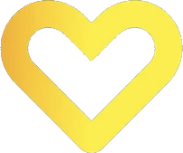

<!DOCTYPE html>
<html lang="de">
<head>
<meta charset="utf-8">
<meta name="viewport" content="width=device-width, initial-scale=1, viewport-fit=cover">
<meta name="theme-color" content="#1c1e21">
<meta name="apple-mobile-web-app-capable" content="yes">
<meta name="mobile-web-app-capable" content="yes">
<meta name="apple-mobile-web-app-status-bar-style" content="black-translucent">
<meta name="apple-mobile-web-app-title" content="Food Academy">
<meta name="format-detection" content="telephone=no, email=no, address=no, date=no">
<link rel="icon" href="img/ui/569bf16adb.png">
<link rel="apple-touch-icon" href="img/app/apple-touch-icon.png">
<link rel="manifest" href="manifest.webmanifest">
<title>EDEKA Food Academy – Seminar-Finder 2027</title>
<meta name="description" content="Finde in wenigen Schritten die Seminare der Food Academy, die wirklich zu deiner Stelle passen.">
<meta property="og:type" content="website">
<meta property="og:locale" content="de_DE">
<meta property="og:site_name" content="EDEKA Food Academy">
<meta property="og:title" content="EDEKA Food Academy – Seminar-Finder 2027">
<meta property="og:description" content="Finde in wenigen Schritten die Seminare der Food Academy, die wirklich zu deiner Stelle passen.">
<meta property="og:url" content="https://edekafoodacademy.github.io/food-academy-seminar-app/">
<meta property="og:image" content="https://edekafoodacademy.github.io/food-academy-seminar-app/img/og-vorschau.jpg">
<meta property="og:image:width" content="1200">
<meta property="og:image:height" content="630">
<meta property="og:image:alt" content="EDEKA Food Academy – Seminare 2027">
<meta name="twitter:card" content="summary_large_image">
<style>
@font-face{font-family:Inter;font-weight:400;font-display:swap;src:url(fonts/inter-regular.woff) format('woff')}
@font-face{font-family:Inter;font-weight:500;font-display:swap;src:url(fonts/inter-medium.woff) format('woff')}
@font-face{font-family:Inter;font-weight:600;font-display:swap;src:url(fonts/inter-semibold.woff) format('woff')}
@font-face{font-family:Inter;font-weight:700 900;font-display:swap;src:url(fonts/inter-bold.woff) format('woff')}
@font-face{font-family:Outfit;font-weight:300 500;font-display:swap;src:url(fonts/outfit-regular.woff) format('woff');unicode-range:U+0000-024F,U+2000-206F,U+20AC}
@font-face{font-family:Outfit;font-weight:600 900;font-display:swap;src:url(fonts/outfit-bold.woff) format('woff');unicode-range:U+0000-024F,U+2000-206F,U+20AC}

:root{
  --y:#FFD200;--y2:#FFE76A;--ya:#F5B400;--bg:#1c1e21;--card:#26292d;--line:rgba(255,255,255,.08);
  --text:#F7F7F5;--muted:#AEB2B6;--dim:#7d8287;--acc:#FFD200;
  --safe-t:env(safe-area-inset-top,0px);--safe-b:env(safe-area-inset-bottom,0px);
  --ease:cubic-bezier(.22,1,.36,1);--spring:cubic-bezier(.34,1.56,.64,1);
  --hf:Outfit,Inter,system-ui,sans-serif;
}
*{box-sizing:border-box;-webkit-tap-highlight-color:transparent}
html,body{margin:0;background:var(--bg);color:var(--text);font-family:Inter,system-ui,-apple-system,"Segoe UI",sans-serif;font-feature-settings:"cv11","ss01";letter-spacing:-.006em;font-weight:500;-webkit-font-smoothing:antialiased;overscroll-behavior-y:none}
body{min-height:100vh;min-height:100dvh;overflow-x:hidden}
body.lock{overflow:hidden}
body.viewing #app,body.viewing #bg,body.viewing .toast{display:none!important}
button{font:inherit;color:inherit;border:0;background:none;cursor:pointer;padding:0}
a{color:inherit}
img{display:block;max-width:100%}
h1,h2,h3{margin:0;font-family:var(--hf);font-weight:800;line-height:1.04;letter-spacing:-.025em}
#app{max-width:540px;margin:0 auto;min-height:100vh;min-height:100dvh;position:relative;z-index:2}

/* ================= BACKGROUND: sharp catalog pattern ================= */
#bg{position:fixed;inset:0;z-index:0;overflow:hidden;pointer-events:none;background:#1c1e21}
#bg .slate{position:absolute;inset:-4%;background:url(img/ui/9f93b0480f.jpg) center/cover;opacity:.5;animation:slatePan 60s ease-in-out infinite alternate}
@keyframes slatePan{from{transform:scale(1) translate3d(0,0,0)}to{transform:scale(1.08) translate3d(-2%,-2%,0)}}
#bg .tint{position:absolute;inset:0;background:linear-gradient(180deg,rgba(28,30,33,.55),rgba(28,30,33,.86) 55%,#17191b)}
#bg .rows{position:absolute;left:-30%;right:-30%;top:-5%;bottom:-5%;transform:rotate(-14deg);display:flex;flex-direction:column;justify-content:space-around}
#bg .row{white-space:nowrap;font-family:var(--hf);font-weight:800;font-size:12vmin;line-height:1;letter-spacing:-.01em;color:transparent;-webkit-text-stroke:1px rgba(255,255,255,.13)}
#bg .row span{display:inline-block;padding-right:.4em}
#bg .row.f{color:rgba(255,210,0,.035);-webkit-text-stroke:1px rgba(255,210,0,.12)}
#bg .row.l{animation:mL 85s linear infinite}#bg .row.r{animation:mR 100s linear infinite}
@keyframes mL{from{transform:translate3d(0,0,0)}to{transform:translate3d(-50%,0,0)}}
@keyframes mR{from{transform:translate3d(-50%,0,0)}to{transform:translate3d(0,0,0)}}
#bg .hrt{position:absolute;width:90vmin;height:90vmin;opacity:.14}
#bg .hrt path{fill:none;stroke:var(--acc);stroke-width:1.2;vector-effect:non-scaling-stroke;stroke-dasharray:3 6;transition:stroke 1.2s}
#bg .h1{right:-38vmin;top:6vh;animation:hspin 70s linear infinite}
#bg .h2{left:-42vmin;bottom:-30vmin;width:110vmin;height:110vmin;opacity:.09;animation:hspin 95s linear infinite reverse}
@keyframes hspin{to{transform:rotate(360deg)}}
#bg .arrows{position:absolute;left:6%;top:58%;display:flex;gap:10px;opacity:.16}
#bg .arrows svg{width:60px;height:24px;stroke:var(--y);fill:none;stroke-width:2.4;animation:arr 3.6s var(--ease) infinite}
#bg .arrows svg:nth-child(2){animation-delay:.25s}#bg .arrows svg:nth-child(3){animation-delay:.5s}
@keyframes arr{0%,100%{transform:translateX(0);opacity:.3}50%{transform:translateX(16px);opacity:1}}

/* ================= INTRO ================= */
#intro{position:fixed;inset:0;z-index:100;background:#17191b;display:grid;place-items:center;overflow:hidden;cursor:pointer}
#intro::before{content:"";position:absolute;inset:0;background:url(img/ui/9f93b0480f.jpg) center/cover;opacity:.55}
#intro .glow{position:absolute;width:80vmin;height:80vmin;border-radius:50%;background:radial-gradient(circle,rgba(255,210,0,.28),rgba(255,210,0,0) 62%);opacity:0}
#intro .ing{position:absolute;width:76px;opacity:0;pointer-events:none}
#intro .stage{position:relative;width:min(84vw,420px);aspect-ratio:900/301}
#intro .stage .base{position:absolute;inset:0;width:100%;opacity:0;clip-path:inset(0 100% 0 0)}
#intro .stage .ht{position:absolute;left:40.78%;top:0;width:22.56%;right:auto;bottom:auto;opacity:0;transform-origin:50% 50%}
#intro .tag{position:absolute;left:0;right:0;top:calc(50% + min(22vw,110px));text-align:center;font-family:var(--hf);font-weight:600;letter-spacing:.32em;font-size:13px;color:var(--y);opacity:0}
#intro .skip{position:absolute;bottom:calc(24px + var(--safe-b));left:0;right:0;text-align:center;font-size:12px;color:rgba(255,255,255,.45);letter-spacing:.06em}

/* ================= transitions ================= */
.view{position:relative}
.enter-fwd{animation:inFwd .5s var(--ease) both}.enter-back{animation:inBack .5s var(--ease) both}.enter-up{animation:inUp .7s var(--ease) both}
.vghost{position:fixed!important;z-index:3;pointer-events:none;margin:0!important}
.leave-fwd{animation:outFwd .45s var(--ease) both}.leave-back{animation:outBack .45s var(--ease) both}
@keyframes inFwd{from{opacity:0;transform:translate3d(18px,0,0)}to{opacity:1;transform:none}}
@keyframes inBack{from{opacity:0;transform:translate3d(-18px,0,0)}to{opacity:1;transform:none}}
@keyframes outFwd{to{opacity:0;transform:translate3d(-48px,0,0) scale(.97)}}
@keyframes outBack{to{opacity:0;transform:translate3d(48px,0,0) scale(.97)}}
@keyframes inUp{from{opacity:0;transform:translate3d(0,14px,0)}to{opacity:1;transform:none}}
.stg{animation:stgIn .55s var(--ease) backwards;animation-delay:calc(var(--i,0) * 35ms + 80ms)}
@keyframes stgIn{from{opacity:0;transform:translate3d(0,10px,0)}}
@keyframes rise{from{opacity:0;transform:translate3d(0,26px,0)}}
.rv{opacity:0;transform:translate3d(0,18px,0);transition:opacity .7s var(--ease),transform .7s var(--ease)}
.rv.in{opacity:1;transform:none}
@keyframes pop{from{opacity:0;transform:scale(.2) rotate(-20deg)}}
@keyframes shine{0%,72%{transform:translateX(-140%) skewX(-18deg)}100%{transform:translateX(140%) skewX(-18deg)}}
@keyframes beat{0%,100%{transform:scale(1)}12%{transform:scale(1.07)}24%{transform:scale(1)}36%{transform:scale(1.04)}50%{transform:scale(1)}}
.rip{position:absolute;border-radius:50%;pointer-events:none;background:radial-gradient(circle,rgba(255,255,255,.35),rgba(255,255,255,0) 70%);transform:scale(0);animation:rip .7s var(--ease) forwards;z-index:3}
@keyframes rip{to{transform:scale(1);opacity:0}}
.fly,.burst{position:fixed;z-index:80;pointer-events:none;width:64px;filter:drop-shadow(0 12px 14px rgba(0,0,0,.5));will-change:transform}

/* ================= bars ================= */
.bar{position:sticky;top:0;z-index:20;display:flex;align-items:center;gap:10px;padding:calc(10px + var(--safe-t)) 16px 10px;background:rgba(28,30,33,.92);backdrop-filter:blur(18px);-webkit-backdrop-filter:blur(18px);border-bottom:1px solid var(--line)}
.bar .ttl{flex:1;min-width:0;font-family:var(--hf);font-weight:700;font-size:17px;white-space:nowrap;overflow:hidden;text-overflow:ellipsis;transition:opacity .35s,transform .35s var(--ease)}
.bar.float{background:transparent;border-color:transparent;backdrop-filter:none;-webkit-backdrop-filter:none;transition:background .35s}
.bar.float .ttl{opacity:0;transform:translateY(8px)}
.bar.float.solid{background:rgba(28,30,33,.92);backdrop-filter:blur(18px);-webkit-backdrop-filter:blur(18px);border-color:var(--line)}
.bar.float.solid .ttl{opacity:1;transform:none}
.iconbtn{width:44px;height:44px;border-radius:14px;display:grid;place-items:center;flex:none;position:relative;overflow:hidden;background:rgba(255,255,255,.08);border:1px solid rgba(255,255,255,.1);transition:transform .45s var(--spring)}
.bar.float .iconbtn{background:rgba(0,0,0,.45);}
.iconbtn:active{transform:scale(.86)}
.iconbtn svg{width:20px;height:20px;stroke:#fff;fill:none;stroke-width:2.2;stroke-linecap:round;stroke-linejoin:round}
.sndbtn.off svg{opacity:.4}
.steplbl{font-family:var(--hf);font-weight:600;font-size:16px;flex:1}
.steplbl b{color:var(--y)}
.tray{display:flex;justify-content:space-between;align-items:center;padding:14px 22px 0;position:relative}
.tray::before,.tray .fill{content:"";position:absolute;left:44px;right:44px;top:50%;margin-top:7px;height:3px;border-radius:3px;background:rgba(255,255,255,.08)}
.tray .fill{right:auto;width:var(--w,0);background:linear-gradient(90deg,var(--ya),var(--y));transition:width .9s var(--ease)}
.slot{width:46px;height:46px;border-radius:50%;background:#1f2225;border:1.5px solid rgba(255,255,255,.12);display:grid;place-items:center;position:relative;z-index:1;transition:all .5s var(--ease)}
.slot img{width:40px;height:40px;object-fit:contain;filter:drop-shadow(0 4px 6px rgba(0,0,0,.5))}
.slot.on{border-color:rgba(255,210,0,.7)}
.slot.on img{animation:pop .7s var(--spring) backwards}
.slot.cur{border-color:var(--y);box-shadow:0 0 0 5px rgba(255,210,0,.12)}

/* ================= surfaces & buttons ================= */
.cta,.opt,.btn2,.row,.tile,.fchip,.card,.qtile,.tchip,.lnk{position:relative;overflow:hidden;isolation:isolate}
.cta{display:flex;align-items:center;justify-content:center;gap:10px;width:100%;min-height:62px;border-radius:20px;font-family:var(--hf);font-weight:700;font-size:18px;color:#17181a;text-decoration:none;
  background:linear-gradient(180deg,var(--y2) 0%,var(--y) 50%,var(--ya) 100%);box-shadow:inset 0 1px 0 rgba(255,255,255,.7),0 16px 36px -14px rgba(255,200,0,.75);transition:transform .5s var(--spring)}
.cta::after{content:"";position:absolute;top:0;bottom:0;width:40%;left:30%;background:linear-gradient(90deg,transparent,rgba(255,255,255,.65),transparent);transform:translateX(-140%) skewX(-18deg);animation:shine 5s var(--ease) 2s infinite;pointer-events:none}
.cta:active{transform:scale(.955)}
.cta svg{width:22px;height:22px;stroke:currentColor;fill:none;stroke-width:2.5;stroke-linecap:round;stroke-linejoin:round;transition:transform .5s var(--spring)}
.cta:active svg{transform:translateX(6px)}
.cta[disabled]{filter:grayscale(1);opacity:.35}.cta[disabled]::after{display:none}
.cta.ghost{color:var(--text);font-weight:600;font-size:16px;min-height:56px;background:rgba(255,255,255,.07);border:1px solid rgba(255,255,255,.12);box-shadow:none}
.cta.ghost::after{display:none}
.glass{background:linear-gradient(180deg,rgba(52,55,59,.94),rgba(38,41,44,.94));border:1px solid rgba(255,255,255,.085);box-shadow:inset 0 1px 0 rgba(255,255,255,.06),0 18px 38px -26px rgba(0,0,0,.95)}
.pad{padding:18px 18px 0}
.kicker{font-family:var(--hf);font-size:13px;font-weight:600;letter-spacing:.2em;text-transform:uppercase;color:var(--y)}
.lead{color:var(--muted);font-size:15px;line-height:1.55;margin:10px 0 0}
.tri{width:13px;height:13px;flex:none;stroke:var(--y);fill:none;stroke-width:2.6;stroke-linejoin:round}

/* ================= start ================= */
.top{display:flex;align-items:center;justify-content:space-between;padding:calc(16px + var(--safe-t)) 18px 0;position:relative;z-index:3}
.mlogo{position:relative;width:min(56vw,230px);aspect-ratio:900/301;animation:rise 1s var(--ease) .1s backwards}
.mlogo img{position:absolute;inset:0;width:100%}
.mlogo .ht{left:40.78%;width:22.56%;top:0;right:auto;bottom:auto;transform-origin:50% 60%;animation:beat 3.8s ease-in-out 1.2s infinite}
.hero{padding:26px 18px 0;position:relative}
.hero h1{font-size:clamp(50px,14.5vw,76px);font-weight:800;line-height:.94;letter-spacing:-.04em}
.hero h1 .ln{display:block;overflow:hidden;padding-bottom:.07em}
.hero h1 .w{display:inline-block;transform:translateY(108%);animation:wordUp 1s var(--ease) forwards}
@keyframes wordUp{to{transform:none}}
.hero h1 .hl{position:relative;padding:0 .12em;margin-left:-.06em;isolation:isolate}
.hero h1 .hl::before{content:"";position:absolute;inset:.08em -.02em .02em;background:linear-gradient(100deg,var(--ya),var(--y) 45%,var(--y2));border-radius:.16em;z-index:-1;transform:scaleX(0);transform-origin:left;animation:mark .85s var(--ease) 1s forwards;box-shadow:0 12px 40px -10px rgba(255,210,0,.6)}
@keyframes mark{to{transform:scaleX(1)}}
.hero h1 .hl .w{animation:wordUp 1s var(--ease) forwards,toDark .25s 1.3s forwards}
@keyframes toDark{to{color:#17181a}}
.hero p{color:#d2d5d7;font-size:16px;line-height:1.55;margin:16px 0 0;max-width:31ch;animation:rise .9s var(--ease) 1s backwards}
.visual{position:relative;margin:26px 18px 0;height:250px;animation:rise 1s var(--ease) 1.1s backwards}
.visual .img{position:absolute;inset:0;border-radius:28px;overflow:hidden;box-shadow:0 30px 60px -30px rgba(0,0,0,.9),0 0 0 1px rgba(255,255,255,.08)}
.visual .img div{position:absolute;inset:-8%;background-size:cover;background-position:center 35%;animation:kb 18s ease-in-out infinite alternate}
@keyframes kb{from{transform:scale(1) translate3d(0,0,0)}to{transform:scale(1.12) translate3d(-3%,2%,0)}}
.visual .img::after{content:"";position:absolute;inset:0;background:linear-gradient(200deg,rgba(0,0,0,0) 40%,rgba(0,0,0,.55))}
.visual .yr{position:absolute;left:18px;bottom:8px;font-family:var(--hf);font-weight:900;font-size:110px;line-height:1;color:transparent;-webkit-text-stroke:2px rgba(255,255,255,.85);letter-spacing:-.05em}
.badge{position:absolute;right:-6px;top:-24px;width:118px;height:118px;border-radius:50%;background:#17181a;border:2px solid var(--y);display:grid;place-items:center;box-shadow:0 16px 30px -10px rgba(0,0,0,.7)}
.badge svg.ring{position:absolute;inset:4px;width:calc(100% - 8px);height:calc(100% - 8px);animation:hspin 34s linear infinite;overflow:visible}
.badge svg.ring text{font-family:var(--hf);font-weight:700;font-size:9.2px;fill:var(--y)}
.badge .bh{width:38px;position:relative;z-index:1;animation:beat 3.8s ease-in-out infinite}
.flow{display:flex;align-items:center;gap:6px;margin:22px 18px 0;animation:rise .9s var(--ease) 1.2s backwards}
.fstep{flex:1;display:flex;align-items:center;gap:9px;min-width:0}
.fstep b{flex:none;width:30px;height:30px;border-radius:50%;display:grid;place-items:center;font-family:var(--hf);font-weight:800;font-size:14px;color:#17181a;background:linear-gradient(145deg,var(--y2),var(--ya));box-shadow:0 6px 16px -6px rgba(255,210,0,.6)}
.fstep span{font-size:12.5px;line-height:1.2;color:#e9e9e9;font-weight:600}
.flow .fl{flex:none;width:14px;height:2px;border-radius:2px;background:linear-gradient(90deg,rgba(255,210,0,.7),rgba(255,210,0,.15))}
.stat{padding:12px;border-radius:18px;text-align:left}
.stat b{display:block;font-family:var(--hf);font-size:28px;color:#fff;font-weight:700;line-height:1}
.stat span{font-size:12px;color:var(--muted)}
.startcta{padding:20px 18px 0;display:grid;gap:10px;animation:rise .9s var(--ease) 1.4s backwards}
.sect{padding:40px 18px 0}
.sect h2{font-size:30px;margin-top:8px}
.catscroll{display:flex;gap:10px;overflow-x:auto;padding:16px 18px 6px;margin:0 -18px;scroll-snap-type:x mandatory;scrollbar-width:none}
.catscroll::-webkit-scrollbar{display:none}
.catscroll .tile{flex:none;width:152px;min-height:184px;scroll-snap-align:start}
.katcard{display:block;width:100%;text-align:left;margin-top:16px;border-radius:28px;padding:20px;position:relative;overflow:hidden;min-height:250px}
.katcard h3{font-size:23px;max-width:52%}
.katcard p{font-size:14px;color:var(--muted);margin:8px 0 0;max-width:52%;line-height:1.45}
.katcard .open{display:inline-flex;align-items:center;gap:8px;margin-top:18px;font-family:var(--hf);font-weight:700;color:#17181a;background:var(--y);padding:11px 16px;border-radius:14px}
.katcard .open svg{width:18px;height:18px;stroke:currentColor;fill:none;stroke-width:2.4}
.fan{position:absolute;right:-34px;top:30px;width:44%;height:210px}
.fan img{position:absolute;right:10px;top:0;width:118px;border-radius:6px;box-shadow:0 16px 30px -10px rgba(0,0,0,.8);transform-origin:50% 120%;transition:transform 1.1s var(--ease)}
.fan img:nth-child(1){transform:rotate(0)}.fan img:nth-child(2){transform:rotate(0)}.fan img:nth-child(3){transform:rotate(0)}
.katcard.in .fan img:nth-child(1){transform:rotate(-12deg) translateX(-10px)}
.katcard.in .fan img:nth-child(2){transform:rotate(-4deg) translateX(-6px)}
.katcard.in .fan img:nth-child(3){transform:rotate(9deg) translateX(14px) translateY(6px)}
.howto{display:grid;gap:10px;margin-top:16px}
.howto div{display:flex;gap:14px;align-items:center;padding:14px;border-radius:20px}
.howto b.n{flex:none;width:40px;height:40px;border-radius:12px;display:grid;place-items:center;font-family:var(--hf);font-weight:800;font-size:18px;background:linear-gradient(145deg,var(--y2),var(--ya));color:#17181a}
.howto span{font-size:14px;color:#d6d8da;line-height:1.4}.howto span strong{color:#fff;display:block;font-size:15.5px}
.qgrid{display:grid;grid-template-columns:1fr 1fr;gap:10px;margin-top:16px}
.qtile{border-radius:22px;padding:16px;text-align:left;display:flex;flex-direction:column;gap:12px;min-height:124px;transition:transform .5s var(--spring);text-decoration:none}
.qtile .qi{width:42px;height:42px;border-radius:13px;display:grid;place-items:center;background:rgba(255,210,0,.13)}
.qtile .qi svg{width:22px;height:22px;stroke:var(--y);fill:none;stroke-width:2;stroke-linecap:round;stroke-linejoin:round}
.qtile b{font-family:var(--hf);font-size:16.5px;font-weight:700;display:block}
.qtile .s{font-size:12.5px;color:var(--muted)}
.qtile:active,.opt:active,.row:active,.tile:active,.katcard:active{transform:scale(.965)}
.foot{margin:40px 18px 0;padding:18px 0 calc(28px + var(--safe-b));border-top:1px solid var(--line);font-size:12px;color:var(--dim);line-height:1.6;text-align:center}

/* ================= quiz ================= */
.q{padding:20px 18px 0}
.q h2{font-size:31px}
.q .hint{color:var(--muted);font-size:14px;margin-top:10px;display:flex;align-items:center;gap:8px}
.pill{font-size:11px;font-weight:700;letter-spacing:.06em;text-transform:uppercase;color:#17181a;background:var(--y);padding:3px 8px;border-radius:999px}
.opts{display:grid;gap:10px;margin-top:20px}
.opt{display:flex;align-items:center;gap:14px;width:100%;min-height:70px;padding:14px 16px;border-radius:22px;text-align:left;transition:transform .5s var(--spring),border-color .3s,box-shadow .4s,background .4s}
.opt .tx{flex:1;min-width:0}
.opt b{display:block;font-family:var(--hf);font-size:17.5px;font-weight:600;line-height:1.2}
.opt small{display:block;color:var(--muted);font-size:13px;margin-top:3px;line-height:1.35}
.opt .ic{width:48px;height:48px;border-radius:15px;display:grid;place-items:center;flex:none;background:rgba(255,210,0,.12);transition:transform .6s var(--spring),background .4s}
.opt .ic svg{width:24px;height:24px;stroke:var(--y);fill:none;stroke-width:2;stroke-linecap:round;stroke-linejoin:round}
.chk{width:28px;height:28px;border-radius:50%;border:2px solid rgba(255,255,255,.22);flex:none;display:grid;place-items:center;transition:background .3s,border-color .3s,transform .5s var(--spring)}
.chk.sq{border-radius:9px}
.chk svg{width:15px;height:15px;stroke:#17181a;stroke-width:3.4;fill:none}
.chk path{stroke-dasharray:26;stroke-dashoffset:26;transition:stroke-dashoffset .4s var(--ease) .08s}
.on .chk{background:var(--y);border-color:var(--y);transform:scale(1.1)}
.on .chk path{stroke-dashoffset:0}
.opt.on{border-color:rgba(255,210,0,.75)!important;background:linear-gradient(135deg,rgba(255,210,0,.18),rgba(255,210,0,.04))!important;box-shadow:0 0 0 1px rgba(255,210,0,.4),0 18px 36px -20px rgba(255,210,0,.5)}
.opt.on .ic{transform:scale(1.08) rotate(-6deg);background:linear-gradient(145deg,var(--y2),var(--ya))}
.opt.on .ic svg{stroke:#17181a}
.hearts{display:flex;gap:3px}
.hearts svg{width:18px;height:17px;animation:pop .6s var(--spring) backwards}
.hearts svg:nth-child(2){animation-delay:.1s}.hearts svg:nth-child(3){animation-delay:.2s}
.hearts.sm svg{width:14px;height:13px}
.tiles{display:grid;grid-template-columns:1fr 1fr;gap:10px;margin-top:20px}
.tile{--c:#888;position:relative;min-height:144px;border-radius:24px;text-align:left;padding:14px;display:flex;flex-direction:column;justify-content:flex-end;
  background:linear-gradient(155deg,color-mix(in srgb,var(--c) 90%,#fff 10%),color-mix(in srgb,var(--c) 62%,#000 38%));box-shadow:inset 0 1px 0 rgba(255,255,255,.28),0 18px 32px -20px rgba(0,0,0,.95);transition:transform .5s var(--spring),box-shadow .4s}
.tile::before{content:"";position:absolute;inset:0;z-index:2;background:linear-gradient(90deg,color-mix(in srgb,var(--c) 72%,#000 28%),color-mix(in srgb,var(--c) 30%,transparent) 55%,transparent 80%);pointer-events:none}
.tile::after{content:"";position:absolute;inset:0;z-index:4;border-radius:inherit;box-shadow:inset 0 0 0 0 var(--y);transition:box-shadow .4s var(--ease);pointer-events:none}
.tile .nm{position:relative;z-index:3;font-family:var(--hf);font-weight:700;font-size:17px;line-height:1.08;color:#fff;max-width:68%}
.tile .sb{position:relative;z-index:3;font-size:11px;color:rgba(255,255,255,.86);margin-top:5px;max-width:70%;line-height:1.3}
.tile .ppl{position:absolute;right:-10px;bottom:0;height:104%;max-width:52%;object-fit:contain;object-position:bottom right;z-index:1;transition:transform .7s var(--ease)}
.tile .ingi{position:absolute;right:-12px;top:-8px;width:100px;z-index:1;transform:rotate(-10deg);filter:drop-shadow(0 10px 12px rgba(0,0,0,.35));transition:transform .7s var(--spring)}
.tile .icn{position:absolute;right:12px;top:14px;width:52px;height:52px;z-index:1;transition:transform .7s var(--spring)}
.tile .icn svg{width:100%;height:100%;stroke:rgba(255,255,255,.92);fill:none;stroke-width:1.5;stroke-linecap:round;stroke-linejoin:round}
.tile .chk{position:absolute;left:12px;top:12px;z-index:5;background:rgba(0,0,0,.28);border-color:rgba(255,255,255,.75)}
.tile.on::after{box-shadow:inset 0 0 0 3px var(--y)}
.tile.on .ppl{transform:scale(1.06) translateY(-3px)}.tile.on .ingi{transform:rotate(8deg) scale(1.12)}.tile.on .icn{transform:rotate(-8deg) scale(1.12)}
.tile.lite .nm{color:#17181a}.tile.lite .sb{color:rgba(0,0,0,.72)}.tile.lite .icn svg{stroke:rgba(0,0,0,.75)}
.tile.full{grid-column:1/-1;min-height:68px;justify-content:center}
.tgrp{margin-top:22px}
.tgrp .gh{display:flex;align-items:center;gap:8px;font-family:var(--hf);font-weight:700;font-size:13px;letter-spacing:.12em;text-transform:uppercase;color:var(--c)}
.tgrp .gh i{width:20px;height:4px;border-radius:2px;background:var(--c)}
.tchips{display:flex;flex-wrap:wrap;gap:8px;margin-top:10px}
.tchip{display:inline-flex;align-items:center;gap:8px;padding:12px 15px;border-radius:16px;font-weight:600;font-size:14.5px;transition:transform .5s var(--spring),background .3s,border-color .3s}
.tchip .chk{width:22px;height:22px;border-radius:7px}.tchip .chk svg{width:12px;height:12px}
.tchip.on{background:linear-gradient(135deg,rgba(255,210,0,.2),rgba(255,210,0,.05))!important;border-color:rgba(255,210,0,.7)!important}
.tchip:active{transform:scale(.94)}
.dock{position:sticky;bottom:0;z-index:10;padding:18px 18px calc(16px + var(--safe-b));margin-top:16px;background:linear-gradient(180deg,rgba(28,30,33,0),rgba(28,30,33,.94) 34%)}
.dock .cta{transition:transform .5s var(--spring),opacity .3s}
.dock.hide .cta{transform:translateY(130%);opacity:0;pointer-events:none}
.selcount{text-align:center;font-size:12px;color:var(--muted);margin-bottom:8px;min-height:1em}

/* ================= results ================= */
.reshead h1{font-size:36px;margin-top:8px}
.sumchips{display:flex;flex-wrap:wrap;gap:6px;margin-top:14px}
.chip{font-size:12px;font-weight:600;padding:6px 11px;border-radius:999px;background:rgba(255,255,255,.07);border:1px solid rgba(255,255,255,.09);color:#e2e2e2}
.card{margin-top:18px;border-radius:28px}
.card .hd{position:relative;height:186px;overflow:hidden;background:linear-gradient(155deg,color-mix(in srgb,var(--c) 90%,#fff 10%),color-mix(in srgb,var(--c) 58%,#000 42%))}
.card .hd .ph{width:100%;height:100%;object-fit:cover}
.card .hd .ppl{position:absolute;right:4px;bottom:-4px;height:112%;object-fit:contain}
.card .hd .ingi{position:absolute;left:42%;top:24px;width:84px;transform:rotate(-12deg);filter:drop-shadow(0 12px 14px rgba(0,0,0,.4));animation:floaty 5s ease-in-out infinite alternate}
.hicn{position:absolute;left:30%;top:36px;width:88px;height:88px;z-index:1;animation:floaty 5s ease-in-out infinite alternate}
.hicn svg{width:100%;height:100%;stroke:rgba(255,255,255,.95);fill:rgba(255,255,255,.08);stroke-width:1.4;stroke-linecap:round;stroke-linejoin:round}
@keyframes floaty{to{transform:rotate(8deg) translateY(-10px)}}
.card .hd::after{content:"";position:absolute;inset:0;background:linear-gradient(180deg,rgba(0,0,0,0) 42%,rgba(36,38,42,.98));pointer-events:none}
.rank{position:absolute;top:14px;left:14px;z-index:3;display:flex;align-items:center;gap:6px;background:rgba(0,0,0,.45);;color:#fff;font-family:var(--hf);font-weight:700;font-size:13px;padding:6px 12px 6px 6px;border-radius:999px}
.rank b{width:24px;height:24px;border-radius:50%;display:grid;place-items:center;background:var(--y);color:#17181a;font-size:13px}
.rank.r1{background:linear-gradient(90deg,var(--ya),var(--y));color:#17181a}
.rank.r1 b{background:#17181a;color:var(--y)}
.pg{position:absolute;right:14px;top:14px;z-index:2;font-family:var(--hf);font-weight:700;font-size:13px;color:#fff;background:rgba(0,0,0,.4);padding:5px 10px;border-radius:999px}
.catpill{display:inline-flex;align-items:center;gap:6px;font-size:11px;font-weight:700;letter-spacing:.06em;text-transform:uppercase;color:#fff;padding:5px 10px;border-radius:999px;background:var(--c)}
.catpill.lite{color:#17181a}
.card .body{padding:2px 20px 20px;position:relative;z-index:2}
.card h3{font-size:23px;margin-top:12px;line-height:1.1}
.sub{color:var(--muted);font-weight:600;font-size:12px;letter-spacing:.04em;text-transform:uppercase;margin-top:7px;line-height:1.4}
.metarow{display:flex;align-items:center;gap:8px;flex-wrap:wrap}
.lvltag{display:inline-flex;align-items:center;gap:7px;background:rgba(255,255,255,.07);border-radius:999px;padding:5px 10px 5px 8px;font-size:11px;font-weight:700}
.match{margin-top:14px;display:flex;align-items:center;gap:10px;font-size:12px;color:var(--muted)}
.match .bar2{flex:1;height:6px;border-radius:6px;background:rgba(255,255,255,.08);overflow:hidden}
.match .bar2 i{display:block;height:100%;width:0;border-radius:6px;background:linear-gradient(90deg,var(--ya),var(--y));transition:width 1.4s var(--ease) .4s}
.match b{font-family:var(--hf);color:#fff;font-size:14px}
.why{list-style:none;padding:0;margin:14px 0 0;display:grid;gap:7px}
.why li{display:flex;gap:9px;font-size:14px;line-height:1.35;color:#e6e6e4}
.why li svg{width:18px;height:18px;flex:none;margin-top:1px;stroke:var(--y);stroke-width:2.8;fill:none;stroke-linecap:round;stroke-linejoin:round}
.facts{display:flex;flex-wrap:wrap;gap:8px;margin-top:14px}
.facts span{display:flex;align-items:center;gap:6px;font-size:12.5px;color:#ddd;background:rgba(255,255,255,.06);padding:6px 10px;border-radius:10px}
.facts svg{width:14px;height:14px;stroke:var(--y);fill:none;stroke-width:2.2;stroke-linecap:round;stroke-linejoin:round}
.btnrow{display:grid;grid-template-columns:1fr 1.3fr;gap:10px;margin-top:18px}
.btn2{min-height:52px;border-radius:16px;font-family:var(--hf);font-weight:700;font-size:16px;display:flex;align-items:center;justify-content:center;gap:6px;transition:transform .5s var(--spring);background:rgba(255,255,255,.08);border:1px solid rgba(255,255,255,.1);text-decoration:none}
.btn2.y{background:linear-gradient(180deg,var(--y2),var(--y) 55%,var(--ya));color:#17181a;border:0}
.btn2:active{transform:scale(.94)}
.btn2 svg{width:18px;height:18px;stroke:currentColor;fill:none;stroke-width:2.4;stroke-linecap:round;stroke-linejoin:round}
.row{display:flex;gap:12px;align-items:center;width:100%;text-align:left;padding:10px 12px 10px 10px;margin-top:10px;border-radius:22px;transition:transform .5s var(--spring)}
.row .th{width:66px;height:66px;border-radius:16px;flex:none;position:relative;overflow:hidden;background:linear-gradient(155deg,color-mix(in srgb,var(--c) 90%,#fff 10%),color-mix(in srgb,var(--c) 58%,#000 42%))}
.row .th img{position:absolute;inset:0;width:100%;height:100%;object-fit:cover}
.row .th img.cut{object-fit:contain;object-position:bottom;top:8px;height:110%}
.row .tx{flex:1;min-width:0}
.row .t{display:block;font-family:var(--hf);font-size:16px;font-weight:600;line-height:1.2}
.row small{display:block;font-size:11px;color:var(--muted);margin-top:4px;text-transform:uppercase;letter-spacing:.04em;white-space:nowrap;overflow:hidden;text-overflow:ellipsis}
.row .mt{display:flex;align-items:center;gap:8px;margin-top:6px;font-size:11px;color:var(--dim)}
.row .arr{width:20px;height:20px;stroke:var(--muted);fill:none;stroke-width:2.4;flex:none}
.tag{font-size:10px;font-weight:700;letter-spacing:.06em;text-transform:uppercase;color:var(--y)}
.tag.n{color:#fff;background:#C8137F;padding:2px 7px;border-radius:6px}

/* ================= catalog list ================= */
.chips{display:flex;gap:8px;overflow-x:auto;padding:14px 18px 4px;scrollbar-width:none}
.chips::-webkit-scrollbar{display:none}
.fchip{flex:none;padding:10px 14px;border-radius:14px;font-weight:600;font-size:13.5px;white-space:nowrap;background:rgba(255,255,255,.07);border:1px solid rgba(255,255,255,.1);transition:all .4s var(--ease);display:flex;align-items:center;gap:7px}
.fchip i{width:9px;height:9px;border-radius:50%;background:var(--c)}
.fchip.on{background:var(--c);border-color:transparent;color:#fff}
.fchip.on.lite{color:#17181a}.fchip.on i{background:#fff}
.search{margin:12px 18px 0;display:flex;align-items:center;gap:10px;border-radius:18px;padding:0 16px;height:54px}
.search svg{width:19px;height:19px;stroke:var(--muted);fill:none;stroke-width:2.2;flex:none}
.search input{flex:1;background:none;border:0;outline:0;color:var(--text);font:inherit;font-size:16px;min-width:0}
.cath{display:flex;align-items:center;gap:8px;margin:28px 0 2px;font-family:var(--hf);font-weight:700;font-size:13px;letter-spacing:.12em;text-transform:uppercase;color:var(--c)}
.cath i{width:22px;height:4px;border-radius:2px;background:var(--c)}
.lnk{display:flex;align-items:center;gap:14px;text-decoration:none;margin:14px 18px 0;padding:14px 16px;border-radius:22px;width:calc(100% - 36px);text-align:left;transition:transform .5s var(--spring)}
.lnk:active{transform:scale(.97)}
.lnk .pi{flex:none;width:46px;height:46px;border-radius:14px;display:grid;place-items:center;background:linear-gradient(145deg,var(--y2),var(--ya))}
.lnk .pi svg{width:24px;height:24px;stroke:#17181a;fill:none;stroke-width:2.2;stroke-linecap:round;stroke-linejoin:round}
.lnk b{font-family:var(--hf);font-size:16px;font-weight:700;display:block}
.lnk .s{font-size:12.5px;color:var(--muted)}
.lnk .arr{width:20px;height:20px;stroke:var(--muted);fill:none;stroke-width:2.4;margin-left:auto;flex:none}

/* ================= detail ================= */
.dhero{position:relative;height:330px;margin-top:calc(-65px - var(--safe-t));overflow:hidden;background:linear-gradient(155deg,color-mix(in srgb,var(--c) 90%,#fff 10%),color-mix(in srgb,var(--c) 55%,#000 45%))}
.dhero .ph{width:100%;height:100%;object-fit:cover;animation:kb 20s ease-in-out infinite alternate}
.dhero .ppl{position:absolute;right:8px;bottom:-6px;height:96%;object-fit:contain}
.dhero .ingi{position:absolute;left:12%;top:100px;width:118px;transform:rotate(-14deg);animation:floaty 6s ease-in-out infinite alternate;filter:drop-shadow(0 16px 18px rgba(0,0,0,.4))}
.dhero .hicn{left:14%;top:110px;width:116px;height:116px}
.dhero::after{content:"";position:absolute;inset:0;background:linear-gradient(180deg,rgba(0,0,0,.35),rgba(0,0,0,0) 30%,rgba(28,30,33,.2) 60%,var(--bg))}
.dhero .pg{top:auto;bottom:22px;right:auto;left:18px}
.dtitle{padding:0 18px;position:relative;z-index:2}
.dtitle h1{font-size:31px;margin-top:12px}
.kf{display:grid;grid-template-columns:1fr 1fr;gap:10px;margin:20px 18px 0}
.kf div{border-radius:18px;padding:13px}
.kf .full{grid-column:1/-1}
.kf small{display:block;font-size:11px;font-weight:700;letter-spacing:.1em;text-transform:uppercase;color:var(--dim)}
.kf b{display:block;font-size:14.5px;font-weight:600;margin-top:5px;line-height:1.35}
.dsec{margin:28px 18px 0}
.dh{display:flex;align-items:center;gap:8px;font-family:var(--hf);font-weight:700;font-size:13px;letter-spacing:.16em;text-transform:uppercase;color:var(--y)}
.dsec ul{margin:12px 0 0;padding:0;list-style:none;display:grid;gap:9px}
.dsec li{position:relative;padding-left:18px;font-size:15px;line-height:1.5;color:#e6e6e4}
.dsec li::before{content:"";position:absolute;left:1px;top:.62em;width:7px;height:7px;border-radius:50%;background:var(--c,var(--y))}
.dsec p{margin:10px 0 0;font-size:15px;line-height:1.5;color:#e6e6e4}
.tgroup{margin-top:14px}
.tgroup .o{font-size:13px;font-weight:700;color:var(--muted);margin-bottom:7px;display:flex;align-items:center;gap:6px}
.tgroup .o svg{width:14px;height:14px;stroke:var(--y);fill:none;stroke-width:2.2}
.tlist{display:flex;flex-wrap:wrap;gap:8px}
.tdate{border-radius:13px;padding:9px 12px;font-size:13.5px;font-weight:600;background:rgba(255,255,255,.07);border:1px solid rgba(255,255,255,.08)}
.tdate em{display:block;font-style:normal;color:var(--y);font-weight:600;font-size:11px;margin-top:2px}
.note{margin:20px 18px 0;padding:14px 16px;border-radius:18px;background:rgba(255,210,0,.08);border:1px solid rgba(255,210,0,.25);color:#ffeea0;font-size:14px;line-height:1.5}
.mods{display:grid;gap:8px;margin-top:12px}
.mod{border-radius:16px;padding:11px 13px}
.mod b{font-size:14px}.mod p{font-size:13px!important;color:var(--muted)!important;margin:3px 0 0!important}
.mod .d{font-size:12px;color:var(--y);font-weight:600;margin-top:6px}

/* ================= registration ================= */
.mini{display:flex;gap:12px;align-items:center;margin-top:6px;padding:10px;border-radius:22px}
.mini .th{width:60px;height:60px;border-radius:14px;flex:none;position:relative;overflow:hidden;background:var(--c)}
.mini .th img{position:absolute;inset:0;width:100%;height:100%;object-fit:cover}
.mini .th img.cut{object-fit:contain;object-position:bottom;top:6px;height:110%}
.mini b{font-family:var(--hf);font-size:16px;font-weight:600;line-height:1.2;display:block}
.mini small{font-size:12px;color:var(--muted)}
.regsteps{display:grid;gap:12px;margin-top:18px}
.rstep{display:flex;gap:14px;padding:16px;border-radius:24px}
.rstep .rn{flex:none;width:40px;height:40px;border-radius:12px;display:grid;place-items:center;font-family:var(--hf);font-weight:800;font-size:18px;background:linear-gradient(145deg,var(--y2),var(--ya));color:#17181a}
.rstep>div{flex:1;min-width:0}
.rstep b{font-family:var(--hf);font-size:18px;font-weight:700;display:block}
.rstep p{margin:6px 0 0;font-size:14px;color:var(--muted);line-height:1.45}
.rstep p.small{font-size:12.5px;margin-top:10px}
.addrbtn{display:flex;align-items:center;gap:10px;margin-top:12px;padding:14px;border-radius:16px;text-decoration:none;background:rgba(255,210,0,.1);border:1px solid rgba(255,210,0,.35);color:var(--y);font-weight:700;font-size:14.5px;word-break:break-all}
.addrbtn svg{width:20px;height:20px;flex:none;stroke:var(--y);fill:none;stroke-width:2.2;stroke-linecap:round;stroke-linejoin:round}
.copyl{display:inline-flex;align-items:center;gap:6px;margin-top:10px;font-size:13px;font-weight:600;color:var(--muted);padding:6px 2px}
.copyl svg{width:15px;height:15px;stroke:currentColor;fill:none;stroke-width:2.2}
.cta.semiro{margin-top:12px;min-height:54px;font-size:16px}
.clist{display:grid;gap:10px;margin-top:14px}
.ccard{padding:15px;border-radius:22px}
.ccard .cr{font-size:11px;font-weight:700;letter-spacing:.1em;text-transform:uppercase;color:var(--y)}
.ccard b{font-family:var(--hf);font-size:18px;font-weight:700;display:block;margin-top:4px}
.ccard .cact{display:grid;grid-template-columns:1.4fr 1fr;gap:8px;margin-top:12px}
.ccard .cact .btn2{min-height:46px;font-size:14px;font-family:"Plus Jakarta Sans",sans-serif}
.ccard .cm{font-size:12px;color:var(--dim);margin-top:8px;word-break:break-all}
.stage{display:flex;gap:14px;align-items:flex-start;margin-top:14px;padding:16px;border-radius:22px}
.stage b{font-family:var(--hf);font-size:18px}
.stage p{margin:6px 0 0;font-size:14px;color:var(--muted);line-height:1.5}
.toast{position:fixed;left:50%;bottom:calc(26px + var(--safe-b));transform:translateX(-50%) translateY(30px) scale(.9);background:#fff;color:#17181a;font-weight:700;font-size:14px;padding:13px 20px;border-radius:999px;opacity:0;transition:all .45s var(--spring);z-index:120;pointer-events:none;box-shadow:0 12px 30px rgba(0,0,0,.35)}
.toast.show{opacity:1;transform:translateX(-50%)}

/* ================= catalog viewer ================= */
#viewer{position:fixed;inset:0;z-index:90;background:#121315;display:none;flex-direction:column}
#viewer.open{display:flex;animation:vIn .35s ease both}
@keyframes vIn{from{opacity:0}to{opacity:1}}
#viewer .vbar{display:flex;align-items:center;gap:10px;padding:calc(10px + var(--safe-t)) 14px 10px;background:rgba(18,19,21,.95);border-bottom:1px solid var(--line);z-index:2}
#viewer .vt{flex:1;min-width:0}
#viewer .vt b{display:block;font-family:var(--hf);font-size:16px;font-weight:700}
#viewer .vt span{font-size:12px;color:var(--muted)}
#pager{flex:1;display:flex;overflow-x:auto;overflow-y:hidden;scroll-snap-type:x mandatory;scrollbar-width:none;overscroll-behavior:contain;touch-action:pan-x pan-y}
#pager::-webkit-scrollbar{display:none}
#pager.zoomed{overflow:hidden;scroll-snap-type:none}
.pslide{flex:none;width:100%;height:100%;scroll-snap-align:center;scroll-snap-stop:always;overflow:hidden;display:flex;align-items:center;justify-content:center;padding:12px;position:relative}
.pslide img{max-width:100%;max-height:100%;width:auto;height:auto;border-radius:3px;background:#fff;opacity:0;transition:opacity .3s;user-select:none;-webkit-user-select:none;-webkit-touch-callout:none}
.pslide img.ld{opacity:1}
.pslide img:not([src]){width:62%;aspect-ratio:820/1158;background:rgba(255,255,255,.05);opacity:1}
.pslide.z{display:block;overflow:auto;padding:0;-webkit-overflow-scrolling:touch;touch-action:pan-x pan-y}
.pslide.z img{max-width:none;max-height:none;border-radius:0;display:block}
#viewer .vfoot{display:flex;align-items:center;gap:10px;padding:10px 14px calc(12px + var(--safe-b));background:rgba(18,19,21,.95);border-top:1px solid var(--line)}
#viewer .vfoot input[type=range]{flex:1;accent-color:var(--y)}
#viewer .vhint{position:absolute;left:50%;bottom:calc(84px + var(--safe-b));transform:translateX(-50%);background:rgba(0,0,0,.65);color:#fff;font-size:12.5px;padding:8px 14px;border-radius:999px;pointer-events:none;opacity:0;transition:opacity .4s}
#viewer .vhint.show{opacity:1}
#toc{position:absolute;inset:0;z-index:5;background:rgba(10,11,12,.6);opacity:0;pointer-events:none;transition:opacity .35s}
#toc.open{opacity:1;pointer-events:auto}
#toc .sheet{position:absolute;left:0;right:0;bottom:0;max-height:78%;overflow:auto;background:#212427;border-radius:26px 26px 0 0;padding:10px 16px calc(20px + var(--safe-b));transform:translateY(100%);transition:transform .5s var(--ease)}
#toc.open .sheet{transform:none}
#toc .grab{width:44px;height:5px;border-radius:5px;background:rgba(255,255,255,.2);margin:4px auto 14px}
#toc h3{font-size:22px;margin:0 2px 10px}
#toc button.ch{display:flex;align-items:center;gap:12px;width:100%;text-align:left;padding:13px 12px;border-radius:14px;font-weight:600;font-size:15px}
#toc button.ch:active{background:rgba(255,255,255,.06)}
#toc button.ch i{width:12px;height:12px;border-radius:4px;background:var(--c);flex:none}
#toc button.ch span{margin-left:auto;color:var(--dim);font-size:13px}
#toc button.ch.subc{padding-left:36px;font-size:14px;color:#d9dadc}


/* ===== registration page ===== */
.reg .reghead{margin-top:22px}
.reg .reghead h1{font-size:34px;margin-top:8px}
.reg .reghead h2{font-size:28px;margin-top:8px}
.way{margin-top:18px;border-radius:26px;padding:20px;position:relative;overflow:hidden}
.way::before{content:"";position:absolute;right:-40px;top:-40px;width:160px;height:160px;border-radius:50%;background:radial-gradient(circle,rgba(255,210,0,.16),transparent 70%)}
.wtop{display:flex;align-items:center;gap:12px}
.wn{width:38px;height:38px;border-radius:12px;display:grid;place-items:center;font-family:var(--hf);font-weight:800;font-size:18px;background:linear-gradient(145deg,var(--y2),var(--ya));color:#17181a}
.wl{font-family:var(--hf);font-weight:700;font-size:21px;flex:1}
.wi svg{width:26px;height:26px;stroke:var(--y);fill:none;stroke-width:1.8;stroke-linecap:round;stroke-linejoin:round}
.wtxt{margin:14px 0 0;color:var(--muted);font-size:14.5px;line-height:1.45}
.mailplate{margin-top:12px;padding:18px 16px;border-radius:18px;background:#121315;border:1px solid rgba(255,210,0,.35);box-shadow:inset 0 0 0 1px rgba(255,255,255,.03),0 0 0 4px rgba(255,210,0,.06);
  font-family:var(--hf);font-weight:600;font-size:clamp(15px,4.5vw,21px);line-height:1.3;color:#fff;letter-spacing:0;user-select:text;-webkit-user-select:text}
.mailplate .fit{display:block;white-space:nowrap;overflow:hidden}.mailplate .at{color:var(--y);font-weight:600}.mailplate .at{color:var(--y)}
.mailplate.small{font-size:clamp(17px,4.8vw,20px)}
.need{margin-top:16px;padding-top:14px;border-top:1px dashed rgba(255,255,255,.12)}
.nh{font-size:11.5px;font-weight:700;letter-spacing:.14em;text-transform:uppercase;color:var(--y)}
.need ul{list-style:none;margin:10px 0 0;padding:0;display:grid;gap:8px}
.need li{position:relative;padding-left:20px;font-size:14.5px;line-height:1.45;color:#e4e4e2}
.need li::before{content:"";position:absolute;left:2px;top:.45em;width:10px;height:10px;border-radius:3px;border:2px solid var(--y)}
.need em{font-style:normal;color:var(--muted)}
.or{display:flex;align-items:center;gap:12px;margin:18px 6px 0;color:var(--dim);font-size:12px;font-weight:700;letter-spacing:.2em;text-transform:uppercase}
.or::before,.or::after{content:"";flex:1;height:1px;background:var(--line)}
.info{margin-top:18px;border-radius:24px;padding:18px}
.tl{display:grid;gap:12px;margin-top:12px}
.tl div{display:flex;gap:12px;align-items:flex-start;font-size:14px;line-height:1.45;color:#d9dbdd}
.tl i{flex:none;width:9px;height:9px;border-radius:50%;background:var(--y);margin-top:6px;box-shadow:0 0 0 4px rgba(255,210,0,.12)}
.tl b{color:#fff}
.cperson{display:flex;gap:14px;align-items:flex-start;padding:16px;border-radius:22px;min-width:0}
.cperson{display:grid!important;grid-template-columns:46px minmax(0,1fr);column-gap:14px;row-gap:0;align-items:center}
.cperson .cav{grid-row:1/3}.cperson .cbody{display:contents}
.cperson .cr,.cperson .cbody>b{grid-column:2;min-width:0}
.cperson .cline{grid-column:1/-1;min-width:0}.cperson .cline:nth-of-type(3){margin-top:12px}
.cline>span:not(.fit){white-space:nowrap}
#app{overflow-x:clip}
.cav{flex:none;width:46px;height:46px;border-radius:50%;display:grid;place-items:center;font-family:var(--hf);font-weight:700;font-size:16px;color:#17181a;background:linear-gradient(145deg,var(--y2),var(--ya))}
.cbody{flex:1;min-width:0}
.cbody .cr{font-size:11px;font-weight:700;letter-spacing:.1em;text-transform:uppercase;color:var(--y)}
.cbody b{display:block;font-family:var(--hf);font-size:18px;font-weight:700;margin:3px 0 6px}
.cline .fit{display:block;white-space:nowrap;overflow:hidden;min-width:0;flex:1}
.cline{display:flex;align-items:flex-start;gap:8px;font-size:13.5px;color:#dcdcdc;margin-top:5px;word-break:normal;overflow-wrap:normal;user-select:text;-webkit-user-select:text}
.cline svg{width:15px;height:15px;flex:none;margin-top:2px;stroke:var(--muted);fill:none;stroke-width:2;stroke-linecap:round;stroke-linejoin:round}
@media (min-width:900px){.reg .pad>*{max-width:760px;margin-left:auto;margin-right:auto}.reg .clist{grid-template-columns:1fr 1fr;max-width:760px}}


.rcount{margin-top:8px;color:var(--muted);font-size:14.5px}.rcount b{color:var(--y);font-family:var(--hf);font-size:17px}
@keyframes selPop{0%{transform:scale(.95)}55%{transform:scale(1.035)}100%{transform:scale(1)}}
.opt.on,.tile.on,.tchip.on{animation:selPop .5s var(--spring)}
.opts:has(.on) .opt:not(.on){opacity:.62}
.opts:has(.on) .opt:not(.on):hover{opacity:.9}
.tiles:has(.on) .tile:not(.on){filter:saturate(.55) brightness(.62)}
.tile.on{box-shadow:0 0 0 3px var(--y),0 18px 34px -14px rgba(255,210,0,.6)}
.tile.on .chk{background:var(--y)!important;border-color:var(--y)!important;transform:scale(1.15)}
.tile.on .chk path{stroke-dashoffset:0}
.tile .chk path{stroke:#17181a}
.tile.on .nm::after{content:"Ausgewählt";display:block;width:max-content;margin-top:6px;font-family:var(--bf,inherit);font-size:10px;font-weight:800;letter-spacing:.08em;text-transform:uppercase;color:#17181a;background:var(--y);padding:3px 7px;border-radius:999px}
.tile.full.on .nm::after{display:none}
.tchip.on{box-shadow:0 0 0 1px rgba(255,210,0,.5),0 10px 22px -12px rgba(255,210,0,.6);color:#fff}
.tchip.on .chk{background:var(--y);border-color:var(--y)}
.opt.on b{color:#fff}.opt.on small{color:#e8dca0}
.subgrp{margin-top:20px;animation:rise .5s var(--ease) both}
.subgrp .sgh{display:flex;align-items:center;gap:8px;font-family:var(--hf);font-weight:700;font-size:15px}
.subgrp .sgh svg{width:18px;height:18px;stroke:var(--y);fill:none;stroke-width:2;stroke-linecap:round;stroke-linejoin:round}
.subgrp .sgh em{font-style:normal;font-family:var(--bf,inherit);font-size:11px;font-weight:600;color:var(--dim);margin-left:auto;text-transform:uppercase;letter-spacing:.06em}
.igrid{display:grid;grid-template-columns:1fr 1fr;gap:9px;margin-top:18px}
.ichip{display:flex;flex-direction:column;align-items:flex-start;gap:9px;padding:13px 12px 12px;border-radius:20px;text-align:left;min-height:118px;position:relative;transition:transform .5s var(--spring),border-color .3s,box-shadow .4s,background .4s,opacity .3s}
.ichip .ii{width:38px;height:38px;border-radius:12px;display:grid;place-items:center;background:rgba(255,210,0,.12);transition:transform .5s var(--spring),background .3s}
.ichip .ii svg{width:21px;height:21px;stroke:var(--y);fill:none;stroke-width:2;stroke-linecap:round;stroke-linejoin:round}
.ichip b{display:block;font-family:var(--hf);font-size:14.5px;font-weight:700;line-height:1.15}
.ichip small{display:block;font-size:11.5px;line-height:1.3;color:var(--muted);margin-top:3px}
.ichip .chk{position:absolute;right:10px;top:10px;width:22px;height:22px;border-radius:7px}
.ichip .chk svg{width:12px;height:12px}
.ichip:active{transform:scale(.95)}
.ichip.on{border-color:rgba(255,210,0,.75)!important;background:linear-gradient(145deg,rgba(255,210,0,.2),rgba(255,210,0,.04))!important;box-shadow:0 0 0 1px rgba(255,210,0,.45),0 16px 30px -16px rgba(255,210,0,.55);animation:selPop .5s var(--spring)}
.ichip.on .ii{background:linear-gradient(145deg,var(--y2),var(--ya));transform:rotate(-8deg) scale(1.06)}
.ichip.on .ii svg{stroke:#17181a}
.ichip.on .chk{background:var(--y);border-color:var(--y)}.ichip.on .chk path{stroke-dashoffset:0}
.ichip.on small{color:#e8dca0}
.igrid:has(.on) .ichip:not(.on){opacity:.6}
@media (min-width:900px){.igrid{grid-template-columns:repeat(3,1fr)}}
#bg .glow{position:absolute;width:70vmax;height:70vmax;border-radius:50%;pointer-events:none}
#bg .g1{left:-25vmax;top:-20vmax;background:radial-gradient(circle,rgba(255,210,0,.11),rgba(255,210,0,0) 62%);animation:drift1 44s ease-in-out infinite alternate}
#bg .g2{right:-30vmax;bottom:-25vmax;background:radial-gradient(circle,color-mix(in srgb,var(--acc) 16%,transparent),transparent 62%);animation:drift2 52s ease-in-out infinite alternate}
@keyframes drift1{to{transform:translate3d(28vmax,34vh,0)}}
@keyframes drift2{to{transform:translate3d(-30vmax,-30vh,0)}}
/* ===== top-right controls & language ===== */
.topr{display:flex;gap:8px;align-items:center}
.langbtn{display:flex;align-items:center;gap:6px;height:44px;padding:0 13px 0 11px;border-radius:14px;background:rgba(255,255,255,.07);border:1px solid rgba(255,255,255,.1);color:#fff;font-family:var(--hf);font-weight:700;font-size:13px;letter-spacing:.04em;transition:transform .4s var(--spring),background .3s}
.langbtn svg{width:18px;height:18px;stroke:var(--y);fill:none;stroke-width:1.8}
.langbtn:active{transform:scale(.94)}
.lsheet{position:fixed;inset:0;z-index:95;background:rgba(8,9,10,0);display:flex;align-items:flex-end;justify-content:center;transition:background .35s ease}
.lsheet.open{background:rgba(8,9,10,.62)}
.lpanel{width:100%;max-width:560px;max-height:84vh;overflow:auto;background:#1f2124;border-radius:26px 26px 0 0;border:1px solid rgba(255,255,255,.08);padding:10px 16px calc(22px + var(--safe-b));transform:translateY(100%);transition:transform .45s var(--ease)}
.lsheet.open .lpanel{transform:none}
.lpanel .grab{width:42px;height:5px;border-radius:3px;background:rgba(255,255,255,.2);margin:4px auto 14px}
.lpanel h3{font-family:var(--hf);font-size:21px;margin:0 4px 14px}
.lgrid{display:grid;grid-template-columns:1fr 1fr;gap:8px}
.lopt{display:flex;align-items:center;gap:10px;padding:10px;border-radius:16px;background:rgba(255,255,255,.04);border:1px solid rgba(255,255,255,.07);text-align:start;transition:background .25s,border-color .25s,transform .4s var(--spring)}
.lopt:active{transform:scale(.96)}
.lopt .lc{flex:none;width:36px;height:36px;border-radius:11px;display:grid;place-items:center;font-family:var(--hf);font-weight:800;font-size:12.5px;background:rgba(255,255,255,.08);color:#fff}
.lopt .ln2{min-width:0;flex:1}.lopt b{display:block;font-size:14.5px;font-weight:700;white-space:nowrap;overflow:hidden;text-overflow:ellipsis}.lopt small{display:block;font-size:11px;color:var(--dim)}
.lopt svg{width:16px;height:16px;stroke:var(--y);fill:none;stroke-width:3}
.lopt.on{border-color:rgba(255,210,0,.6);background:rgba(255,210,0,.1)}.lopt.on .lc{background:var(--y);color:#17181a}
.lnote{font-size:12px;color:var(--dim);margin:14px 4px 0}
@media (min-width:900px){.lsheet{align-items:center}.lpanel{border-radius:26px}.lgrid{grid-template-columns:1fr 1fr 1fr}.lpanel{max-width:720px}}
.orig{font-size:12px;color:var(--dim);margin-top:4px;font-style:italic;letter-spacing:.01em}
/* ===== Steakboy ===== */
.sbhero{display:flex;align-items:flex-end;gap:6px;margin:-6px 0 14px;min-height:140px}
.sbhero .sb{width:118px;height:auto;flex:none;filter:drop-shadow(0 16px 18px rgba(0,0,0,.55));transform-origin:50% 100%;animation:sbIn .9s cubic-bezier(.34,1.45,.64,1) .15s backwards,sbIdle 4.8s ease-in-out 1.2s infinite}
.bubble{position:relative;align-self:center;margin-bottom:30px;background:#fff;color:#17181a;border-radius:20px;padding:13px 15px;font-family:var(--hf);font-weight:700;font-size:15px;line-height:1.3;box-shadow:0 18px 34px -16px rgba(0,0,0,.8);animation:bubIn .6s var(--spring) .75s backwards;max-width:250px}
.bubble::before{content:"";position:absolute;inset-inline-start:-8px;bottom:18px;width:18px;height:18px;background:#fff;border-radius:3px;transform:rotate(45deg)}
.bubble span{position:relative}
@keyframes sbIn{from{opacity:0;transform:translateY(40px) rotate(-8deg) scale(.85)}}
@keyframes sbIdle{0%,100%{transform:translateY(0) rotate(0)}50%{transform:translateY(-6px) rotate(1.5deg)}}
@keyframes bubIn{from{opacity:0;transform:translateY(8px) scale(.85)}}
@media (min-width:900px){.sbhero .sb{width:170px}.bubble{font-size:17px;max-width:360px;padding:16px 20px}.sbhero{min-height:200px}}
/* ===== result cards v3 ===== */
.rcards{display:grid;gap:18px;margin-top:22px}
.rcard{position:relative;border-radius:26px;overflow:hidden;background:linear-gradient(180deg,#2a2d31,#222428);border:1px solid rgba(255,255,255,.07);box-shadow:0 24px 50px -30px rgba(0,0,0,.95);animation:rcIn .7s var(--ease) backwards;animation-delay:calc(var(--d) * 110ms + 350ms)}
@keyframes rcIn{from{opacity:0;transform:translate3d(0,22px,0) scale(.985)}}
.rcard::before{content:"";position:absolute;inset:0 0 auto 0;height:3px;background:var(--c);z-index:2}
.rcard.best{border-color:rgba(255,210,0,.45);box-shadow:0 0 0 1px rgba(255,210,0,.25),0 30px 60px -28px rgba(255,210,0,.35),0 24px 50px -30px rgba(0,0,0,.95)}
.rcard.best::before{background:linear-gradient(90deg,var(--y),var(--ya))}
.rc-media{position:relative;height:118px;overflow:hidden;background:color-mix(in srgb,var(--c) 30%,#1b1c1f)}
.rcard.best .rc-media{height:150px}
.rc-media .ph{width:100%;height:100%;object-fit:cover;display:block}
.rc-media .ppl{position:absolute;inset-inline-end:8px;bottom:0;height:112%;width:auto}
.rc-media .hicn,.rc-media .ingi{position:absolute;inset-inline-end:18px;top:50%;transform:translateY(-50%)}
.rc-media::after{content:"";position:absolute;inset:0;background:linear-gradient(180deg,rgba(0,0,0,0) 35%,rgba(34,36,40,.95))}
.rc-rank{position:absolute;inset-inline-start:14px;top:14px;z-index:3;display:inline-flex;align-items:center;gap:6px;padding:6px 11px;border-radius:999px;background:rgba(17,18,20,.72);color:#fff;font-size:12px;font-weight:700;letter-spacing:.02em}
.rcard.best .rc-rank{background:var(--y);color:#17181a}
.rc-rank svg{width:14px;height:14px;fill:currentColor;stroke:none}
.rc-main{position:relative;padding:0 18px 18px;margin-top:-34px;z-index:3}
.rc-top{display:flex;align-items:flex-end;justify-content:space-between;gap:10px}
.rc-score{display:flex;align-items:baseline;gap:2px;flex-wrap:wrap;max-width:140px}
.rc-score b{font-family:var(--hf);font-weight:800;font-size:46px;line-height:.9;letter-spacing:-.04em;color:#fff}
.rc-score span{font-family:var(--hf);font-weight:800;font-size:20px;color:var(--y)}
.rc-score small{flex-basis:100%;font-size:10.5px;font-weight:700;letter-spacing:.09em;text-transform:uppercase;color:var(--dim);margin-top:5px}
.rc-meta{display:flex;flex-wrap:wrap;gap:6px;justify-content:flex-end;padding-bottom:16px}
.rcard h3{font-family:var(--hf);font-size:21px;line-height:1.18;letter-spacing:-.01em;margin:14px 0 0;color:#fff}
.rc-why{margin-top:14px;padding:14px 14px 12px;border-radius:18px;background:rgba(255,255,255,.035);border:1px solid rgba(255,255,255,.06)}
.rc-h{font-size:10.5px;font-weight:800;letter-spacing:.1em;text-transform:uppercase;color:var(--y);margin-bottom:8px}
.rc-why ul{list-style:none;margin:0;padding:0;display:grid;gap:7px}
.rc-why li{position:relative;padding-inline-start:18px;font-size:14px;line-height:1.45;color:#e4e2dc}
.rc-why li::before{content:"";position:absolute;inset-inline-start:2px;top:.55em;width:7px;height:7px;border-radius:2px;background:var(--y);transform:rotate(45deg)}
.rc-why li b{color:#fff;font-weight:700}
.rc-goal{margin:11px 0 0;padding-top:10px;border-top:1px solid rgba(255,255,255,.07);font-size:13px;line-height:1.45;color:var(--muted);font-style:italic}
.rc-prof{display:grid;grid-template-columns:1fr 1fr;gap:10px 16px;margin-top:14px}
.pr{display:grid;grid-template-columns:1fr auto;align-items:center;gap:4px 8px}
.pr span{font-size:11.5px;font-weight:600;color:var(--muted);white-space:nowrap;overflow:hidden;text-overflow:ellipsis}
.pr b{font-family:var(--hf);font-size:12px;font-weight:700;color:#fff}
.pr i{grid-column:1/-1;height:4px;border-radius:4px;background:rgba(255,255,255,.08);overflow:hidden}
.pr em{display:block;height:100%;width:var(--v);border-radius:4px;background:linear-gradient(90deg,var(--ya),var(--y));transform-origin:0 50%;animation:barIn 1.1s var(--ease) backwards;animation-delay:calc(var(--d) * 110ms + 700ms)}
[dir=rtl] .pr em{transform-origin:100% 50%}
@keyframes barIn{from{transform:scaleX(0)}}
.rcard .facts{margin-top:14px}
.rcard .btnrow{margin-top:14px}
@media (min-width:900px){.rcards{grid-template-columns:1fr 1fr;gap:20px}.rcard.best{grid-column:1/-1;display:grid;grid-template-columns:42% 1fr}.rcard.best .rc-media{height:100%;min-height:340px}.rcard.best .rc-media::after{background:linear-gradient(90deg,rgba(0,0,0,0) 55%,rgba(34,36,40,.9))}.rcard.best .rc-main{margin-top:0;padding:26px 28px}.rcard.best h3{font-size:28px}.rcard.best .rc-score b{font-size:58px}}
/* ===== RTL ===== */
[dir=rtl] .cta svg,[dir=rtl] .arr,[dir=rtl] .btn2 svg,[dir=rtl] [data-act=back] svg{transform:scaleX(-1)}
[dir=rtl] body{text-align:right}
[dir=rtl] .mlogo,[dir=rtl] .fanwrap,[dir=rtl] .badge,[dir=rtl] .yr,[dir=rtl] #intro .stage{direction:ltr}

/* ===== result cards v2 ===== */
.card.rc .hd{height:150px}
.cards .card.rc:first-child .hd{min-height:0}
.card.best{box-shadow:0 0 0 1.5px rgba(255,210,0,.55),0 30px 60px -30px rgba(255,210,0,.45),0 18px 38px -26px rgba(0,0,0,.95)}
.mring{position:absolute;right:12px;top:12px;z-index:3;width:62px;height:62px;border-radius:50%;background:rgba(18,19,21,.78);display:grid;place-items:center;box-shadow:0 8px 20px -8px rgba(0,0,0,.8)}
.mring svg{position:absolute;inset:4px;width:54px;height:54px;transform:rotate(-90deg)}
.mring circle{fill:none;stroke-width:4.5}.mring .bgc{stroke:rgba(255,255,255,.12)}
.mring .fgc{stroke:var(--y);stroke-linecap:round;transition:stroke-dashoffset 1.3s var(--ease)}
.mring b{position:relative;font-family:var(--hf);font-weight:800;font-size:17px;color:#fff;letter-spacing:-.02em}
.mring b small{font-size:10px;font-weight:700;color:var(--y);margin-left:1px}
.card .goal{margin:12px 0 0;font-size:14px;line-height:1.45;color:#dedcd6}
.card .goal span{display:block;font-size:10.5px;font-weight:800;letter-spacing:.1em;text-transform:uppercase;color:var(--y);margin-bottom:4px}
.crit{display:grid;grid-template-columns:1fr 1fr;gap:7px;margin-top:14px}
.cr{display:flex;align-items:center;gap:9px;padding:9px 10px;border-radius:14px;background:rgba(255,255,255,.04);border:1px solid rgba(255,255,255,.06);min-width:0}
.cr i{flex:none;width:24px;height:24px;border-radius:8px;display:grid;place-items:center}
.cr i svg{width:14px;height:14px;fill:none;stroke-width:3;stroke-linecap:round;stroke-linejoin:round}
.cr span{display:block;min-width:0;font-size:12.5px;font-weight:600;line-height:1.2;color:#f0efe9;hyphens:auto;-webkit-hyphens:auto}
.cr small{display:block;font-size:10px;font-weight:700;letter-spacing:.06em;text-transform:uppercase;color:var(--dim);margin-bottom:1px}
.cr.ok i{background:linear-gradient(145deg,var(--y2),var(--ya))}.cr.ok i svg{stroke:#17181a}
.cr.mid i{background:rgba(255,210,0,.16)}.cr.mid i svg{stroke:var(--y)}
.card .rank{width:auto;height:auto;right:auto!important;bottom:auto!important}.card .mring{left:auto!important;bottom:auto!important}
.cards .card.rc:first-child .hd{height:auto;min-height:240px}.cards .card.rc:first-child .hd .ph{position:absolute;inset:0}
.cr.no i{background:rgba(255,255,255,.07)}.cr.no i svg{stroke:var(--dim)}
.cr.ok{border-color:rgba(255,210,0,.22)}
.ghnote{display:flex;gap:10px;align-items:flex-start;margin-top:14px;padding:12px 14px;border-radius:16px;font-size:13px;line-height:1.4;color:#dedcd6}
.ghnote svg{flex:none;width:20px;height:20px;stroke:var(--y);fill:none;stroke-width:2}
/* ===== catalog fan ===== */
.fanwrap{position:relative;height:430px;margin-top:-4px;overflow-x:clip;overflow-y:visible;touch-action:none;user-select:none;-webkit-user-select:none;cursor:grab}
.fanwrap.drag{cursor:grabbing}
.fan2{position:absolute;left:50%;top:372px;width:0;height:0}
.fcard{position:absolute;left:-74px;bottom:0;width:148px;border-radius:11px;overflow:hidden;transform-origin:50% 250%;
  box-shadow:0 20px 34px -14px rgba(0,0,0,.9),0 0 0 2px var(--c);transition:transform .55s var(--spring),box-shadow .4s,opacity .4s;animation:fanFade .6s ease backwards;animation-delay:calc(var(--k) * 50ms + 120ms)}
.fanwrap.drag .fcard{transition:box-shadow .3s,opacity .3s}
.fcard::after{content:"";position:absolute;inset:0;background:#0d0e10;opacity:var(--dim,0);transition:opacity .3s;pointer-events:none}
.fcard.act{box-shadow:0 34px 56px -16px rgba(0,0,0,.95),0 0 0 2.5px var(--c),0 0 46px -4px var(--c)}
.fcard img{width:100%;display:block;aspect-ratio:820/1158;object-fit:cover;pointer-events:none}
@keyframes fanFade{from{opacity:0}}
.fcard.pick{transform:translateY(-300px) scale(1.2)!important;opacity:0!important;transition:transform .42s cubic-bezier(.5,0,.8,.4),opacity .38s ease .05s!important}
.fanlabel{display:flex;align-items:baseline;justify-content:center;gap:10px;margin:14px 18px 0;min-height:30px;font-family:var(--hf)}
.fanlabel .fdot{width:11px;height:11px;border-radius:4px;background:var(--y);transition:background .3s;align-self:center}
.fanlabel b{font-size:22px;font-weight:700;color:#fff;letter-spacing:-.01em}.fanlabel em{font-style:normal;font-size:13px;color:var(--dim)}
.fanup{display:flex;align-items:center;justify-content:center;gap:6px;margin-top:8px;font-size:12.5px;font-weight:600;color:var(--y);cursor:pointer}
.fanup svg{width:15px;height:15px;stroke:var(--y);fill:none;stroke-width:2.4;transform:rotate(-90deg);animation:upB 1.6s ease-in-out infinite}
@keyframes upB{0%,100%{transform:rotate(-90deg) translateX(0)}50%{transform:rotate(-90deg) translateX(5px)}}
.fandots{display:flex;justify-content:center;gap:7px;margin:16px 0 calc(30px + var(--safe-b))}
.fandots i{width:7px;height:7px;border-radius:4px;background:rgba(255,255,255,.22);transition:width .35s var(--spring),background .3s;cursor:pointer}
.fandots i.on{width:22px;background:var(--y)}
@media (min-width:900px){.fanwrap{height:590px}.fan2{top:480px}.fcard{width:210px;left:-105px}.kview .pad{max-width:680px;margin:0 auto}}
/* ================= DESKTOP ================= */
@media (min-width:900px){
 #app{max-width:1180px}
 .top{padding:28px 40px 0}
 .mlogo{width:260px}
 .herogrid{display:grid;grid-template-columns:1.05fr 1fr;grid-template-areas:"hero visual" "stats visual" "cta visual";column-gap:48px;padding:10px 40px 0;align-items:start}
 .herogrid .hero{grid-area:hero;padding:40px 0 0}
 .herogrid .visual{grid-area:visual;margin:56px 0 0;height:min(64vh,560px);min-height:440px}
 .herogrid .flow{grid-area:stats;margin:34px 0 0;max-width:520px}.herogrid .fstep span{font-size:14px}
 .herogrid .startcta{grid-area:cta;padding:24px 0 0;max-width:420px}
 .hero h1{font-size:clamp(70px,7vw,104px)}
 .hero p{font-size:18px;max-width:34ch}
 .visual .yr{font-size:180px}
 .badge{width:150px;height:150px;right:-24px;top:-34px}
 .badge .bh{width:48px}
 .badge svg.ring text{font-size:9.2px}
 .sect{padding:72px 40px 0}
 .sect h2{font-size:42px}
 .catscroll{display:grid;grid-template-columns:repeat(4,1fr);overflow:visible;margin:0;padding:22px 0 0;gap:14px}
 .catscroll .tile{width:auto;min-height:200px}
 .katcard{min-height:300px;padding:34px}
 .katcard h3{font-size:34px}.katcard p{font-size:16px}
 .fan{width:42%;height:260px;right:0;top:34px}.fan img{width:170px}
 .howto{grid-template-columns:repeat(3,1fr);gap:14px}
 .howto div{flex-direction:column;align-items:flex-start;padding:22px}
 .qgrid{gap:14px}
 .foot{margin:72px 40px 0}
 .bar{padding-left:40px;padding-right:40px}
 .tray{max-width:760px;margin:0 auto}
 .q{max-width:860px;margin:0 auto;padding-top:34px}
 .q h2{font-size:44px}
 .opts{grid-template-columns:1fr 1fr;gap:12px}
 .tiles{grid-template-columns:repeat(4,1fr);gap:14px}
 .tile{min-height:170px}
 .tile.full{grid-column:1/-1}
 .dock{max-width:860px;margin:16px auto 0}
 .dock .cta{max-width:420px;margin:0 auto}
 .pad{padding:30px 40px 0}
 .reshead h1{font-size:52px}
 .cards{display:grid;grid-template-columns:1fr 1fr;gap:20px;align-items:start}
 .cards .card{margin-top:20px}
 .cards .card:first-child{grid-column:1/-1;display:grid;grid-template-columns:1fr 1fr}
 .cards .card:first-child .hd{height:100%;min-height:320px}
 .cards .card:first-child .hd::after{background:linear-gradient(90deg,rgba(0,0,0,0) 60%,rgba(36,38,42,.6))}
 .cards .card:first-child .body{padding:24px 26px 26px}
 .cards .card:first-child h3{font-size:30px}
 .search,.chips{max-width:1100px;margin-left:40px;margin-right:40px}
 .chips{padding-left:0;padding-right:0;flex-wrap:wrap}
 .lnk{margin:16px 40px 0;width:auto;max-width:520px}
 .rgrid{display:grid;grid-template-columns:1fr 1fr;gap:0 14px}
 .dhero{height:460px}
 .dhero .ppl{right:12%}
 .dtitle,.kf,.dsec,.note,.view>.lnk{max-width:860px;margin-left:auto;margin-right:auto}
 .dtitle{padding:0}
 .dtitle h1{font-size:46px}
 .kf{grid-template-columns:repeat(3,1fr)}.kf .full{grid-column:auto}
 .view>.lnk{display:flex}
 .view>.dock{max-width:860px}
 .pad>.mini,.pad>.kicker,.pad>h1,.pad>h2,.pad>.regsteps,.pad>.note,.pad>.clist,.pad>.lead,.pad>.stage,.pad>div{max-width:860px;margin-left:auto;margin-right:auto}
 .pad>.cards,.pad>.sumchips,.reshead>*{max-width:none!important}
 .regsteps{grid-template-columns:1fr 1fr}
 .clist{grid-template-columns:1fr 1fr}
 #viewer .pslide{padding:24px}
 #toc .sheet{left:auto;right:24px;bottom:24px;top:90px;width:420px;max-height:none;border-radius:24px;transform:translateX(120%)}
 #toc.open .sheet{transform:none}
}
@media (min-width:1300px){.tiles{grid-template-columns:repeat(4,1fr)}}
@media (prefers-reduced-motion:reduce){*,*::before,*::after{animation-duration:.01ms!important;animation-delay:0s!important;transition-duration:.01ms!important}.rv{opacity:1;transform:none}}

/* ===== paths on start ===== */
.paths{gap:10px!important}
.pathk{font-family:var(--hf);font-size:13px;font-weight:700;letter-spacing:.14em;text-transform:uppercase;color:var(--muted);margin:2px 2px 2px}
.path{position:relative;display:flex;align-items:center;gap:14px;width:100%;min-height:76px;padding:14px 16px;border-radius:22px;text-align:start;color:var(--text);
 background:linear-gradient(180deg,rgba(52,55,59,.94),rgba(38,41,44,.94));border:1px solid rgba(255,255,255,.085);transition:transform .5s var(--spring),border-color .3s;overflow:hidden}
.path:active{transform:scale(.97)}
.path .pic{flex:none;width:50px;height:50px;border-radius:16px;display:grid;place-items:center;background:rgba(255,210,0,.12)}
.path .pic svg{width:25px;height:25px;stroke:var(--y);fill:none;stroke-width:2;stroke-linecap:round;stroke-linejoin:round}
.path .ptx{flex:1;min-width:0}.path b{display:block;font-family:var(--hf);font-size:18px;font-weight:700}.path small{display:block;color:var(--muted);font-size:13px;margin-top:3px;line-height:1.35}
.path .pa{flex:none;width:20px;height:20px;stroke:var(--muted);fill:none;stroke-width:2.2;stroke-linecap:round;stroke-linejoin:round;transition:transform .4s var(--spring)}
.path:hover .pa{transform:translateX(4px)}
.path.p1{background:linear-gradient(180deg,var(--y2) 0%,var(--y) 50%,var(--ya) 100%);color:#17181a;border-color:transparent;box-shadow:0 16px 36px -16px rgba(255,200,0,.7)}
.path.p1 small{color:rgba(23,24,26,.7)}.path.p1 .pic{background:rgba(23,24,26,.12)}.path.p1 .pic svg,.path.p1 .pa{stroke:#17181a}
.path.p2{border-color:rgba(255,210,0,.35);box-shadow:0 0 0 1px rgba(255,210,0,.12),0 20px 40px -24px rgba(255,210,0,.45)}
.path.p2::after{content:"";position:absolute;inset:-1px;border-radius:inherit;background:conic-gradient(from var(--ang,0deg),transparent 0 70%,rgba(255,210,0,.55) 80%,transparent 90%);-webkit-mask:linear-gradient(#000 0 0) content-box,linear-gradient(#000 0 0);-webkit-mask-composite:xor;mask-composite:exclude;padding:1.5px;animation:spinang 4.5s linear infinite;pointer-events:none}
@property --ang{syntax:'<angle>';inherits:false;initial-value:0deg}
@keyframes spinang{to{--ang:360deg}}
.pbadge{display:inline-block;margin-bottom:4px;font-size:10.5px;font-weight:700;letter-spacing:.06em;text-transform:uppercase;color:#17181a;background:var(--y);padding:3px 8px;border-radius:99px}
.mw{width:34px;height:34px;animation:spin 14s linear infinite}.mw path{fill:none;stroke-width:6;stroke-linecap:round}
@keyframes spin{to{transform:rotate(360deg)}}
/* ===== wheel ===== */
.kwheel{position:relative;width:min(300px,78vw);aspect-ratio:1;margin:18px auto 6px}
.kwheel svg{width:100%;height:100%;overflow:visible}
.kw-orbit{fill:none;stroke:rgba(255,255,255,.12);stroke-width:1.5;stroke-dasharray:3 9;transform-origin:center;animation:spin 60s linear infinite}
.kw-arc{fill:none;stroke:var(--c);stroke-width:24;stroke-linecap:round;transition:stroke-dashoffset 1.1s cubic-bezier(.6,0,.2,1),opacity .4s,stroke-width .5s var(--spring);filter:drop-shadow(0 6px 14px rgba(0,0,0,.35))}
.kw-ic{opacity:0;animation:kwpop .8s var(--spring) forwards;animation-delay:calc(.75s + var(--i)*.17s)}
.kw-ic circle{fill:#1c1e21;stroke:var(--c);stroke-width:3}
.kw-ic>g{fill:none;stroke:var(--c);stroke-width:2;stroke-linecap:round;stroke-linejoin:round}
@keyframes kwpop{0%{opacity:0;transform:var(--t,none) scale(.2)}100%{opacity:1}}
.kw-seg{transform-origin:center;transition:opacity .5s,transform .6s var(--spring)}
.kw-seg.dim{opacity:.28}.kw-seg.act .kw-arc{stroke-width:30}
.kw-heart{position:absolute;inset:0;margin:auto;height:auto;aspect-ratio:203/169;transform:none;width:26%;animation:kbeat 2.4s ease-in-out 2s infinite;filter:drop-shadow(0 8px 20px rgba(255,200,0,.35))}
@keyframes kbeat{0%,100%{transform:scale(1)}12%{transform:scale(1.09)}24%{transform:scale(1)}36%{transform:scale(1.05)}}
.kwheel.small{width:96px;margin:0;flex:none}.kwheel.small .kw-ic{display:none}.kwheel.small .kw-arc{stroke-width:30}.kwheel.small .kw-seg.act .kw-arc{stroke-width:38}
.kh1{font-size:clamp(26px,7vw,40px);margin-top:8px;line-height:1.08}
.kfields{display:grid;gap:10px;margin-top:20px}
.kfield{display:flex;gap:14px;padding:16px;border-radius:22px;border-inline-start:4px solid var(--c)}
.kfi{flex:none;width:46px;height:46px;border-radius:14px;display:grid;place-items:center;background:color-mix(in srgb,var(--c) 18%,transparent)}
.kfi svg{width:24px;height:24px;stroke:var(--c);fill:none;stroke-width:2;stroke-linecap:round;stroke-linejoin:round}
.kfield b{font-family:var(--hf);font-size:17px}.kfield small{display:block;color:var(--muted);font-size:13px;margin-top:2px}
.kgr{display:flex;flex-wrap:wrap;gap:6px;margin-top:9px}.kgr em{font-style:normal;font-size:12px;padding:3px 9px;border-radius:99px;background:rgba(255,255,255,.06);color:var(--text)}
.kinfo{display:flex;flex-wrap:wrap;gap:8px 16px;margin:18px 2px 110px;color:var(--muted);font-size:13px}.kinfo span{display:flex;align-items:center;gap:6px}
.kinfo svg{width:16px;height:16px;stroke:var(--y);fill:none;stroke-width:2}
/* ===== dots progress ===== */
.kdots{display:flex;gap:10px;justify-content:center;padding:4px 18px 10px}
.kdg{display:flex;gap:4px}.kdg i{width:7px;height:7px;border-radius:50%;background:rgba(255,255,255,.14);transition:background .4s,transform .5s var(--spring)}
.kdg i.on{background:var(--c);transform:scale(1.15)}.kdg.cur i{width:9px;height:9px}
/* ===== field page ===== */
.kfhead{display:flex;align-items:center;gap:16px;margin-bottom:6px}.kfhead h2{margin:4px 0 2px}.kfhead .hint{margin:0}
.kscale-h{color:var(--muted);font-size:14px;margin:14px 2px 10px}
.kgrp{font-family:var(--hf);font-size:12.5px;font-weight:700;letter-spacing:.12em;text-transform:uppercase;color:var(--c);margin:18px 4px 8px}
.kitems{display:grid;gap:10px;padding-bottom:120px}
.kitem{padding:16px;border-radius:22px;transition:border-color .4s,box-shadow .5s,transform .5s var(--spring)}
.kitem .kn{font-size:12px;font-weight:700;letter-spacing:.05em;text-transform:uppercase;color:var(--c)}
.kitem p{margin:6px 0 14px;font-size:16px;line-height:1.4}
.kitem.done{border-color:color-mix(in srgb,var(--c) 45%,transparent)}
.kitem.pop{animation:kpop .55s var(--spring)}@keyframes kpop{40%{transform:scale(1.015)}}
.krate{display:grid;grid-template-columns:repeat(5,1fr);gap:8px}
.kr{height:46px;border-radius:14px;background:rgba(255,255,255,.06);border:1px solid rgba(255,255,255,.08);color:var(--text);font-family:var(--hf);font-weight:700;font-size:16px;position:relative;overflow:hidden;transition:transform .45s var(--spring),background .35s,color .3s}
.kr::before{content:"";position:absolute;inset:0;background:var(--c);opacity:0;transform:scale(.3);border-radius:inherit;transition:opacity .35s,transform .45s var(--spring)}
.kr span{position:relative}
.kr.fill::before{opacity:.32;transform:scale(1)}
.kr.on::before{opacity:1}.kr.on{color:#17181a;transform:translateY(-2px) scale(1.06);box-shadow:0 10px 22px -10px var(--c)}
.kr:active{transform:scale(.92)}
.kends{display:flex;justify-content:space-between;align-items:center;gap:6px;font-size:11.5px;color:var(--dim);margin-top:7px}
.kval{font-style:normal;color:var(--c);font-weight:700;font-size:12.5px}
.view.leave{opacity:.4;transform:translateY(-6px);transition:opacity .2s,transform .2s}
/* ===== profile ===== */
.polar{position:relative;width:min(340px,86vw);aspect-ratio:1;margin:16px auto 10px}
.polar svg{width:100%;height:100%;overflow:visible}
.pr-ring{fill:none;stroke:rgba(255,255,255,.08);stroke-width:1}
.pw{fill:var(--c);fill-opacity:.85;stroke:#1c1e21;stroke-width:1;transform:scale(0);transform-origin:0 0;transition:transform 1s var(--spring);transition-delay:calc(.25s + var(--i)*.05s)}
.pw.in{transform:scale(1)}
.pl{fill:var(--muted);font-size:11px;font-weight:700;text-anchor:middle;dominant-baseline:middle;opacity:0;animation:fadein .5s forwards;animation-delay:calc(1.1s + var(--i)*.04s)}
@keyframes fadein{to{opacity:1}}
.pf{fill:none;stroke:var(--c);stroke-width:6;stroke-linecap:round;stroke-dasharray:400;stroke-dashoffset:400;transition:stroke-dashoffset 1.2s ease;transition-delay:calc(.1s + var(--i)*.2s)}
.pf.in{stroke-dashoffset:0}
.pc{fill:#1c1e21}
.polar .kw-heart{width:11%}
.kbars{display:grid;gap:10px;margin:10px 0 6px}
.kbar{display:grid;grid-template-columns:34px 1fr auto;grid-template-rows:auto 8px;align-items:center;gap:4px 10px}
.kbi{grid-row:1/3;width:34px;height:34px;border-radius:11px;display:grid;place-items:center;background:color-mix(in srgb,var(--c) 18%,transparent)}
.kbi svg{width:18px;height:18px;stroke:var(--c);fill:none;stroke-width:2;stroke-linecap:round;stroke-linejoin:round}
.kbn{font-size:14px;font-weight:600}.kbar b{font-family:var(--hf);font-size:16px;color:var(--c)}
.kbar i{grid-column:2/4;height:8px;border-radius:9px;background:rgba(255,255,255,.08);overflow:hidden}
.kbar em{display:block;height:100%;width:0;border-radius:inherit;background:linear-gradient(90deg,color-mix(in srgb,var(--c) 60%,#000),var(--c));transition:width 1.2s cubic-bezier(.3,0,.2,1);transition-delay:calc(var(--i)*.12s)}
.kbar em.in{width:var(--v)}
.kchips{display:flex;flex-wrap:wrap;gap:8px;margin-top:16px}
.kch-h{width:100%;display:flex;align-items:center;gap:7px;font-family:var(--hf);font-weight:700;font-size:15px}
.kch-h svg{width:18px;height:18px;stroke:var(--y);fill:none;stroke-width:2}
.kchips span{display:inline-flex;align-items:center;gap:8px;padding:7px 12px;border-radius:99px;font-size:13.5px;background:color-mix(in srgb,var(--c) 16%,transparent);border:1px solid color-mix(in srgb,var(--c) 40%,transparent)}
.kchips span b{font-size:12px;color:var(--c)}
.kh2{font-size:26px;margin:6px 0 14px}
.kpills{display:flex;flex-wrap:wrap;gap:6px;margin:10px 0 2px}
.kpills span{font-size:12px;padding:4px 10px;border-radius:99px;background:rgba(255,255,255,.06);color:var(--muted);display:inline-flex;align-items:center;gap:6px}
.kpills span.on{background:color-mix(in srgb,var(--c) 18%,transparent);color:var(--text);box-shadow:inset 0 0 0 1px color-mix(in srgb,var(--c) 45%,transparent)}
.kpills.big span{font-size:14px;padding:7px 12px}.kpills svg{width:15px;height:15px;stroke:var(--c);fill:none;stroke-width:2;stroke-linecap:round;stroke-linejoin:round}
.ksrc{font-size:12px;color:var(--dim);margin-top:8px}
.nohit{padding:18px;border-radius:22px;margin-top:14px}.nohit p{margin:0 0 8px;line-height:1.45}.nohit .s{color:var(--muted);font-size:14px}.nohit .cta{margin-top:8px}
.flabel{font-size:12px;font-weight:700;letter-spacing:.12em;text-transform:uppercase;color:var(--muted);margin:12px 18px -2px}
.fcount{margin:8px 18px 0;color:var(--muted);font-size:13px}
@media (prefers-reduced-motion:reduce){.kw-orbit,.mw,.path.p2::after,.kw-heart{animation:none}.pw{transition:none;transform:scale(1)}.kw-arc{transition:none}}

.hearts img{width:19px;height:16px;object-fit:contain;animation:pop .6s var(--spring) backwards}
.hearts img:nth-child(2){animation-delay:.08s}.hearts img:nth-child(3){animation-delay:.16s}.hearts img:nth-child(4){animation-delay:.24s}
.hearts img.off{filter:grayscale(1) brightness(1.9);opacity:.28}
.hearts.sm img{width:14px;height:12px}.hearts.h4{gap:2px}
.lvltag.fresh{gap:6px}
.fopt .hearts img{width:21px;height:18px}
.kr{display:grid;place-items:center;background:rgba(255,255,255,.04)}
.kr::before{display:none}
.kr img{width:30px;height:25px;object-fit:contain;filter:grayscale(1) brightness(1.9);opacity:.25;transition:filter .35s,opacity .35s,transform .5s var(--spring)}
.kr.fill img{filter:none;opacity:1}
.kr.on{color:inherit;transform:none;box-shadow:none;background:rgba(255,210,0,.12);border-color:rgba(255,210,0,.5)}
.kr.on img{transform:scale(1.22);filter:drop-shadow(0 4px 10px rgba(255,200,0,.55))}
.kr.fill:not(.on) img{transform:scale(1.02)}
.kitem.pop .kr.fill img{animation:hb .5s var(--spring) backwards;animation-delay:calc(var(--n,0)*.05s)}
@keyframes hb{0%{transform:scale(.4)}}
.kfhead h2{font-size:clamp(21px,6vw,28px);overflow-wrap:anywhere;hyphens:auto;line-height:1.1}
.kfhead>div:last-child{min-width:0}
.kfv .dock{background:linear-gradient(180deg,rgba(28,30,33,0),rgba(28,30,33,.9) 40%)}
.kfv .dock.hide{background:none;pointer-events:none}
.kfv .dock .selcount{display:table;margin:0 auto 8px;padding:6px 12px;border-radius:99px;background:rgba(38,41,44,.95);border:1px solid rgba(255,255,255,.1);font-size:12.5px;color:var(--muted)}
.kfv .dock.hide .selcount{margin-bottom:-50px}

/* ===== Fresh ===== */
.fsec{margin-top:30px}.fsec h2{margin:6px 0 14px}
.fcover{display:flex;gap:16px;align-items:center;width:100%;padding:18px;border-radius:24px;text-align:start;color:var(--text);position:relative;overflow:hidden;border-color:rgba(236,103,47,.35)}
.fcover::before{content:"";position:absolute;inset:0;background:radial-gradient(120% 90% at 0% 0%,rgba(236,103,47,.28),transparent 60%);pointer-events:none}
.fstack{position:relative;flex:none;width:112px;height:128px}
.fstack img{position:absolute;left:8px;top:6px;width:96px;height:112px;object-fit:cover;border-radius:8px;box-shadow:0 14px 28px -10px rgba(0,0,0,.7);transition:transform .7s var(--spring)}
.fstack img:nth-child(1){z-index:3;transform:rotate(-4deg)}
.fstack img:nth-child(2){z-index:2;transform:rotate(7deg) translate(10px,2px)}
.fstack img:nth-child(3){z-index:1;transform:rotate(15deg) translate(20px,6px)}
.fcover:hover .fstack img:nth-child(1),.fcover.pick .fstack img:nth-child(1){transform:rotate(-10deg) translate(-8px,-4px)}
.fcover:hover .fstack img:nth-child(2),.fcover.pick .fstack img:nth-child(2){transform:rotate(9deg) translate(18px,-2px)}
.fcover:hover .fstack img:nth-child(3),.fcover.pick .fstack img:nth-child(3){transform:rotate(22deg) translate(34px,4px)}
.fcover.pick{transform:scale(.97)}
.fcover.rv.in .fstack img{animation:fanin 1s var(--spring) backwards}.fcover.rv.in .fstack img:nth-child(2){animation-delay:.12s}.fcover.rv.in .fstack img:nth-child(3){animation-delay:.24s}
@keyframes fanin{0%{transform:rotate(0) translate(0,30px);opacity:0}}
.fct{position:relative;display:flex;flex-direction:column;gap:5px;min-width:0}.fct b{font-family:var(--hf);font-size:19px}.fct small{color:var(--muted);font-size:13px;line-height:1.35}
.fct .open{display:inline-flex;align-items:center;gap:7px;margin-top:6px;font-weight:700;font-size:14px;color:#EC672F}.fct .open svg{width:18px;height:18px;stroke:#EC672F;fill:none;stroke-width:2}
.fdig{position:relative;margin-top:12px;padding:20px 18px 16px;border-radius:24px;overflow:hidden;cursor:pointer;background:linear-gradient(160deg,#2a2220,#151617 70%);border:1px solid rgba(255,140,40,.35);box-shadow:0 24px 50px -28px rgba(255,120,0,.65)}
.fd-glow{position:absolute;inset:-40%;background:conic-gradient(from 0deg,transparent,rgba(255,150,0,.22),transparent 30%,rgba(236,103,47,.2),transparent 60%);animation:spin 12s linear infinite;pointer-events:none}
.fd-spark{position:absolute;inset:0;background:radial-gradient(2px 2px at 20% 30%,#ffcf6b,transparent),radial-gradient(2px 2px at 70% 20%,#ff9a3c,transparent),radial-gradient(1.5px 1.5px at 85% 70%,#ffd200,transparent),radial-gradient(1.5px 1.5px at 35% 80%,#ff7a2a,transparent);animation:twinkle 2.6s ease-in-out infinite;pointer-events:none}
@keyframes twinkle{50%{opacity:.25}}
.fd-top{position:relative;display:flex;align-items:center;gap:12px}
.fd-new{font-family:var(--hf);font-weight:800;color:#EC672F;font-size:20px;transform:rotate(-6deg)}
.fd-logo{font-family:var(--hf);font-size:30px;font-weight:900;font-style:italic;letter-spacing:-.02em;line-height:.9;background:linear-gradient(180deg,#ffdd55,#ff8a1f 60%,#e8551a);-webkit-background-clip:text;background-clip:text;color:transparent;filter:drop-shadow(0 3px 10px rgba(255,120,0,.45));display:flex;flex-direction:column}
.fd-logo em{font-size:21px;letter-spacing:.18em;font-style:italic;background:linear-gradient(90deg,#ffd200,#fff4a0);-webkit-background-clip:text;background-clip:text;animation:glitch 3.2s steps(1) infinite}
@keyframes glitch{0%,92%,100%{transform:none}93%{transform:translateX(3px) skewX(-8deg)}95%{transform:translateX(-2px)}97%{transform:translateX(1px) skewX(6deg)}}
.fdig p{position:relative;margin:12px 0 14px;font-size:14.5px;line-height:1.45;color:#f1e7dc}
.fd-btns{position:relative;display:grid;grid-template-columns:1fr 1fr;gap:8px}
.fd-b{display:flex;align-items:center;justify-content:center;gap:7px;min-height:46px;padding:8px 10px;border-radius:14px;font-weight:700;font-size:13.5px;text-decoration:none;color:#17181a;background:linear-gradient(180deg,#ffd75a,#ff9a2e);box-shadow:0 10px 24px -12px rgba(255,140,0,.8);text-align:center}
.fd-b:nth-child(2){background:#111;color:#ffd200;border:1.5px solid #ffd200}
.fd-b svg{width:17px;height:17px;flex:none;fill:currentColor;stroke:currentColor;stroke-width:1.5}
.fd-more{position:relative;display:inline-flex;align-items:center;gap:4px;margin-top:12px;font-size:13px;color:#ffb36b;font-weight:600}.fd-more svg{width:15px;height:15px;stroke:currentColor;fill:none;stroke-width:2}
.freshlnk{border-color:rgba(236,103,47,.35)!important}.freshlnk .pi{background:rgba(236,103,47,.16)!important}.freshlnk .pi svg{stroke:#EC672F!important}
.freshlnk .s{display:flex!important;align-items:center;gap:8px}
#viewer.fresh .vbar{border-bottom-color:rgba(236,103,47,.4)}#viewer.fresh .vt b{color:#ff9a5c}
.pslide.hd img{image-rendering:auto}
.pslide img:not([src]){aspect-ratio:auto}

.ktabs{position:relative;display:grid;grid-template-columns:1fr 1fr;margin:6px 18px 4px;padding:4px;border-radius:16px;background:rgba(255,255,255,.06);border:1px solid rgba(255,255,255,.08)}
.ktabs button{position:relative;z-index:1;display:flex;align-items:center;justify-content:center;gap:5px;min-height:42px;font-weight:700;font-size:12.5px;white-space:nowrap;padding:0 4px;color:var(--muted);transition:color .3s}
.ktabs button svg{width:17px;height:17px;stroke:currentColor;fill:none;stroke-width:2}
.ktabs button.on{color:#17181a}
.ktab-ind{position:absolute;top:4px;bottom:4px;left:4px;width:calc(50% - 4px);border-radius:12px;background:linear-gradient(180deg,var(--y2),var(--y));transition:transform .55s var(--spring),background .4s;animation:tabin .55s var(--spring) backwards}
.ktab-ind.r{transform:translateX(100%);background:linear-gradient(180deg,#ffb36b,#EC672F)}
@keyframes tabin{from{transform:translateX(var(--from,0))}}
.ktab-ind.r{--from:-100%}.ktab-ind:not(.r){--from:100%}
.fview{position:relative}
.embers{position:absolute;inset:0;overflow:hidden;pointer-events:none;z-index:0}
.embers i{position:absolute;left:var(--x);bottom:-10px;width:5px;height:5px;border-radius:50%;background:radial-gradient(circle,#ffd27a,#ff7a1a 60%,transparent 70%);opacity:0;transform:scale(var(--s));animation:ember 6s linear var(--d) infinite;filter:blur(.3px)}
@keyframes ember{0%{opacity:0;transform:translateY(0) scale(var(--s))}10%{opacity:.9}80%{opacity:.5}100%{opacity:0;transform:translate(30px,-100vh) scale(calc(var(--s)*.4))}}
.fview>*:not(.embers){position:relative;z-index:1}
.fanwrap.fresh .fcard{animation:fdeal .9s var(--spring) backwards;animation-delay:calc(.15s + var(--k)*.045s)}
@keyframes fdeal{0%{translate:0 90px;opacity:0;filter:brightness(2) saturate(.3)}60%{filter:brightness(1.3)}100%{translate:0 0;opacity:1}}
.fanwrap.fresh .fcard.act{box-shadow:0 34px 56px -16px rgba(0,0,0,.95),0 0 0 2.5px var(--c),0 0 60px 0 rgba(255,120,30,.55)}
.fanwrap.fresh::before{content:"";position:absolute;left:50%;top:40%;width:340px;height:340px;margin-left:-170px;border-radius:50%;background:radial-gradient(circle,rgba(236,103,47,.32),transparent 65%);animation:fglow 3.5s ease-in-out infinite;pointer-events:none}
@keyframes fglow{50%{transform:scale(1.15);opacity:.7}}
/* ===== premium polish v15 ===== */
h1,h2,h3{font-weight:700;letter-spacing:-.03em}
.cta{position:relative;overflow:hidden;border-radius:18px;font-size:17px;letter-spacing:-.01em;font-weight:700}
.cta:not(.ghost)::before{content:"";position:absolute;top:0;bottom:0;width:40%;left:-60%;background:linear-gradient(100deg,transparent,rgba(255,255,255,.55),transparent);transform:skewX(-18deg);animation:sheen 4.8s ease-in-out 1.5s infinite;pointer-events:none}
@keyframes sheen{0%,70%{left:-60%}100%{left:130%}}
.cta svg{transition:transform .5s var(--spring)}.cta:hover svg{transform:translateX(4px)}
.opt{border-radius:20px;background:linear-gradient(180deg,rgba(255,255,255,.055),rgba(255,255,255,.025));border:1px solid rgba(255,255,255,.09);box-shadow:inset 0 1px 0 rgba(255,255,255,.05)}
.opt:hover{border-color:rgba(255,255,255,.18)}
.opt .chk{transition:transform .5s var(--spring),background .3s}
.opt b{font-weight:650;letter-spacing:-.015em}
.dock .selcount{font-weight:600;letter-spacing:.01em}
.hint .pill{font-weight:700}
/* heart loader */
#hload{position:fixed;inset:0;z-index:200;display:flex;flex-direction:column;align-items:center;justify-content:center;gap:18px;background:radial-gradient(120% 80% at 50% 40%,rgba(40,36,24,.96),rgba(18,19,21,.985));backdrop-filter:blur(14px);-webkit-backdrop-filter:blur(14px);opacity:0;transition:opacity .45s ease}
#hload.on{opacity:1}#hload.off{opacity:0}
.hl-glow{position:absolute;width:320px;height:320px;border-radius:50%;background:radial-gradient(circle,rgba(255,200,0,.28),transparent 65%);animation:fglow 2.2s ease-in-out infinite;top:calc(50% - 230px)}
.hl-hearts{position:relative;display:flex;gap:14px;height:64px;align-items:center}
.hl-hearts img{width:58px;height:48px;object-fit:contain;filter:drop-shadow(0 8px 22px rgba(255,190,0,.55));animation:hlbeat 1.2s cubic-bezier(.3,0,.2,1) infinite;animation-delay:calc(var(--i)*.18s)}
@keyframes hlbeat{0%,100%{transform:translateY(0) scale(.82);opacity:.45}35%{transform:translateY(-14px) scale(1.12);opacity:1}60%{transform:translateY(0) scale(.95);opacity:.85}}
.hl-ring{position:absolute;width:210px;height:210px;top:calc(50% - 205px)}
.hl-ring svg{width:100%;height:100%;transform:rotate(-90deg)}
.hl-ring circle{fill:none;stroke:url(#none);stroke:rgba(255,210,0,.85);stroke-width:2.5;stroke-linecap:round;stroke-dasharray:340;stroke-dashoffset:340;animation:hlring 2s ease-in-out forwards}
@keyframes hlring{to{stroke-dashoffset:0}}
.hl-t{font-family:var(--hf);font-size:21px;font-weight:700;text-align:center;padding:0 24px;margin-top:70px}
.hl-steps{display:grid;gap:9px;min-width:250px}
.hl-steps span{display:flex;align-items:center;gap:10px;font-size:14.5px;color:var(--muted);opacity:.45;transition:opacity .35s,color .35s}
.hl-steps span svg{width:20px;height:20px;padding:3px;border-radius:50%;border:1.5px solid rgba(255,255,255,.25);stroke:transparent;fill:none;stroke-width:3;transition:all .4s var(--spring)}
.hl-steps span.ok{opacity:1;color:#fff}.hl-steps span.ok svg{background:var(--y);border-color:var(--y);stroke:#17181a;transform:scale(1.1)}
/* instagram */
.igwrap{margin-top:14px}
.igcard{display:flex;align-items:center;gap:14px;padding:14px 16px;border-radius:22px;text-decoration:none;color:#fff;position:relative;overflow:hidden;background:linear-gradient(120deg,#3b1d5c 0%,#7a2a73 35%,#c7345f 65%,#f08a3c 100%);box-shadow:0 18px 40px -22px rgba(199,52,95,.8);transition:transform .5s var(--spring)}
.igcard:active{transform:scale(.97)}
.igcard::after{content:"";position:absolute;inset:0;background:radial-gradient(80% 120% at 100% 0%,rgba(255,255,255,.18),transparent 60%);pointer-events:none}
.igic{flex:none;width:46px;height:46px;border-radius:14px;display:grid;place-items:center;background:rgba(255,255,255,.18);backdrop-filter:blur(4px)}
.igic svg{width:25px;height:25px;stroke:#fff;fill:none;stroke-width:2}
.igtx{flex:1;min-width:0}.igtx small{display:block;font-size:12px;opacity:.85;font-weight:600}.igtx b{display:block;font-family:var(--hf);font-size:18px;font-weight:700;letter-spacing:-.01em}
.igx{width:20px;height:20px;stroke:#fff;fill:none;stroke-width:2;opacity:.85}
.reg .igwrap{margin:22px 0 4px}
/* semiro link */
.mailplate.mlink{display:block;text-decoration:none;color:inherit;transition:border-color .3s,transform .4s var(--spring)}
.mailplate.mlink:active{transform:scale(.98)}
a.cta.semiro{text-decoration:none}a.cta.semiro svg{width:19px;height:19px;stroke:#17181a;fill:none;stroke-width:2.2}
/* fresh digital teaser */
.fdteaser{position:relative;display:flex;flex-direction:column;align-items:center;gap:10px;width:100%;margin-top:12px;padding:22px 18px 18px;border-radius:24px;overflow:hidden;color:#fff;background:#141110;border:1px solid rgba(255,150,40,.4);box-shadow:0 24px 50px -28px rgba(255,120,0,.7);transition:transform .5s var(--spring)}
.fdteaser:active{transform:scale(.97)}
.fdt-bg{position:absolute;inset:-40%;background:conic-gradient(from 0deg,transparent,rgba(255,150,0,.25),transparent 30%,rgba(236,103,47,.22),transparent 60%);animation:spin 12s linear infinite}
.fdt-logo{position:relative;width:min(78%,320px);filter:drop-shadow(0 8px 20px rgba(255,120,0,.45));animation:fdfloat 4s ease-in-out infinite}
@keyframes fdfloat{50%{transform:translateY(-4px) rotate(-1deg)}}
.fdt-tx{position:relative;display:flex;flex-direction:column;align-items:center;gap:6px;text-align:center}.fdt-tx b{font-size:15px;font-weight:600}
.fdt-tx span{display:inline-flex;align-items:center;gap:6px;font-weight:700;font-size:14px;color:#ffb34d}.fdt-tx span svg{width:16px;height:16px;stroke:currentColor;fill:none;stroke-width:2.4}
/* fresh digital page (streaming look) */
.fdv{background:#0d0d0e}
.fd-hero{position:relative;min-height:520px;margin-top:calc(-65px - var(--safe-t));display:flex;align-items:flex-end;overflow:hidden}
.fd-hbg{position:absolute;inset:0;background-size:cover;background-position:60% 20%;transform:scale(1.08);animation:kb 22s ease-in-out infinite alternate}
.fd-hshade{position:absolute;inset:0;background:linear-gradient(180deg,rgba(13,13,14,.2) 0%,rgba(13,13,14,.35) 40%,rgba(13,13,14,.92) 78%,#0d0d0e),linear-gradient(90deg,rgba(13,13,14,.6),transparent 60%)}
.fd-hin{position:relative;padding:0 18px 22px;width:100%}
.fd-new2{display:inline-block;font-family:var(--hf);font-weight:700;font-size:12px;letter-spacing:.14em;text-transform:uppercase;color:#17181a;background:#ff8a1f;padding:4px 10px;border-radius:7px}
.fd-hlogo{display:block;width:min(88%,420px);margin:10px 0 6px;filter:drop-shadow(0 10px 30px rgba(0,0,0,.6));animation:rise .9s var(--ease) .1s backwards}
.fd-hin p{margin:6px 0 16px;font-size:15px;line-height:1.5;color:#eee;max-width:520px}
.fd-hbtns{display:grid;grid-template-columns:1.2fr 1fr;gap:10px;max-width:460px}
.fd-play,.fd-info{display:flex;align-items:center;justify-content:center;gap:8px;min-height:52px;border-radius:14px;font-weight:700;font-size:15.5px;text-decoration:none}
.fd-play{background:#fff;color:#111}.fd-play svg{width:20px;height:20px;fill:#111;stroke:#111}
.fd-info{background:rgba(255,255,255,.16);color:#fff;backdrop-filter:blur(6px)}.fd-info svg{width:19px;height:19px;stroke:#fff;fill:none;stroke-width:2}
.fd-meta{display:flex;align-items:center;gap:8px;margin-top:14px;font-size:12.5px;color:#bdbdbd;font-weight:600}.fd-meta i{width:4px;height:4px;border-radius:50%;background:#ff8a1f}
.nfrow{margin-top:26px}
.nfh{display:flex;align-items:baseline;justify-content:space-between;padding:0 18px 10px}.nfh b{font-family:var(--hf);font-size:19px}.nfh span{font-size:12.5px;color:var(--dim)}
.nfscroll{display:flex;gap:12px;overflow-x:auto;padding:4px 18px 14px;scroll-snap-type:x mandatory;scrollbar-width:none}.nfscroll::-webkit-scrollbar{display:none}
.nftile{position:relative;flex:none;width:210px;aspect-ratio:16/10;border-radius:14px;overflow:hidden;scroll-snap-align:start;text-decoration:none;color:#fff;box-shadow:0 14px 30px -16px rgba(0,0,0,.9);transition:transform .45s var(--spring);animation:rise .7s var(--ease) backwards;animation-delay:calc(.1s + var(--i,0)*.08s)}
.nftile:hover,.nftile:active{transform:scale(1.04)}
.nftile img{width:100%;height:100%;object-fit:cover}
.nfgrad{position:absolute;inset:0;background:linear-gradient(180deg,transparent 35%,rgba(0,0,0,.85))}
.nfplay{position:absolute;right:10px;top:10px;width:36px;height:36px;border-radius:50%;display:grid;place-items:center;background:rgba(0,0,0,.45);backdrop-filter:blur(4px);border:1.5px solid rgba(255,255,255,.7)}
.nfplay svg{width:15px;height:15px;fill:#fff;stroke:#fff;margin-left:2px}
.nftx{position:absolute;left:12px;right:12px;bottom:10px}.nftx b{display:block;font-family:var(--hf);font-size:16px}.nftx small{display:block;font-size:11.5px;color:#ddd;margin-top:2px}
.nftile.sm{width:170px}
.fdgrid{display:grid;gap:12px;padding:0 18px}
.wzcard{display:flex;gap:14px;align-items:center;padding:16px;border-radius:22px;text-decoration:none;color:#fff;background:linear-gradient(135deg,#1b1b1b,#0b0b0b);border:1.5px solid #ffd200;box-shadow:0 0 0 4px rgba(255,210,0,.08),0 20px 40px -24px rgba(255,210,0,.6)}
.wzlogo{flex:none;width:76px;height:76px;border-radius:16px;background:#111;border:2px solid #ffd200;display:grid;place-items:center;text-align:center;font-family:var(--hf);font-weight:800;font-size:21px;line-height:.95;color:#ffd200;transform:rotate(-4deg)}
.wztx b{display:block;font-family:var(--hf);font-size:17px}.wztx small{display:block;font-size:12.5px;color:#cfcfcf;line-height:1.4;margin-top:3px}
.wzgo{display:inline-flex;align-items:center;gap:6px;margin-top:8px;font-weight:700;font-size:13.5px;color:#ffd200}.wzgo svg{width:17px;height:17px;stroke:currentColor;fill:none;stroke-width:2}
#vplayer{position:fixed;inset:0;z-index:210;display:grid;place-items:center;background:rgba(0,0,0,.88);opacity:0;transition:opacity .35s}
#vplayer.on{opacity:1}
.vp-box{position:relative;width:min(94vw,960px)}.vp-frame{position:relative;aspect-ratio:16/9;border-radius:14px;overflow:hidden;background:#000;box-shadow:0 30px 80px -20px #000}
.vp-frame iframe{position:absolute;inset:0;width:100%;height:100%;border:0}.vp-x{position:absolute;right:0;top:-56px}
/* kompetenz premium */
.kw-arc{stroke-width:22;filter:drop-shadow(0 0 10px color-mix(in srgb,var(--c) 45%,transparent))}
.kw-inner{fill:none;stroke:rgba(255,255,255,.07);stroke-width:1}
.kw-core{animation:fglow 4s ease-in-out infinite;transform-origin:center}
.kw-dot{fill:var(--c);opacity:0;transform-box:fill-box;transform-origin:center;animation:kdot .6s var(--spring) forwards;animation-delay:calc(1.4s + var(--i)*.045s)}
@keyframes kdot{from{opacity:0;transform:scale(0)}to{opacity:.95;transform:scale(1)}}
.kw-ic circle{fill:#151618;stroke-width:2.5}
.kfield{border-inline-start:0;position:relative;overflow:hidden;background:linear-gradient(120deg,color-mix(in srgb,var(--c) 14%,rgba(40,42,46,.95)),rgba(36,38,42,.95) 60%)!important}
.kfield::before{content:"";position:absolute;left:0;top:14px;bottom:14px;width:3px;border-radius:3px;background:linear-gradient(180deg,var(--c),transparent)}
.kfi{background:linear-gradient(145deg,color-mix(in srgb,var(--c) 32%,transparent),color-mix(in srgb,var(--c) 10%,transparent));box-shadow:inset 0 1px 0 rgba(255,255,255,.12)}
.kitem{position:relative;overflow:hidden}
.kitem::before{content:"";position:absolute;left:0;top:0;bottom:0;width:3px;background:linear-gradient(180deg,var(--c),transparent);opacity:.35;transition:opacity .4s}
.kitem.done::before{opacity:1}
.kitem .kn{display:flex;align-items:center;gap:8px}.kitem .kn em{font-style:normal;font-size:11px;color:var(--dim);font-weight:700;letter-spacing:.06em}
.kitem.done{background:linear-gradient(150deg,color-mix(in srgb,var(--c) 9%,rgba(44,46,50,.95)),rgba(38,41,44,.95))!important}
.pr-sheen{fill:none;stroke:url(#none);stroke:rgba(255,255,255,.06);stroke-width:1;stroke-dasharray:2 7;transform-origin:center;animation:spin 50s linear infinite}
.pw{fill-opacity:1;stroke:#1c1e21;stroke-width:1.5}
.plegend{display:flex;flex-wrap:wrap;justify-content:center;gap:8px 14px;margin:2px 0 12px;font-size:12px;color:var(--muted);font-weight:600}
.plegend i{display:inline-block;width:9px;height:9px;border-radius:3px;background:var(--c);margin-inline-end:6px;vertical-align:-1px}
.kbar em{box-shadow:0 0 12px color-mix(in srgb,var(--c) 50%,transparent)}
/* detail facts */
.kf2{display:grid;grid-template-columns:1fr 1fr;gap:10px;margin:20px 18px 0}
.kfi2{position:relative;padding:14px 14px 13px 14px;border-radius:18px;background:linear-gradient(180deg,rgba(255,255,255,.06),rgba(255,255,255,.03));border:1px solid rgba(255,255,255,.08)}
.kfi2.full{grid-column:1/-1}
.kfi2 .ki{display:grid;place-items:center;width:30px;height:30px;border-radius:10px;background:color-mix(in srgb,var(--c,#FFD200) 18%,transparent);margin-bottom:9px}
.kfi2 .ki svg{width:16px;height:16px;stroke:var(--c,var(--y));fill:none;stroke-width:2.2;stroke-linecap:round;stroke-linejoin:round}
.kfi2 small{display:block;font-size:10.5px;font-weight:700;letter-spacing:.12em;text-transform:uppercase;color:var(--dim)}
.kfi2 b{display:block;font-size:15px;font-weight:600;margin-top:4px;line-height:1.35}
.kfi2 .lvb{display:flex;align-items:center;gap:10px}
.kcost{margin:10px 18px 0;font-size:13px;color:var(--muted);line-height:1.45}
.dsec{padding:18px 16px;border-radius:22px;background:linear-gradient(180deg,rgba(255,255,255,.045),rgba(255,255,255,.02));border:1px solid rgba(255,255,255,.07)}
.dh{font-size:12px;letter-spacing:.14em}
.dsec li{font-size:14.5px}
.kw-ic{transform-box:fill-box;transform-origin:center}
.kw-orbit,.kw-core,.pr-sheen{transform-box:fill-box!important;transform-origin:center!important}
.kw-orbit{animation:none!important;stroke-dasharray:2 8;opacity:.6}
.kwheel svg{overflow:visible}

/* ===== v16 buttons ===== */
.cta{background:linear-gradient(180deg,#FFE97A 0%,#FFD200 45%,#F2B100 100%)!important;box-shadow:inset 0 1px 0 rgba(255,255,255,.75),inset 0 -2px 0 rgba(180,120,0,.35),0 14px 30px -12px rgba(255,190,0,.75),0 0 0 1px rgba(255,220,80,.6)!important}
.cta:active{transform:scale(.97) translateY(1px)}
.cta.ghost{background:linear-gradient(180deg,rgba(255,255,255,.09),rgba(255,255,255,.04))!important;box-shadow:inset 0 1px 0 rgba(255,255,255,.08),0 0 0 1px rgba(255,255,255,.12)!important;border:0!important}
.iconbtn{background:linear-gradient(180deg,rgba(255,255,255,.12),rgba(255,255,255,.05));border:1px solid rgba(255,255,255,.12);box-shadow:inset 0 1px 0 rgba(255,255,255,.1),0 8px 18px -10px rgba(0,0,0,.8)}
.iconbtn:hover{border-color:rgba(255,210,0,.5)}
.btn2{background:linear-gradient(180deg,rgba(255,255,255,.1),rgba(255,255,255,.05))!important;border:1px solid rgba(255,255,255,.12)!important}
.btn2.y{background:linear-gradient(180deg,#FFE97A,#FFD200 50%,#F2B100)!important;border:0!important;box-shadow:inset 0 1px 0 rgba(255,255,255,.7),0 10px 22px -12px rgba(255,190,0,.8)}
.lnk .pi{background:linear-gradient(145deg,#FFE97A,#FFC400);box-shadow:inset 0 1px 0 rgba(255,255,255,.6),0 8px 16px -8px rgba(255,190,0,.7)}
.path.p2{background:linear-gradient(135deg,rgba(255,210,0,.12),rgba(40,42,46,.95) 55%)}
.path.p3{background:linear-gradient(135deg,rgba(255,255,255,.08),rgba(40,42,46,.95) 60%)}
.opt.on{background:linear-gradient(135deg,rgba(255,210,0,.24),rgba(255,180,0,.06))!important}
.fchip.on{box-shadow:0 6px 16px -8px var(--c)}
/* ===== instagram ===== */
.igcard2{display:flex;align-items:center;gap:13px;padding:13px 14px;border-radius:22px;text-decoration:none;color:#fff;background:linear-gradient(180deg,rgba(255,255,255,.07),rgba(255,255,255,.03));border:1px solid rgba(255,255,255,.1);position:relative;overflow:hidden;transition:transform .5s var(--spring)}
.igcard2::before{content:"";position:absolute;inset:0;background:radial-gradient(90% 140% at 0% 50%,rgba(214,41,118,.22),transparent 55%);pointer-events:none}
.igcard2:active{transform:scale(.97)}
.igav{position:relative;flex:none;width:58px;height:58px;border-radius:50%;padding:3px;background:conic-gradient(from 200deg,#feda75,#fa7e1e,#d62976,#962fbf,#4f5bd5,#feda75);animation:igspin 6s linear infinite}
.igav img{width:100%;height:100%;border-radius:50%;border:2.5px solid #1c1e21;display:block;animation:igspin 6s linear infinite reverse}
@keyframes igspin{to{transform:rotate(360deg)}}
.igtx2{position:relative;flex:1;min-width:0}.ign{display:flex;align-items:center;gap:6px;font-weight:700;font-size:15.5px;letter-spacing:-.01em}
.igmini{width:16px;height:16px;stroke:#fff;fill:none;stroke-width:2;opacity:.8}
.igtx2 small{display:block;font-size:12px;color:var(--muted);margin-top:2px;line-height:1.35}
.igfollow{position:relative;flex:none;padding:9px 16px;border-radius:12px;font-weight:700;font-size:13.5px;color:#fff;background:linear-gradient(90deg,#f58529,#dd2a7b 50%,#8134af);box-shadow:0 8px 18px -8px rgba(221,42,123,.8)}
/* ===== video library ===== */
.nfsub{padding:2px 18px 8px;font-size:12px;font-weight:700;letter-spacing:.12em;text-transform:uppercase;color:#ff9a3c}
button.nftile{padding:0;border:0;text-align:start}
.nftile.soon{opacity:.85}.nftile.soon .nfgrad{background:linear-gradient(180deg,rgba(0,0,0,.25),rgba(0,0,0,.88))}
.nfsoon{position:absolute;left:10px;top:10px;font-size:10.5px;font-weight:800;letter-spacing:.1em;text-transform:uppercase;padding:4px 8px;border-radius:6px;background:rgba(0,0,0,.6);color:#ffb34d;border:1px solid rgba(255,179,77,.5)}
.nfdur{position:absolute;right:10px;bottom:10px;font-size:11px;font-weight:700;padding:2px 6px;border-radius:5px;background:rgba(0,0,0,.65)}
.vp-top{display:flex;align-items:center;justify-content:space-between;gap:12px;margin-bottom:10px}.vp-top b{font-family:var(--hf);font-size:18px}
.vp-x{position:relative;top:auto;right:auto}
.vp-load{position:absolute;inset:0;display:flex;align-items:center;justify-content:center;gap:10px}
.vp-load img{width:34px;height:28px;object-fit:contain;animation:hlbeat 1.2s infinite;animation-delay:calc(var(--i)*.18s)}
.vp-frame iframe{opacity:0;transition:opacity .5s}.vp-frame iframe.ld{opacity:1}
.vp-next{margin-top:16px}.vp-next small{display:block;font-weight:700;color:var(--muted);margin:0 0 6px;font-size:12px;letter-spacing:.1em;text-transform:uppercase}.vp-next .nfscroll{padding:4px 0 6px}
.vp-box{max-height:100%;overflow:auto;padding:calc(10px + var(--safe-t,0px)) 0 calc(10px + var(--safe-b,0px))}
.vp-tt{display:flex;flex-direction:column;min-width:0}.vp-tt b{white-space:nowrap;overflow:hidden;text-overflow:ellipsis}.vp-tt small{font-size:12px;color:var(--muted);margin-top:2px}
.vp-btns{display:flex;align-items:center;gap:8px;flex:none}
.vp-ext{display:inline-flex;align-items:center;gap:4px;font-size:13px;font-weight:700;color:#FCE531;text-decoration:none;padding:8px 10px;border-radius:999px;background:rgba(255,255,255,.08)}.vp-ext svg{width:14px;height:14px}
.vp-box.tall{width:min(94vw,520px)}
.vp-frame.tall{aspect-ratio:9/16;width:min(100%,calc((100svh - 250px)*9/16));margin:0 auto}
.nftile.sm.tall{width:110px;aspect-ratio:9/16}
.vp-fsbar{display:none}
/* Fresh Digital – Album-Fächer */
.fdv[data-alb=""] .fxsec{display:none}
.fdv[data-alb=hg] .fxsec[data-sec=lege],.fdv[data-alb=lege] .fxsec[data-sec=hg]{display:none}
.fdv:not([data-alb=""]) .fxfan{display:none}
.fdv.fxs .fxfan,.fdv.fxs .fxah{display:none!important}
.fxfan{position:relative;margin:0 0 4px;padding:30px 0 6px;overflow:hidden}
.fxfan-in{display:flex;justify-content:center;align-items:flex-start;padding:0 18px}
.fxalb{--w:min(38vw,250px);position:relative;z-index:calc(1 + var(--k));flex:none;width:var(--w);margin:0 -8px;padding:0;border:0;background:none;color:#fff;cursor:pointer;text-align:center;font:inherit;transform-origin:50% 140%;transform:rotate(var(--r));transition:transform .5s var(--ease);-webkit-tap-highlight-color:transparent}
.fxalb:hover,.fxalb:focus-visible{transform:rotate(calc(var(--r) * .55)) translateY(-8px);outline:none}
.fxalb:active{transform:rotate(calc(var(--r) * .55)) translateY(-3px) scale(.97)}
.fxalb-s{position:relative;z-index:2;display:block;aspect-ratio:1;border-radius:14px;overflow:hidden;background:#151515;box-shadow:0 26px 46px -18px rgba(0,0,0,.95),0 0 0 1px rgba(255,255,255,.1),0 16px 44px -22px rgba(255,140,0,.6)}
.fxalb-s img{display:block;width:100%;height:100%;object-fit:cover}
.fxalb-s::after{content:"";position:absolute;inset:0;background:linear-gradient(140deg,rgba(255,255,255,.2),transparent 38%);pointer-events:none}
.fxalb-d{position:absolute;z-index:1;top:5%;left:5%;width:90%;aspect-ratio:1;border-radius:50%;background:radial-gradient(circle,#FCE531 0 15%,#111 15.5% 17.5%,transparent 18%),repeating-radial-gradient(circle,#151515 0 2px,#222 2px 3.5px);box-shadow:0 12px 30px -12px #000,inset 0 0 0 1px rgba(255,255,255,.06);transition:transform .7s var(--ease)}
.fxalb-d i{position:absolute;inset:48.5%;border-radius:50%;background:#111}
.fxalb[data-album=hg] .fxalb-d{transform:translateX(-20%) rotate(-40deg)}
.fxalb[data-album=lege] .fxalb-d{transform:translateX(20%) rotate(40deg)}
.fxalb[data-album=hg]:hover .fxalb-d{transform:translateX(-27%) rotate(-120deg)}
.fxalb[data-album=lege]:hover .fxalb-d{transform:translateX(27%) rotate(120deg)}
.fxalb-t{display:flex;flex-direction:column;gap:3px;margin-top:14px}
.fxalb-t b{font:800 16.5px/1.1 var(--hf)}
.fxalb-t small{font-size:12px;color:var(--muted,#aaa)}
.fxfan-h{margin:14px 0 0;text-align:center;font-size:12.5px;color:var(--muted,#aaa)}
.fxfan.intro .fxalb{animation:fxalbin .85s var(--ease) both;animation-delay:calc(var(--k) * .13s + .1s)}
.fxfan.intro .fxalb-d{animation:fxdisc 1.1s var(--ease) both;animation-delay:calc(var(--k) * .13s + .6s)}
@keyframes fxalbin{from{opacity:0;transform:translateY(70px) rotate(0deg) scale(.88)}}
@keyframes fxdisc{from{transform:translateX(0) rotate(0deg)}}
.fxfan.ret .fxalb{animation:fxfade .5s ease both}
@keyframes fxfade{from{opacity:0}}
.fxah{margin:0 18px 8px;animation:fxin .5s var(--ease) both}
.fxback{display:inline-flex;align-items:center;gap:6px;height:36px;margin:0 0 14px;padding:0 14px 0 10px;border-radius:999px;border:1px solid rgba(255,255,255,.12);background:rgba(255,255,255,.07);color:#fff;font:700 13.5px/1 var(--hf);cursor:pointer}
.fxback svg{width:16px;height:16px;transform:rotate(180deg)}
.fxah-in{display:flex;align-items:center;gap:16px}
.fxah-c{flex:none;width:clamp(112px,32vw,210px);aspect-ratio:1;object-fit:cover;border-radius:14px;box-shadow:0 22px 40px -18px #000,0 0 0 1px rgba(255,255,255,.1),0 14px 40px -22px rgba(255,140,0,.6)}
.fxah-tx{min-width:0;display:flex;flex-direction:column;gap:7px}
.fxah-tx h2{margin:0;font-family:var(--hf);font-size:clamp(24px,6.4vw,52px);line-height:1.02;background:linear-gradient(180deg,#fff,#ffe9a0);-webkit-background-clip:text;background-clip:text;color:transparent}
.fxah-tx p{margin:0;font-size:13.5px;line-height:1.35;color:#d0d0d0}
.fxah-b{display:flex;flex-wrap:wrap;align-items:center;gap:8px 12px;margin-top:2px}
.fxah .fxh-btn{margin:0;border:0;cursor:pointer;font-family:inherit;padding:10px 16px;font-size:14px}
.fxah-v{display:inline-flex;align-items:center;gap:3px;font-size:13px;font-weight:700;color:#FCE531;text-decoration:none}
.fxah-v svg{width:14px;height:14px}
.fxsec.alb-in .nfrow{animation:fxrow .6s var(--ease) both;animation-delay:calc(var(--ri) * .07s + .25s)}
@keyframes fxrow{from{opacity:0;transform:translateY(24px)}}
.fxfly{position:fixed;z-index:300;margin:0;object-fit:cover;border-radius:14px;pointer-events:none;box-shadow:0 30px 60px -20px #000;will-change:transform}
@media (min-width:900px){.fxalb{--w:260px;margin:0 -12px}.fxfan{padding-top:40px}.fxah{margin:0 var(--dpx,32px) 10px}.fxah-in{gap:28px}.fxah-tx p{font-size:16px}}
#vplayer.vp-fs{background:#000}
#vplayer.vp-fs .vp-box{position:fixed;inset:0;width:auto;max-height:none;overflow:hidden;padding:0}
#vplayer.vp-fs .vp-top,#vplayer.vp-fs .vp-next{display:none}
#vplayer.vp-fs .vp-frame{position:absolute;inset:-100vmax;margin:auto;transform:none;--fw:min(100vw,100dvh * var(--a));width:var(--fw);height:calc(var(--fw) / var(--a));aspect-ratio:auto;border-radius:0;box-shadow:none;transition:transform .35s var(--ease,ease)}
#vplayer.vp-fs.vp-rot .vp-frame{--fw:min(100dvh,100vw * var(--a));transform:rotate(90deg)}
@media (hover:hover) and (pointer:fine){.vp-rot{display:none!important}}
@media (max-height:500px){.vp-frame.tall{width:min(100%,calc((100svh - 80px)*9/16))}}
#vplayer.vp-fs .vp-fsbar{display:flex;gap:10px;position:fixed;z-index:5;top:calc(12px + var(--safe-t,0px));right:calc(12px + env(safe-area-inset-right,0px))}
#vplayer.vp-fs .vp-fsbar .iconbtn{background:rgba(0,0,0,.55)}
/* ===== profile rings ===== */
.arings{position:relative;width:min(330px,84vw);aspect-ratio:1;margin:18px auto 6px}
.arings svg{width:100%;height:100%;overflow:visible}
.ar-track{fill:none;stroke:rgba(255,255,255,.07)}
.ar-fill{fill:none;stroke-linecap:round;stroke-dasharray:var(--C);stroke-dashoffset:var(--C);filter:drop-shadow(0 0 8px color-mix(in srgb,var(--c) 70%,transparent));transition:stroke-dashoffset 1.6s cubic-bezier(.22,1,.36,1);transition-delay:calc(var(--i)*.18s)}
.ar.in .ar-fill{stroke-dashoffset:var(--off)}
.ar-dot{opacity:0;transition:opacity .5s;transition-delay:calc(1.4s + var(--i)*.18s)}
.ar.in .ar-dot{opacity:.95}
.ar-center{position:absolute;inset:0;display:flex;flex-direction:column;align-items:center;justify-content:center;gap:0;pointer-events:none}
.ar-center img{width:26px;margin-bottom:2px;filter:drop-shadow(0 4px 10px rgba(255,200,0,.5))}
.ar-center b{font-family:var(--hf);font-size:30px;line-height:1}.ar-center small{font-size:11px;color:var(--muted);font-weight:600}
.ar-legend{display:grid;grid-template-columns:1fr 1fr;gap:8px;margin:6px 0 4px}
.arl{display:flex;align-items:center;gap:8px;padding:10px 12px;border-radius:14px;background:linear-gradient(135deg,color-mix(in srgb,var(--c) 16%,transparent),rgba(255,255,255,.03));border:1px solid color-mix(in srgb,var(--c) 35%,transparent);font-size:12.5px;font-weight:600;animation:rise .6s var(--ease) backwards;animation-delay:calc(1s + var(--i)*.1s)}
.arl i{flex:none;width:10px;height:10px;border-radius:50%;background:var(--c);box-shadow:0 0 10px var(--c)}
.arl span{flex:1;min-width:0;overflow:hidden;text-overflow:ellipsis;white-space:nowrap}.arl b{font-family:var(--hf);font-size:15px;color:var(--c)}
.kdet{display:grid;gap:10px;margin:16px 0 4px}
.kdf{padding:14px;border-radius:20px;background:linear-gradient(150deg,color-mix(in srgb,var(--c) 12%,rgba(40,42,46,.96)),rgba(34,36,40,.96) 70%);border:1px solid color-mix(in srgb,var(--c) 28%,transparent);opacity:0;transform:translateY(14px);transition:opacity .6s,transform .7s var(--spring);transition-delay:calc(var(--i)*.1s)}
.kdf.in{opacity:1;transform:none}
.kdh{display:flex;align-items:center;gap:10px;margin-bottom:8px}.kdh b{font-family:var(--hf);font-size:16px}
.kdh .kbi{width:32px;height:32px;border-radius:10px;display:grid;place-items:center;background:color-mix(in srgb,var(--c) 22%,transparent)}
.kdr{display:flex;align-items:center;justify-content:space-between;gap:10px;padding:6px 0;font-size:13.5px;border-top:1px solid rgba(255,255,255,.05)}
.kdr span:first-child{min-width:0;color:#e6e6e4}
.kseg{display:flex;gap:3px;flex:none}
.kseg i{width:14px;height:7px;border-radius:3px;background:rgba(255,255,255,.1)}
.kdf.in .kseg i.on{background:linear-gradient(90deg,var(--c),var(--c2));box-shadow:0 0 6px color-mix(in srgb,var(--c) 60%,transparent);animation:segIn .4s var(--spring) backwards;animation-delay:calc(.4s + var(--j)*.012s)}
@keyframes segIn{from{transform:scaleX(0)}}
/* ===== smoother motion ===== */
@keyframes stgIn{from{opacity:0;transform:translateY(16px) scale(.98);filter:blur(4px)}to{opacity:1;transform:none;filter:none}}
.enter-fwd{animation:inFwd .55s cubic-bezier(.22,1,.36,1) both}.enter-back{animation:inBack .55s cubic-bezier(.22,1,.36,1) both}
.kw-arc{transition:stroke-dashoffset 1.3s cubic-bezier(.65,0,.35,1),stroke-width .5s var(--spring)}
.kw-ic{animation:kwpop2 .9s cubic-bezier(.34,1.56,.64,1) forwards;animation-delay:calc(.9s + var(--i)*.15s);opacity:0}
@keyframes kwpop2{0%{opacity:0;transform:var(--t,none) scale(.3)}100%{opacity:1}}
.kitem{transition:border-color .4s,box-shadow .5s,transform .5s var(--spring),background .5s}
.kitem.done{box-shadow:0 14px 30px -20px color-mix(in srgb,var(--c) 70%,transparent)}

/* ===== start v2 ===== */
.ghostbtn{visibility:hidden}
.st2 .top{position:relative;z-index:3}
.s2hero{position:relative;padding:30px 18px 6px;overflow:visible}
.s2hero h1{font-size:clamp(48px,13.5vw,74px);line-height:.94;letter-spacing:-.045em;margin-top:14px}
.s2hero h1 .ln{display:block;overflow:hidden;padding-bottom:.07em}
.s2hero h1 .w{display:inline-block;transform:translateY(108%);animation:wordUp 1s var(--ease) forwards}
.s2hero h1 .hl{position:relative;padding:0 .12em;margin-left:-.06em;isolation:isolate}
.s2hero h1 .hl::before{content:"";position:absolute;inset:.08em -.02em .02em;background:linear-gradient(100deg,var(--ya),var(--y) 45%,var(--y2));border-radius:.16em;z-index:-1;transform:scaleX(0);transform-origin:left;animation:hlIn .8s var(--ease) 1s forwards}
@keyframes hlIn{to{transform:scaleX(1)}}
.s2hero h1 .hl .w{animation:wordUp 1s var(--ease) forwards,toDark .25s 1.3s forwards}
.s2hero p{color:#d2d5d7;font-size:16px;line-height:1.55;margin:16px 0 0;max-width:30ch;animation:rise .9s var(--ease) 1s backwards}
.s2orb{position:absolute;right:-30px;top:-10px;width:210px;height:210px;pointer-events:none;z-index:-1;animation:rise 1.2s var(--ease) .5s backwards}
.s2orb .o1,.s2orb .o2{position:absolute;inset:0;border-radius:50%}
.s2orb .o1{background:conic-gradient(from 0deg,rgba(255,210,0,0),rgba(255,210,0,.55),rgba(255,140,0,0) 40%,rgba(255,210,0,.35) 70%,rgba(255,210,0,0));-webkit-mask:radial-gradient(circle,transparent 62%,#000 63%,#000 66%,transparent 67%);mask:radial-gradient(circle,transparent 62%,#000 63%,#000 66%,transparent 67%);animation:spin 9s linear infinite}
.s2orb .o2{background:radial-gradient(circle,rgba(255,200,0,.28),transparent 62%);animation:fglow 4s ease-in-out infinite}
.s2orb img{position:absolute;inset:0;margin:auto;height:auto;aspect-ratio:203/169;transform:none;width:64px;opacity:.95;filter:drop-shadow(0 10px 28px rgba(255,200,0,.6));animation:orbHeart 4.5s ease-in-out infinite}
@keyframes orbHeart{0%,100%{transform:scale(1)}50%{transform:scale(1.07)}}
.s2stats{display:flex;gap:10px;margin-top:20px;animation:rise .9s var(--ease) 1.2s backwards}
.s2stats span{flex:1;display:flex;flex-direction:column;padding:12px 12px 10px;border-radius:16px;background:linear-gradient(180deg,rgba(255,255,255,.07),rgba(255,255,255,.03));border:1px solid rgba(255,255,255,.08);font-size:11.5px;font-weight:600;color:var(--muted);letter-spacing:.02em}
.s2stats b{font-family:var(--hf);font-size:24px;color:#fff;letter-spacing:-.02em;line-height:1.1}
.s2sec{padding:30px 18px 0}
.s2h{display:flex;align-items:center;gap:10px;margin-bottom:12px}
.s2n{font-family:var(--hf);font-weight:700;font-size:12px;color:#17181a;background:var(--y);border-radius:7px;padding:3px 7px;letter-spacing:.04em}
.s2h b{font-family:var(--hf);font-size:21px;letter-spacing:-.02em;white-space:nowrap}
.s2h i{flex:1;height:1px;background:linear-gradient(90deg,rgba(255,255,255,.18),transparent)}
.s2h.rv{opacity:0;transform:translateX(-14px);transition:opacity .6s,transform .7s var(--ease)}.s2h.rv.in{opacity:1;transform:none}
.s2paths{display:grid;gap:10px}
.s2cats{display:grid;grid-template-columns:1fr 1fr;gap:10px}
.s2cat{position:relative;display:flex;flex-direction:column;align-items:flex-start;gap:4px;padding:12px 12px 14px;border-radius:22px;text-align:start;color:var(--text);overflow:hidden;background:linear-gradient(170deg,color-mix(in srgb,var(--c) 16%,rgba(44,46,50,.96)),rgba(34,36,40,.96) 65%);border:1px solid color-mix(in srgb,var(--c) 30%,transparent);transition:transform .5s var(--spring)}
.s2cat:active{transform:scale(.96)}
.s2cv{position:relative;width:100%;height:150px;margin-bottom:8px}
.s2cv img{position:absolute;left:50%;bottom:0;width:86px;margin-left:-43px;border-radius:7px;box-shadow:0 14px 26px -10px rgba(0,0,0,.85);transform-origin:50% 120%;transition:transform .8s var(--spring)}
.s2cv img:nth-child(1){transform:rotate(-14deg) translateX(-8px)}
.s2cv img:nth-child(2){transform:rotate(-5deg)}
.s2cv img:nth-child(3){transform:rotate(8deg) translateX(10px);z-index:2}
.s2cat.rv:not(.in) .s2cv img{transform:rotate(0) translateY(20px)}
.s2cat:hover .s2cv img:nth-child(1){transform:rotate(-20deg) translateX(-14px)}.s2cat:hover .s2cv img:nth-child(3){transform:rotate(14deg) translateX(16px) translateY(-6px)}
.s2cat b{font-family:var(--hf);font-size:16px;line-height:1.15}
.s2cat small{display:flex;align-items:center;gap:6px;font-size:12px;color:var(--muted)}
.s2go{display:inline-flex;align-items:center;gap:6px;margin-top:6px;font-weight:700;font-size:13px;color:var(--c)}.s2go svg{width:16px;height:16px;stroke:currentColor;fill:none;stroke-width:2.2}
.st2 .fdteaser{margin-top:0}
.st2 .path{animation:rise .8s var(--ease) backwards}
.st2 .path.p1{animation-delay:1.3s}.st2 .path.p2{animation-delay:1.42s}.st2 .path.p3{animation-delay:1.54s}
@media (min-width:900px){.st2{max-width:880px;margin:0 auto}.s2paths{grid-template-columns:repeat(3,1fr)}.s2hero h1{font-size:84px}.s2orb{width:300px;height:300px;right:40px}}
/* ===== fresh digital v2 ===== */
.fd-hero2{position:relative;padding:20px 18px 6px;text-align:center;overflow:hidden}
.fd-orb{position:absolute;left:50%;top:40px;width:360px;height:360px;margin-left:-180px;border-radius:50%;background:radial-gradient(circle,rgba(255,130,20,.35),transparent 62%);animation:fglow 3.5s ease-in-out infinite;pointer-events:none}
.fd-hero2 .fd-hlogo{position:relative;margin:12px auto 4px;width:min(92%,440px)}
.fd-hero2 p{position:relative;margin:4px auto 0;max-width:34ch;color:#ddd;font-size:15px;line-height:1.5}
.fdlist{display:grid;gap:12px;padding:20px 18px 0}
.fdl{position:relative;display:block;min-height:190px;border-radius:24px;overflow:hidden;text-decoration:none;color:#fff;box-shadow:0 22px 44px -26px rgba(0,0,0,.95);border:1px solid rgba(255,150,40,.35);transition:transform .5s var(--spring);animation:rise .8s var(--ease) backwards}
.fdl:nth-child(2){animation-delay:.08s}
.fdl:active{transform:scale(.97)}
.fdl-img{position:absolute;inset:0}.fdl-img img{width:100%;height:100%;object-fit:cover;transform:scale(1.05);animation:kb 18s ease-in-out infinite alternate}
.fdl-shade{position:absolute;inset:0;background:linear-gradient(100deg,rgba(10,10,10,.92) 0%,rgba(10,10,10,.7) 50%,rgba(10,10,10,.15))}
.fdl-tx{position:relative;display:flex;flex-direction:column;gap:5px;padding:18px;max-width:72%}
.fdl-tx small{font-size:11px;font-weight:800;letter-spacing:.14em;text-transform:uppercase;color:#ffb34d}
.fdl-tx b{font-family:var(--hf);font-size:26px;line-height:1.05;letter-spacing:-.02em}
.fdl-s{font-size:13px;line-height:1.45;color:#e2e2e2}
.fdl-cta{display:inline-flex;align-items:center;gap:7px;align-self:flex-start;margin-top:8px;padding:9px 14px;border-radius:12px;font-weight:700;font-size:13.5px;color:#111;background:linear-gradient(180deg,#ffd75a,#ff9a2e)}
.fdl-cta svg{width:15px;height:15px;fill:#111;stroke:#111}
.fdl.off{cursor:default;filter:saturate(.6)}.fdl.off .fdl-cta{background:rgba(255,255,255,.14);color:#ddd}

/* ===== v18: result cards ===== */
.rcards{gap:16px}
.rc2{position:relative;border-radius:26px;overflow:hidden;background:linear-gradient(180deg,#2a2d31,#212327);border:1px solid rgba(255,255,255,.08);box-shadow:0 26px 50px -30px rgba(0,0,0,.9);animation:rise .7s var(--ease) backwards;animation-delay:calc(.25s + var(--d)*.12s)}
.rc2.best{border-color:rgba(255,210,0,.5);box-shadow:0 0 0 1px rgba(255,210,0,.2),0 30px 60px -30px rgba(255,200,0,.45)}
.rc2-media{position:relative;height:132px;overflow:hidden;background:linear-gradient(155deg,color-mix(in srgb,var(--c) 85%,#fff 8%),color-mix(in srgb,var(--c) 45%,#000))}
.rc2-media .ph{width:100%;height:100%;object-fit:cover}
.rc2-media .ppl{position:absolute;inset-inline-end:8px;bottom:0;height:115%}
.rc2-media .hicn,.rc2-media .ingi{position:absolute;inset-inline-end:22px;top:50%;transform:translateY(-50%);width:84px}
.rc2-media::after{content:"";position:absolute;inset:0;background:linear-gradient(180deg,rgba(0,0,0,.1),rgba(0,0,0,0) 40%,rgba(33,35,39,.92))}
.rc2-media .rc-rank{z-index:3}.rc2.best .rc-rank{background:var(--y);color:#17181a}
.rc2-media .catpill{position:absolute;inset-inline-start:14px;bottom:12px;z-index:3}
.rc2-body{padding:14px 16px 16px}
.rc2-head{display:flex;gap:12px;align-items:flex-start}
.rc2-title{flex:1;min-width:0}
.rc2-meta{display:flex;flex-wrap:wrap;gap:6px;margin-bottom:6px}
.rc2 h3{font-family:var(--hf);font-size:20px;line-height:1.18;letter-spacing:-.015em;margin:0}
.mring{position:relative;flex:none;width:64px;height:64px;display:grid;place-items:center;text-align:center}
.mring svg{position:absolute;inset:0;width:100%;height:100%}
.mr-t{fill:none;stroke:rgba(255,255,255,.08);stroke-width:5}
.mr-f{fill:none;stroke:var(--y);stroke-width:5;stroke-linecap:round;stroke-dasharray:var(--C);stroke-dashoffset:var(--C);animation:mrIn 1.4s cubic-bezier(.22,1,.36,1) .5s forwards;filter:drop-shadow(0 0 5px rgba(255,200,0,.6))}
@keyframes mrIn{to{stroke-dashoffset:var(--o)}}
.mring b{font-family:var(--hf);font-size:18px;line-height:1;margin-top:-6px}.mring small{position:absolute;bottom:-14px;left:50%;transform:translateX(-50%);font-size:9.5px;font-weight:700;letter-spacing:.08em;text-transform:uppercase;color:var(--dim);white-space:nowrap}
.rc2-say{margin-top:16px;padding:13px 14px;border-radius:16px;background:linear-gradient(135deg,rgba(255,210,0,.1),rgba(255,210,0,.02));border:1px solid rgba(255,210,0,.18)}
.rc2-say p{margin:0;font-size:14.5px;line-height:1.5;color:#f1efe8}.rc2-say p b{color:var(--y)}
.rc2-say .kl{display:flex;gap:8px;align-items:flex-start;margin-top:8px;padding-top:8px;border-top:1px solid rgba(255,255,255,.07);font-size:13.5px;color:#e4e2dc}
.rc2-say .kl svg{flex:none;width:16px;height:16px;margin-top:2px;stroke:var(--y);fill:none;stroke-width:2}.rc2-say .kl b{color:#fff}
.rc2 .kpills{margin-top:10px}
.rc2-why{list-style:none;margin:12px 0 0;padding:0;display:grid;gap:7px}
.rc2-why li{display:flex;gap:9px;align-items:flex-start;font-size:13.5px;line-height:1.45;color:#d9d7d1}
.rc2-why li svg{flex:none;width:18px;height:18px;padding:3px;border-radius:50%;background:rgba(255,210,0,.16);stroke:var(--y);fill:none;stroke-width:3;margin-top:1px}
.rc2-why li b{color:#fff}
.rc2-facts{display:grid;grid-template-columns:repeat(2,minmax(0,1fr));gap:8px;margin-top:14px}
.rc2-facts>div{display:flex;align-items:center;gap:9px;padding:9px 10px;border-radius:13px;background:rgba(255,255,255,.045);border:1px solid rgba(255,255,255,.06);min-width:0}
.rc2-facts svg{flex:none;width:17px;height:17px;stroke:var(--y);fill:none;stroke-width:2}
.rc2-facts span{min-width:0}.rc2-facts small{display:block;font-size:9.5px;font-weight:700;letter-spacing:.08em;text-transform:uppercase;color:var(--dim)}
.rc2-facts b{display:block;font-size:13px;font-weight:600;white-space:nowrap;overflow:hidden;text-overflow:ellipsis}
.rc2 .btnrow{display:grid;grid-template-columns:1fr 1.3fr;gap:10px;margin-top:14px}
.lvltag{display:inline-flex;align-items:center;gap:7px;padding:5px 10px;border-radius:99px;background:rgba(255,255,255,.07);border:1px solid rgba(255,255,255,.08);font-size:12px;font-weight:600;white-space:nowrap}
/* ===== catalogue rows ===== */
.row2{display:flex;gap:13px;align-items:center;width:100%;text-align:start;padding:10px 12px 10px 10px;margin-top:10px;border-radius:20px;position:relative;overflow:hidden;color:var(--text);background:linear-gradient(100deg,color-mix(in srgb,var(--c) 10%,rgba(44,46,50,.96)),rgba(36,38,42,.96) 45%);border:1px solid rgba(255,255,255,.07);transition:transform .45s var(--spring),border-color .3s}
.row2::before{content:"";position:absolute;left:0;top:12px;bottom:12px;width:3px;border-radius:3px;background:var(--c)}
.row2:active{transform:scale(.98)}.row2:hover{border-color:color-mix(in srgb,var(--c) 50%,transparent)}
.row2 .th{width:70px;height:70px;border-radius:16px;flex:none;position:relative;overflow:hidden;background:linear-gradient(155deg,color-mix(in srgb,var(--c) 85%,#fff 10%),color-mix(in srgb,var(--c) 45%,#000))}
.row2 .th img{position:absolute;inset:0;width:100%;height:100%;object-fit:cover}.row2 .th img.cut{object-fit:contain;object-position:bottom;top:8px;height:110%}
.row2 .tx{flex:1;min-width:0;display:flex;flex-direction:column;gap:4px}
.r2cat{display:flex;align-items:center;gap:6px;font-size:10.5px;font-weight:700;letter-spacing:.08em;text-transform:uppercase;color:color-mix(in srgb,var(--c) 70%,#fff)}
.r2cat i{width:7px;height:7px;border-radius:50%;background:var(--c)}.r2cat em{font-style:normal;color:var(--dim);margin-inline-start:auto;letter-spacing:.02em;text-transform:none;font-weight:600}
.row2 .t{font-family:var(--hf);font-size:16px;font-weight:700;line-height:1.2;letter-spacing:-.01em}
.row2 .mt{display:flex;flex-wrap:wrap;align-items:center;gap:6px;margin-top:2px}
.r2lv{display:inline-flex;align-items:center;gap:6px;font-size:11.5px;color:var(--muted);font-weight:600}
.r2k{display:inline-flex;align-items:center;gap:5px;font-size:11px;font-weight:600;padding:3px 8px;border-radius:99px;background:color-mix(in srgb,var(--k) 16%,transparent);color:#e8e8e8}
.r2k i{width:6px;height:6px;border-radius:50%;background:var(--k)}
.row2 .arr{width:18px;height:18px;stroke:var(--muted);fill:none;stroke-width:2.4;flex:none}
/* filters */
.search{background:linear-gradient(180deg,rgba(255,255,255,.08),rgba(255,255,255,.04));border:1px solid rgba(255,255,255,.1);box-shadow:inset 0 1px 0 rgba(255,255,255,.06)}
.search:focus-within{border-color:rgba(255,210,0,.6);box-shadow:0 0 0 4px rgba(255,210,0,.12)}
.chips{-webkit-mask:linear-gradient(90deg,#000 88%,transparent);mask:linear-gradient(90deg,#000 88%,transparent);padding-top:10px}
.fchip{border-radius:99px;padding:9px 14px;background:rgba(255,255,255,.06);border:1px solid rgba(255,255,255,.09);display:inline-flex;align-items:center;gap:8px;transition:transform .4s var(--spring),background .3s}
.fchip:active{transform:scale(.94)}
.fchip.on{background:linear-gradient(180deg,color-mix(in srgb,var(--c) 85%,#fff 15%),var(--c));color:#fff;border-color:transparent}
.fchip.on.lite{color:#17181a}
.flabel{margin:16px 18px -4px;font-size:11px}
.cath{margin:30px 0 4px;font-size:12.5px}.cath i{width:26px}
/* ===== area tiles ===== */
.tile{min-height:132px;border-radius:22px;background:linear-gradient(160deg,color-mix(in srgb,var(--c) 26%,#2b2e33),#212327 75%)!important;border:1px solid color-mix(in srgb,var(--c) 35%,rgba(255,255,255,.06));box-shadow:0 18px 34px -24px rgba(0,0,0,.9)}
.tile::before{background:radial-gradient(120% 90% at 100% 0%,color-mix(in srgb,var(--c) 40%,transparent),transparent 60%)!important;opacity:1}
.tile .nm{font-size:16.5px;color:#fff!important;max-width:75%}.tile .sb{color:rgba(255,255,255,.7)!important;font-size:11.5px}
.tile.lite .icn svg,.tile .icn svg{stroke:color-mix(in srgb,var(--c) 60%,#fff)!important}
.tile .icn{width:44px;height:44px;right:14px;top:14px}
.tile .ppl{opacity:.95}
.tile .chk{left:auto;right:12px;top:auto;bottom:12px;border-radius:50%;width:24px;height:24px;background:rgba(0,0,0,.3)}
.tile.on{box-shadow:0 0 0 2px var(--y),0 20px 36px -18px rgba(255,210,0,.55)!important;transform:translateY(-2px)}
.tiles:has(.on) .tile:not(.on){filter:saturate(.7) brightness(.78)}
.tile.on .nm::after{display:none}
.tile.full{background:linear-gradient(160deg,#2b2e33,#212327)!important;border-style:dashed}
/* ===== option rows (position etc.) ===== */
.opt{min-height:76px;padding:14px 16px;gap:14px}
.opt .ic{width:50px;height:50px;border-radius:16px;background:linear-gradient(145deg,rgba(255,210,0,.18),rgba(255,210,0,.05));box-shadow:inset 0 1px 0 rgba(255,255,255,.08)}
.opt .chk{border-radius:50%!important;width:26px;height:26px}
.opt.on{box-shadow:0 0 0 1.5px rgba(255,210,0,.85),0 18px 36px -22px rgba(255,210,0,.7)!important;transform:translateY(-1px)}
.opt.on .ic{box-shadow:0 8px 18px -8px rgba(255,190,0,.8)}
.opts .opt{animation:optIn .6s cubic-bezier(.22,1,.36,1) backwards}
@keyframes optIn{from{opacity:0;transform:translateX(-18px)}}
.q h2{letter-spacing:-.035em}
/* ===== hero orb with ring text ===== */
.s2row{display:flex;align-items:center;gap:14px;margin-top:14px}
.s2row p{flex:1;margin:0!important;min-width:0}
.s2orb{position:relative!important;inset:auto!important;flex:none;width:132px!important;height:132px!important;z-index:0!important;animation:rise 1.2s var(--ease) 1.1s backwards}
.s2orb .o2{position:absolute;inset:-10%;border-radius:50%;background:radial-gradient(circle,rgba(255,200,0,.3),transparent 62%);animation:fglow 4s ease-in-out infinite}
.s2ring{position:absolute;inset:0;width:100%;height:100%;animation:spin 26s linear infinite;overflow:visible}
.s2ring text{font-family:var(--hf);font-weight:700;font-size:13.5px;letter-spacing:.12em;fill:var(--y)}
.s2rl{fill:none;stroke:rgba(255,210,0,.25);stroke-width:1;stroke-dasharray:2 5}
.s2orb img{position:absolute;inset:0;margin:auto;height:auto;aspect-ratio:203/169;transform:none;width:52px!important;filter:drop-shadow(0 8px 22px rgba(255,200,0,.6));animation:orbHeart 4.5s ease-in-out infinite}
/* ===== loader hearts ===== */
.hl-ring{display:none}
.hl-hearts{gap:12px}
.hl-hearts img{width:44px;height:38px;animation:hlwave 1.4s cubic-bezier(.45,0,.55,1) infinite;animation-delay:calc(var(--i)*.14s)}
@keyframes hlwave{0%,100%{transform:translateY(0) scale(.72);opacity:.35;filter:drop-shadow(0 0 0 rgba(255,190,0,0))}40%{transform:translateY(-16px) scale(1.12);opacity:1;filter:drop-shadow(0 10px 18px rgba(255,190,0,.7))}70%{transform:translateY(0) scale(.9);opacity:.75}}
.hl-t{margin-top:26px}
.hl-glow{top:calc(50% - 200px)}
/* ===== level page ===== */
.lvtabs{margin:18px 0 0}
.lvslide{margin:26px 4px 6px}
#lvr{-webkit-appearance:none;appearance:none;width:100%;height:10px;border-radius:99px;background:linear-gradient(90deg,var(--ya),var(--y)) 0/calc((var(--v,0)) * 1%) 100% no-repeat,rgba(255,255,255,.1);outline:none}
#lvr::-webkit-slider-thumb{-webkit-appearance:none;width:34px;height:34px;border-radius:50%;background:radial-gradient(circle at 35% 30%,#fff7c2,#ffd200 60%,#f2b100);box-shadow:0 0 0 6px rgba(255,210,0,.18),0 8px 18px -4px rgba(255,190,0,.8);cursor:grab;transition:transform .3s var(--spring)}
#lvr:active::-webkit-slider-thumb{transform:scale(1.15)}
#lvr::-moz-range-thumb{width:34px;height:34px;border:0;border-radius:50%;background:#ffd200;box-shadow:0 0 0 6px rgba(255,210,0,.18)}
.lvticks{display:flex;justify-content:space-between;margin-top:12px;font-size:12px;font-weight:700;color:var(--dim)}
.lvticks span{cursor:pointer;transition:color .3s,transform .4s var(--spring)}.lvticks span.on{color:var(--y);transform:scale(1.08)}
.lvcard{margin-top:18px;padding:22px 18px;border-radius:24px;text-align:center;background:radial-gradient(120% 100% at 50% 0%,rgba(255,210,0,.16),rgba(40,42,46,.96) 60%);border:1px solid rgba(255,210,0,.25)}
.lvcard.pop{animation:lvpop .55s var(--spring)}@keyframes lvpop{0%{transform:scale(.96);opacity:.6}}
.lvh{display:flex;justify-content:center}.lvh .hearts img{width:40px;height:34px}.lvh .hearts{gap:8px}
.lvn{display:block;font-family:var(--hf);font-size:26px;margin-top:12px}
.lvcard p{margin:8px auto 0;max-width:34ch;color:#ddd;line-height:1.5;font-size:15px}
.lvlist{margin-top:22px}
/* ===== profile alignment ===== */
.ar-legend{grid-template-columns:repeat(2,minmax(0,1fr))}
.arl{min-width:0}
.kprof .kchips span{max-width:100%}
.kdr span:first-child{overflow:hidden;text-overflow:ellipsis;white-space:nowrap}

/* ===== v19 result komp block ===== */
.rc2-komp{margin-top:12px;padding:12px 14px;border-radius:16px;background:rgba(255,255,255,.035);border:1px solid rgba(255,255,255,.07)}
.rc2-kh{display:flex;align-items:center;gap:7px;font-size:10.5px;font-weight:800;letter-spacing:.1em;text-transform:uppercase;color:var(--muted);margin-bottom:9px}
.rc2-kh svg{width:14px;height:14px;stroke:var(--y);fill:none;stroke-width:2}
.rc2-kl{display:flex;flex-wrap:wrap;gap:6px}
.kc{display:inline-flex;align-items:center;gap:7px;padding:6px 10px;border-radius:99px;font-size:12.5px;font-weight:600;color:var(--muted);background:rgba(255,255,255,.05);border:1px solid rgba(255,255,255,.07)}
.kc i{width:7px;height:7px;border-radius:50%;background:var(--c);opacity:.6}
.kc.on{color:#fff;background:color-mix(in srgb,var(--c) 18%,transparent);border-color:color-mix(in srgb,var(--c) 50%,transparent)}
.kc.on i{opacity:1;box-shadow:0 0 8px var(--c)}
.kc em{font-style:normal;font-size:11px;font-weight:700;padding:1px 6px;border-radius:6px;background:rgba(0,0,0,.3);color:var(--c)}
.rc2-say{background:linear-gradient(135deg,rgba(255,210,0,.12),rgba(255,210,0,.03))}
/* ===== v19 question interface ===== */
.qbar .steplbl{display:flex;flex-direction:column;line-height:1.15;font-size:16px}
.qbar .steplbl small{font-size:10.5px;font-weight:700;letter-spacing:.12em;text-transform:uppercase;color:var(--dim);font-family:Inter,system-ui,sans-serif}
.tray{display:none}
.qprog{display:flex;gap:6px;padding:12px 18px 2px}
.qp{flex:1;min-width:0}
.qpb{display:block;height:5px;border-radius:9px;background:rgba(255,255,255,.08);overflow:hidden}
.qpb em{display:block;height:100%;width:0;border-radius:inherit;background:linear-gradient(90deg,color-mix(in srgb,var(--c) 70%,#fff),var(--c));transition:width .8s cubic-bezier(.22,1,.36,1)}
.qp.done .qpb em{width:100%}
.qp.cur .qpb em{width:50%;animation:qcur 1.6s ease-in-out infinite alternate}
@keyframes qcur{from{width:35%}to{width:65%}}
.qpl{display:flex;align-items:center;gap:4px;margin-top:7px;font-size:10.5px;color:var(--dim);white-space:nowrap;overflow:hidden}
.qpl b{font-weight:600;overflow:hidden;text-overflow:ellipsis}
.qpl svg{flex:none;width:12px;height:12px;stroke:currentColor;fill:none;stroke-width:2.4}
.qp.cur .qpl{color:#fff}.qp.cur .qpl svg{stroke:var(--c)}.qp.done .qpl{color:var(--muted)}.qp.done .qpl svg{stroke:var(--c)}
.kdots{display:none}
.qview .q,.kfv .q,.view>.q{padding:22px 18px 0}
.qk{display:inline-flex;align-items:center;gap:7px;padding:6px 11px;border-radius:99px;background:rgba(255,210,0,.1);border:1px solid rgba(255,210,0,.25);color:var(--y);font-size:11.5px;font-weight:700;letter-spacing:.08em;text-transform:uppercase;margin-bottom:12px;animation:rise .6s var(--ease) backwards}
.qk svg{width:14px;height:14px;stroke:currentColor;fill:none;stroke-width:2.2}
.q h2{font-size:clamp(28px,8vw,36px);line-height:1.05;letter-spacing:-.04em;animation:rise .7s var(--ease) .05s backwards}
.q .hint{margin-top:12px;animation:rise .7s var(--ease) .12s backwards}
.q .hint .pill{padding:4px 9px;border-radius:7px;font-size:10.5px;letter-spacing:.08em}
.opts{gap:10px;margin-top:22px}
.opt{border-radius:22px;padding:15px 16px}
.opt .tx b{font-size:17px}
.opt .tx small{font-size:12.5px}
.ichip{border-radius:20px;padding:14px 13px;background:linear-gradient(180deg,rgba(255,255,255,.06),rgba(255,255,255,.025));border:1px solid rgba(255,255,255,.08);animation:optIn .6s cubic-bezier(.22,1,.36,1) backwards}
.ichip:nth-child(2n){animation-delay:.04s}.ichip:nth-child(3n){animation-delay:.08s}
.ichip .ii{width:40px;height:40px;border-radius:13px;background:linear-gradient(145deg,rgba(255,210,0,.2),rgba(255,210,0,.05))}
.ichip .chk{border-radius:50%}
.ichip.on{box-shadow:0 0 0 1.5px rgba(255,210,0,.85),0 16px 30px -18px rgba(255,210,0,.7)!important}
.tchip{border-radius:99px;padding:10px 15px}
.tile{animation:optIn .6s cubic-bezier(.22,1,.36,1) backwards}
.tiles .tile:nth-child(2){animation-delay:.05s}.tiles .tile:nth-child(3){animation-delay:.1s}.tiles .tile:nth-child(4){animation-delay:.15s}.tiles .tile:nth-child(5){animation-delay:.2s}.tiles .tile:nth-child(6){animation-delay:.25s}.tiles .tile:nth-child(7){animation-delay:.3s}.tiles .tile:nth-child(8){animation-delay:.35s}
.dock{background:linear-gradient(180deg,rgba(24,25,28,0),rgba(24,25,28,.92) 38%);backdrop-filter:blur(2px);-webkit-backdrop-filter:blur(2px)}
.dock .selcount{display:table;margin:0 auto 10px;padding:6px 12px;border-radius:99px;background:rgba(40,42,46,.95);border:1px solid rgba(255,255,255,.1);font-size:12px;color:#e8e8e8}
.dock .selcount:empty{display:none}
.dock.hide .selcount{opacity:0}
.qprog.many .qp:not(.cur) .qpl b{display:none}.qprog.many .qp.cur{flex:2.2}
.s2row{gap:10px}
.s2orb{width:166px!important;height:166px!important;margin-inline-end:-6px}
.s2orb img{width:74px!important}
.s2row p{font-size:15.5px}
@media (min-width:900px){.s2orb{width:220px!important;height:220px!important}.s2orb img{width:96px!important}}
@media (max-width:899px){.s2row{align-items:flex-start}.s2orb{--os:min(46vw,200px);width:var(--os)!important;height:var(--os)!important;margin-top:calc(var(--os) * -.47);margin-inline-end:-14px!important}.s2orb img{width:47%!important}}
@media (max-width:359px){.s2orb{--os:42vw;margin-top:calc(var(--os) * -.2)}}

/* ===== v20 interactive wheel ===== */
.kw-seg[data-kf]{cursor:pointer;outline:none}
.kw-seg[data-kf]:hover .kw-arc{stroke-width:28}
.kw-seg.act .kw-arc{stroke-width:30!important;filter:drop-shadow(0 0 16px var(--c))}
.kw-seg.dim{opacity:.25!important}
.kw-seg.act .kw-ic circle{fill:color-mix(in srgb,var(--c) 30%,#151618)}
.kwheel[data-sel] .kw-heart{scale:.85;transition:scale .5s var(--spring)}
.kw-seg{transition:opacity .45s ease}
/* Kompetenzmodell-Rad – Premium-Interaktion (nur transform/opacity animiert) */
@property --kwc{syntax:'<color>';inherits:true;initial-value:#FFD200}
.kwheel{--ez:cubic-bezier(.22,1,.36,1);--sp:cubic-bezier(.34,1.45,.5,1);transition:--kwc .7s ease}
.kwheel svg{position:relative;z-index:1}
.kw-aura{position:absolute;inset:14%;z-index:0;border-radius:50%;pointer-events:none;background:radial-gradient(circle,var(--kwc) 0%,color-mix(in srgb,var(--kwc) 35%,transparent) 38%,transparent 70%);opacity:0;scale:.8;transition:opacity .7s ease,scale .9s var(--ez)}
.kwheel[data-sel] .kw-aura{opacity:.38;scale:1}
.kw-rot{rotate:var(--rot,0deg);transition:rotate 1s var(--ez)}
.kwheel:not(.small) .kw-ic{rotate:calc(var(--rot,0deg) * -1);transition:rotate 1s var(--ez),scale .6s var(--sp)}
.kwheel:not(.small) .kw-seg{transition:opacity .55s ease,translate .75s var(--sp),scale .3s var(--ez)}
.kwheel:not(.small) .kw-seg[data-kf]:hover .kw-arc,.kwheel:not(.small) .kw-seg.act .kw-arc{stroke-width:22!important;filter:drop-shadow(0 0 10px color-mix(in srgb,var(--c) 45%,transparent))!important}
.kwheel:not(.small) .kw-seg.act{translate:var(--dx) var(--dy)}
.kwheel:not(.small) .kw-seg[data-kf]:active{scale:.965}
.kwheel:not(.small) .kw-seg.dim{opacity:.26!important}
.kwheel:not(.small) .kw-seg.act .kw-ic{scale:1.14}
.kw-ic circle{transition:fill .5s ease}
.kw-glow{fill:none;stroke-width:36;stroke-linecap:round;opacity:0;filter:blur(10px);transition:opacity .6s ease;pointer-events:none}
.kw-seg[data-kf]:hover .kw-glow,.kw-seg[data-kf]:focus-visible .kw-glow{opacity:.3}
.kw-seg.act .kw-glow{opacity:.7}
.kw-wave{fill:none;stroke:var(--c);stroke-width:2.5;pointer-events:none;transform-box:fill-box;transform-origin:center;animation:kwwave .8s cubic-bezier(.22,1,.36,1) forwards}
@keyframes kwwave{0%{opacity:.9;transform:scale(1)}100%{opacity:0;transform:scale(2.4)}}
.kwheel[data-sel] img.kw-heart{animation:kbeat 2.4s ease-in-out 2s infinite}
.kwheel img.kw-heart{z-index:2;transition:scale .7s var(--sp)}
.kwheel[data-sel] img.kw-heart{scale:.84}
#kfpop{position:relative}
.kfp-in{animation:kfpSwapIn .55s cubic-bezier(.22,1,.36,1) both}
@keyframes kfpSwapIn{from{opacity:0;transform:translateX(calc(var(--dir,1) * 34px)) scale(.985)}}
.kfp-out{pointer-events:none;animation:kfpSwapOut .34s cubic-bezier(.4,0,.2,1) both}
@keyframes kfpSwapOut{to{opacity:0;transform:translateX(calc(var(--dir,1) * -34px)) scale(.985)}}
.kintro.kfused .kftap{animation:none;opacity:.55;transition:opacity .5s}
.kftap{display:flex;align-items:center;justify-content:center;gap:8px;margin:2px 0 6px;font-size:13px;color:var(--muted);font-weight:600;animation:tapHint 2.4s ease-in-out 2.2s infinite}
.kftap svg{width:16px;height:16px;stroke:var(--y);fill:none;stroke-width:2}
@keyframes tapHint{50%{opacity:.55}}
#kfpop{display:grid;grid-template-rows:0fr;transition:grid-template-rows .5s cubic-bezier(.22,1,.36,1);margin-bottom:110px}
#kfpop.open{grid-template-rows:1fr}
#kfpop>.kfp{overflow:hidden;min-height:0}
.kfp{position:relative;margin-top:10px;padding:18px 16px 14px;border-radius:24px;background:linear-gradient(150deg,color-mix(in srgb,var(--c) 22%,#2a2c30),#202226 70%);border:1px solid color-mix(in srgb,var(--c) 55%,transparent);box-shadow:0 24px 50px -26px color-mix(in srgb,var(--c) 70%,transparent);animation:kfpIn .55s cubic-bezier(.22,1,.36,1)}
@keyframes kfpIn{from{opacity:0;transform:translateY(-10px) scale(.97)}}
.kfp-x{position:absolute;right:12px;top:12px;width:32px;height:32px;border-radius:10px;display:grid;place-items:center;background:rgba(255,255,255,.08)}
.kfp-x svg{width:16px;height:16px;stroke:#fff;fill:none;stroke-width:2.4}
.kfp-h{display:flex;gap:12px;align-items:center;padding-right:36px}
.kfp-h b{font-family:var(--hf);font-size:20px;display:block}.kfp-h small{display:block;font-size:13px;color:#ddd;margin-top:2px}
.kfp-g{margin-top:14px}
.kfp-g em{display:block;font-style:normal;font-size:11px;font-weight:800;letter-spacing:.12em;text-transform:uppercase;color:var(--c2);margin-bottom:7px}
.kfp-g div{display:flex;flex-wrap:wrap;gap:6px}
.kfp-g span{padding:7px 11px;border-radius:99px;font-size:13px;font-weight:600;background:color-mix(in srgb,var(--c) 16%,rgba(255,255,255,.04));border:1px solid color-mix(in srgb,var(--c) 35%,transparent);animation:rise .45s var(--ease) backwards;animation-delay:calc(.15s + var(--j)*.05s)}
/* ===== fresh digital cards with official artwork ===== */
.fdl2{display:block;border-radius:24px;overflow:hidden;text-decoration:none;color:#fff;background:#151515;border:1px solid rgba(255,140,40,.35);box-shadow:0 24px 48px -28px rgba(0,0,0,.95);transition:transform .5s var(--spring);animation:rise .8s var(--ease) backwards}
.fdl2:active{transform:scale(.97)}
.fdl2-img{position:relative;display:block;aspect-ratio:1672/941;overflow:hidden}
.fdl2-img img{width:100%;height:100%;object-fit:cover;transition:transform 1.2s var(--ease)}
.fdl2:hover .fdl2-img img{transform:scale(1.04)}
.fdl2-play{position:absolute;right:12px;bottom:12px;width:46px;height:46px;border-radius:50%;display:grid;place-items:center;background:rgba(0,0,0,.55);backdrop-filter:blur(6px);border:1.5px solid rgba(255,255,255,.8)}
.fdl2-play svg{width:18px;height:18px;fill:#fff;stroke:#fff;margin-left:3px}
.fdl2-tx{display:flex;flex-direction:column;gap:10px;padding:14px 16px 16px}
.fdl2-t small{display:block;font-size:10.5px;font-weight:800;letter-spacing:.14em;text-transform:uppercase;color:#ffb34d}
.fdl2-t b{display:block;font-family:var(--hf);font-size:22px;margin-top:2px}
.fdl2 .fdl-s{display:block;font-size:13px;color:#d6d6d6;line-height:1.45;margin-top:4px}
.fdl2 .fdl-cta{align-self:flex-start;margin-top:0}
.fdl2.off .fdl2-play{display:none}.fdl2.off{cursor:default}
.fdl2.off .fdl-cta{background:rgba(255,255,255,.14);color:#ddd}
.kftap{text-align:center}
.mrv{display:flex;align-items:baseline;justify-content:center;margin-top:-6px}.mrv b{margin-top:0!important}.mrv i{font-style:normal;font-family:var(--hf);font-weight:700;font-size:11px;color:var(--y);margin-left:1px}
.nxcard{display:flex;gap:14px;align-items:flex-start;padding:16px;border-radius:24px;text-decoration:none;color:#fff;background:linear-gradient(150deg,rgba(255,226,0,.14),#1b1c1f 55%);border:1.5px solid rgba(255,226,0,.45);box-shadow:0 22px 44px -26px rgba(255,220,0,.55);transition:transform .5s var(--spring);animation:rise .8s var(--ease) backwards}
.nxcard:active{transform:scale(.97)}
.nxlogo{flex:none;width:76px;height:76px;object-fit:contain;filter:drop-shadow(0 10px 18px rgba(0,0,0,.6));animation:nxpop 3.5s ease-in-out infinite}
@keyframes nxpop{50%{transform:translateY(-3px) rotate(-2deg)}}
.nxtx{min-width:0;display:flex;flex-direction:column;gap:4px}
.nxtx small{font-size:10.5px;font-weight:800;letter-spacing:.14em;text-transform:uppercase;color:#ffe200}
.nxtx b{font-family:var(--hf);font-size:19px;line-height:1.15}
.nxs{font-size:13px;line-height:1.45;color:#d8d8d8}
.nxtags{display:flex;flex-wrap:wrap;gap:6px;margin-top:4px}.nxtags em{font-style:normal;font-size:11.5px;font-weight:700;padding:4px 9px;border-radius:99px;background:rgba(255,226,0,.12);color:#ffe96b}
.nxgo{display:inline-flex;align-items:center;gap:7px;align-self:flex-start;margin-top:8px;padding:9px 14px;border-radius:12px;font-weight:700;font-size:13.5px;color:#111;background:linear-gradient(180deg,#fff27a,#ffe200)}
.nxgo svg{width:16px;height:16px;stroke:#111;fill:none;stroke-width:2.2}
.nxid{display:flex;align-items:center;gap:6px;font-size:11.5px;color:var(--muted);margin-top:4px}.nxid svg{width:14px;height:14px;stroke:var(--muted);fill:none;stroke-width:2}
.nfbrand{display:flex;align-items:center;gap:10px;padding:14px 18px 10px}.nfbrand img{height:38px;width:auto}.nfbrand .fd-new2{position:static;margin:0}
.fxh{background:#0d0d0e;position:relative;display:block;margin:0 18px;border-radius:26px;overflow:hidden;text-decoration:none;color:#fff;background:#151515;box-shadow:0 30px 60px -30px rgba(255,140,0,.45),0 0 0 1px rgba(255,210,0,.25);animation:rise .8s var(--ease) backwards;transition:transform .5s var(--spring)}
.fxh-m{position:relative;display:block;aspect-ratio:16/10;overflow:hidden}.fxh-m img{width:100%;height:100%;object-fit:cover;animation:nfken 14s ease-in-out infinite alternate}
@keyframes nfken{to{transform:scale(1.08)}}
.fxh-g{position:absolute;inset:0;background:linear-gradient(180deg,rgba(13,13,14,0) 55%,#0d0d0e 100%),radial-gradient(120% 70% at 0% 100%,rgba(255,130,0,.25),transparent 60%)}
.fxh-tx{position:relative;margin-top:-26px;padding:0 20px 20px;background:linear-gradient(180deg,transparent,#0d0d0e 26px);display:flex;flex-direction:column;gap:8px}
.fxh-bd{display:flex;flex-wrap:wrap;gap:6px}.fxh-bd em{font-style:normal;font-size:10.5px;font-weight:800;letter-spacing:.08em;text-transform:uppercase;padding:4px 9px;border-radius:7px;background:rgba(255,255,255,.12);color:#eee}.fxh-bd em:first-child{background:#FFD200;color:#111}
.fxh h2{margin:0;font-family:var(--hf);font-size:32px;line-height:1.02;letter-spacing:-.01em;background:linear-gradient(180deg,#fff,#ffe9a0);-webkit-background-clip:text;background-clip:text;color:transparent}
.fxh p{margin:0;font-size:14.5px;line-height:1.4;color:#d9d9d9}
.fxh-btn{align-self:flex-start;display:inline-flex;align-items:center;gap:8px;margin-top:6px;padding:12px 20px;border-radius:14px;font-weight:800;font-size:15px;color:#111;background:linear-gradient(180deg,#ffe24d,#FFD200);box-shadow:0 12px 28px -10px rgba(255,180,0,.7);transition:transform .4s var(--spring)}
.fxh-btn svg{width:17px;height:17px;fill:#111;stroke:#111}
.fxh-m img{transition:transform 1.4s var(--ease)}.fxh:hover .fxh-m img,.fxh:active .fxh-m img{transform:scale(1.06);animation:none}.fxh:active{transform:scale(.98)}.fxh:hover .fxh-btn{transform:translateY(-2px)}
.nfrow{margin-top:24px}
.nfrow-h{display:flex;align-items:baseline;justify-content:space-between;padding:0 18px 10px}
.nfrow-h h3{margin:0;font-family:var(--hf);font-size:19px;color:#fff;display:flex;align-items:center;gap:9px}.nfrow-h h3::before{content:"";width:4px;height:18px;border-radius:3px;background:linear-gradient(#FFD200,#ff8a00)}
.nfrow-h a{display:inline-flex;align-items:center;gap:2px;font-size:13px;font-weight:700;color:#FFD200;text-decoration:none}.nfrow-h a svg{width:15px;height:15px;stroke:#FFD200;fill:none;stroke-width:2.4}
.nfmore{margin-top:26px}
.nfsc{display:flex;gap:12px;overflow-x:auto;overscroll-behavior-x:contain;scroll-snap-type:x mandatory;-webkit-overflow-scrolling:touch;padding:6px 18px 14px;scroll-padding:0 18px;scrollbar-width:none}.nfsc::-webkit-scrollbar{display:none}
.nfsc-wrap{position:relative}
.nfarr{display:none;position:absolute;top:50%;z-index:3;width:44px;height:44px;margin-top:-22px;border:0;border-radius:50%;padding:0;cursor:pointer;color:#17181a;background:linear-gradient(180deg,#ffe24d,#FFD200);box-shadow:0 10px 24px -10px rgba(255,180,0,.8),0 0 0 1px rgba(255,220,80,.5),inset 0 1px 0 rgba(255,255,255,.7);place-items:center;transition:transform .35s var(--spring),opacity .3s}
.nfarr svg{width:22px;height:22px;stroke:#17181a;fill:none;stroke-width:2.4;stroke-linecap:round;stroke-linejoin:round}
.nfarr-l{left:6px}.nfarr-r{right:6px}
.nfarr:hover{transform:scale(1.08)}.nfarr:active{transform:scale(.95)}
.nfarr:disabled{opacity:.3;pointer-events:none;transform:none}
.nfsc-wrap.no-scroll .nfarr{display:none!important}
@media (hover:hover) and (pointer:fine){.nfsc-wrap .nfarr{display:grid}}
@media (min-width:900px){.nfsc-wrap .nfarr{display:grid}}
@media (hover:none) and (pointer:coarse) and (max-width:899px){.nfsc-wrap .nfarr{display:none!important}}
.vp-next .nfsc-wrap{margin:0}.vp-next .nfarr-l{left:0}.vp-next .nfarr-r{right:0}

.nfc{position:relative;flex:none;scroll-snap-align:start;border-radius:18px;overflow:hidden;color:#fff;text-decoration:none;background:#1a1a1a;box-shadow:0 18px 36px -20px rgba(0,0,0,.9),0 0 0 1px rgba(255,255,255,.07);transition:transform .45s var(--spring),box-shadow .45s;animation:nfin .7s var(--ease) backwards;animation-delay:calc(var(--i)*70ms + .15s)}
@keyframes nfin{from{opacity:0;transform:translateX(24px)}}
.nfc.po{width:46vw;max-width:200px;aspect-ratio:2/3}.nfc.ls{width:76vw;max-width:340px;aspect-ratio:16/10}
.nfc img{position:absolute;inset:0;width:100%;height:100%;object-fit:cover;transition:transform .9s var(--ease)}
.nfc-g{position:absolute;inset:0;background:linear-gradient(180deg,rgba(0,0,0,.25),transparent 30%,rgba(10,10,10,.35) 55%,rgba(10,10,10,.95)),linear-gradient(0deg,rgba(255,120,0,.18),transparent 45%)}
.nfc-b{position:absolute;top:10px;left:10px;font-style:normal;font-size:10.5px;font-weight:800;letter-spacing:.06em;text-transform:uppercase;padding:4px 8px;border-radius:7px;background:#FFD200;color:#111;box-shadow:0 4px 12px rgba(0,0,0,.4)}
.nfc-p{position:absolute;top:10px;right:10px;width:38px;height:38px;border-radius:50%;display:grid;place-items:center;background:rgba(0,0,0,.5);backdrop-filter:blur(6px);border:1.5px solid rgba(255,255,255,.85);transition:background .3s,transform .4s var(--spring)}
.nfc-p svg{width:15px;height:15px;fill:#fff;stroke:#fff;margin-left:2px}
.nfc-t{position:absolute;left:12px;right:12px;bottom:12px;display:flex;flex-direction:column;gap:2px}
.nfc-t b{font-family:var(--hf);font-size:19px;line-height:1.1}.nfc.ls .nfc-t b{font-size:21px}
.nfc-t small{font-size:12px;font-weight:700;color:#ffb34d}
.nfc:hover,.nfc:active{transform:scale(1.04);box-shadow:0 24px 44px -20px rgba(255,150,0,.45),0 0 0 1.5px rgba(255,210,0,.7)}
.nfc:hover img,.nfc:active img{transform:scale(1.1)}.nfc:hover .nfc-p,.nfc:active .nfc-p{background:#FFD200;transform:scale(1.08)}.nfc:hover .nfc-p svg,.nfc:active .nfc-p svg{fill:#111;stroke:#111}
@media(min-width:700px){.fxh{display:grid;grid-template-columns:1.25fr 1fr;align-items:center}.fxh-tx{margin:0;padding:24px;background:none}.fxh-g{background:linear-gradient(90deg,rgba(13,13,14,0) 70%,#0d0d0e)}.fxh h2{font-size:40px}}

/* ===== Responsive: Tablet & Desktop ===== */
.dside,.dmain{display:contents}.dside-cta{display:none!important}
#dnav{display:none}
@media (min-width:700px) and (max-width:1023px){
 #app{max-width:860px}
 .st2{max-width:none}
 .s2hero,.s2sec{padding-left:32px;padding-right:32px}
 .s2paths{grid-template-columns:repeat(3,1fr)}
 .bar{padding-left:28px;padding-right:28px}
 .pad{padding-left:28px;padding-right:28px}
 .q{padding-left:28px;padding-right:28px}
 .opts{grid-template-columns:1fr 1fr}
 .rgrid{display:grid;grid-template-columns:1fr 1fr;gap:0 14px}
 .rcards{grid-template-columns:1fr 1fr}
 .fdlist{grid-template-columns:1fr 1fr}.fdlist>.lnk{grid-column:1/-1}
 .nfc.po{width:200px}.nfc.ls{width:320px}
}
@media (min-width:1024px){
 :root{--dw:1280px;--dpx:clamp(28px,3.2vw,48px)}
 #dnav{display:block;position:sticky;top:0;z-index:60;background:rgba(20,21,23,.82);backdrop-filter:blur(20px) saturate(140%);-webkit-backdrop-filter:blur(20px) saturate(140%);border-bottom:1px solid rgba(255,255,255,.07)}
 .dn-in{max-width:var(--dw);margin:0 auto;height:72px;padding:0 var(--dpx);display:flex;align-items:center;gap:clamp(14px,2vw,32px)}
 .dn-logo{position:relative;flex:none;width:150px;aspect-ratio:900/301;background:none;border:0;padding:0;cursor:pointer}
 .dn-logo img{position:absolute;inset:0;width:100%}.dn-logo .ht{left:40.78%;width:22.56%;transform-origin:50% 60%;animation:beat 3.8s ease-in-out 1.2s infinite}
 .dn-links{flex:1;display:flex;justify-content:center;gap:clamp(2px,.5vw,8px);min-width:0}
 .dn-l{position:relative;background:none;border:0;color:#cfd2d6;font:600 clamp(13px,1vw,15px)/1 var(--bf,Inter),sans-serif;padding:10px clamp(8px,.9vw,14px);border-radius:12px;cursor:pointer;white-space:nowrap;transition:color .25s,background .25s}
 .dn-l:hover{color:#fff;background:rgba(255,255,255,.07)}
 .dn-l.on{color:#17181a;background:var(--y)}
 .dn-r{flex:none;display:flex;gap:8px}
 /* Inhalte breiter */
 #app{max-width:var(--dw)}
 .view>.bar{top:72px;padding-left:var(--dpx);padding-right:var(--dpx);background:rgba(28,30,33,.72)}
 .view>.bar .iconbtn[data-act=home],.view>.bar .sndbtn{display:none}
 .view>.bar.qbar .iconbtn[data-act=home]{display:grid}
 .bar .ttl{font-size:17px}
 .pad{padding:clamp(28px,3vw,44px) var(--dpx) 0}
 .pad>.mini,.pad>.kicker,.pad>h1,.pad>h2,.pad>.regsteps,.pad>.note,.pad>.lead,.pad>.stage,.pad>div{max-width:none}
 .pad>.lead,.pad>p.lead{max-width:760px;margin-left:0}
 .pad h1,.reshead h1,.dtitle h1{font-size:clamp(38px,3.6vw,56px);line-height:1.05}
 .kicker{font-size:13px}
 .lead{font-size:clamp(16px,1.25vw,19px);line-height:1.55}
 /* Startseite */
 .st2{max-width:none}
 .st2>.top{display:none}
 .s2hero{padding:clamp(40px,5vw,72px) var(--dpx) 10px;display:grid;grid-template-columns:1.2fr 1fr;grid-template-rows:auto auto 1fr;column-gap:48px;align-items:start}
 .s2hero>.kicker{grid-column:1;font-size:14px}
 .s2hero h1{grid-column:1;font-size:clamp(76px,7.6vw,118px)!important;line-height:.95}
 .s2row{display:contents}
 .s2row>p{grid-column:1;font-size:clamp(17px,1.4vw,21px);max-width:36ch;margin-top:28px!important;line-height:1.55}
 .s2cv img{width:clamp(130px,11vw,170px);margin-left:calc(clamp(130px,11vw,170px)/-2);border-radius:10px}
 .s2orb{grid-column:2;grid-row:1/4;justify-self:center;align-self:center;width:clamp(300px,30vw,400px)!important;height:clamp(300px,30vw,400px)!important;margin:0!important}
 .s2orb img{width:44%!important}
 .s2sec{padding:clamp(48px,5vw,72px) var(--dpx) 0}
 .s2h b{font-size:clamp(22px,1.9vw,28px)}
 .s2paths{grid-template-columns:repeat(3,1fr);gap:18px}
 .s2paths .path{min-height:150px;padding:22px}
 .s2paths .path b{font-size:20px}
 .s2cats{gap:20px}
 .s2cv{height:clamp(220px,20vw,300px)}
 .s2cat{padding:18px 18px 22px}.s2cat b{font-size:20px}
 .st2 .s2sec:nth-of-type(4){display:grid;grid-template-columns:1.4fr 1fr;gap:20px;align-items:stretch}
 .st2 .s2sec:nth-of-type(4)>.s2h{grid-column:1/-1}
 .st2 .s2sec:nth-of-type(4) .igwrap{margin:0;display:flex;align-items:stretch}.st2 .s2sec:nth-of-type(4) .igwrap>a{flex:1}
 .qgrid{grid-template-columns:1fr 1fr;gap:18px}
 .qtile{padding:22px}
 .foot{margin:80px var(--dpx) 0;font-size:13px}
 /* Fragen */
 .qbar{padding-left:var(--dpx);padding-right:var(--dpx)}
 .qprog{padding-left:var(--dpx);padding-right:var(--dpx)}
 .q{max-width:none;padding:clamp(30px,3vw,48px) var(--dpx) 0}
 .q h2{font-size:clamp(36px,3.2vw,52px)!important}
 .q .hint{font-size:15px}
 .opts{grid-template-columns:repeat(3,1fr);gap:14px}
 .opt{min-height:88px}
 .tiles{grid-template-columns:repeat(4,1fr);gap:16px}
 .dock{max-width:none;padding-left:var(--dpx);padding-right:var(--dpx)}
 .dock .cta{max-width:440px}
 /* Listen & Karten */
 .search,.chips{margin-left:var(--dpx);margin-right:var(--dpx);max-width:none}
 .flabel,.fcount{padding-left:var(--dpx);padding-right:var(--dpx)}
 .view>.lnk{margin-left:var(--dpx)}
 .rgrid{display:grid;grid-template-columns:repeat(3,1fr);gap:4px 16px}
 .rcards{grid-template-columns:repeat(3,1fr);gap:22px;align-items:start}
 .rcard.best{grid-column:1/-1}
 .clist,.reg .clist{grid-template-columns:repeat(3,1fr);max-width:none!important}
 .reg .pad>*{max-width:1000px}
 /* Detail */
 .dhero{height:clamp(420px,42vw,560px)}
 .dtitle,.kf,.dsec,.note,.view>.lnk{max-width:1000px}

 /* Seminar-Detail: zweispaltig */
 .dview{display:grid;grid-template-columns:minmax(0,1fr) clamp(320px,30vw,400px);column-gap:clamp(28px,3vw,48px);padding:0 var(--dpx);align-items:start}
 .dview>.bar{grid-column:1/-1;margin:0 calc(-1*var(--dpx))}
 .dview>.dhero{grid-column:1/-1;height:clamp(340px,34vw,470px);border-radius:28px;overflow:hidden;margin-top:18px}
 .dview>.dtitle{grid-column:1;max-width:none;margin:26px 0 0;padding:0}
 .dview>.dside{grid-column:2;grid-row:3/span 4;display:flex;flex-direction:column;gap:12px;position:sticky;top:160px;margin-top:26px}
 .dview .dside .kf2{grid-template-columns:1fr 1fr;margin:0;padding:0}
 .dview .dside .kcost{margin:0;padding:0}
 .dview .dside .lnk{margin:0!important;max-width:none;width:100%}
 .dview .dside-cta{display:flex!important;width:100%;margin-top:4px}
 .dview>.dock{display:none}
 .dview>.sibs{grid-column:1;margin:0;padding:0}
 .dview>.sibs .row2{width:100%}
 .dview>.dmain{grid-column:1;display:block}
 .dview .dmain>*{max-width:none;margin-left:0;margin-right:0}
 .dview .dmain .dsec{padding-left:0;padding-right:0}
 /* Check & Profil */
 .kitems{display:grid;grid-template-columns:1fr 1fr;gap:14px;align-items:start}.kitems>.kgrp{grid-column:1/-1}
 .kitems .kitem{margin:0}
 .kdet{display:grid;grid-template-columns:1fr 1fr;gap:16px}
 .kintro .pad{display:grid;grid-template-columns:minmax(0,1fr) clamp(320px,32vw,440px);column-gap:56px;align-items:center}
 .kintro .pad>*{grid-column:1}
 .kintro .pad>.kwheel,.kintro .pad>.kwbox{grid-column:2;grid-row:1/span 7;width:100%!important;max-width:440px;justify-self:center;margin:0}
 .kintro .kwbox .kwheel{width:100%!important;height:auto!important;margin:0}
 .kintro .pad>.dock{position:static;background:none;padding:22px 0 30px;margin:0}
 .kintro .pad>.dock .cta{margin:0}
 .kh1{font-size:clamp(40px,3.8vw,58px)!important}
 /* Ergebnis */
 .rcards:has(>.rc2:only-child){grid-template-columns:minmax(0,460px)}
 .resbtns{max-width:none;grid-template-columns:repeat(auto-fit,minmax(260px,340px))}
 .kintro .pad{text-align:left}.kintro .kinfo,.kintro .kftap{justify-content:flex-start}
 /* Level */
 .lvlist{display:grid;grid-template-columns:repeat(3,1fr);gap:4px 16px}.lvlist>:not(.row2){grid-column:1/-1}
 .q h2{max-width:none!important}
 /* Fresh Digital – vollflächiger Hintergrund */
 .fdv{box-shadow:0 0 0 100vmax #0d0d0e;clip-path:inset(0 -100vmax)}
 .nfbrand{padding:22px var(--dpx) 14px}.nfbrand img{height:46px}
 .fxh{margin:0 var(--dpx);grid-template-columns:1.45fr 1fr;border-radius:30px}
 .fxh-tx{padding:clamp(28px,3vw,48px)!important}
 .fxh h2{font-size:clamp(44px,4.4vw,68px)!important}
 .fxh p{font-size:clamp(16px,1.3vw,20px)}
 .fxh-btn{padding:15px 26px;font-size:17px}
 .nfrow{margin-top:40px}
 .nfrow-h{padding:0 var(--dpx) 14px}.nfrow-h h3{font-size:clamp(20px,1.8vw,26px)}
 .nfsc{padding:8px var(--dpx) 22px;scroll-padding:0 var(--dpx);gap:18px}
 .nfc.po{width:calc((min(100vw,var(--dw)) - 2*var(--dpx) - 3*18px)/4.3);max-width:none}
 .nfc.ls{width:calc((min(100vw,var(--dw)) - 2*var(--dpx) - 2*18px)/3);max-width:none}
 .nfc-t b{font-size:clamp(19px,1.6vw,24px)}.nfc.ls .nfc-t b{font-size:clamp(21px,1.8vw,26px)}
 .fdlist{grid-template-columns:1fr 1fr;gap:18px;padding:8px var(--dpx) 0!important}
 .fdlist>.nxcard{grid-row:span 3}
 .fdlist>.lnk{max-width:none;margin:0!important}
}
@media (min-width:1024px) and (max-width:1199px){.dn-logo{width:124px}.dn-l{padding:9px 7px;font-size:12.5px}.dn-in{gap:12px}}
@media (min-width:1400px){.nfc.po{width:calc((min(100vw,var(--dw)) - 2*var(--dpx) - 3*18px)/4)}}
.fxtabs{position:relative;display:grid;grid-template-columns:1fr 1fr;margin:0 18px 14px;padding:4px;border-radius:16px;background:rgba(255,255,255,.06);border:1px solid rgba(255,255,255,.08)}
.fxtabs button{position:relative;z-index:1;height:42px;border:0;background:none;color:#cfd2d6;font:700 14.5px/1 var(--hf);border-radius:12px;cursor:pointer;transition:color .3s}
.fxtabs button.on{color:#111}
.fxti{position:absolute;top:4px;bottom:4px;left:4px;width:calc(50% - 4px);border-radius:12px;background:linear-gradient(180deg,#ffe24d,#FFD200);box-shadow:0 8px 20px -8px rgba(255,190,0,.7);transform:translateX(calc(var(--x)*100%));transition:transform .45s var(--spring)}
.fdv .fxh{animation:fxin .55s var(--ease) both}@keyframes fxin{from{opacity:0;transform:translateY(10px) scale(.985)}}
.nfcnt{font:700 11px/1 var(--bf,Inter),sans-serif;color:#111;background:#FFD200;border-radius:99px;padding:3px 7px;margin-left:2px}
.nfv .nfc-t b{font-size:16px!important;line-height:1.2;display:-webkit-box;-webkit-line-clamp:2;-webkit-box-orient:vertical;overflow:hidden}
.nfc.nfv{width:62vw;max-width:280px}
@media (min-width:1024px){.fxtabs{margin:0 var(--dpx) 18px;max-width:420px}.nfc.nfv{width:calc((min(100vw,var(--dw)) - 2*var(--dpx) - 3*18px)/4.2)}}
/* (alte Reiter-Regel entfernt – Album-Fächer steuert die Sichtbarkeit über data-alb) */
.fdv.fxs .fxsec{display:block!important}.fdv.fxs .fxh,.fdv.fxs .fxtabs{display:none}
.fxsearch{position:relative;display:flex;align-items:center;gap:10px;margin:0 18px 12px;padding:0 12px 0 14px;height:48px;border-radius:15px;background:rgba(255,255,255,.07);border:1px solid rgba(255,255,255,.1);transition:border-color .3s,box-shadow .3s}
.fxsearch:focus-within{border-color:rgba(255,210,0,.7);box-shadow:0 0 0 4px rgba(255,210,0,.12)}
.fxsearch>svg{flex:none;width:19px;height:19px;stroke:#FFD200;fill:none;stroke-width:2}
.fxsearch input{flex:1;min-width:0;height:100%;border:0;outline:0;background:none;color:#fff;font:500 16px/1 var(--bf,Inter),sans-serif}
.fxsearch input::placeholder{color:#8d9196}.fxsearch input::-webkit-search-cancel-button{display:none}
#fxcnt{flex:none;font-size:12px;font-weight:700;color:#FFD200}
.fxclr{flex:none;width:30px;height:30px;border:0;border-radius:50%;background:rgba(255,255,255,.1);display:grid;place-items:center;cursor:pointer}.fxclr svg{width:14px;height:14px;stroke:#fff;fill:none;stroke-width:2.4}
.fxnone{margin:24px 18px;padding:22px;text-align:center;border-radius:18px;background:rgba(255,255,255,.05);color:#cfd2d6;font-weight:600}
.nfc.nfv{width:64vw;max-width:290px;aspect-ratio:16/9}
.nfv-fb{position:absolute;inset:0;background-color:#1d1e21;background-size:cover;background-position:center;display:grid;place-items:center}
.nfv-fb::before{content:"";position:absolute;inset:0;background:linear-gradient(135deg,rgba(255,170,0,.35),rgba(20,20,22,.55) 45%,rgba(236,103,47,.4));mix-blend-mode:normal}
.nfv-fb.nofb{background-image:radial-gradient(120% 100% at 20% 0%,#3a2a0a,#17181a 60%),linear-gradient(#17181a,#17181a)}
.nfv-fb b{position:relative;font:800 46px/1 var(--hf);color:rgba(255,210,0,.22);transform:translateY(-14px)}
.nfv img{opacity:1;transition:opacity .35s,transform .9s var(--ease)}.nfv img.ok{opacity:1}
.nfv .nfc-t b{font-size:15.5px!important;line-height:1.2;display:-webkit-box;-webkit-line-clamp:2;-webkit-box-orient:vertical;overflow:hidden}
.nfv .nfc-t small{font-size:11px}
.nfv .nfc-p{top:auto;bottom:auto;top:10px;width:34px;height:34px}
.nfc[hidden],.nfrow[hidden]{display:none!important}
.fdv.fxs .nfc{animation:none}
.nfrow-h{gap:12px;align-items:center}.nfrow-h h3{min-width:0;flex-wrap:wrap}.nfrow-h a{flex:none;white-space:nowrap}
@media (max-width:480px){.nfrow-h h3{font-size:17px}.nfrow-h a{font-size:12.5px}}
@media (min-width:700px) and (max-width:1023px){.nfc.nfv{width:250px}}
@media (min-width:1024px){.fxsearch{margin:0 var(--dpx) 14px;max-width:560px}.nfc.nfv{width:calc((min(100vw,var(--dw)) - 2*var(--dpx) - 4*18px)/5.2);max-width:none}.fxnone{margin:30px var(--dpx)}}
.nfc.nfv.po9{width:42vw;max-width:200px;aspect-ratio:auto;height:auto;overflow:visible;background:transparent;box-shadow:none;display:flex;flex-direction:column}
.po9 img,.po9 .nfv-fb{position:relative;inset:auto;left:auto;right:auto;top:auto;width:100%;height:auto;aspect-ratio:9/16;object-fit:cover;object-position:center;filter:none;z-index:1;border-radius:18px;display:block;box-shadow:0 18px 36px -20px rgba(0,0,0,.9),0 0 0 1px rgba(255,255,255,.07)}
.po9 .nfv-fb{position:absolute;inset:auto 0 auto 0;top:0}
.po9 .nfc-g{display:none}
.po9 .nfv-fb::before{display:none}
.po9 .nfv-fb b{font-size:34px;transform:none}
.nfc.po9:hover,.nfc.po9:active{box-shadow:none}
.nfc.po9:hover img,.nfc.po9:active img{transform:none;box-shadow:0 24px 44px -20px rgba(255,150,0,.45),0 0 0 1.5px rgba(255,210,0,.7)}
.po9 .nfc-p{z-index:2;top:8px;right:8px}
.po9 .nfc-t{position:relative;left:auto;right:auto;top:auto;bottom:auto;z-index:2;padding:8px 2px 0;gap:2px}
.po9 .nfc-t b{font-family:var(--hf)!important;font-weight:700;font-size:12.5px!important;line-height:1.2!important;letter-spacing:0;text-transform:none;color:#fff;transform:none;text-shadow:0 1px 3px rgba(0,0,0,.6);-webkit-line-clamp:2!important;padding:0;hyphens:auto;-webkit-hyphens:auto;overflow-wrap:break-word}
.po9:nth-child(even) .nfc-t b{color:#fff}
.po9 .nfc-t small{font-size:10.5px;color:#ffcf6b;padding-left:0}
@media (min-width:700px) and (max-width:1023px){.nfc.nfv.po9{width:190px}}
@media (min-width:1024px){.nfc.nfv.po9{width:calc((min(100vw,var(--dw)) - 2*var(--dpx) - 5*18px)/6.2);max-width:none}.po9 .nfc-t b{font-size:13px!important}}

/* ===== Kompetenz-Check Intro: Hinweis hervorgehoben, Infos als Kacheln ===== */
.kintro .kinfo{display:grid;grid-template-columns:repeat(3,minmax(0,1fr));gap:8px;margin:18px 0 4px;color:#e9eaec;font-size:12.5px}
.kintro .kinfo span{display:flex;flex-direction:column;align-items:flex-start;gap:7px;padding:11px 11px 12px;border-radius:16px;background:linear-gradient(160deg,rgba(255,255,255,.075),rgba(255,255,255,.025));border:1px solid rgba(255,255,255,.09);line-height:1.25;animation:rise .6s var(--ease) backwards;animation-delay:calc(.35s + var(--k,0) * .08s)}
.kintro .kinfo span:nth-child(2){--k:1}.kintro .kinfo span:nth-child(3){--k:2}
.kintro .kinfo i{display:grid;place-items:center;width:28px;height:28px;border-radius:9px;background:rgba(252,229,49,.13)}
.kintro .kinfo i svg{width:15px;height:15px;stroke:var(--y);fill:none;stroke-width:2.2}
.kintro .kinfo b{font-weight:700}
.kwbox{position:relative;display:flex;flex-direction:column;align-items:center}
.kintro .kftap{position:relative;display:inline-flex;align-items:center;gap:12px;margin:14px auto 4px;padding:10px 18px 10px 10px;max-width:100%;border-radius:999px;background:linear-gradient(180deg,rgba(252,229,49,.16),rgba(252,229,49,.07));border:1px solid rgba(252,229,49,.45);box-shadow:0 12px 30px -16px rgba(252,229,49,.55),inset 0 1px 0 rgba(255,255,255,.08);color:#fff;font-size:14px;font-weight:700;line-height:1.3;text-align:left;animation:kftapIn .7s var(--ease) 1.6s backwards;transition:opacity .5s ease,transform .5s ease,border-color .5s ease}
.kintro .kftap::before{content:"";position:absolute;left:50%;top:-7px;width:12px;height:12px;margin-left:-6px;transform:rotate(45deg);background:rgba(252,229,49,.17);border-left:1px solid rgba(252,229,49,.45);border-top:1px solid rgba(252,229,49,.45);border-radius:3px 0 0 0}
.kftap-i{position:relative;flex:none;display:grid;place-items:center;width:36px;height:36px;border-radius:50%;background:var(--y);box-shadow:0 0 0 0 rgba(252,229,49,.6)}
.kftap-i svg{width:20px;height:20px;stroke:#17181a;fill:none;stroke-width:2;stroke-linecap:round;stroke-linejoin:round;animation:kftapPress 2.4s ease-in-out 2.4s infinite}
.kftap-i::before,.kftap-i::after{content:"";position:absolute;inset:0;border-radius:50%;border:2px solid var(--y);opacity:0;animation:kftapRing 2.4s cubic-bezier(.22,1,.36,1) 2.4s infinite}
.kftap-i::after{animation-delay:2.8s}
@keyframes kftapRing{0%{opacity:.75;transform:scale(1)}70%,100%{opacity:0;transform:scale(1.9)}}
@keyframes kftapPress{0%,30%,100%{transform:translateY(0) scale(1)}12%{transform:translateY(1px) scale(.88)}}
@keyframes kftapIn{from{opacity:0;transform:translateY(10px) scale(.96)}}
.kintro.kfused .kftap{opacity:.5;border-color:rgba(255,255,255,.14);box-shadow:none;animation:none}
.kintro.kfused .kftap-i svg,.kintro.kfused .kftap-i::before,.kintro.kfused .kftap-i::after{animation:none}
/* Rad lädt zum Tippen ein: Felder leuchten nacheinander auf, bis zum ersten Antippen */
.kintro:not(.kfused) .kwheel:not([data-sel]) .kw-seg[data-kf] .kw-glow{animation:kwInvite 6s ease-in-out infinite;animation-delay:calc(3s + var(--i) * 1.5s)}
@keyframes kwInvite{0%,26%,100%{opacity:0}9%{opacity:.6}}
.kintro #kfpop{margin:0 0 6px}
.kintro .lead{margin-top:14px}
@media (max-width:899px){
 .kintro .kinfo{display:flex;flex-wrap:wrap;gap:7px;margin-top:14px}
 .kintro .kinfo span{flex-direction:row;align-items:center;gap:7px;padding:5px 12px 5px 5px;border-radius:999px;white-space:nowrap}
 .kintro .kinfo i{flex:none;width:24px;height:24px;border-radius:50%}
 .kintro .kinfo i svg{width:13px;height:13px}
 .kintro .kwbox .kwheel{width:min(232px,60vw);margin:6px auto 0}
 .kintro .kftap{margin-top:8px}
}
@media (max-width:359px){.kintro .kinfo{font-size:11.5px;gap:6px}.kintro .kftap{font-size:13px;padding-right:14px}}
@media (min-width:900px){
 .kintro .pad>.kicker{text-align:left;justify-self:start;margin-left:0;margin-right:0}
 .kintro .pad>.lead{order:1}.kintro .pad>.kinfo{order:2;margin:22px 0 0;max-width:560px}.kintro .pad>#kfpop{order:3}.kintro .pad>.dock{order:4}
 .kintro .kinfo{font-size:13.5px}
 .kintro .kftap{margin-top:22px}
}
</style>
</head>
<body>
<div id="bg" aria-hidden="true"><div class="slate"></div><div class="glow g1"></div><div class="glow g2"></div>
 <div class="rows"></div>
 <svg class="hrt h1" viewBox="0 0 26 24"><path d="M13 21.5 3.6 12.1a5.4 5.4 0 0 1 0-7.6 5.4 5.4 0 0 1 7.6 0L13 6.3l1.8-1.8a5.4 5.4 0 0 1 7.6 0 5.4 5.4 0 0 1 0 7.6Z"/></svg>
 <svg class="hrt h2" viewBox="0 0 26 24"><path d="M13 21.5 3.6 12.1a5.4 5.4 0 0 1 0-7.6 5.4 5.4 0 0 1 7.6 0L13 6.3l1.8-1.8a5.4 5.4 0 0 1 7.6 0 5.4 5.4 0 0 1 0 7.6Z"/></svg>
 <div class="arrows"><svg viewBox="0 0 60 24"><path d="M4 12h44M38 4l10 8-10 8M14 4l-8 8 8 8"/></svg><svg viewBox="0 0 60 24"><path d="M4 12h44M38 4l10 8-10 8M14 4l-8 8 8 8"/></svg><svg viewBox="0 0 60 24"><path d="M4 12h44M38 4l10 8-10 8M14 4l-8 8 8 8"/></svg></div>
 <div class="tint"></div></div>
<nav id="dnav" aria-label="Hauptnavigation"></nav>
<div id="app"></div>
<div id="viewer" aria-hidden="true"></div>
<div class="toast" id="toast"></div>
<svg width="0" height="0" style="position:absolute" aria-hidden="true"><defs>
 <linearGradient id="hg" x1="0" x2="1"><stop offset="0" stop-color="#F5B400"/><stop offset=".6" stop-color="#FFE76A"/></linearGradient>
 <symbol id="heart" viewBox="0 0 26 24"><path d="M13 21.5 3.6 12.1a5.4 5.4 0 0 1 0-7.6 5.4 5.4 0 0 1 7.6 0L13 6.3l1.8-1.8a5.4 5.4 0 0 1 7.6 0 5.4 5.4 0 0 1 0 7.6Z" fill="none" stroke-width="3.6" stroke-linejoin="round"/></symbol>
 <path id="circ" d="M53,53 m-41,0 a41,41 0 1,1 82,0 a41,41 0 1,1 -82,0"/>
</defs></svg>
<script>
const CATS={"theke": {"n": "Bedientheke", "s": "Fleisch, Wurst, Käse, Fisch", "c": "#EC672F", "ch": 3, "img": "ppl-fach", "ing": "schinken"}, "og": {"n": "Obst & Gemüse", "s": "Frische, Exoten, Convenience", "c": "#2E7DD7", "ch": 3, "img": "ppl-fach", "ing": "tomaten"}, "getraenke": {"n": "Getränke", "s": "Wein, Sekt & Spirituosen", "c": "#2E7DD7", "ch": 3, "img": "ppl-fach", "ing": null, "icon": "glass"}, "backwaren": {"n": "Backwaren", "s": "Bake-Off & Marktbäckerei", "c": "#2E7DD7", "ch": 3, "img": "ppl-fach", "ing": null, "icon": "bread"}, "kasse": {"n": "Kasse", "s": "Kassieren, Aufsicht, Kartenzahlung", "c": "#2E7DD7", "ch": 3, "img": "ppl-fach", "ing": null, "icon": "card"}, "weitere": {"n": "Weitere Sortimente", "s": "Molkerei, Drogerie, Blumen, Ernährung", "c": "#2E7DD7", "ch": 3, "img": "ppl-fach", "ing": "parmesan"}, "persoenlich": {"n": "Persönlichkeit", "s": "Resilienz, Kommunikation, Selbstorganisation", "c": "#65B32E", "ch": 2, "img": "ppl-persoenlich", "ing": "basilikum"}, "fuehrung": {"n": "Führung & BWL", "s": "Führen, Gespräche, Zahlen, Personal", "c": "#C8137F", "ch": 5, "img": "ppl-fuehrung", "ing": null}, "pflicht": {"n": "Pflicht & Recht", "s": "Brandschutz, Erste Hilfe, HACCP, Recht", "c": "#D0261F", "ch": 4, "img": "ppl-pflicht", "ing": null}, "digital": {"n": "LUNAR & Digitales", "s": "Warenwirtschaft, RELEX, next, Semiro", "c": "#0099D6", "ch": 6, "img": "ppl-lunar", "ing": null}, "expert": {"n": "Abschlüsse", "s": "Meister, Ausbilderschein, Fachkraft", "c": "#C5C84F", "ch": 7, "img": "ppl-expert", "ing": null}};
const TOPICS={"theke": [["fleisch", "Fleisch & Grill"], ["wurst", "Wurst & Schinken"], ["kaese", "Käse"], ["fisch", "Fisch"], ["einstieg", "Einstieg & Grundlagen"], ["fuehrung", "Theke führen"]], "og": [["einstieg", "Einstieg ins grüne Sortiment"], ["convenience", "Convenience „Frisch für Dich“"], ["verkauf", "Exoten & Saisonverkauf"], ["fuehrung", "Abteilung analysieren & führen"]], "getraenke": [["wein", "Wein & Schaumwein"], ["spirits", "Gin, Rum & Whisky"]], "backwaren": [["bakeoff", "Bake-Off-Station"], ["baeckerei", "Marktbäckerei & Vorkasse"]], "kasse": [["sicher", "Sicher kassieren"], ["aufsicht", "Kassenaufsicht"], ["karte", "Kartenzahlung"]], "weitere": [["molkerei", "Molkereiprodukte"], ["drogerie", "Drogerie"], ["blumen", "Blumen & Pflanzen"], ["ernaehrung", "Ernährungstrends"]], "persoenlich": [["resilienz", "Resilienz & Stress"], ["kunde", "Kunde & Kommunikation"], ["selbst", "Selbstorganisation"], ["typ", "Persönlichkeit verstehen"]], "fuehrung": [["einstieg", "Einstieg in Führung"], ["gespraeche", "Gespräche führen"], ["personal", "Personal & Recruiting"], ["zahlen", "Zahlen & BWL"], ["strategie", "Strategie & Kunde"]], "pflicht": [["brand", "Brandschutz"], ["erstehilfe", "Erste Hilfe"], ["lebensmittel", "HACCP & Lebensmittelrecht"], ["arznei", "Arzneimittel"], ["recht", "Arbeitsschutz, Arbeits- & Datenrecht"], ["diebstahl", "Diebstahl"], ["demeter", "Demeter"]], "digital": [["basis", "LUNAR-Einstieg"], ["bestand", "Bestände & Inventur"], ["bericht", "Berichte & Steuerung"], ["dispo", "RELEX Autodispo"], ["theke", "LUNAR an der Theke"], ["tools", "next, Semiro, Azubiguide, Concludis"]], "expert": [["bio", "Bio-Fachkraft"], ["og", "Fachkraft Obst & Gemüse"], ["meister", "Meister-/Betreiberpflicht"], ["ada", "Ausbilderschein"]]};
const SEMINARE=[{"id":"f1","cat":"theke","lvl":1,"page":44,"title":"Onboarding – bereit zum Durchstarten an der Theke","zg":["Alle neuen Mitarbeitenden an der Theke (gleich zum Start)","Quereinsteigende","Mitarbeitende aus dem Markt, die als Thekenspringer qualifiziert werden sollen"],"was":["EDEKA SPIRIT: Aus welchem Grund ist es besonders, bei EDEKA zu arbeiten und wie liebt man eigentlich Lebensmittel?","HANDWERKSZEUG für die Theke rund um HACCP, Unfallverhütung, Umgang mit unseren Werkzeugen und Technik (z.B. Waage)","GRUNDLAGEN zu Warenwissen, Umgang, Lagerung & Pflege, Frischemerkmalen, Verpackung und Verkauf unserer Warengruppen Fleisch, Wurst, Käse & Fisch"],"bringt":["Einführung in die Arbeit hinter der Theke ohne Druck und Stress","Erlernen der wichtigsten „Spielregeln“ unserer Arbeit, um einfache Fehler von Beginn an zu vermeiden","Mehr Sicherheit und Selbstvertrauen an die neuen Aufgaben für einen erfolgreichen Start","Gut vorbereitet und sicher in den Arbeitsalltag im Markt starten und das bestehende Team entlasten können"],"leitung":"Marina Hoppestock, Franz Posley, Sandy Schürer & Team Fresh","dauer":"4 Tage + Blended Learning","kosten":"499,00 € zzgl. Übernachtung","termine":[{"o":"Chemnitz","d":"04.01. – 07.01.27"},{"o":"Chemnitz","d":"10.05. – 13.05.27"},{"o":"Chemnitz","d":"02.08. – 05.08.27"},{"o":"Chemnitz","d":"01.11. – 04.11.27"},{"o":"Hirschaid","d":"01.02. – 04.02.27"},{"o":"Hirschaid","d":"01.03. – 04.03.27"},{"o":"Hirschaid","d":"05.04. – 08.04.27"},{"o":"Hirschaid","d":"07.06. – 10.06.27"},{"o":"Hirschaid","d":"05.07. – 08.07.27"},{"o":"Hirschaid","d":"06.09. – 09.09.27"},{"o":"Hirschaid","d":"04.10. – 07.10.27"},{"o":"Hirschaid","d":"06.12. – 09.12.27"}],"topics":["einstieg"],"roles":["ma"],"photo":"p06","ints":["start","ware"],"wp":["theke"],"tg":[],"pos":["ma"],"komp":["sort","proz","handl","einb"],"azubi":false,"fl":1,"fp":10},{"id":"f2","cat":"theke","lvl":2,"page":45,"title":"Onboarding – Neu als Abteilungsleitende bei EDEKA","zg":["Neu eingestellte Abteilungsleitungen","Abteilungsleitungen, die mehr EDEKA-Struktur brauchen können","Nachwuchskräfte bei ihrer Entwicklung zur Abteilungsleitung"],"was":["EDEKA SPIRIT: Aus welchem Grund ist es besonders, bei EDEKA zu arbeiten und wie ist unsere Führungs-Fehler und Kommunikationskultur","HACCP UND UNFALLVERHÜTUNG und wie schulen Sie Ihre Mitarbeiter","BETRIEBSWIRTSCHAFT für Ihre Theke, Orientierung in Lunar, Ihre Hauptkennzahlen und wie Sie sie beeinflusst","PRODUKTION & QS – Unsere Leitplanken für Qualität","ORIENTIERUNG IN SYSTEMEN der EDEKA – Was finden Sie und wo? Was bestellen Sie und wo? Was benötigen Sie und wofür?","UNTERSTÜTZUNG BEKOMMEN Zusammenarbeit mit unseren Fachberatenden und POS-Trainern","Einblick in weitere Unterstützungsmöglichkeiten des Großhandels"],"bringt":["Mehr Sicherheit und Effizienz bei der Arbeit „hinten“","Hilfe zur Selbsthilfe","Die Systeme der EDEKA schnell und hilfreich einsetzen können"],"leitung":"Knut Nürnberger, Thomas Hähnel – Food Academy Fresh, Gast-Expertinnen und -experten aus Fachabteilungen","dauer":"4 Tage","kosten":"799,00 € – kleinere Lerngruppe mit maximal 10 Plätzen","termine":[{"o":"Chemnitz","d":"14.06. – 17.06.27"},{"o":"Chemnitz","d":"01.11. – 04.11.27"},{"o":"Hirschaid","d":"01.03. – 04.03.27"},{"o":"Hirschaid","d":"13.09. – 16.09.27"}],"topics":["einstieg","fuehrung"],"roles":["al"],"photo":"p07","ints":["start","fuehrung","zahlen"],"wp":["theke"],"tg":["fstart","ftheke"],"pos":["al"],"komp":["leit","fuehr","proz","ident"],"azubi":false,"fl":2,"fp":12},{"id":"f3-bwl","cat":"theke","lvl":1,"page":46,"title":"Grundlagen kurz & knackig online – Betriebswirtschaft","sub":"Kurz und knackig online","zg":["Mitarbeitende oder Führungskräfte an der Frischetheke, die mehr mit Zahlen arbeiten wollen/sollen oder Führungsaufgaben übernehmen","Neu-/Wiedereinsteigende oder „alte Hasen“"],"was":["Keine Angst vor Zahlen und Zahlen verstehen","Mit Zahlen arbeiten und sie beeinflussen können","Grundlagen der Kalkulation","Umsatz, Spanne, Ertrag, Inventur, Abschriften – was ist das und wie hängt das zusammen?"],"bringt":["Das „kleine Einmaleins“ eines Themas besser beherrschen","Tipps und Tricks zum sofort Umsetzen","Impulse und „Startschuss“ zur eigenen Weiterentwicklung","Grundlage für weitere Seminare und Kompetenzentwicklung"],"leitung":"Marco Hauenschild, Matthias Kellner, Franz Posley","dauer":"½ Tag (online)","kosten":"99,00 € je Teilnehmenden, einzeln buchbar","hinweis":"Auch online sind alle Seminare auf Mitarbeit ausgelegt: Jede/r Teilnehmende braucht einen eigenen Computer und mindestens ein Mikrofon.","termine":[{"o":"Online","d":"13.04.27"},{"o":"Online","d":"07.07.27"},{"o":"Online","d":"09.11.27"}],"topics":["einstieg","fuehrung"],"roles":["ma","al"],"photo":"p08","grp":"go","ints":["zahlen","start"],"wp":["theke"],"tg":[],"pos":["ma","al"],"komp":["zahl","proz"],"azubi":false,"fl":1,"fp":14},{"id":"f3-fuehrung","cat":"theke","lvl":1,"page":46,"title":"Grundlagen kurz & knackig online – Führung","sub":"Kurz und knackig online","zg":["Mitarbeitende oder Führungskräfte an der Frischetheke, die mehr mit Zahlen arbeiten wollen/sollen oder Führungsaufgaben übernehmen","Neu-/Wiedereinsteigende oder „alte Hasen“"],"was":["Was ist Führen eigentlich?","„Spielertrainer“ – Säulen erfolgreicher Führungsarbeit","Führungsaufgaben kennen und können (Handwerkszeug)","Woher soll ich eigentlich die Zeit nehmen?"],"bringt":["Das „kleine Einmaleins“ eines Themas besser beherrschen","Tipps und Tricks zum sofort Umsetzen","Impulse und „Startschuss“ zur eigenen Weiterentwicklung","Grundlage für weitere Seminare und Kompetenzentwicklung"],"leitung":"Marco Hauenschild, Matthias Kellner, Franz Posley","dauer":"½ Tag (online)","kosten":"99,00 € je Teilnehmenden, einzeln buchbar","hinweis":"Auch online sind alle Seminare auf Mitarbeit ausgelegt: Jede/r Teilnehmende braucht einen eigenen Computer und mindestens ein Mikrofon.","termine":[{"o":"Online","d":"26.01.27"},{"o":"Online","d":"11.05.27"},{"o":"Online","d":"13.10.27"}],"topics":["fuehrung"],"roles":["al","ma"],"photo":"p08","grp":"go","ints":["fuehrung","start"],"wp":["theke"],"tg":["fstart"],"pos":["al","ma"],"komp":["fuehr","leit"],"azubi":false,"fl":1,"fp":14},{"id":"f3-ki","cat":"theke","lvl":1,"page":46,"title":"Grundlagen kurz & knackig online – KI: Erste Schritte","sub":"Kurz und knackig online","zg":["Mitarbeitende oder Führungskräfte an der Frischetheke, die mehr mit Zahlen arbeiten wollen/sollen oder Führungsaufgaben übernehmen","Neu-/Wiedereinsteigende oder „alte Hasen“"],"was":["KI einfach erklärt","Stolperfallen und Hürden","Praktischer Nutzen für meine Arbeit an der Theke","Erste praktische Übungen, Tipps & Tricks anhand von ChatGPT kennenlernen"],"bringt":["Das „kleine Einmaleins“ eines Themas besser beherrschen","Tipps und Tricks zum sofort Umsetzen","Impulse und „Startschuss“ zur eigenen Weiterentwicklung","Grundlage für weitere Seminare und Kompetenzentwicklung"],"leitung":"Marco Hauenschild, Matthias Kellner, Franz Posley","dauer":"½ Tag (online)","kosten":"99,00 € je Teilnehmenden, einzeln buchbar","hinweis":"Auch online sind alle Seminare auf Mitarbeit ausgelegt: Jede/r Teilnehmende braucht einen eigenen Computer und mindestens ein Mikrofon.","termine":[{"o":"Online","d":"09.02.27"},{"o":"Online","d":"13.07.27"},{"o":"Online","d":"23.11.27"}],"topics":["einstieg"],"roles":["ma","al"],"photo":"p08","grp":"go","ints":["ki","start"],"wp":["theke"],"tg":[],"pos":["ma","al"],"komp":["innov","offen","zuk"],"azubi":false,"fl":1,"fp":14},{"id":"f3-verkauf","cat":"theke","lvl":1,"page":46,"title":"Grundlagen kurz & knackig online – Verkauf","sub":"Kurz und knackig online","zg":["Mitarbeitende oder Führungskräfte an der Frischetheke, die mehr mit Zahlen arbeiten wollen/sollen oder Führungsaufgaben übernehmen","Neu-/Wiedereinsteigende oder „alte Hasen“","Schritt 2 der „Lernreise für Quereinsteigende“"],"was":["Verkaufsfördernde Sprache und „Körpersprecher“","Grundlegende Verkaufstechniken","Ist Verkaufen ein Service oder eine Zumutung?","Was Kunden wollen …"],"bringt":["Das „kleine Einmaleins“ eines Themas besser beherrschen","Tipps und Tricks zum sofort Umsetzen","Impulse und „Startschuss“ zur eigenen Weiterentwicklung","Grundlage für weitere Seminare und Kompetenzentwicklung"],"leitung":"Marco Hauenschild, Matthias Kellner, Franz Posley","dauer":"½ Tag (online)","kosten":"99,00 € je Teilnehmenden, einzeln buchbar","hinweis":"Auch online sind alle Seminare auf Mitarbeit ausgelegt: Jede/r Teilnehmende braucht einen eigenen Computer und mindestens ein Mikrofon.","termine":[{"o":"Online","d":"17.03.27"},{"o":"Online","d":"01.06.27"},{"o":"Online","d":"21.09.27"}],"topics":["einstieg"],"roles":["ma","al"],"photo":"p08","grp":"go","ints":["verkauf","start"],"wp":["theke"],"tg":[],"pos":["ma","al"],"komp":["berat","artik"],"azubi":false,"fl":1,"fp":14},{"id":"f31","cat":"theke","lvl":3,"page":79,"title":"Frischetheke verstehen","sub":"Und wirksam von außen führen","zg":["Kaufleute, Bezirks-, Haus- und Marktleitungen, die mehr Einblick in Besonderheiten der Theke möchten","Allgemein Führungskräfte, die nicht aus der Theke kommen oder dort arbeiten, aber Verantwortung auch für die Theke übernehmen wollen/sollen"],"was":["Herausforderung Multi-Tasking an der Theke erleben","Typische Tätigkeiten kennen lernen","Gezielt Besonderheiten in Hygiene, Arbeitssicherheit, Abläufen erleben und einschätzen","Identifikation von typischen Schlüsselstellen zur Entwicklung eines eigenen Ansatzes zur Kontrolle","Schwachstellenanalyse","Tipps und Tricks zur wertschätzenden Führung OHNE Fachexpertise","Entwicklung eines individuellen Kontrollplans für die eigene Praxis"],"bringt":["Einblicke und Verständnis für Abläufe und Besonderheiten hinter der Theke entwickeln","Sensibilisierung für Gefahrquellen – worauf muss/sollte ich achten","Einfache Kontrollen ermöglichen, um Führungsverantwortung wahrnehmen zu können","Wertschätzung durch Interesse ausdrücken können"],"leitung":"Knut Nürnberger – Food Academy Fresh & Karmen Walcher","dauer":"2 Tage","kosten":"299,00 € zzgl. Übernachtung – kleine Lerngruppe mit max. 12 Teilnehmenden","termine":[{"o":"Chemnitz","d":"08.09. – 09.09.27"},{"o":"Hirschaid","d":"14.04. – 15.04.27"},{"o":"Hirschaid","d":"03.08. – 04.08.27"}],"topics":["fuehrung"],"roles":["ml"],"photo":"p37","ints":["fuehrung","pflicht","ware"],"wp":["theke"],"tg":["hygiene","sicherheit","ftheke"],"pos":["ml"],"komp":["proz","sort","leit","wettb"],"azubi":false,"fl":3,"fp":72},{"id":"f32","cat":"theke","page":80,"title":"Onboarding für Marktazubis – „Es ist Thekenzeit“","sub":"","zg":["Auszubildende in Markt-Berufen (z.B. Verkäufer/-in oder Kaufmann/-frau im Einzelhandel) im ersten oder zweiten Ausbildungsjahr"],"was":["Bedeutung der Theke für Kunden und Unternehmen","Grundlagen des aktiven Verkaufens und der Genusskommunikation","HACCP, UVV – Erstunterweisungen in der Theke","Umgang mit „unseren“ Werkzeugen","Grundlagen in Warenumgang und –pflege","Richtig schneiden & verpacken","In der Abteilung orientieren"],"bringt":["Vorbereitung eines Thekenabschnittes in der Ausbildung","Einfache Fehler vermeiden","Begleitung eines 3- monatigen Ausbildungsabschnittes durch einen Ausbildungsplan","Komplettieren der EDEKA- Ausbildung","Springer qualifizieren","Verborgene Talente entdecken"],"leitung":"Marina Hoppestock, Franz Posley, Sandy Schürer, Tin Truong Trung – Food Academy","dauer":"2 Tage","kosten":"299,00 € zzgl. Übernachtung","termine":[{"o":"Chemnitz","d":"13.01. – 14.01.27"},{"o":"Chemnitz","d":"15.02. – 16.02.27"},{"o":"Chemnitz","d":"21.06. – 22.06.27"}],"topics":["einstieg"],"roles":["azubi"],"azubi":true,"photo":"p38","ints":["ausbildung","start","ware"],"wp":["theke"],"tg":[],"pos":["azubi"],"komp":["sort","berat","entw"],"only":["azubi"],"fp":74},{"id":"f33","cat":"theke","page":81,"title":"Hands on Meat","sub":"„Dein Einblick in die Warengruppen an der Theke“","zg":["Auszubildende in Markt-Berufen","Auszubildende in Märkten, mit aktiven Bedienungs-Theken"],"was":["Freshe Warenkunde zu Fleisch, Wurst, Käse und Fisch; z.B. praktische Herstellung von Käse, Garen von Fleisch, Herstellung von Wurst","Einblicke in die Arbeit hinter der Theke","Viel Warenkontakt mit allen Sinnen"],"bringt":["Erhalt des Warenwissens an der Theke, das nicht mehr automatisch Teil der EAS der EDEKA ist","Mehr Produktkompetenz im ganzen EDEKA-Markt","Geeignet als fachliche Ergänzung zum Onboarding für Marktazubis"],"leitung":"Marina Hoppestock, Franz Posley, Sandy Schürer, Tin Truong Trung – Food Academy","dauer":"2 Tage","kosten":"299,00 € zzgl. Übernachtung","termine":[{"o":"Chemnitz","d":"05.07. – 06.07.27"},{"o":"Hirschaid","d":"28.07. – 29.07.27"}],"topics":["einstieg","fleisch"],"roles":["azubi"],"azubi":true,"photo":"p39","ints":["ausbildung","ware"],"wp":["theke"],"tg":["fleisch"],"pos":["azubi"],"komp":["sort","handl"],"only":["azubi"],"fp":76},{"id":"f34","cat":"theke","page":83,"title":"Im Handwerk wird gelernt","sub":"Top ausgebildet von Anfang an","zg":["Auszubildende für Fleischfachverkäufer/in oder verkaufsbetonte/r Fleischer/in"],"was":["1. Ausbildungsjahr: Azubi Starter Day (1 Tag), Onlinemodul „Azubi Guide – digitales Berichtsheft“, Fachlicher Fresh-Kickoff (3 Tage), Onlinemodul Prüfungsanforderungen, Ausbildungsblock Ware (4 Tage)","2. Ausbildungsjahr: Ausbildungsblock Ware (3 Tage), Prüfungsvorbereitung Fachverkäufer/innen oder Zerlegung Schwein (3 Tage), Trainingslager Verkauf (3 Tage)","3. Ausbildungsjahr: Trainingslager FleischstarTalent (3 Tage), Block Prüfungsvorbereitung (4 Tage)","Begleitung während der gesamten Ausbildung mit der digitalen Lernplattform next"],"bringt":["Begeisterung für den Beruf und EDEKA","Unterstützung bei Zwischen- und Abschlussprüfungen"],"leitung":"Team Fresh","dauer":"Ausbildungsbegleitend über 3 Jahre","kosten":"Auf Anfrage","topics":["fleisch","wurst"],"roles":["azubi"],"azubi":true,"photo":"p40","ints":["ausbildung","ware"],"wp":["theke"],"tg":["fleisch","wurst"],"pos":["azubi"],"komp":["sort","berat","handl"],"only":["azubi"],"fp":78},{"id":"f4","cat":"theke","lvl":2,"page":48,"title":"Heimspielserie – Weiterbildung in Teilzeit","zg":["Mitarbeitende an den Frischetheken in Teilzeit","Mitarbeitende, die lieber mehrere kurze Impulse statt eines Seminars im Block wollen"],"was":["Seminare auf „Fresh-Niveau“ an halben Tagen","Alle Module maximal praxis- und erlebnisorientiert, zeitlich angepasst","Du wählst 4 Module aus und erhältst so ein volles „Fresh-Seminar“"],"bringt":["Entwicklung wird auch in Teilzeit vollständig möglich","Maximale Individualität durch freie Kombination der Module","Weiterbildung wird durch Wiederholung und Streuung übers Jahr konstanter"],"leitung":"Team Fresh","dauer":"Jeweils ½ Tag von 9–13 Uhr","kosten":"399,00 € für 4 Module (ein Preis)","hinweis":"Bei der Anmeldung Standort und 4 Wunschmodule nennen, z. B. Hirschaid, 1, 4, 7, 10.","topics":["einstieg","fleisch","wurst","kaese","fisch"],"roles":["ma"],"photo":"p20","module":[{"n":1,"t":"Fleisch 1","i":"Fleischteile der Schlachttiere und ihre Verwendung · Warenbezogene Fragen und Verkaufshinweise","c":"01.03.27","h":"25.01.27"},{"n":2,"t":"Käse 1","i":"Käsegruppen kennen und richtig handhaben · Käse schneiden und verpacken","c":"08.03.27","h":"15.02.27"},{"n":3,"t":"Wurst 1","i":"Grundlagen Wurstherstellung, -gruppen, -sorten · Schneiden, Verpacken & Basics des Verkaufsgesprächs","c":"05.04.27","h":"22.02.27"},{"n":4,"t":"Käse 2","i":"Hochwertige Käse aus aller Welt (Siegel) · Food Pairing & Sensorik · Geschmacks-Sinnestypen","c":"27.05.27","h":"12.04.27"},{"n":5,"t":"Wurst 2","i":"Spezialitäten Rohwurst und Schinken (mit Verkostung) · Gesetzliche Bestimmungen (Siegel)","c":"07.07.27","h":"19.04.27"},{"n":6,"t":"Fisch 1","i":"Fisch unterscheiden und Frischemerkmale · Was ist zu tun an der Theke (Früh- u. Spätschicht)","c":"30.08.27","h":"19.07.27"},{"n":7,"t":"Fleisch 2","i":"Verkaufsaktive Warenpräsentation – Thekengestaltung · Ziele der Fleischveredelung","c":"29.09.27","h":"13.09.27"},{"n":8,"t":"Käse 3","i":"Einfache Käsespezialitäten selbst herstellen · Aktivitätenplan: Möglichkeiten, die Umsätze zu steigern","c":"30.09.27","h":"27.09.27"},{"n":9,"t":"Wurst 3","i":"Hochwertige Wurst- und Schinkenspezialitäten kennen · Verkaufsfördernde Präsentation & Saisongeschäft","c":"25.10.27","h":"18.10.27"},{"n":10,"t":"Fleisch 3","i":"Reifeverfahren & Steakkunde · Ausländische Fleischprogramme/-marken","c":"18.11.27","h":"02.11.27"}],"ints":["ware","verkauf"],"wp":["theke"],"tg":["fleisch","wurst","kaese","fisch"],"pos":["ma"],"komp":["sort","berat"],"azubi":false,"fl":2,"fp":16},{"id":"f5","cat":"theke","lvl":2,"page":50,"title":"Fleisch mit Profil","sub":"Fleisch modern verkaufen","zg":["Neue Mitarbeitende an der Frischetheke","Erfahrene Mitarbeitende zum Auffrischen des Verkaufswissens rund um Fleisch","Schritt 3 der „Lernreise für Quereinsteigende“","Auszubildende aus Theke oder Markt, die ihr Wissen vertiefen sollen/wollen"],"was":["Haltungsstufen kennen, erleben, verkaufen","Fleisch: Arten und Zuschnitte kennen und erkennen, Verkaufsargumente bekommen","Grundlagen zu Umgang, Lagerung, Frischemerkmalen festigen","Fleisch professionell schneiden und Grundlagen der Spezialitätenherstellung üben","Fleisch in der Küche: Moderne und klassische Garmethoden erleben, riechen und schmecken"],"bringt":["Verkaufsargumente für unterschiedliche Qualitätsstufen von Fleisch haben und einsetzen","Sicherheit im eigenen Umgang mit Fleisch verbessern und professionalisieren","Den Kunden passend beraten und mit Extratipps überraschen"],"leitung":"Thomas Hähnel, Marina Hoppestock, Knut Nürnberger & Sandy Schürer – Food Academy Fresh","dauer":"2 Tage + Blended Learning","kosten":"299,00 € zzgl. Übernachtung","termine":[{"o":"Chemnitz","d":"17.03. – 18.03.27"},{"o":"Chemnitz","d":"02.06. – 03.06.27"},{"o":"Chemnitz","d":"20.09. – 21.09.27"},{"o":"Chemnitz","d":"22.11. – 23.11.27"},{"o":"Hirschaid","d":"10.02. – 11.02.27"},{"o":"Hirschaid","d":"11.05. – 12.05.27"},{"o":"Hirschaid","d":"26.07. – 27.07.27"},{"o":"Hirschaid","d":"08.11. – 09.11.27"}],"topics":["fleisch"],"roles":["ma","azubi"],"azubi":true,"photo":"p10","ints":["ware","verkauf"],"wp":["theke"],"tg":["fleisch"],"pos":["ma","azubi"],"komp":["sort","berat"],"fl":2,"fp":18},{"id":"f6-asia","cat":"theke","lvl":3,"page":55,"title":"Grillschule: Streetfood vom Rost – Asia BBQ für Genießer","sub":"","zg":["Alle Mitarbeitenden an der Frischetheke für mehr Verkaufskompetenz","Führungskräfte der Theke, für Impulse zum „modernen Grillen“"],"was":["Typische Aromen und Zutaten der asiatischen Küche entdecken","Marinieren mit Soja, Sesam, Ingwer, Limette & Co.","Satay, Yakitori, Bulgogi & Bao in der Grillversion","Kleine Spieße, große Wirkung – Streetfood-Style","Saucen, Dips & Beilagen von Erdnuss bis Chili-Koriander","Transfer: „Wie bringe ich asiatische Vielfalt an meine Theke – auch ohne Wok?“"],"bringt":["Mitarbeitende kommen mit „Grillern“ auf Augenhöhe","Mehr Beratungskompetenz, mehr Verkauf hochwertiger Produkte","Impulse für das gesamte Grillsortiment oder Sonderaktionen","Moderne Angebote und Tipps an die Kundschaft bringen"],"leitung":"Knut Nürnberger, Jens Bauernfeind & Team Fresh","dauer":"1 Tag","kosten":"149,00 €","termine":[{"o":"Hirschaid","d":"30.06.27"}],"topics":["fleisch"],"roles":["ma","al"],"photo":"p11","grp":"grill","ints":["trends","ware","verkauf"],"wp":["theke"],"tg":["fleisch"],"pos":["ma","al"],"komp":["sort","berat","offen"],"azubi":false,"fl":3,"fp":24},{"id":"f6-basis","cat":"theke","lvl":2,"page":52,"title":"Grillschule: Grillen Basis-Kurs – dein erster Schritt zum Grillkönig","sub":"Dein erster Schritt zum Grillkönig (m/w/d)","zg":["Alle Mitarbeitenden an der Frischetheke für mehr Verkaufskompetenz","Führungskräfte der Theke, für Impulse zum „modernen Grillen“"],"was":["Den Garprozess Grillen verstehen lernen","Unterschiedliche Grilltechniken und Grills ausprobieren","Typische Anfängerfehler kennen und vermeiden","Tipps und Tricks rund um den Grill","Wir grillen und schmecken z. B. Fingerfood, Vorspeisen, Hauptgerichte, das „perfekte“ Steak, Desserts","Kreation eigener Gerichte","Transfer: „Wie nutze ich mein neues Wissen für meine Kunden?!“"],"bringt":["Mitarbeitende kommen mit „Grillern“ auf Augenhöhe","Mehr Beratungskompetenz, mehr Verkauf hochwertiger Produkte","Impulse für das gesamte Grillsortiment oder Sonderaktionen","Moderne Angebote und Tipps an die Kundschaft bringen"],"leitung":"Knut Nürnberger, Jens Bauernfeind & Team Fresh","dauer":"1 Tag","kosten":"149,00 €","termine":[{"o":"Hirschaid","d":"19.04.27"}],"topics":["fleisch"],"roles":["ma","al"],"photo":"p11","grp":"grill","ints":["trends","ware","verkauf"],"wp":["theke"],"tg":["fleisch"],"pos":["ma","al"],"komp":["sort","berat","entw"],"azubi":false,"fl":2,"fp":21},{"id":"f6-italien","cat":"theke","lvl":3,"page":54,"title":"Grillschule: La Grigliata – italienisches Grill-Vergnügen","sub":"","zg":["Alle Mitarbeitenden an der Frischetheke für mehr Verkaufskompetenz","Führungskräfte der Theke, für Impulse zum „modernen Grillen“"],"was":["Mediterrane Zutaten und Gewürze entdecken","Fleisch, Fisch, Gemüse – italienisch grillen mit Raffinesse","Klassiker vom Rost: Salsiccia, Spiedini, Pollo alla griglia & Co.","Antipasti vom Grill","Beilagen wie aus der Trattoria: gegrilltes Brot, Kräuteröle, mediterrane Dips","Transfer: „Wie entführe ich meine Kunden nach Bella Italia?“"],"bringt":["Mitarbeitende kommen mit „Grillern“ auf Augenhöhe","Mehr Beratungskompetenz, mehr Verkauf hochwertiger Produkte","Impulse für das gesamte Grillsortiment oder Sonderaktionen","Moderne Angebote und Tipps an die Kundschaft bringen"],"leitung":"Knut Nürnberger, Jens Bauernfeind & Team Fresh","dauer":"1 Tag","kosten":"149,00 €","termine":[{"o":"Hirschaid","d":"13.05.27"}],"topics":["fleisch"],"roles":["ma","al"],"photo":"p11","grp":"grill","ints":["trends","ware","verkauf"],"wp":["theke"],"tg":["fleisch"],"pos":["ma","al"],"komp":["sort","berat","offen"],"azubi":false,"fl":3,"fp":24},{"id":"f6-leicht","cat":"theke","lvl":2,"page":53,"title":"Grillschule: Leichtes und gesundes lecker Grillen","zg":["Alle Mitarbeitenden an der Frischetheke für mehr Verkaufskompetenz","Führungskräfte der Theke, für Impulse zum „modernen Grillen“"],"was":["Grilltechniken und Utensilien als Hilfsmittel kennenlernen und ausprobieren","Geflügel, Käse, Fisch, Gemüse – Grillen ist Vielfalt!","Geschmacksvergleiche verschiedener Grilltechniken","Neue Ideen für alternative Produkte zu T-Bone-Steak und Kamm","Endlich wissen, was man den Partnern der Fleisch-Liebhaber anbieten kann","Pfiffige Beilagen, schnell gemacht","Transfer: „Wie nutze ich mein neues Wissen für meine Kunden?!“"],"bringt":["Mitarbeitende kommen mit „Grillern“ auf Augenhöhe","Mehr Beratungskompetenz, mehr Verkauf hochwertiger Produkte","Impulse für das gesamte Grillsortiment oder Sonderaktionen","Moderne Angebote und Tipps an die Kundschaft bringen"],"leitung":"Knut Nürnberger, Jens Bauernfeind & Team Fresh","dauer":"1 Tag","kosten":"149,00 €","termine":[{"o":"Hirschaid","d":"31.05.27"}],"topics":["fleisch"],"roles":["ma","al"],"photo":"p11","grp":"grill","ints":["trends","ware","verkauf"],"wp":["theke"],"tg":["fleisch"],"pos":["ma","al"],"komp":["sort","offen","zuk"],"azubi":false,"fl":2,"fp":23},{"id":"f6-lowslow","cat":"theke","lvl":3,"page":52,"title":"Grillschule: Low & Slow – Meisterkurs für echte BBQ-Klassiker","sub":"","zg":["Alle Mitarbeitenden an der Frischetheke für mehr Verkaufskompetenz","Führungskräfte der Theke, für Impulse zum „modernen Grillen“"],"was":["Die BBQ-Basics: Garen bei niedriger Temperatur – warum „low & slow“ der Schlüssel ist","Klassiker vom Smoker & Grill: Pulled Pork, Brisket, Spareribs & mehr","Rubs, Mops & Marinaden – so entstehen Geschmack und Saftigkeit","Der richtige Umgang mit Smoker, Kugelgrill & Co.","Holz, Rauch & Geduld – Aromen gezielt steuern und Unterschiede schmecken"],"bringt":["Mitarbeitende kommen mit „Grillern“ auf Augenhöhe","Mehr Beratungskompetenz, mehr Verkauf hochwertiger Produkte","Impulse für das gesamte Grillsortiment oder Sonderaktionen","Moderne Angebote und Tipps an die Kundschaft bringen"],"leitung":"Knut Nürnberger, Jens Bauernfeind & Team Fresh","dauer":"2 Tage","kosten":"299,00 € zzgl. Übernachtung","termine":[{"o":"Hirschaid","d":"19.05. – 20.05.27"}],"topics":["fleisch"],"roles":["ma","al"],"photo":"p11","grp":"grill","ints":["trends","ware","verkauf"],"wp":["theke"],"tg":["fleisch"],"pos":["ma","al"],"komp":["sort","berat","innov"],"azubi":false,"fl":3,"fp":22},{"id":"f6-steak","cat":"theke","lvl":3,"page":53,"title":"Grillschule: Zum Expertentum – 100 % Steak","sub":"Mit Feuer und Flamme zum Expertentum","zg":["Alle Mitarbeitenden an der Frischetheke für mehr Verkaufskompetenz","Führungskräfte der Theke, für Impulse zum „modernen Grillen“"],"was":["Unterschiedlichste Grilltechniken ausprobieren","Vom Jungbullen über die Färse bis zum argentinischen Grainfed Angus Rind","Wir grillen und schmecken unterschiedlichste Vergleiche","Verschiedene Salzungs- und Würzungsarten","Mehrere Cuts kennenlernen, zubereiten und schmecken, z. B. Steak „Caveman-Style“, Hanging Tender, Skirt Steak","Transfer: „Wie nutze ich mein neues Wissen für meine Kunden?!“"],"bringt":["Mitarbeitende kommen mit „Grillern“ auf Augenhöhe","Mehr Beratungskompetenz, mehr Verkauf hochwertiger Produkte","Impulse für das gesamte Grillsortiment oder Sonderaktionen","Moderne Angebote und Tipps an die Kundschaft bringen"],"leitung":"Knut Nürnberger, Jens Bauernfeind & Team Fresh","dauer":"1 Tag","kosten":"149,00 €","termine":[{"o":"Hirschaid","d":"28.06.27"}],"topics":["fleisch"],"roles":["ma","al"],"photo":"p17","grp":"grill","ints":["trends","ware","verkauf"],"wp":["theke"],"tg":["fleisch"],"pos":["ma","al"],"komp":["sort","berat"],"azubi":false,"fl":3,"fp":22},{"id":"f6-texmex","cat":"theke","lvl":3,"page":55,"title":"Grillschule: El Fuego – Grillen im Tex-Mex-Style","sub":"","zg":["Alle Mitarbeitenden an der Frischetheke für mehr Verkaufskompetenz","Führungskräfte der Theke, für Impulse zum „modernen Grillen“"],"was":["Typische Tex-Mex-Zutaten und Gewürze kennenlernen","Rubs, Marinaden & Co.: Feuer und Geschmack ins Fleisch","Rind, Hähnchen, Mais & Bohnen – Klassiker neu interpretiert","Tacos, Fajitas, Quesadillas & Co. direkt vom Grill","Dips, Salsas und Beilagen","Transfer: „Wie bringe ich Tex-Mex-Stimmung in meine Kundenberatung?“"],"bringt":["Mitarbeitende kommen mit „Grillern“ auf Augenhöhe","Mehr Beratungskompetenz, mehr Verkauf hochwertiger Produkte","Impulse für das gesamte Grillsortiment oder Sonderaktionen","Moderne Angebote und Tipps an die Kundschaft bringen"],"leitung":"Knut Nürnberger, Jens Bauernfeind & Team Fresh","dauer":"1 Tag","kosten":"149,00 €","termine":[{"o":"Hirschaid","d":"01.07.27"}],"topics":["fleisch"],"roles":["ma","al"],"photo":"p11","grp":"grill","ints":["trends","ware","verkauf"],"wp":["theke"],"tg":["fleisch"],"pos":["ma","al"],"komp":["sort","berat","offen"],"azubi":false,"fl":3,"fp":25},{"id":"f6-veggie","cat":"theke","lvl":2,"page":54,"title":"Grillschule: Grüner Glutgenuss – der Veggie-Grilltag","sub":"","zg":["Alle Mitarbeitenden an der Frischetheke für mehr Verkaufskompetenz","Führungskräfte der Theke, für Impulse zum „modernen Grillen“"],"was":["Gemüse kreativ grillen – von Aubergine bis Zucchini","Halloumi, Tofu & Co. – pflanzliche Alternativen gekonnt inszenieren","Würzen, marinieren, glasieren – Geschmack ohne Fleisch","Veggie-Spieße, gefülltes Gemüse & Burger-Variationen vom Rost","Pfiffige Beilagen: Kräuteröle, Dips, Grillbrote und Salate","Transfer: „Wie begeistere ich auch Fleischfans für die grüne Vielfalt am Grill?“"],"bringt":["Mitarbeitende kommen mit „Grillern“ auf Augenhöhe","Mehr Beratungskompetenz, mehr Verkauf hochwertiger Produkte","Impulse für das gesamte Grillsortiment oder Sonderaktionen","Moderne Angebote und Tipps an die Kundschaft bringen"],"leitung":"Knut Nürnberger, Jens Bauernfeind & Team Fresh","dauer":"1 Tag","kosten":"149,00 €","termine":[{"o":"Hirschaid","d":"01.06.27"}],"topics":["fleisch"],"roles":["ma","al"],"photo":"p11","grp":"grill","ints":["trends","ware","verkauf"],"wp":["theke"],"tg":["fleisch"],"pos":["ma","al"],"komp":["sort","offen","innov"],"azubi":false,"fl":2,"fp":23},{"id":"f6-winter","cat":"theke","lvl":3,"page":56,"title":"Grillschule: Wintergrillen – nur die Harten gehen","sub":"Nur die Harten gehen in den Garten","zg":["Alle Mitarbeitenden an der Frischetheke für mehr Verkaufskompetenz","Führungskräfte der Theke, für Impulse zum „modernen Grillen“"],"was":["Grundlagen des Wintergrillens: Was ist anders, welche Grills und Techniken eignen sich?","Welche Lebensmittel eignen sich besonders für den Wintergrill?","Vom Eintopf über den Hot-Dog und Raclette bis zum Kaiserschmarrn – es wird deftig!","Inspiration zum Weihnachtsmenü vom Grill","Transfer: „Wie nutze ich mein neues Wissen für meine Kunden?!“"],"bringt":["Mitarbeitende kommen mit „Grillern“ auf Augenhöhe","Mehr Beratungskompetenz, mehr Verkauf hochwertiger Produkte","Impulse für das gesamte Grillsortiment oder Sonderaktionen","Moderne Angebote und Tipps an die Kundschaft bringen"],"leitung":"Knut Nürnberger, Jens Bauernfeind & Team Fresh","dauer":"1 Tag","kosten":"149,00 €","termine":[{"o":"Hirschaid","d":"02.12.27"}],"topics":["fleisch"],"roles":["ma","al"],"photo":"p11","grp":"grill","ints":["trends","ware","verkauf"],"wp":["theke"],"tg":["fleisch"],"pos":["ma","al"],"komp":["sort","innov","mgest"],"azubi":false,"fl":3,"fp":25},{"id":"f7","cat":"theke","lvl":3,"page":57,"title":"Bratenschule – „Mehr weiß nur Oma!“","sub":"","zg":["Erfahrene und neue Mitarbeitende an der Frischetheke, mit wenig Kochund damit Beratungskompetenz","Mitarbeitende an der Theke, die ihre Verkaufskompetenz für das Bratensortiment entwickeln und Kunden neu begeistern wollen","Auszubildende an der Theke zur Vertiefung und Ausbau der Beratungskompetenz"],"was":["Technisches Wissen und aktives Üben der Garmethoden Schmoren und Braten","Entwicklung von Kompetenz rund um passende Beilagen und einfache aber professionelle Soßen","Fokussierung auf Verkaufswissen, Beratungskompetenz und überraschende „Extratipps“","Folgende Bräten werden zubereitet:","Schmorstücke vom Schwein und Rind wie klassischer Schweinebraten oder Rouladen","Krustenbraten/Schäuferla","Königsdisziplinen wie magere Bratenstücke oder Gans, Ente, Lamm"],"bringt":["Beratungskompetenz für die Bratensaison","Hochwertiges Fleisch hochwertig verkaufen können","Mit Extratipps und Rundum Beratung das Kundenerlebnis steigern"],"leitung":"Jens Bauernfeind & Team Food Academy Fresh","dauer":"2 Tage + Blended Learning","kosten":"299,00 € zzgl. Übernachtung","termine":[{"o":"Chemnitz","d":"27.09. – 28.09.27"},{"o":"Kulmbach","d":"11.10. – 12.10.27"}],"topics":["fleisch"],"roles":["ma","azubi"],"azubi":true,"photo":"p14","ints":["ware","verkauf","trends"],"wp":["theke"],"tg":["fleisch"],"pos":["ma","azubi"],"komp":["sort","berat"],"fl":3,"fp":26},{"id":"f8","cat":"theke","lvl":3,"page":58,"title":"Marktküche und Imbiss","sub":"Mehr als Currywurst und Leberkäs’","zg":["Verantwortliche Mitarbeitende und Führungskräfte am Imbiss, in der Marktküche oder anderen gastronomischen Einrichtungen im Markt","Mitarbeitende, die ihre Handgriffe und Abläufe optimieren wollen/sollen"],"was":["Definition & Basics einer Imbiss-Küche","1x1 der Imbiss-Gerichte","Re-Use aus der Frischetheke","Wichtiges zur Einhaltung HACCP und GMP","Potential der Arbeitsgeräte voll ausschöpfen (z.B. Kombi-Dämpfer)","Analyse von marktspezifischem Angebot im Markt","Modernes, frisches und zeitgemäßes Angebot in IHREM Imbiss","Personaleinsatz durch Prozessoptimierung reduzieren"],"bringt":["Marktküche/Imbiss weiter professionalisieren","Potentiale erkennen und heben können","Mehr Effektivität und mehr Effizienz für wirtschaftlichen Erfolg in Imbiss und Marktküche"],"leitung":"Knut Nürnberger, Jens Bauernfeind & Team Food Academy Fresh, in enger Abstimmung mit den Fachberatern Frische","dauer":"2 Tage","kosten":"299,00 € zzgl. Übernachtung","termine":[{"o":"Chemnitz","d":"22.09. – 23.09.27"},{"o":"Hirschaid","d":"10.03. – 11.03.27"},{"o":"Hirschaid","d":"02.06. – 03.06.27"},{"o":"Hirschaid","d":"20.10. – 21.10.27"}],"topics":["fleisch"],"roles":["ma","al"],"photo":"p15","ints":["ware","trends"],"wp":["theke"],"tg":["fleisch"],"pos":["ma","al"],"komp":["sort","proz","handl","mgest"],"azubi":false,"fl":3,"fp":28},{"id":"f9","cat":"theke","lvl":2,"page":59,"title":"Schnitt für Schnitt zum Profi","sub":"„Verlustfreies“ Arbeiten mit Rind oder Schwein","zg":["Neue an- oder ungelernte Mitarbeitende an der Fleischtheke, die hauptsächlich oder auch nur vertretungsweise im Vorbereitungsraum arbeiten","Quereingestiegene Abteilungsleitungen, die ihre erlernten Fähigkeiten optimieren wollen"],"was":["Grundlegende Schnitttechniken für verschiedene Fleischarten","Teilstücke und welche Verkaufsstücke daraus geschnitten werden können","Fleischwertsortierung – mehr aus dem Teilstück „herausholen“","Verarbeitung, Veredelung und Spezialitäten","Neue und seltene Cuts kennen lernen","Praktische Übungen mit direktem Feedback vom Profi"],"bringt":["Weiterentwicklung der handwerklichen Fertigkeiten für Nicht-Metzger","Bessere Zuschnitte, weniger Verluste","Neue Ideen und Impulse zu Zuschnitten, Teilstücken und Spezialitäten für Sortiment und Ertrag"],"leitung":"Thomas Hähnel, Knut Nürnberger – Food Academy Fresh","dauer":"2 Tage","kosten":"299,00 € zzgl. Übernachtung","termine":[{"o":"Chemnitz","d":"31.05. – 01.06.27","l":"Rind"},{"o":"Chemnitz","d":"18.10. – 19.10.27","l":"Schwein"},{"o":"Hirschaid","d":"08.02. – 09.02.27","l":"Schwein"},{"o":"Hirschaid","d":"21.07. – 22.07.27","l":"Rind"}],"topics":["fleisch"],"roles":["ma","al"],"photo":"p16","ints":["ware","zahlen"],"wp":["theke"],"tg":["fleisch"],"pos":["ma","al"],"komp":["sort","proz","zahl"],"azubi":false,"fl":2,"fp":30},{"id":"f10","cat":"theke","lvl":3,"page":60,"title":"Meat Masterclass – „Von Profis für Profis“","sub":"","zg":["Fleischexpertinnen und Fleischexperten unter sich","Gerne Meisterinnen und Meister, Sommeliers und Sommelieren"],"was":["In 4 Modulen werden 5 Schlachttiere thematisiert","Aktuelle Fleischtrends aufgreifen und gemeinsame Strategien zur Umsetzung im eigenen Markt entwickeln","Wissen rund um Rassen, Klassen, Haltung, rund um Produkte aus der Premium-Kategorie","Moderne und internationale Zuschnitte","In der Veredelung, Reifung das nächste Level erreichen","Austausch und gemeinsame Entwicklung auf Augenhöhe"],"bringt":["Neue Kundengruppen erreichen","Mehr aus der Abteilung herausholen, Sortimente entwickeln","Zum Genussbotschafter und Bindeglied zwischen Ware, Kollegschaft und Kund:innen werden","Hochwertige Ware hochwertig präsentieren und verkaufen"],"leitung":"Karmen Walcher, Jens Bauernfeind & Team Food Academy Fresh","dauer":"4 Tage (4 Module)","kosten":"899,00 € für die komplette Serie (max. 10 Plätze) · NEU 2027: je nach Verfügbarkeit Module einzeln buchbar für 279,00 € pro Modul","termine":[{"o":"Hirschaid","d":"22.04.27","l":"Modul 1"},{"o":"Hirschaid","d":"29.06.27","l":"Modul 2"},{"o":"Hirschaid","d":"22.09.27","l":"Modul 3"},{"o":"Hirschaid","d":"30.11.27","l":"Modul 4"}],"topics":["fleisch"],"roles":["ma","al"],"photo":"p17","series":true,"ints":["ware","trends"],"wp":["theke"],"tg":["fleisch"],"pos":["ma","al"],"komp":["sort","innov"],"azubi":false,"fl":4,"fp":32},{"id":"f11","cat":"theke","lvl":2,"page":61,"title":"Feine Wurst und Schinken aus aller Welt","zg":["Neue Mitarbeitende an der Frischetheke","Erfahrene Mitarbeitende zum Auffrischen des Verkaufswissens rund um Wurst","Schritt 4 der „Lernreise für Quereinsteigende“","Auszubildende zur Vertiefung ihrer Fach- und Verkaufskompetenz"],"was":["Herstellung und Geschichte der Wurst in Grundzügen","Unterschiedliche Wurstgruppen unterscheiden, lagern, pflegen und verkaufen","Verschiedene Schneide- und Verpackungstechniken und wie funktioniert der „EDEKA-Trick“?","Degustation hochwertiger Salami oder Schinkenspezialitäten und Verkaufsargumente sammeln","Wurst in Action: Wurst in Küche und Veredelung besser kennen lernen"],"bringt":["Verkaufsargumente für unterschiedliche Qualitätsstufen von Wurst haben und einsetzen","Sicherheit im eigenen Umgang mit Wurst verbessern und professionalisieren","Den Kunden passend beraten und mit Extratipps überraschen","Gekonnt argumentieren und verkaufen"],"leitung":"Marina Hoppestock, Sandy Schürer, Karmen Walcher, Gast-Expertinnen und -Experten","dauer":"2 Tage + Blended Learning","kosten":"299,00 € zzgl. Übernachtung","termine":[{"o":"Chemnitz","d":"24.02. – 25.02.27"},{"o":"Chemnitz","d":"30.06. – 01.07.27"},{"o":"Chemnitz","d":"13.09. – 14.09.27"},{"o":"Hirschaid","d":"08.03. – 09.03.27"},{"o":"Hirschaid","d":"21.06. – 22.06.27"},{"o":"Hirschaid","d":"20.09. – 21.09.27"},{"o":"Hirschaid","d":"10.11. – 11.11.27"}],"topics":["wurst"],"roles":["ma","azubi"],"azubi":true,"photo":"p18","ints":["ware","verkauf"],"wp":["theke"],"tg":["wurst"],"pos":["ma","azubi"],"komp":["sort","berat"],"fl":2,"fp":34},{"id":"f12","cat":"theke","lvl":3,"page":62,"title":"Werde Food Stylist (m/w/d) auf Platten und Fingern","sub":"","zg":["Mitarbeitende an der Frischetheke, die „mehr“ aus ihren Fähigkeiten machen wollen","Mitarbeitende im hauseigenen Catering"],"was":["Herstellung von effektvollen, trendigen Dekorationen mit schnellen Handgriffen","Die passende Produktauswahl – Welche Produkte eignen sich für welche Techniken","Reihenfolge, Präsentationsformen, genussvolle Kombinationen","Kalkulation von Platten","Der leckere Verkostungsteller","Pfiffige Häppchen leicht gemacht und hochwertig präsentiert","Trendiges Fingerfood und viel Praxis"],"bringt":["Plattenservice über den Standard hinausentwickeln und ein Geschäftsfeld erschließen","Plattenservice effizienter gestalten und Ertrag erwirtschaften","Modernes Catering und Fingerfood weiter professionalisieren"],"leitung":"Karmen Walcher & Team Food Academy Fresh","dauer":"2 Tage + Blended Learning","kosten":"299,00 € zzgl. Übernachtung","termine":[{"o":"Chemnitz","d":"21.04. – 22.04.27","l":"Fisch & Käse"},{"o":"Hirschaid","d":"24.11. – 25.11.27","l":"Fisch & Käse"},{"o":"Chemnitz","d":"15.09. – 16.09.27","l":"Schinken & Wurst"},{"o":"Hirschaid","d":"23.06. – 24.06.27","l":"Schinken & Wurst"}],"topics":["wurst","kaese","fisch"],"roles":["ma","al"],"photo":"p19","ints":["trends","ware"],"wp":["theke"],"tg":["wurst","kaese","fisch"],"pos":["ma","al"],"komp":["mgest","sort","innov"],"azubi":false,"fl":3,"fp":36},{"id":"f13","cat":"theke","lvl":3,"page":63,"title":"Voll auf die Wurst","sub":"Ideen, Impulse & Inszenierung für die Theke","zg":["Erfahrene Verkäuferinnen und Verkäufer an der Frischetheke","Erstverkäuferinnen oder (stellvertretende) Abteilungsleitungen mit Verantwortung für die Abteilung Wurst"],"was":["Sortimentsanalyse und –optimierung nach Wurstgruppen und Saisonalität","Praktisches Schneidetraining und Präsentation im nächsten Level","Thekenpräsentation boosten – wie bringe ich besondere Ware groß raus","Degustation und Verkauf hochwertiger Produkte","Internationale Schinkenarten im Vergleich","Entwicklung eigener Thekenaktionen und saisonaler Verkaufsideen"],"bringt":["Sortiment Wurst neu beleben","Impulse zu Sortimentsgestaltung, Präsentation, eigene Aktionen, Saisonalität","Über Storytelling und Kompetenz Kunden emotional abholen und besser verkaufen","Mitarbeitende „mit auf die Reise nehmen“"],"leitung":"Sandy Schürer, Karmen Walcher, Team Food Academy Fresh & Gast-Expertinnen und -Experten","dauer":"2 Tage","kosten":"299,00 € zzgl. Übernachtung","termine":[{"o":"Chemnitz","d":"14.04. – 15.04.27"},{"o":"Hirschaid","d":"14.06. – 15.06.27"},{"o":"Hirschaid","d":"25.10. – 26.10.27"}],"topics":["wurst"],"roles":["ma","al"],"photo":"p20","ints":["verkauf","trends","ware"],"wp":["theke"],"tg":["wurst"],"pos":["ma","al"],"komp":["mgest","berat","sort"],"azubi":false,"fl":3,"fp":38},{"id":"f14","cat":"theke","lvl":2,"page":64,"title":"Eine kulinarische Reise mit Käse","zg":["Neue Mitarbeitende an der Frischetheke","Erfahrene Mitarbeitende zum Auffrischen des Verkaufswissens rund um Käse","Schritt 5 der „Lernreise für Quereinsteigende“","Auszubildende zur Vertiefung der Fach- und Verkaufskompetenz"],"was":["Wir stellen Käse selbst her und lernen so Geschichte und Wertschätzung für das Produkt","Grundlagen zu Besonderheiten, Umgang, Pflege und Präsentation von Käsegruppen","Käse schneiden und verpacken, Tipps und Tricks für verkaufsstarke und verlustminimierende Schnitte","Food Pairing und was man dazu wissen sollte","Impulse zur Veredelung und Verkaufstipps rund um Käse","Grundlagen attraktiver Käseplatzierung in SB-Truhen"],"bringt":["Besonderheit der Produktgruppe verstehen und wertschätzen","Sicherheit im eigenen Umgang mit Käse verbessern und professionalisieren","Den Kunden passend beraten und mit Extratipps überraschen","Gekonnt argumentieren und über Geschichten verkaufen"],"leitung":"Thomas Hähnel, Marco Hauenschild – Food Academy Fresh & Käsemeister Georg Gründl","dauer":"2 Tage","kosten":"299,00 € zzgl. Übernachtung","termine":[{"o":"Chemnitz","d":"22.02. – 23.02.27"},{"o":"Chemnitz","d":"07.06. – 08.06.27"},{"o":"Chemnitz","d":"06.09. – 07.09.27"},{"o":"Hirschaid","d":"27.01. – 28.01.27"},{"o":"Hirschaid","d":"12.07. – 13.07.27"},{"o":"Hirschaid","d":"27.10. – 28.10.27"},{"o":"Kulmbach","d":"14.04. – 15.04.27"}],"topics":["kaese"],"roles":["ma","azubi"],"azubi":true,"photo":"p21","ints":["ware","verkauf"],"wp":["theke"],"tg":["kaese"],"pos":["ma","azubi"],"komp":["sort","berat"],"fl":2,"fp":40},{"id":"f15","cat":"theke","lvl":2,"page":65,"title":"Fromage Voyage – unterwegs auf Käse-Kurs","sub":"","zg":["Mitarbeitende an der Käsetheke","Teilnehmende des Seminares „eine kulinarische Reise mit Käse“","Mitarbeitende der Weinabteilung, die ihre Cross-Selling-Kompetenz erweitern wollen"],"was":["Reise zu einem Käsehersteller und Herstellung vor Ort mit allen Sinnen erleben","Bedeutung des Handwerks für Käse erfahren und erleben","Geschmack einordnen und sicher beraten","Käse und Wein kombinieren und sicher empfehlen können","Besuch eines regionalen Weingutes"],"bringt":["Intensives Erlebnis rund um die Herstellung von Käse führt zu intensiveren Verkaufsgesprächen","Mehr Sicherheit in Zusatzverkäufen, über die Thekengrenze hinweg","Erweiterung der Verkaufs- und Sortimentskompetenz","Wertschätzung gegenüber Mitarbeitenden ausdrücken"],"leitung":"Marco Hauenschild, Thomas Hähnel – Food Academy Fresh","dauer":"1 Tag","kosten":"149,00 €","termine":[{"o":"Region Würzburg","d":"05.10.27"}],"topics":["kaese"],"roles":["ma"],"photo":"p22","ints":["ware","trends"],"wp":["theke","getraenke"],"tg":["kaese"],"pos":["ma"],"komp":["sort","berat","offen"],"azubi":false,"fl":2,"fp":42},{"id":"f16","cat":"theke","lvl":3,"page":66,"title":"Frischemanager (m/w/d) Käse","zg":["Mitarbeitende an der Käsetheke","Verantwortliche Abteilungsleitungen zur Vertiefung","Nachwuchskräfte zur Vorbereitung der Verantwortungsübernahme an der Käsetheke"],"was":["Modul 1 – Erweiterte Fachkompetenz Käse: europäische Käsewelt, Käse verkaufen mit Geschichte, Persönlichkeitstraining","Modul 2 – Käsepflege & Thekenpräsentation: Pflege, Präsentation, Käse affinieren und veredeln, BWL an der Käsetheke","Modul 3 – 2 Tage auf Reise ins Herz der Käseherstellung: Exkursion zu einem Käsemeister und einer Käserei","Modul 4 – Werde Food-Stylist: moderne Käseplatten, Fingerfood und Käsehäppchen"],"bringt":["Mehr Identifikation & Kompetenz rund um Käse","Handwerkszeug, um „mehr“ aus der Abteilung zu machen","Potenziale der Käseabteilung entdecken und heben"],"leitung":"Marco Hauenschild, Thomas Hähnel, Georg Gründl, Karmen Walcher","dauer":"5 Tage inkl. Erlebnisreise + Blended Learning","kosten":"799,00 € inkl. Exkursion – kleine Lerngruppe mit max. 10 Teilnehmenden, nur komplett buchbar","termine":[{"o":"Chemnitz","d":"Modul 1: 12.04.27 · Modul 2: 10.06.27 · Modul 3: 30.08. – 31.08.27 · Modul 4: 02.12.27","l":"Serie Chemnitz"},{"o":"Hirschaid","d":"Modul 1: 18.03.27 · Modul 2: 10.05.27 · Modul 3: 27.09. – 28.09.27 · Modul 4: 29.11.27","l":"Serie Hirschaid"}],"topics":["kaese"],"roles":["ma","al"],"photo":"p35","ints":["ware","fuehrung","zahlen"],"wp":["theke"],"tg":["ftheke","kaese"],"pos":["ma","al"],"komp":["sort","zahl","leit","mgest"],"azubi":false,"fl":3,"fp":44},{"id":"f17","cat":"theke","lvl":3,"page":68,"title":"Käsegenuss im Jahreskarussell","sub":"Saisonale Sortimentsgestaltung","zg":["Mitarbeitende an der Käsetheke","Teilnehmende des Seminares „eine kulinarische Reise mit Käse“ und/oder Frischemanager Käse, die ihre Kenntnisse weiter vertiefen möchten","Abteilungsleitungen Käse"],"was":["Saisonverlauf im Käse kennenlernen","Individuelle Aktionspläne erarbeiten, inklusive zielführenden Marketingmaßnahmen","Beleben der Käsetheke durch saisonale Highlights und diese richtig in Szene setzen","Herstellung saisonaler Spezialitäten als Impulse für Sortiment und Verkaufsgespräch","Vermittlung von einfachen Bausteinen zur Entwicklung der Abteilung","Mit Food Pairing im Trend – Beratungskompetenz weiter ausbauen"],"bringt":["Belebung der Käsetheke durch Einbau von Saisonverlauf","Individueller Maßnahmen- und Aktionsplan","Kundenbindung generieren","Förderung der Motivation und Verkaufskompetenzen"],"leitung":"Marco Hauenschild, Thomas Hähnel – Food Academy Fresh","dauer":"1 Tag","kosten":"229,00 € – kleinere Lerngruppe mit max. 12 Plätzen","hinweis":"Nur als Food Academy Truck-Seminar buchbar!","termine":[{"o":"Hammelburg","d":"25.02.27"},{"o":"Amberg","d":"13.05.27"},{"o":"Oschatz","d":"09.09.27"},{"o":"Gunzenhausen","d":"30.11.27"}],"topics":["kaese"],"roles":["ma","al"],"photo":"p24","ints":["trends","ware"],"wp":["theke"],"tg":["kaese"],"pos":["ma","al"],"komp":["sort","mgest","zuk"],"azubi":false,"fl":3,"fp":46},{"id":"f18","cat":"theke","lvl":3,"page":69,"title":"Käse-Masterclass – „High End für Profis“","sub":"","zg":["Sommelieren und Sommeliers","Fromelieren und Fromeliers","Sehr erfahrene Mitarbeitende an der Käsetheke, welche am Ball bleiben möchten","Fachtreffen für Käseliebhaberinnen und -liebhaber"],"was":["Käseprofis fachsimpeln – Vernetzung und Erfahrungsaustausch","Workshops: Analysieren, Vergleichen, Beschreiben von ausgesuchten Käse und Weinen","Feinheiten verschiedener Milcharten differenzieren und im Verkaufsgespräch gekonnt einsetzen","Materialien und Trends im Umgang mit Käse","Abstimmung der Käseabteilung zwischen Pre-Pack und aktiver Bedientheke"],"bringt":["Neue Impulse zur weiteren Optimierung der eigenen Abteilung","Trends und Ideen austauschen und aufgreifen","Mehr Verkaufskompetenz persönlich und für meine Kollegen"],"leitung":"Marco Hauenschild, Thomas Hähnel – Food Academy Fresh & Gast-Expertinnen und -Experten","dauer":"1 Tag","kosten":"229,00 € – max. 12 Plätze","termine":[{"o":"Hirschaid","d":"30.09.27"}],"topics":["kaese"],"roles":["ma","al"],"photo":"p25","ints":["ware"],"wp":["theke"],"tg":["kaese"],"pos":["ma","al"],"komp":["sort","innov"],"azubi":false,"fl":4,"fp":48},{"id":"f19","cat":"theke","lvl":2,"page":70,"title":"Rock die Küche mit Fisch","zg":["Neue Mitarbeitende an der Frischetheke","Erfahrene Mitarbeitende zum Auffrischen des Verkaufswissens rund um Fisch","Schritt 6 der „Lernreise für Quereinsteigende“","Auszubildende zur Vertiefung ihrer Fach- und Verkaufskompetenz"],"was":["Fische für ein gutes Sortiment und guten Verkauf kategorisieren können","Fisch in der Küche intensiv kennenlernen und Berührungsängste abbauen","Profihaft filetieren, verpacken, verkaufen","Räucherfisch, Fischsalate, Garnelen, Austern – die Welt der Fischtheke vollständig kennenlernen","Frische halten mit Thekenbau und Warenpflege"],"bringt":["Berührungsängste verlieren","Vielfalt von Fisch als Lebensmittel kennen und verkaufen können","Sicherer Umgang mit Fisch und sichere Arbeit an der Fischtheke","Ideen fürs Beratungsgespräch, Fisch mit Genuss verkaufen"],"leitung":"Marco Hauenschild, Knut Nürnberger – Food Academy Fresh & Jens Bauernfeínd","dauer":"2 Tage + Blended Learning","kosten":"299,00 € zzgl. Übernachtung","termine":[{"o":"Chemnitz","d":"19.04. – 20.04.27"},{"o":"Chemnitz","d":"24.11. – 25.11.27"},{"o":"Hirschaid","d":"17.02. – 18.02.27"},{"o":"Hirschaid","d":"16.06. – 17.06.27"},{"o":"Hirschaid","d":"22.11. – 23.11.27"}],"topics":["fisch"],"roles":["ma","azubi"],"azubi":true,"photo":"p26","ints":["ware","verkauf"],"wp":["theke"],"tg":["fisch"],"pos":["ma","azubi"],"komp":["sort","berat"],"fl":2,"fp":50},{"id":"f21","cat":"theke","lvl":3,"page":71,"title":"Fisch hautnah – Ihre Genussreise nach Bremerhaven","sub":"","zg":["Mitarbeitende und Führungskräfte die tiefer in das Thema Fisch eintauchen möchten","Mitarbeitende, die einen „Tapetenwechsel“ bekommen sollen"],"was":["Vss. Gemeinsame Anreise mit der Bahn","Fischbahnhof Bremerhaven: Geschichte und Bedeutung des Fischfangs in Bremerhaven","Fischkochstudio: Gemeinsam kochen, riechen, schmecken mit Köchen, die Fisch im Blut haben","Besichtigung der Deutschen See Manufaktur mit exklusiven Einblicken in Verarbeitung, Veredelung und Logistik eines der führenden Fischlieferanten in Deutschland"],"bringt":["Unvergessliche Erlebnisse rund um die Warengruppe Fisch","Identifikation und Emotion für das Produkt","Impulse zu Optimierung von Sortimenten, Theken und Aktionen","Fisch auf neuem Niveau verkaufen"],"leitung":"Knut Nürnberger & Gast Expertinnen und -Experten","dauer":"2 Tage Erlebnisreise","kosten":"499,00 € inkl. Anreise mit Bus oder Bahn, Übernachtung und Verpflegung vor Ort","hinweis":"Für Teilnehmende am „Frischemanager Fisch“ ist die Exkursion inklusive.","termine":[{"o":"Bremerhaven","d":"19.10. – 20.10.27"}],"topics":["fisch"],"roles":["ma","al"],"photo":"p28","ints":["ware","trends"],"wp":["theke"],"tg":["fisch"],"pos":["ma","al"],"komp":["sort","offen"],"azubi":false,"fl":3,"fp":54},{"id":"f20","cat":"theke","lvl":3,"page":72,"title":"Frischemanager (m/w/d) Fisch","zg":["Mitarbeitende an der Fischtheke","Verantwortliche Abteilungsleitungen zur Vertiefung","Nachwuchskräfte zur Vorbereitung der Verantwortungsübernahme an der Fischtheke"],"was":["Modul 1 – Erweiterte Fachkompetenz Fisch: Fisch-Check, Muschelkunde, Fisch auf dem Grill, im Rauch und in Beize, Persönlichkeitstraining","Modul 2 – Ausflug zum Süßwasserfisch: Exkursion zu einer Fischzucht","Modul 3 – Warenpflege & Thekenpräsentation, BWL an der Fischtheke","Modul 4 – 2 Tage ans Meer: Exkursion nach Bremerhaven mit Übernachtung","Modul 5 – Werde Food-Stylist: moderne Fischplatten und Fingerfood"],"bringt":["Mehr Identifikation & Kompetenz rund um Fisch","Handwerkszeug, um „mehr“ aus der Abteilung zu machen","Potenziale der Fischabteilung entdecken und heben"],"leitung":"Marco Hauenschild, Knut Nürnberger, Jens Bauernfeind & Team Fresh","dauer":"6 Tage inkl. Exkursion und Erlebnisreise","kosten":"899,00 € inkl. Exkursion – kleine Lerngruppe mit max. 10 Teilnehmenden, nur komplett buchbar","termine":[{"o":"Hirschaid","d":"Modul 1: 15.03.27 (Hirschaid) · Modul 2: 11.05.27 (Exkursion) · Modul 3: 23.09.27 (Hirschaid) · Modul 4: 19.10. – 20.10.27 (Exkursion) · Modul 5: 18.11.27 (Hirschaid)","l":"Serie 2027"}],"topics":["fisch"],"roles":["ma","al"],"photo":"p26","ints":["ware","fuehrung","zahlen"],"wp":["theke"],"tg":["ftheke","fisch"],"pos":["ma","al"],"komp":["sort","zahl","leit","mgest"],"azubi":false,"fl":3,"fp":52},{"id":"f22","cat":"theke","lvl":3,"page":74,"title":"Führungstraining Theke 1","sub":"Mit Zahlen Abteilungen und Menschen führen","zg":["Aktuelle und neue Abteilungsleitungen aus der Frischetheke","Nachwuchskräfte in der Entwicklung zur (stellvertretenden) Abteilungsverantwortung","Vorheriger Besuch der Seminare Grundlagen online Führung und BWL wird empfohlen"],"was":["Warum mit Zahlen arbeiten – Verständnis für die Arbeit mit Zahlen schaffen","Wie Zahlen funktionieren – Ein Einblick in die Welt betriebswirtschaftlicher Rechnungen","Kennzahlen meiner Abteilung kennen und verändern können","Vom Ich zum Du zum Wir – Wie wir durch Führung Menschen ins Handeln bekommen können","Mehr Klarheit in Aufgaben, Kompetenzen und Verantwortungen mit AKV","Systemgesetze kennen, erkennen und nutzen lernen","3 A- Karten guter Führung als schnellen Leitfaden einsetzen"],"bringt":["Mehr Zahlen und Führungsverantwortung übernehmen","Mitarbeitende erfolgreicher mitnehmen und zu Mitgestaltenden machen","Raus aus der „Schockstarre der Machtlosigkeit“ von Führungskräften"],"leitung":"Matthias Kellner & Gast- Expertinnen und -Experten","dauer":"2 Tage","kosten":"299,00 € zzgl. Übernachtung","termine":[{"o":"Chemnitz","d":"08.06. – 09.06.27"},{"o":"Hirschaid","d":"07.04. – 08.04.27"},{"o":"Hirschaid","d":"13.07. – 14.07.27"},{"o":"Hirschaid","d":"18.10. – 19.10.27"}],"topics":["fuehrung"],"roles":["al"],"photo":"p29","ints":["fuehrung","zahlen","komm"],"wp":["theke"],"tg":["ftheke"],"pos":["al"],"komp":["fuehr","leit","artik","zahl"],"azubi":false,"fl":3,"fp":56},{"id":"f23","cat":"theke","lvl":3,"page":75,"title":"Führungstraining Theke 2","sub":"Mehr Zahlen, mehr Menschen","zg":["Aktuelle Abteilungsleitende oder Teamleitungen aus der Frischetheke","Besuch des Seminares Führung Theke 1 ist Zugangsvoraussetzung, ein halbes Jahr Abstand und weitere Praxiserfahrung in Führung wird empfohlen"],"was":["Kennzahlen kennen und verändern können vertieft","Berichte lesen, interpretieren und Maßnahmen einleiten","Kalkulation von Eigenerzeugnissen in Theorie und Praxis","Einführung in Planungstechniken: Meine Abteilung strategisch führen","Vom Ich zum Du zum Wir – Potentiale für mehr Führung erkennen und nutzen","Stolperfallen in der Führungskommunikation kennen und erkennen, ggf. vermeiden","Mitarbeitende mit PMS fördern","Mit AKV wirksam delegieren","Teambesprechungen erfolgreich gestalten"],"bringt":["Noch mehr Zahlen und Führungsverantwortung übernehmen","Mitarbeitende erfolgreicher mitnehmen und zu Mitgestaltenden machen","Führungskräfte entlasten und dennoch mehr Führung ermöglichen"],"leitung":"Matthias Kellner & Gast- Expertinnen und -Experten","dauer":"2 Tage","kosten":"299,00 € zzgl. Übernachtung","termine":[{"o":"Hirschaid","d":"26.04. – 27.04.27"},{"o":"Hirschaid","d":"05.10. – 06.10.27"}],"topics":["fuehrung"],"roles":["al"],"photo":"p30","ints":["fuehrung","komm","zahlen"],"wp":["theke"],"tg":["ftheke"],"pos":["al"],"komp":["fuehr","konfl","leit","zahl"],"azubi":false,"fl":3,"fp":58},{"id":"f24","cat":"theke","lvl":3,"page":76,"title":"Führungstraining Theke 3","sub":"Mehr Zahlen, mehr Menschen","zg":["Aktuelle Abteilungsleitende oder Teamleitungen aus der Frischetheke","Besuch des Seminares Führung Theke 2 ist Zugangsvoraussetzung, ein halbes Jahr Abstand und weitere Praxiserfahrung in Führung wird empfohlen"],"was":["Mit Planzahlen zu mehr Übersicht und kaufmännischer Steuerung kommen","Lösungsorientierung bei Planabweichung erhalten","Sortimente & Mitarbeitende strategisch entwickeln","Eigenen Führungsstil reflektieren und den passenden Stil zum jeweiligen Mitarbeitenden finden","Erste Schritte in der Entwicklung zur Führungskraft als Coach","Mit strategischer Kommunikation zu mehr Wirkung im Team kommen","Konflikte erkennen, vermeiden, auflösen – Eine Einführung Mitarbeitendengespräche zielführend zu gestalten"],"bringt":["Die Abteilung mehr und mehr strategisch und mit Zahlen führen können","Mehr Wirksamkeit durch bewusstes Handeln in der Führung erzielen","Weniger Retten, mehr Gestalten als Ziel erkennen und sich auf den Weg machen können"],"leitung":"Matthias Kellner & Gast- Expertinnen und -Experten","dauer":"2 Tage","kosten":"299,00 € zzgl. Übernachtung","termine":[{"o":"Hirschaid","d":"16.06. – 17.06.27"},{"o":"Hirschaid","d":"15.11. – 16.11.27"}],"topics":["fuehrung"],"roles":["al"],"photo":"p31","ints":["fuehrung","komm","zahlen"],"wp":["theke"],"tg":["ftheke"],"pos":["al"],"komp":["fuehr","leit","zuk","empat"],"azubi":false,"fl":3,"fp":60},{"id":"f27","cat":"theke","lvl":3,"page":77,"title":"Als Ausbilder am Ball bleiben","zg":["Aktive Ausbilderinnen und Ausbilder an der Theke oder im Markt","Personalerinnen und Personaler oder Kaufleute sind natürlich herzlich willkommen, aber dieses Angebot richtet sich gezielt an die operativ verantwortlichen Ausbilderinnen und Ausbilder"],"was":["Neues aus dem Bereich Ausbildung allgemein und EDEKA im Speziellen","Austausch und Entwicklungsplattform für best practices und neue Ideen","Methodentraining für moderne Ausbilderinnen und Ausbilder","Was bewegt junge Menschen – Generation Null Bock?!","Impulse für neue Ausbildungsprojekte","Aktuelles rund um Prüfungen, Prüfungsvorbereitung"],"bringt":["Impulse für die aktive Ausbildung","Mehr Verantwortung und Wirkung für die Ausbildung erzielen","Ausbildungserfolge nachhaltig steigern und Übernahmequoten erhöhen"],"leitung":"Thomas Hähnel, Marina Hoppestock, Michael Moritz, Michael Ruff & Gast-Expertinnen und -Experten","dauer":"1 Tag","kosten":"Die Food Academy lädt euch ein! 40 Plätze je Termin","termine":[{"o":"Chemnitz","d":"23.06.27"},{"o":"Hirschaid","d":"22.06.27"}],"topics":["fuehrung"],"roles":["ausb"],"photo":"p34","ints":["ausbildung"],"wp":[],"tg":[],"pos":["ausb"],"komp":["fuehr","empat","artik","entw"],"azubi":false,"fl":4,"fp":66},{"id":"f28","cat":"theke","lvl":3,"page":78,"title":"Projekte fest im Griff","sub":"Von der Verkostungsaktion bis zum Kundenabend","zg":["Mitarbeitende und Führungskräfte in der Frischetheke, die verantwortlich kleinere und größere Aktionen und Projekte planen und durchführen (sollen)"],"was":["Was ist ein Projekt – Definition und Beispiele aus dem Thekenbetrieb","Zieldefinition und Nutzen: Für was und wen machen wir das eigentlich?","Rahmenbedingungen klären: Zeit, Budget, Personal, Materialien","Planung leicht gemacht – Werkzeuge und Methoden","Aufgaben verteilen – wer macht was","Kommunikation und Zusammenarbeit organisieren","Die Durchführung – Projekte im Alltag umsetzen, auf Hindernisse gekonnt flexibel reagieren","Projektabschluss – Nach dem Projekt ist vor dem Projekt","Fallbeispiele: Kundenabend, Grillverkostung, Feiertagsaktion"],"bringt":["Ansatzpunkte für eigene Aktionen bekommen","Projekte sauber und planvoll vorbereiten und durchführen","Mehr agieren, statt zu reagieren","Erarbeitung eines konkreten und individuellen Projektplans"],"leitung":"Karmen Walcher & Team Food Academy Fresh","dauer":"1 Tag","kosten":"229,00 € – kleinere Lerngruppe mit max. 12 Plätzen","hinweis":"Nur als Food Academy Truck-Seminar buchbar!","termine":[{"o":"Hammelburg","d":"24.02.27"},{"o":"Amberg","d":"12.05.27"},{"o":"Oschatz","d":"08.09.27"},{"o":"Gunzenhausen","d":"01.12.27"}],"topics":["fuehrung"],"roles":["ma","al"],"photo":"p35","ints":["trends","fuehrung"],"wp":["theke"],"tg":["ftheke"],"pos":["ma","al"],"komp":["leit","proz","handl","innov"],"azubi":false,"fl":3,"fp":68},{"id":"k86","cat":"og","lvl":1,"page":86,"title":"Onboarding im grünen Sortiment","sub":"DIE GRUNDLAGEN UND WAS MAN ÜBER DAS GRÜNE SORTIMENT ALS „EINSTEIGER“ WISSEN SOLLTE","zg":["Quereinsteigende oder neue Mitarbeitende in der Obst- und Gemüseabteilung"],"was":["Kennenlernen der Bedeutung der Obst- und Gemüseabteilung","Vermittlung von grundlegendem Warenwissen rund um Obst, Gemüse und Blumen","Einführung in wichtige Kennzahlen wie Umsatz, Spanne und Abschriften","Kennenlernen von Platzierungsgrundsätzen und Präsentationsbeispielen","Erlernen der richtigen Warenpflege sowie erfolgreicher Verkaufsstrategien"],"bringt":["Sicherer Umgang mit der Ware und im Umgang mit der Kundschaft","Kennenlernen der Basics des grünen Sortiments kompakt in nur zwei Tagen","Mitarbeitende, die nicht nur wissen, wie man in der Abteilung arbeitet, sondern auch, warum die Arbeit hier so wichtig ist"],"leitung":"Florian Wirsching – Food Academy","dauer":"2 Tage","kosten":"269,00 €","termine":[{"d":"07.04. – 08.04.2027","o":"Hirschaid"},{"d":"28.06. – 29.06.2027","o":"Würzburg"},{"d":"14.09. – 15.09.2027","o":"Chemnitz"}],"topics":["einstieg"],"roles":["ma"],"neu":true,"ints":["start","ware"],"wp":["og"],"tg":[],"pos":["ma"],"komp":["sort","handl","proz"],"azubi":false},{"id":"k87","cat":"og","lvl":1,"page":87,"title":"Frisch für Dich – Starter","sub":"ERSTE EINBLICKE IN DIE CONVENIENCE-EIGENPRODUKTION","zg":["Mitarbeitende der Obst- und Gemüseabteilung mit Zuständigkeit für Convenience in Eigenherstellung, ohne oder mit geringem Vorwissen"],"was":["Herstellung frischer Obst-, Gemüse- und Convenience-Produkte in Eigenproduktion","Produktion einfacher Salate für den Verkauf im Markt","Grundlagen zu HACCP und Lebensmittelsicherheit","Anforderungen an Geräte, Räumlichkeiten und Präsentationsflächen kennenlernen","Praxisnahes Arbeiten unter Berücksichtigung von Saisonkalendern und Wareneinsatz"],"bringt":["Sichere und eigenständige Herstellung von Convenience-Produkten im Markt","Verbesserung von Qualität und Frische der angebotenen Produkte","Reduzierung von Ausschuss und Warenverlusten","Steigerung der Attraktivität der Obst- und Gemüseabteilung","Erschließung zusätzlicher Umsatz- und Ertragspotenziale im Convenience-Bereich"],"leitung":"Fachberaterinnen und Fachberater Frische – EDEKA Nordbayern-Sachsen-Thüringen","dauer":"1 Tag","kosten":"139,00 €","termine":[{"d":"18.03.2027","o":"Chemnitz"},{"d":"14.04.2027","o":"Hirschaid"},{"d":"03.06.2027","o":"Chemnitz"},{"d":"08.06.2027","o":"Hirschaid"},{"d":"20.07.2027","o":"Hirschaid"},{"d":"02.09.2027","o":"Chemnitz"}],"topics":["convenience","einstieg"],"roles":["ma"],"ints":["ware","start"],"wp":["og"],"tg":[],"pos":["ma"],"komp":["sort","proz","handl"],"azubi":false},{"id":"k88","cat":"og","lvl":2,"page":88,"title":"Exotische Früchte","sub":"UMSATZCHANCEN DURCH VIELFALT UND EINKAUFSERLEBNIS","zg":["Mitarbeitende in der Obst- und Gemüseabteilung"],"was":["Was sind Exotische Früchte und welche gibt es","Kennenlernen der Transportwege","Zubereitung und Verkostung von vielen exotischen Früchten","Kompetenzaufbau im Bereich Warenwissen, Lagerung und Präsentationsmöglichkeiten"],"bringt":["Mehr Kompetenz im Umgang mit teils sehr hochpreisigen Artikeln","Sicherheit bei Bestellungen durch Warenkompetenz","Umsatzpotenziale erkennen und nutzen","Weniger Abschriften durch sachgerechte Lagerung und Warenpflege"],"leitung":"Florian Wirsching – Food Academy","dauer":"1 Tag","kosten":"139,00 €","termine":[{"d":"30.06.2027","o":"Würzburg"},{"d":"28.10.2027","o":"Chemnitz"}],"topics":["verkauf"],"roles":["ma"],"ints":["ware","verkauf"],"wp":["og"],"tg":[],"pos":["ma"],"komp":["sort","berat","offen"],"azubi":false},{"id":"k89","cat":"og","lvl":2,"page":89,"title":"Saisonales Obst und Gemüse gekonnt verkaufen","zg":["Mitarbeitende in der Obst- und Gemüseabteilung"],"was":["Definition des Begriffes „Saison“","Kennenlernen der Artikel, welche aktuelle Saison haben","Einkaufen und Zubereiten von saisonalem Obst und Gemüse","Vorstellung von Präsentationsbeispielen"],"bringt":["Mehr Kompetenz im Umgang mit im Kundenfokus stehenden Artikeln","Inspirationen für Präsentation und Platzierung","Anregungen für Verkaufsgespräche"],"leitung":"Florian Wirsching – Food Academy","dauer":"1 Tag","kosten":"139,00 € 169,00 € im Food Academy Truck","termine":[{"d":"13.05.2027","o":"Würzburg"},{"d":"10.06.2027","o":"Food Academy Truck - in Etzenricht"},{"d":"11.11.2027","o":"Chemnitz"}],"topics":["verkauf"],"roles":["ma"],"ints":["verkauf","ware"],"wp":["og"],"tg":[],"pos":["ma"],"komp":["berat","sort","mgest"],"azubi":false},{"id":"k90","cat":"og","lvl":2,"page":90,"title":"Frisch für Dich – Expert","sub":"UMSATZPOTENZIALE ERKENNEN UND DEN VERKAUF GEZIELT STEIGERN","zg":["Mitarbeitende der Obst- und Gemüseabteilung mit Zuständigkeit für Convenience in Eigenherstellung, mit Vorkenntnissen und Interesse an einer vertieften Auseinandersetzung mit dem Konzept"],"was":["Fachwissen zur Convenience-Eigenproduktion vertiefen","Mit aktuellen Frische-Trends und neuen Rezeptideen arbeiten","Moderne Snackartikel wie Wraps, Bagels und To-go-Produkte herstellen","Attraktive Vermarktungs- und Präsentationsmöglichkeiten kennenlernen","Best Practices erfolgreicher Märkte austauschen"],"bringt":["Gezielter Ausbau bestehender Fachkompetenzen","Förderung zusätzlicher Umsätze durch neue Produktideen","Verbesserung der Wirtschaftlichkeit durch optimierten Geräte- und Wareneinsatz","Direkte Umsetzung erfolgreicher Praxislösungen im eigenen Markt","Steigerung der Ertragschancen im Convenience-Bereich"],"leitung":"Fachberaterinnen und Fachberater Frische – EDEKA Nordbayern-Sachsen-Thüringen","dauer":"1 Tag","kosten":"139,00 €","hinweis":"Hinweis: Vorheriger Besuch des Seminars „Frisch für dich – Starter“ wird empfohlen.","termine":[{"d":"17.03.2027","o":"Chemnitz"},{"d":"15.04.2027","o":"Hirschaid"},{"d":"02.06.2027","o":"Chemnitz"},{"d":"09.06.2027","o":"Hirschaid"},{"d":"06.10.2027","o":"Hirschaid"},{"d":"07.10.2027","o":"Chemnitz"}],"topics":["convenience"],"roles":["ma"],"ints":["ware","trends"],"wp":["og"],"tg":[],"pos":["ma"],"komp":["sort","mgest","innov"],"azubi":false},{"id":"k91","cat":"og","lvl":3,"page":91,"title":"Individuelle Potenzialanalyse der Obst- und Gemüseabteilung","sub":"MEHR AUS DER FLÄCHE MACHEN!","zg":["Abteilungsleitung in der Obst- und Gemüseabteilung"],"was":["Die eigene Obst- und Gemüseabteilung analysieren und Stärken sowie ungenutzte Potenziale erkennen","Das Zusammenspiel von Verkaufsfläche, Sortiment, Platzierung und Warenpräsentation bewerten","Lernen die Abteilung konsequent aus Kundensicht zu betrachten und daraus neue Perspektiven gewinnen","Praxisnahe Beispiele nutzen, um konkrete Optimierungsmöglichkeiten zu erarbeiten","Die gewonnenen Erkenntnisse auf den eigenen Markt übertragen und Maßnahmen für die Umsetzung ableiten"],"bringt":["Abteilungsleitungen erkennen Verbesserungspotenziale selbstständig und übernehmen aktiv Verantwortung","Die Obst- und Gemüseabteilung wird kundenorientierter und attraktiver gestaltet","Vorhandene Verkaufsflächen und Ressourcen werden gezielter und wirtschaftlicher genutzt","Stärkung der Frischekompetenz und Kundenbindung","Zusätzliche Umsatz-, Wertschöpfungs- und Ertragspotenziale werden besser ausgeschöpft","Die Wettbewerbsfähigkeit der Obst- und Gemüse-Abteilung wird nachhaltig gestärkt"],"leitung":"Sebastian Schlosser – Trainer EDEKA SüdWest","dauer":"1 Tag","kosten":"139,00 €","termine":[{"d":"04.03.2027","o":"Würzburg"},{"d":"22.04.2027","o":"Chemnitz"}],"topics":["fuehrung"],"roles":["al"],"neu":true,"ints":["zahlen","fuehrung"],"wp":["og"],"tg":["fog"],"pos":["al"],"komp":["zahl","mgest","leit","wettb"],"azubi":false},{"id":"k93","cat":"og","lvl":3,"page":93,"title":"Führung und Steuerung der Obst- und Gemüseabteilung","sub":"PERSONAL RICHTIG EINSETZEN","zg":["Abteilungsleitung in der Obst- und Gemüseabteilung"],"was":["Potentiale und Schwachstellen in Prozessen und Zusammenarbeit erkennen","Mitarbeitende gezielt einsetzen, motivieren und entwickeln","Ursachen für Abschriften erkennen und Gegenmaßnahmen ableiten","Einen konkreten Umsetzungsplan für den eigenen Markt entwickeln"],"bringt":["Klarere Verantwortlichkeiten und bessere Zusammenarbeit in der Abteilung","Höhere Leistungsfähigkeit und Motivation im Team","Weniger Abschriften und höhere Warenverfügbarkeit","Mehr Umsatz durch eine attraktivere Frischeabteilung"],"leitung":"Steffen Gill-Held - Food Academy","dauer":"1 Tag","kosten":"139,00 €","termine":[{"d":"13.04.2027","o":"Berbersdorf"},{"d":"29.07.2027","o":"Gochsheim"}],"topics":["fuehrung"],"roles":["al"],"neu":true,"ints":["fuehrung","zahlen"],"wp":["og"],"tg":["fog"],"pos":["al"],"komp":["leit","fuehr","zahl","mgest"],"azubi":false},{"id":"k96","cat":"getraenke","lvl":1,"page":96,"title":"Grundlagen: Wein und Schaumwein unkompliziert beraten","sub":"FÜR MEHR UMSATZ AM WEINREGAL","zg":["Mitarbeitende der Wein- und Spirituosenabteilung","Alle, die sicherer im Verkauf von Wein und Schaumwein werden möchten"],"was":["Wein und Schaumwein einfach und verständlich kennenlernen","Die wichtigsten Rebsorten, Stilrichtungen und Fachbegriffe entdecken","Unterschiede zwischen Sekt, Secco, Crémant, Champagner & Co. verstehen","Weine und Schaumweine gemeinsam verkosten und sensorisch beschreiben","Sicherheit für Beratung und Verkaufsgespräche rund um Wein entwickeln"],"bringt":["Mehr Sicherheit im Umgang mit der Warengruppe Wein und Schaumwein","Kompetentere Kundenberatung und gezieltere Empfehlungen","Höhere Aufmerksamkeit für die Warengruppe im Markt","Mehr Zusatzverkäufe durch passende Weinempfehlungen","Abbau von Hemmschwellen bei Beratung und Verkauf von Wein und Schaumwein","Stärkung der Fachkompetenz im Verkaufsalltag"],"leitung":"Michael Kugel Wein- und Genussexperte und Mitglied im Fachverband unabhängiger Weinreferenten","dauer":"1 Tag","kosten":"189,00 €","termine":[{"d":"14.04.2027","o":"Chemnitz"},{"d":"07.06.2027","o":"Hirschaid"}],"topics":["wein"],"roles":["ma","al"],"neu":true,"ints":["ware","verkauf"],"wp":["getraenke"],"tg":[],"pos":["ma","al"],"komp":["berat","sort"],"azubi":false},{"id":"k97","cat":"getraenke","lvl":1,"page":97,"title":"Mehr Verkaufen mit Gin, Rum & Whisky!","sub":"DAS KLEINE 1 MAL 1 FÜR MEHR UMSATZ","zg":["Mitarbeitende der Wein- und Spirituosenabteilung","Alle, die sicherer und moderner beraten möchten"],"was":["Die wichtigsten Spirituosen-Kategorien kennenlernen und unterscheiden","Grundlagen zu Gin, Rum, Whisky, Wodka, Likör & Co. verständlich entdecken","Spirituosen gemeinsam verkosten und Unterschiede erkennen","Trends und moderne Spirituosen-Stile kennenlernen","Mehr Sicherheit für Kundenberatung und Verkaufsgespräche entwickeln"],"bringt":["Mitarbeitende gewinnen Sicherheit in einer beratungsintensiven Warengruppe","Die Kundschaft wird kompetenter beraten","Mehr Aufmerksamkeit für Premium- und Trendprodukte","Höhere Zusatzverkäufe durch bessere Empfehlungen","Hemmschwellen im Umgang mit Spirituosen werden deutlich reduziert"],"leitung":"Michael Kugel & Oliver Bönsch - Wein- und Spirituosenexperte","dauer":"1 Tag","kosten":"189,00 €","termine":[{"d":"21.04.2027","o":"Hirschaid"},{"d":"22.09.2027","o":"Chemnitz"}],"topics":["spirits"],"roles":["ma","al"],"neu":true,"ints":["ware","verkauf"],"wp":["getraenke"],"tg":[],"pos":["ma","al"],"komp":["berat","sort","innov"],"azubi":false},{"id":"k99","cat":"getraenke","lvl":2,"page":99,"title":"Vertiefung: Die Weinabteilung weiterentwickeln","sub":"DER INTERAKTIVE WORKSHOP FÜR DEN UMSATZ-BOOSTER","zg":["Märkte, die ihre Weinabteilung modern und zukunftsorientiert weiterentwickeln möchten","Mitarbeitende mit ersten Weinkenntnissen","Alle, die mehr Sicherheit im Verkauf von Wein und Schaumwein brauchen"],"was":["Weine und Schaumweine sortieren, intensiver verkosten und gemeinsam analysieren","In Gruppenarbeiten Lösungen für Verkauf, Präsentation und Kundenansprache entwickeln","Moderne Weintrends und neue Kundenerwartungen kennenlernen","Praktisch an der Weinabteilung im Markt arbeiten und Optimierungspotenziale erkennen","Sicherheit bei Empfehlungen, Zusatzverkäufen und aktiver Kundenberatung gewinnen"],"bringt":["Mitarbeitende entwickeln mehr Eigeninitiative in der Weinabteilung","Die Warengruppe Wein wird moderner, aktiver und kundenorientierter präsentiert","Höhere Beratungskompetenz führt zu besseren Verkaufsgesprächen","Konkrete Ideen und Maßnahmen für die Weiterentwicklung der Weinabteilung","Mehr Motivation und Identifikation der Mitarbeitenden mit der Warengruppe"],"leitung":"Michael Kugel Wein- und Genussexperte und Mitglied im Fachverband unabhängiger Weinreferenten","dauer":"2 Tage","kosten":"269,00 €","termine":[{"d":"15.06. – 16.06.2027","o":"Chemnitz"},{"d":"27.09. – 28.09.2027","o":"Hirschaid"}],"topics":["wein"],"roles":["ma","al","ml"],"neu":true,"ints":["ware","zahlen","trends"],"wp":["getraenke"],"tg":[],"pos":["ma","al","ml"],"komp":["mgest","sort","zuk","zahl"],"azubi":false},{"id":"k102","cat":"backwaren","lvl":1,"page":102,"title":"Bake-Off Starter","sub":"SICHER IN DER BAKE-OFF-STATION DURCHSTARTEN","zg":["Mitarbeitende mit wenig oder keiner Erfahrung im Bake-Off-Bereich sowie zur Auffrischung von Grundlagen, auch für Märkte mit Streckenlieferanten geeignet"],"was":["Grundlagen der Bake-Off-Station kennenlernen","Tiefgekühlte Backwaren fachgerecht lagern, vorbereiten und verarbeiten","Backprogramme und Geräteeinstellungen sicher anwenden","Attraktive Warenpräsentationen und Aktionsplatzierungen gestalten","Hygiene-, Qualitäts- und Lebensmittelsicherheitsstandards sicher umsetzen"],"bringt":["Mehr Sicherheit und Selbstständigkeit der Mitarbeitenden im Bake-Off-Bereich","Konstant hohe Warenqualität durch fachgerechte Arbeitsabläufe","Attraktive Warenpräsentationen zur Förderung des Abverkaufs","Mehr Handlungssicherheit bei Hygiene- und Qualitätsanforderungen","Effizientere Abläufe durch fundiertes Praxiswissen"],"leitung":"Fachberaterinnen und Fachberater Frische – EDEKA Nordbayern-Sachsen-Thüringen","dauer":"1 Tag","kosten":"139,00 €","termine":[{"d":"16.03.2027","o":"Chemnitz"},{"d":"22.04.2027","o":"Hirschaid"},{"d":"22.07.2027","o":"Hirschaid"},{"d":"31.08.2027","o":"Chemnitz"}],"topics":["bakeoff"],"roles":["ma"],"ints":["ware","start"],"wp":["backwaren"],"tg":[],"pos":["ma"],"komp":["sort","proz","handl"],"azubi":false},{"id":"k103","cat":"backwaren","lvl":2,"page":103,"title":"Bake-Off Expert","sub":"UMSATZPOTENZIALE ERKENNEN UND DEN VERKAUF GEZIELT STEIGERN","zg":["Mitarbeitende mit Grundkenntnissen und praktischer Erfahrung im Bake-Off-Bereich, die ihre Fachkompetenz erweitern und Verantwortung übernehmen möchten, auch für Märkte mit Streckenlieferanten geeignet"],"was":["Warenpräsentation, Sortiment und Verkaufsflächen analysieren","Verkaufsstarke Zweitplatzierungen entwickeln","Optische Verkaufshebel gezielt einsetzen","Zusätzliche Umsatzpotenziale durch Veredelungen und Snacklösungen erschließen","Praxisnahe Impulse und Best-Practice-Beispiele nutzen"],"bringt":["Mehr Sicherheit bei der Identifikation von Umsatzpotenzialen","Attraktivere und verkaufsstärkere Warenpräsentation","Höhere Zusatzumsätze durch kreative Snackkonzepte","Mehr Kompetenz bei der Analyse und Optimierung von Sortiment und Verkaufsflächen","Konkrete Maßnahmen zur Steigerung von Attraktivität und Wirtschaftlichkeit"],"leitung":"Fachberaterinnen und Fachberater Frische – EDEKA Nordbayern-Sachsen-Thüringen","dauer":"1 Tag","kosten":"139,00 €","hinweis":"Hinweis: Vorheriger Besuch des Seminars „Bake-Off Starter“ wird empfohlen.","termine":[{"d":"21.07.2027","o":"Hirschaid"},{"d":"01.09.2027","o":"Chemnitz"},{"d":"05.10.2027","o":"Hirschaid"},{"d":"06.10.2027","o":"Chemnitz"}],"topics":["bakeoff"],"roles":["ma"],"neu":true,"ints":["ware","zahlen"],"wp":["backwaren"],"tg":[],"pos":["ma"],"komp":["sort","proz","zahl","leit"],"azubi":false},{"id":"k104","cat":"backwaren","page":104,"title":"Frisch für Dich & Bake-Off Starter für Auszubildende","sub":"ERSTE ERFAHRUNGEN IM BEREICH CONVENIENCE IN EIGENPRODUKTION UND BAKE-OFF CONVENIENCE","zg":["Auszubildende im Lebensmitteleinzelhandel, die Grundlagen der Convenience-Eigenproduktion und Bake-Off kennenlernen möchten"],"was":["Grundlagen der Convenience-Eigenproduktion im Bereich Obst und Gemüse","Herstellung einfacher Convenience-Produkte und Rezepturen","Rechtliche Vorgaben zur Kennzeichnung und Auszeichnung","Einführung in Sortiment, Lagerung und Vorbereitung von Bake-Off-Artikeln","Hygiene-, Reinigungs- und Lebensmittelsicherheitsstandards trainieren"],"bringt":["Aktive Unterstützung der Frischeteams im Marktalltag","Sicherstellung der Verkaufsbereitschaft in Convenience und Bake-Off","Reduzierung von Fehlern bei Herstellung, Kennzeichnung und Hygiene","Verbesserung der Produktqualität und Prozesssicherheit","Frühzeitiger Aufbau wichtiger Fachkenntnisse im Frischebereich"],"leitung":"Fachberaterinnen und Fachberater Frische – EDEKA Nordbayern-Sachsen-Thüringen","dauer":"1 Tag","kosten":"139,00 €","termine":[{"d":"01.06.2027","o":"Chemnitz"},{"d":"10.06.2027","o":"Hirschaid"}],"topics":["bakeoff"],"roles":["azubi"],"azubi":true,"ints":["ausbildung","ware"],"wp":["backwaren","og"],"tg":[],"pos":["azubi"],"komp":["sort","proz","entw"],"only":["azubi"]},{"id":"k105","cat":"backwaren","lvl":1,"page":105,"title":"Fit für die Marktbäckerei in Eigenregie","sub":"PRAXISSEMINAR FÜR EINEN ERFOLGREICHEN VORKASSENBEREICH","zg":["Mitarbeitende in der Marktbäckerei mit Verantwortung für den Vorkassenbereich"],"was":["Wichtigste Grundlagen der Warenkunde rund um Backwaren, Snacks und Aktionsartikel kennenlernen","Verkaufsfördernde Warenpräsentation und attraktive Thekengestaltung trainieren","Fachgerechte Zubereitung und professionelles Verpacken von Backwaren, Kuchen, Torten und Snacks üben","Praxisnahe Verkaufs- und Beratungstechniken für die aktive Kundenansprache anwenden","Potenziale für Zusatzverkäufe erkennen und Cross- sowie Up-Selling gezielt einsetzen"],"bringt":["Mehr Selbstständigkeit und Handlungssicherheit der Mitarbeitenden","Attraktivere Warenpräsentation und professioneller Auftritt im Vorkassenbereich","Höhere Verkaufschancen durch bessere Beratung und gezielte Zusatzverkäufe","Gesteigerte Kundenzufriedenheit durch gleichbleibende Qualität und Serviceorientierung","Effizientere Abläufe bei Backen, Präsentation, Snackzubereitung und Warenpflege"],"leitung":"Fachberaterinnen und Fachberater Frische und Backwaren – EDEKA Nordbayern-Sachsen-Thüringen","dauer":"1 Tag","kosten":"139,00 €","termine":[{"d":"13.04.2027","o":"Chemnitz"},{"d":"01.12.2027","o":"Hirschaid"}],"topics":["baeckerei"],"roles":["ma"],"neu":true,"ints":["ware","zahlen"],"wp":["backwaren"],"tg":[],"pos":["ma"],"komp":["proz","sort","zahl","handl"],"azubi":false},{"id":"k108","cat":"kasse","lvl":1,"page":108,"title":"Kassentrickschulung","sub":"SICHER KASSIEREN UND MANIPULATIONEN ERKENNEN","zg":["Mitarbeitende an der Kasse"],"was":["Der Kassierprozess im Detail und wichtige Kontrollmechanismen im Alltag","Präventive Maßnahmen der Kassenkraft zu den häufigsten Betrugsversuchen an der Kasse","Praxisübung Testkauf: Kassiervorgang im Markt","Schulungsinitiative Jugendschutz inkl. Abschlussprüfung und Zertifikat"],"bringt":["Die Wichtigkeit des Kassenbereichs in Bezug auf Inventurverluste begreifen","Tricks und Manipulationsmöglichkeiten an der Kasse erkennen und unterbinden","Jugendschutzregelungen im Handel sicherstellen","Kundenorientiertes Verhalten stärken"],"leitung":"Tin Truong Trung, Alisa Götz & Steffen Gill-Held - Food Academy","dauer":"1 Tag · ½ Tag Crashkurs im Food Academy Truck","kosten":"139,00 € (1 Tag) · 99,00 € im Food Academy Truck (½ Tag)","hinweis":"Wir empfehlen eine Auffrischung alle 3 Jahre. Kassentrickseminare gibt es auch als halbtägige Crashkurse im Food Academy Truck (ohne Schulungsinitiative Jugendschutz, max. 10 Personen).","termine":[{"d":"23.02.2027","o":"Würzburg"},{"d":"11.05.2027","o":"Chemnitz"},{"d":"13.05.2027","o":"Leipzig"},{"d":"21.07.2027","o":"Hirschaid"},{"d":"07.09.2027","o":"Crashkurs Food Academy Truck - in Oschatz"},{"d":"19.10.2027","o":"Würzburg"},{"d":"29.11.2027","o":"Crashkurs Food Academy Truck in Gunzenhausen"}],"topics":["sicher"],"roles":["ma","azubi"],"azubi":true,"ints":["pflicht","verkauf"],"wp":["kasse"],"tg":["sicherheit"],"pos":["ma","azubi"],"komp":["proz","handl","konfl"]},{"id":"k109","cat":"kasse","lvl":2,"page":109,"title":"Grundlagen der Kassenaufsicht","sub":"RECHTSSICHER HANDELN UND PROZESSE OPTIMIEREN","zg":["Kassenaufsichten","Stellvertretende Kassenaufsichten","Führungskräfte mit Kassenverantwortung"],"was":["Betrugsversuche erkennen und geeignete Präventionsmaßnahmen umsetzen","Falschgeld anhand wichtiger Sicherheitsmerkmale identifizieren","Kassenabrechnungen, Kassenberichte und relevante Kennzahlen richtig bewerten","Kassendifferenzen, Stornos, Reklamationen und Retouren professionell bearbeiten","Wechselgeld-, Tresor- und Bargeldmanagement sicher organisieren","Mitarbeitende an der Kasse zielgerichtet einarbeiten und begleiten","Kundenfrequenzen analysieren und den Personaleinsatz bedarfsgerecht planen","Informations- und Kommunikationswege im Kassenbereich effizient gestalten","Wichtige Kontrollen, Dokumentationspflichten und Aufbewahrungsfristen kennenlernen"],"bringt":["Mehr Sicherheit in der Rolle als Kassenaufsicht","Rechtssicherer Umgang mit täglichen Fragestellungen im Kassenbereich","Höhere Prozessqualität und weniger Fehlerquellen an den Kassen","Verbesserte Organisation und Steuerung des Kassenpersonals","Mehr Handlungssicherheit in anspruchsvollen Situationen und bei Kundenanliegen"],"leitung":"Marcel Strauß - Food Academy","dauer":"1 Tag","kosten":"139,00 €","termine":[{"d":"11.11.2027","o":"Chemnitz"},{"d":"08.12.2027","o":"Hirschaid"}],"topics":["aufsicht"],"roles":["al","ml"],"neu":true,"ints":["fuehrung","pflicht"],"wp":["kasse"],"tg":["sicherheit"],"pos":["al","ml"],"komp":["leit","proz","konfl","fuehr"],"azubi":false},{"id":"k111","cat":"kasse","lvl":1,"page":111,"title":"Kartenzahlung leicht gemacht","sub":"ZAHLUNGSPROZESSE SICHER ABWICKELN UND KUNDINNEN UND KUNDEN PROFESSIONELL BETREUEN","zg":["Mitarbeitende an der Kasse","Mitarbeitende, die sich im direkten Kundenverkehr befinden"],"was":["Unterschiede zwischen den gängigen Kartenarten wie Giro- und Debitkarte kennenlernen","Sichere Abläufe bei Kartenzahlungen verstehen","Alternative Zahlungsmethoden wie Smartphone, Smartwatch, Gutscheine, EDEKA App und Payback verstehen","Handlungsmöglichkeiten bei Störungen und Systemausfällen kennenlernen, Backup-ELV-Zahlungen","Betrügerische Transaktionen erkennen und richtig darauf reagieren"],"bringt":["Mehr Sicherheit im Umgang mit unterschiedlichen Zahlungsarten an der Kasse","Reibungslosere und schnellere Zahlungsabwicklungen für Kundinnen und Kunden","Weniger Fehler und Verzögerungen im Kassenalltag","Handlungssicherheit bei technischen Störungen und Systemausfällen","Mehr Schutz vor betrügerischen Transaktionen und daraus entstehenden Schäden"],"leitung":"Kristine Krüger – Team Zahlungsverkehr – Beratung & Vertrieb, EDEKABANK AG","dauer":"120 Minuten","kosten":"kostenfrei","termine":[{"d":"26.04.2027","z":"09-11 Uhr","o":"online"},{"d":"11.10.2027","z":"09-11 Uhr","o":"online"}],"topics":["karte"],"roles":["ma","azubi"],"azubi":true,"ints":["verkauf","pflicht"],"wp":["kasse"],"tg":["sicherheit"],"pos":["ma","azubi"],"komp":["proz","berat","handl"]},{"id":"k114","cat":"weitere","lvl":1,"page":114,"title":"Ernährungstrends im Fokus: Vegan, Protein & Co.","zg":["Mitarbeitende im Markt, insbesondere aus den Abteilungen Mopro, Schnippelküche & Frischetheke"],"was":["Ernährungstrends, Gesundheitsaspekte und Verbraucherbedürfnisse beleuchten","MyVeggie und MaxBalance: Produkte aus unserem Sortiment kennenlernen","Tofu, Mandeldrink, Sojajoghurt & Co. – was ist das und wie schmeckt es?","Mythen und Fakten rund um gesunde Ernährung kritisch hinterfragen","Pflanzliche Produkte herstellen, verkosten und praxisnah erleben"],"bringt":["Mehr Kompetenz bei aktuellen Ernährungsthemen","Besseres Verständnis für Kundenwünsche und Kaufmotive","Fundiertes Wissen zu veganen und proteinreichen Produkten und Warengruppen","Fitnesstrends und Ersatz-/Ergänzungsprodukte ins Sortiment integrieren","Neue Impulse für Beratung, Cross-Selling und das Sortiment"],"leitung":"Marco Hauenschild & Alisa Götz – Food Academy","dauer":"180 Minuten online + 1 Tag in Präsenz","kosten":"169,00 €","termine":[{"d":"23.09.2027","z":"12-15 Uhr","l":"Modul 1","o":"online"},{"d":"25.10.2027","l":"Modul 2","o":"Hirschaid"},{"d":"23.09.2027","z":"12-15 Uhr","l":"Modul 1","o":"online"},{"d":"03.11.2027","l":"Modul 2","o":"Food Academy Truck in Chemnitz"}],"topics":["ernaehrung"],"roles":["ma","azubi"],"neu":true,"ints":["trends","ware"],"wp":["weitere","theke","og"],"tg":[],"pos":["ma","azubi"],"komp":["sort","offen","zuk","berat"],"azubi":true},{"id":"k115","cat":"weitere","lvl":1,"page":115,"title":"Erfolgsfaktor Drogerieberatung","sub":"MIT FACHWISSEN ÜBERZEUGEN UND DIE KUNDSCHAFT BEGEISTERN","zg":["Verantwortliche und Mitarbeitende in der Drogerieabteilung"],"was":["„Von Kopf bis Fuß“: Warenkunde und Anwendungstipps zu relevanten Drogeriesortimenten","Vom Einsteiger bis zum Profi: Dekorative Kosmetik kompetent beraten","Erfolgreich beraten: Verkaufsgespräche führen und Kundenzufriedenheit steigern","Verkaufsstark auf der Fläche: Warenpräsentation und Sortimentspflege","Wirtschaftlich denken: Betriebswirtschaftliche Grundlagen für den Drogerieerfolg"],"bringt":["Mehr Beratungssicherheit und Fachkompetenz im Drogeriesortiment","Höhere Kundenzufriedenheit durch bedarfsgerechte Empfehlungen","Bessere Nutzung von Zusatzverkaufs- und Umsatzpotenzialen","Souveräner Umgang mit Reklamationen und anspruchsvollen Kundensituationen","Erschließung neuer Kundengruppen durch fundiertes Sortimentswissen und aktuelle Trends"],"leitung":"Jennifer Griffiths – Trainerin EDEKA SüdWest","dauer":"2 Tage","kosten":"269,00 €","termine":[{"d":"10.03. – 11.03.2027","o":"Würzburg"},{"d":"29.06. – 30.06.2027","o":"Chemnitz"}],"topics":["drogerie"],"roles":["ma","al"],"neu":true,"ints":["ware","verkauf"],"wp":["weitere"],"tg":[],"pos":["ma","al"],"komp":["berat","sort"],"azubi":false},{"id":"k116","cat":"weitere","lvl":1,"page":116,"title":"Grundlagen im Bereich der Molkereiprodukte","sub":"FACHWISSEN AUFBAUEN UND SICHER BERATEN","zg":["Mitarbeitende aus dem Bereich Molkereiprodukte"],"was":["Milch im Überblick: Milcharten, Inhaltsstoffe und Nährstoffe kennenlernen","Qualität verstehen: Wärmebehandlungsverfahren und ihre Bedeutung für die Produkte","Warenkunde vertiefen: Süß- und Sauerrahmprodukte sicher unterscheiden","Von der Milch zum Käse: Käseherstellung und Käsegruppen kennenlernen","Sicher beraten: Allergien und Intoleranzen im MoPro-Sortiment berücksichtigen","Wirtschaftlich handeln: Milchpreise einordnen und Abschriften reduzieren","Qualität erhalten: Grundlagen zum hygienischen Umgang mit Molkereiprodukten"],"bringt":["Mehr Sicherheit im Umgang mit dem MoPro-Sortiment","Fundiertes Warenwissen für eine kompetente Kundenberatung","Besseres Verständnis für Produkteigenschaften und Qualitätsunterschiede","Souveräner Umgang mit Fragen zu Allergien und Intoleranzen","Mehr Bewusstsein für den wirtschaftlichen Umgang mit sensiblen Waren","Praktische Impulse zur Vermeidung von Abschriften"],"leitung":"Lukas Gläser – Food Academy","dauer":"1 Tag","kosten":"139,00 €","termine":[{"d":"21.09.2027","o":"Chemnitz"},{"d":"23.09.2027","o":"Würzburg"},{"d":"11.11.2027","o":"Hirschaid"}],"topics":["molkerei"],"roles":["ma","azubi"],"azubi":true,"neu":true,"ints":["ware"],"wp":["weitere"],"tg":[],"pos":["ma","azubi"],"komp":["sort","berat"]},{"id":"k117","cat":"weitere","lvl":1,"page":117,"title":"Flower Power","sub":"PFLANZEN RICHTIG PRÄSENTIEREN UND VERKAUFEN","zg":["Mitarbeitende, die sich um Blumen und Pflanzen im Markt kümmern"],"was":["Blumen- und Pflanzenmarkt in Deutschland kennenlernen","Verkauf von Blumen und Pflanzen - Grundwissen","Personalbedarf, Disposition und Abschriften in der Pflanzenabteilung","Warenkunde und Warenpflege des EDEKA-Pflanzensortiments","Tipps und Ideen für verkaufsfördernde Aktionen"],"bringt":["Umsatzpotentiale im Blumen- und Pflanzenbereich ausschöpfen","Besonderheiten der Artikel verkaufsfördernd einsetzen","Wert der Warengruppe für die Kundenbindung verstehen","Warenverluste und Abschriften reduzieren","Ideen für erfolgreiche Verkaufsaktionen erhalten"],"leitung":"EDEKA Bildungswesen Hamburg","dauer":"1 Tag","kosten":"139,00 €","termine":[{"d":"04.02.2027","o":"Berbersdorf"}],"topics":["blumen"],"roles":["ma"],"ints":["ware","trends"],"wp":["weitere"],"tg":[],"pos":["ma"],"komp":["sort","mgest","innov"],"azubi":false},{"id":"k30","cat":"persoenlich","lvl":1,"page":30,"title":"Resilienz 1 – Einführung in Achtsamkeit und innere Stärke","zg":["Alle Mitarbeitenden des Marktes, die erste Impulse zu Achtsamkeit und Selbstreflexion erhalten und ihre persönliche Widerstandskraft stärken möchten"],"was":["Grundlagen von Resilienz und Achtsamkeit kennenlernen","Praktische Übungen zu persönlichen Stärken, Werten, Antreibern und Verhaltensmustern","Ansätze für mentale Stärke und den Umgang mit Gedankenspiralen","Reflexionsübungen für mehr Selbstverständnis und Eigenverantwortung"],"bringt":["Ein erstes Verständnis für die eigenen Stärken und Entwicklungspotenziale","Mehr Gelassenheit und Flexibilität im Umgang mit Veränderungen","Mehr innere Stärke, Selbstvertrauen und Selbstsicherheit","Eine bewusste und wertschätzende Zusammenarbeit mit anderen im Markt"],"leitung":"Alisa Götz – Food Academy","dauer":"1 Tag","kosten":"139,00 €","termine":[{"d":"25.02.2027","o":"Hirschaid"},{"d":"17.03.2027","o":"Chemnitz"}],"topics":["resilienz"],"roles":["ma","azubi","al","ml"],"azubi":true,"ints":["selbst"],"wp":[],"tg":[],"pos":["ma","azubi","al","ml"],"komp":["resil","selbst"]},{"id":"k31","cat":"persoenlich","lvl":2,"page":31,"title":"Resilienz 2 – Innere Stärke vertiefen","sub":"MIT DEM PERSÖNLICHEN PERSOLOG® RESILIENZ-PROFIL","zg":["Alle Mitarbeitenden des Marktes, die ihre Resilienz gezielt weiterentwickeln und ihre persönlichen Ressourcen im Berufsalltag bewusster nutzen möchten"],"was":["Erstellung des persönlichen persolog® Resilienz-Profils","Reflexion der eigenen Stärken und Entwicklungsfelder","Kennenlernen der 10 Resilienzfaktoren mit praktischen Übungen für mehr innere Stärke und Gelassenheit im Alltag","Entwicklung individueller Ansätze zur Stärkung der eigenen Resilienz"],"bringt":["Die eigene Belastbarkeit besser verstehen und stärken","Herausforderungen und Veränderungen souveräner meistern","Den Glauben an die eigene Wirksamkeit stärken und eigene Ressourcen bewusster nutzen","Mehr Zufriedenheit, Stabilität und Selbstvertrauen im Berufsalltag entwickeln"],"leitung":"Verena Löhlein - Food Academy","dauer":"1 Tag","kosten":"139,00 €","hinweis":"Hinweis: Vorheriger Besuch des Seminars „Resilienz 1“ wird empfohlen.","termine":[{"d":"21.04.2027","o":"Würzburg"},{"d":"23.06.2027","o":"Chemnitz"}],"topics":["resilienz"],"roles":["ma","azubi","al","ml"],"azubi":true,"neu":true,"ints":["selbst"],"wp":[],"tg":[],"pos":["ma","azubi","al","ml"],"komp":["resil","selbst","entw"]},{"id":"k32","cat":"persoenlich","lvl":2,"page":32,"title":"Resilienz 3 – Stresskompetenz entwickeln","sub":"MIT DEM PERSÖNLICHEN PERSOLOG® STRESS-MODELL","zg":["Alle Mitarbeitenden des Marktes, die ihren Umgang mit Stress verbessern und ihre persönliche Belastbarkeit im Arbeitsalltag stärken möchten"],"was":["Einführung in das persönliche persolog® Stress-Modell","Analyse der persönlichen Stressmuster, Stressverstärker und Energiequellen","Reflexion typischer Verhaltensweisen in belastenden Situationen","Praxisnahe Strategien für einen bewussten und gesunden Umgang mit Stress"],"bringt":["Besseres Verständnis dafür, wie Stress entsteht und welche Faktoren den Umgang damit beeinflussen","Frühzeitiges Erkennen persönlicher Stressmuster und Belastungssignale","Mehr Selbststeuerung und Handlungssicherheit in herausfordernden Situationen","Individuelle Strategien für mehr Balance, Leistungsfähigkeit und Wohlbefinden"],"leitung":"Alisa Götz – Food Academy","dauer":"1 Tag","kosten":"139,00 €","hinweis":"Hinweis: Vorheriger Besuch der Seminare „Resilienz 1“ und „Resilienz 2“ wird empfohlen.","termine":[{"d":"20.07.2027","o":"Würzburg"},{"d":"09.09.2027","o":"Chemnitz"}],"topics":["resilienz"],"roles":["ma","azubi","al","ml"],"azubi":true,"neu":true,"ints":["selbst"],"wp":[],"tg":[],"pos":["ma","azubi","al","ml"],"komp":["resil","selbst","anpass"]},{"id":"k33","cat":"persoenlich","lvl":3,"page":33,"title":"Resilienz 4 – Stark für andere sein","sub":"MENTAL WIRKSAM UNTERSTÜTZEN UND BEGLEITEN","zg":["Mitarbeitende und Führungskräfte, die Kolleginnen und Kollegen in belastenden Situationen sicher begleiten möchten"],"was":["Wie erkenne ich Warnsignale psychischer Belastungen","Gesprächstraining und Leitfaden erarbeiten","Methoden für aktives Zuhören und wertschätzende Kommunikation anwenden","Konkrete Praxisfälle bearbeiten und geeignete Unterstützungswege kennenlernen"],"bringt":["Vertrauenspersonen erkennen Belastungen früher","Mehr Sicherheit in herausfordernden Gesprächen","Mitarbeitende erhalten schneller passende Unterstützung","Stärkung von Gesundheit, Motivation und Zusammenarbeit im Team"],"leitung":"Steffen Gill-Held – Food Academy","dauer":"1 Tag","kosten":"139,00 €","hinweis":"Hinweis: Vorheriger Besuch der Seminare „Resilienz 1“, „Resilienz 2“ und „Resilienz 3“ wird empfohlen.","termine":[{"d":"13.10.2027","o":"Hirschaid"},{"d":"02.11.2027","o":"Chemnitz"}],"topics":["resilienz"],"roles":["ma","al","ml","gh"],"neu":true,"ints":["selbst","fuehrung"],"wp":[],"tg":["personal"],"pos":["ma","al","ml","gh"],"komp":["empat","resil","bezmg"],"azubi":false},{"id":"k36","cat":"persoenlich","lvl":1,"page":36,"title":"Ich und der Kunde – eine Erfolgsgeschichte","sub":"KUNDENORIENTIERUNG IN JEDER SITUATION NEU GELEBT","zg":["Mitarbeitende des Marktes, die ihre Kommunikations- und Verhaltenskompetenz im direkten Kundenkontakt stärken möchten"],"was":["Mit konkreten Übungen für SB-Bereich, Bedienung und Kasse","Tipps für den Umgang mit Kundinnen und Kunden","Auftritt und Wirkung aktiv im Kundenkontakt","Gesprächsführung mit Kundinnen und Kunden","Transfersicherung im Online-Follow-up"],"bringt":["Bedeutung der Kundschaft für das Unternehmen verstehen","Besserer Auftritt im direkten Kundenkontakt","Verbale und nonverbale Kommunikation stärken","Mit herausfordernden Kundensituationen umgehen können"],"leitung":"EDEKA Bildungswesen Hamburg","dauer":"1 Tag + 120 Minuten Online-Follow-up","kosten":"139,00 €","termine":[{"d":"03.02.2027","o":"Chemnitz"},{"d":"19.03.2027","z":"10-12 Uhr","o":"online","l":"Follow-up"},{"d":"22.09.2027","o":"Würzburg"},{"d":"29.10.2027","z":"10-12 Uhr","o":"online","l":"Follow-up"}],"topics":["kunde"],"roles":["ma","azubi"],"neu":true,"ints":["verkauf","komm"],"wp":[],"tg":[],"pos":["ma","azubi"],"komp":["berat","artik","empat","konfl"],"azubi":true},{"id":"k37","cat":"persoenlich","lvl":1,"page":37,"title":"Mehr Selbstorganisation, weniger Zeitfresser","sub":"MEHR MOTIVATION DURCH GUTE ORGANISATION","zg":["Alle Mitarbeitenden und Führungskräfte, die ihre Selbstorganisation optimieren möchten"],"was":["Zeit- vs. Selbstorganisation","Zeitplanung und Methoden","Die richtigen Prioritäten setzen","Zeitfresser erkennen und vermeiden","Den eigenen Arbeitsstil optimieren"],"bringt":["Den eigenen Arbeitsstil analysieren und verbessern","Methoden und Strategien der Selbstorganisation kennenlernen","Konsequent Prioritäten setzen","Störfaktoren erkennen und wirksam damit umgehen","Die verfügbare Zeit effizienter nutzen"],"leitung":"EDEKA Bildungswesen Hamburg","dauer":"1 Tag","kosten":"139,00 €","termine":[{"d":"22.04.2027","o":"Chemnitz"},{"d":"23.09.2027","o":"Würzburg"}],"topics":["selbst"],"roles":["ma","azubi","al","ml","gh"],"azubi":true,"ints":["selbst"],"wp":[],"tg":[],"pos":["ma","azubi","al","ml","gh"],"komp":["selbst","handl"]},{"id":"k38","cat":"persoenlich","lvl":2,"page":38,"title":"Sich selbst und andere verstehen","sub":"DAS PERSOLOG® D.I.S.G. PERSÖNLICHKEITS-PROFIL","zg":["Alle Mitarbeitenden des Marktes ohne Personalverantwortung"],"was":["Analyse der eigenen Persönlichkeit anhand des persolog® D.I.S.G.-Modells","Kennenlernen der vier Verhaltensdimensionen und ihrer Bedeutung für die Zusammenarbeit","Reflexion von Selbstbild, Fremdbild sowie persönlichen Stärken und Entwicklungsfeldern","Transfer in die Praxis anhand von Beispielen aus dem Team- und Marktalltag"],"bringt":["Ein tieferes Verständnis der eigenen Persönlichkeit und Verhaltensweisen","Ansätze, die eigenen Stärken gezielt einzusetzen und Potenziale weiterzuentwickeln","Eine effektivere Zusammenarbeit durch den bewussten Umgang mit unterschiedlichen Persönlichkeitstypen","Mehr Sicherheit und Erfolg in der Kommunikation im Team sowie mit Kundinnen und Kunden"],"leitung":"Alisa Götz – Zertifizierte persolog® Persönlichkeits-Trainerin der Food Academy","dauer":"1 Tag","kosten":"139,00 € 169,00 € im Food Academy Truck","hinweis":"Hinweis: Du bist Führungskraft und interessiert an deinem persönlichen D.I.S.G.-Profil? Siehe Seminar \"Menschen verstehen und führen\" auf Seite 157.","termine":[{"d":"22.02.2027","o":"Food Academy Truck - in Hammelburg"},{"d":"07.04.2027","o":"Hirschaid"},{"d":"07.09.2027","o":"Chemnitz"},{"d":"26.10.2027","o":"Würzburg"}],"topics":["typ"],"roles":["ma","azubi"],"ints":["komm","selbst"],"wp":[],"tg":[],"pos":["ma","azubi"],"komp":["empat","ident","einb","artik"],"azubi":true},{"id":"k39","cat":"persoenlich","lvl":2,"page":39,"title":"Kommunikation, die wirkt","sub":"KLAR DENKEN, VERSTÄNDLICH KOMMUNIZIEREN, NACHHALTIG WIRKEN.","zg":["Alle Mitarbeitenden des Marktes, die sich intensiv mit der eigenen und der Umgebungskommunikation beschäftigen möchten"],"was":["Abrufen von Wissen unter Stress","Einführung in das K7 Stufenmodell","Gesprächstechniken bei Kritik, Vorwürfen oder Verweigerung","Besprechung und Einordnung von Fallbeispielen","Zielgerichtete Kommunikationsstrategien","Anwendung des K7 Motivations- und Bedürfnismodells"],"bringt":["Eigene Stressoren und sensible Punkte erkennen","Menschen und deren Motive verstehen","Die eigene innere Haltung reflektieren","Kommunikationstechniken erweitern","Aufbau eines persönlichen Methodenkoffers","Auch in anspruchsvollen Situationen souverän und rational handeln"],"leitung":"Mario Kühnlein – Trainer Kompetenz 7","dauer":"2 Tage","kosten":"269,00 €","termine":[{"d":"19.04. – 20.04.2027","o":"Chemnitz"},{"d":"07.06. – 08.06.2027","o":"Würzburg"},{"d":"04.10. – 05.10.2027","o":"Hirschaid"}],"topics":["kunde"],"roles":["ma","azubi"],"ints":["komm"],"wp":[],"tg":[],"pos":["ma","azubi"],"komp":["artik","konfl","empat"],"azubi":true},{"id":"k150","cat":"fuehrung","lvl":1,"page":150,"title":"Neu in Führung?","sub":"SICHER IN DER FÜHRUNGSROLLE ANKOMMEN","zg":["Mitarbeitende, die neu in der Führungsrolle sind"],"was":["Die neue Führungsrolle und ihre Verantwortung verstehen","Sicherheit im Umgang mit Erwartungen und Entscheidungen gewinnen","Die wichtigsten Prioritäten einer Führungskraft kennenlernen","Vertrauen und Akzeptanz im Team gezielt aufbauen"],"bringt":["Schneller in der neuen Führungsrolle ankommen","Mehr Sicherheit im Umgang mit dem eigenen Team","Vertrauen und Akzeptanz als Führungskraft stärken","Entscheidungen klarer treffen und vertreten"],"leitung":"Steffen Gill-Held - Food Academy","dauer":"1 Tag","kosten":"139,00 €","termine":[{"d":"20.04.2027","o":"Würzburg"},{"d":"24.08.2027","o":"Chemnitz"},{"d":"21.10.2027","o":"Hirschaid"}],"topics":["einstieg"],"roles":["al","ml","gh"],"neu":true,"ints":["fuehrung","start"],"wp":[],"tg":["fstart"],"pos":["al","ml","gh"],"komp":["fuehr","leit","artik","ident"],"azubi":false},{"id":"k151","cat":"fuehrung","lvl":1,"page":151,"title":"Grundlagen in der Führung","zg":["Marktleitungen","Stellvertretende Marktleitungen"],"was":["Führungsaufgaben und Führungsstile kennenlernen","Das Reifegradmodell in typischen Führungssituationen anwenden","Die eigene Rolle als Führungskraft reflektieren","Motivation und Wertschätzung im Arbeitsalltag praktisch erleben"],"bringt":["Mehr Sicherheit in der Führungsrolle","Wertschätzend und motiviert Führen","Weniger Reibungsverluste durch klare Erwartungen","Praktische Werkzeuge für den Alltag"],"leitung":"Alisa Götz - Food Academy","dauer":"1 Tag","kosten":"139,00 €","termine":[{"d":"18.03.2027","o":"Chemnitz"},{"d":"22.06.2027","o":"Hirschaid"},{"d":"28.10.2027","o":"Würzburg"}],"topics":["einstieg"],"roles":["ml"],"neu":true,"ints":["fuehrung"],"wp":[],"tg":["fstart"],"pos":["ml"],"komp":["fuehr","leit"],"azubi":false},{"id":"k152","cat":"fuehrung","lvl":1,"page":152,"title":"Zeitmanagement und Selbstorganisation im Arbeitsalltag","zg":["Marktleitungen und stellvertretende Marktleitungen","Abteilungsleitende und Nachwuchsführungskräfte"],"was":["Eigene Aufgaben und Prioritäten analysieren","Die ABC-, ALPEN- und Eisenhower-Methode kennenlernen","Zeitfresser erkennen und gezielt reduzieren","Verantwortlichkeiten und Aufgaben klar übertragen"],"bringt":["Mehr Zeit für Führungsaufgaben und das Tagesgeschäft","Weniger Stress durch bessere Arbeitsorganisation","Sinnvoll delegieren im Arbeitsalltag","Höhere Eigenverantwortung und Zielorientierung im Team"],"leitung":"Alisa Götz – Food Academy","dauer":"1 Tag","kosten":"139,00 € 169,00 € im Food Academy Truck","termine":[{"d":"24.02.2027","o":"Würzburg"},{"d":"16.03.2027","o":"Chemnitz"},{"d":"10.05.2027","o":"Food Academy Truck - in Amberg"},{"d":"09.06.2027","o":"Food Academy Truck - in Etzenricht"},{"d":"06.09.2027","o":"Food Academy Truck - in Oschatz"},{"d":"20.10.2027","o":"Hirschaid"}],"topics":["einstieg"],"roles":["ml","al"],"neu":true,"ints":["selbst","fuehrung"],"wp":[],"tg":["fstart"],"pos":["ml","al"],"komp":["selbst","leit"],"azubi":false},{"id":"k153","cat":"fuehrung","lvl":1,"page":153,"title":"Aufgaben und Rollen im Markt","sub":"MEHR STRUKTUR DURCH KLARE ZUSTÄNDIGKEITEN","zg":["Marktleitungen","Stellvertretende Marktleitungen","Personalerinnen und Personaler"],"was":["Aufgaben, Rollen und Verantwortlichkeiten im Markt klar definieren","Organigramme und Zuständigkeiten verständlich darstellen","Schichtübergaben strukturiert und zielführend gestalten","Die Team-Uhr kennenlernen und für die Teamentwicklung nutzen","Zentrale Marktprozesse analysieren und entwickeln"],"bringt":["Mehr Klarheit über Aufgaben, Zuständigkeiten und Abläufe","Ein praxisnahes Organigramm für den eigenen Markt","Strukturierte Schichtübergaben mit weniger Informationsverlust","Marktprozesse transparent gestalten und Schnittstellen optimieren"],"leitung":"Steffen Gill-Held - Food Academy","dauer":"1 Tag","kosten":"139,00 €","termine":[{"d":"27.01.2027","o":"Würzburg"},{"d":"15.04.2027","o":"Chemnitz"},{"d":"12.10.2027","o":"Hirschaid"}],"topics":["einstieg","strategie"],"roles":["ml"],"neu":true,"ints":["fuehrung"],"wp":[],"tg":["fstart","strategie"],"pos":["ml"],"komp":["leit","ident","proz"],"azubi":false},{"id":"k154","cat":"fuehrung","lvl":1,"page":154,"title":"Kommunikation als Führungskraft 1 – Grundlagen","zg":["Marktleitungen","Stellvertretende Marktleitungen","Abteilungsleitende und Nachwuchsführungskräfte"],"was":["Erarbeitung von Kommunikationsgrundlagen in der Führung","Beleuchten des Drama-Dreiecks","Entwicklung von realistischen Gesprächsanlässe im Markt","Auftreten und Körpersprache als Führungskraft"],"bringt":["Wertschätzende Kommunikationsstrategien entwickeln","Verstärktes Bewusstsein für die Gesprächskultur","Weniger Missverständnisse und Konflikte im Tagesgeschäft","Entscheidungen und Ziele werden besser verstanden und mitgetragen"],"leitung":"Alisa Götz - Food Academy","dauer":"1 Tag","kosten":"139,00 €","termine":[{"d":"16.02.2027","o":"Würzburg"},{"d":"02.03.2027","o":"Hirschaid"},{"d":"21.04.2027","o":"Chemnitz"}],"topics":["gespraeche"],"roles":["ml","al"],"ints":["komm","fuehrung"],"wp":[],"tg":["gespraeche"],"pos":["ml","al"],"komp":["artik","fuehr"],"azubi":false},{"id":"k155","cat":"fuehrung","lvl":2,"page":155,"title":"Kommunikation als Führungskraft 2 – Feedbackgespräche","zg":["Marktleitungen","Stellvertretende Marktleitungen","Abteilungsleitende und Nachwuchsführungskräfte"],"was":["Feedbacktechniken kennenlernen und anwenden","Stärken und Entwicklungspotenziale bei Mitarbeitenden erkennen","Personalgespräche strukturiert vorbereiten","Realistische Gesprächsanlässe im Markt"],"bringt":["Mehr Sicherheit in Mitarbeitergesprächen","Klareres und wirksameres Feedback","Gezielte Entwicklung von Mitarbeitenden","Höhere Motivation durch regelmäßige Rückmeldung"],"leitung":"Alisa Götz - Food Academy","dauer":"1 Tag","kosten":"139,00 €","hinweis":"Ideal als Aufbauformat nach Kommunikation als Führungskraft 1.","termine":[{"d":"17.02.2027","o":"Würzburg"},{"d":"03.03.2027","o":"Hirschaid"},{"d":"22.04.2027","o":"Chemnitz"}],"topics":["gespraeche"],"roles":["ml","al"],"ints":["komm","fuehrung"],"wp":[],"tg":["gespraeche"],"pos":["ml","al"],"komp":["artik","fuehr","empat"],"azubi":false},{"id":"k156","cat":"fuehrung","lvl":2,"page":156,"title":"Kommunikation als Führungskraft 3 – Paulek Gesprächsführung","zg":["Marktleitungen","Stellvertretende Marktleitungen"],"was":["Personalgespräche professionell vorbereiten und strukturieren","Leistungsfaktoren analysieren und Ursachen erkennen","Den PAULEK-Leitfaden praxisnah anwenden","Anspruchsvolle Gesprächssituationen in Rollenspielen trainieren"],"bringt":["Mehr Sicherheit in anspruchsvollen Mitarbeitergesprächen","Probleme werden gezielter angesprochen und gelöst","Leistungsfaktoren werden analysiert","Höhere Eigenverantwortung und bessere Leistungen im Team"],"leitung":"Steffen Gill-Held – Food Academy","dauer":"2 Tage","kosten":"269,00 €","hinweis":"Ideal als Aufbauformat nach Kommunikation als Führungskraft 1 und 2.","termine":[{"d":"08.03. – 09.03.2027","o":"Würzburg"},{"d":"08.06. – 09.06.2027","o":"Chemnitz"},{"d":"27.07. – 28.07.2027","o":"Hirschaid"}],"topics":["gespraeche"],"roles":["ml"],"neu":true,"ints":["komm","fuehrung"],"wp":[],"tg":["gespraeche"],"pos":["ml"],"komp":["artik","konfl","fuehr"],"azubi":false},{"id":"k157","cat":"fuehrung","lvl":2,"page":157,"title":"Menschen verstehen und führen","sub":"DAS PERSOLOG® D.I.S.G. PERSÖNLICHKEITS-PROFIL FÜR FÜHRUNGSKRÄFTE","zg":["Marktleitungen","Stellvertretende Marktleitungen","Mitarbeitende mit Personalverantwortung","Abteilungsleitende und Nachwuchsführungskräfte"],"was":["Analyse der eigenen Persönlichkeit anhand des persolog® D.I.S.G.-Modells","Kennenlernen der vier Verhaltensdimensionen und ihrer Bedeutung für die Zusammenarbeit","Reflexion der eigenen Stärken und Entwicklungsfelder als Führungskraft","Bedürfnisse, Motivation und Wertschätzung"],"bringt":["Ein tieferes Verständnis der eigenen Persönlichkeit und Verhaltensweisen","Sicherer Umgang mit unterschiedlichen Mitarbeitenden und bessere Kommunikation im Team","Individuelle, bedürfnisorientierte und wirksame Führungsansätze etablieren","Weniger Missverständnisse und Konflikte im Team- und Marktalltag"],"leitung":"Alisa Götz - Zertifizierte persolog® Persönlichkeits-Trainerin der Food Academy","dauer":"1 Tag","kosten":"139,00 €","termine":[{"d":"08.04.2027","o":"Hirschaid"},{"d":"08.09.2027","o":"Chemnitz"},{"d":"27.10.2027","o":"Würzburg"}],"topics":["gespraeche","einstieg"],"roles":["ml","al"],"ints":["fuehrung","komm"],"wp":[],"tg":["gespraeche"],"pos":["ml","al"],"komp":["empat","fuehr","bezmg"],"azubi":false},{"id":"k158","cat":"fuehrung","lvl":3,"page":158,"title":"Kommunikation als Führungskraft 4 – Kritikgespräche","zg":["Marktleitungen","Stellvertretende Marktleitungen","Personalerinnen und Personaler"],"was":["Reale und aktuelle Praxisfälle aus dem Markt bearbeiten","Schwierige Gesprächssituationen analysieren und vorbereiten","Struktur und Ablauf von Kritikgesprächen trainieren","Kritikgespräche in Rollenspielen durchführen und Feedback erhalten"],"bringt":["Führungskräfte gewinnen Sicherheit in schwierigen Gesprächen","Vereinbarungen werden klar getroffen und konsequenter umgesetzt","Letzte Möglichkeit der Verhaltensänderung nutzen","Kritische Themen werden frühzeitig und professionell angesprochen"],"leitung":"Steffen Gill-Held – Food Academy","dauer":"1 Tag","kosten":"139,00 €","hinweis":"Ideal als Aufbauformat nach Kommunikation als Führungskraft 1 bis 3.","termine":[{"d":"26.08.2027","o":"Chemnitz"},{"d":"16.09.2027","o":"Würzburg"},{"d":"14.10.2027","o":"Hirschaid"}],"topics":["gespraeche"],"roles":["ml"],"neu":true,"ints":["komm","fuehrung"],"wp":[],"tg":["gespraeche"],"pos":["ml"],"komp":["konfl","artik","fuehr"],"azubi":false},{"id":"k159","cat":"fuehrung","lvl":3,"page":159,"title":"Strategie trifft Fläche","zg":["Marktleitungen","Stellvertretende Marktleitungen","Führungskräfte mit Personalverantwortung"],"was":["Den eigenen Markt anhand konkreter Praxisbeispiele analysieren","Stärken, Schwächen und Potenziale systematisch erkennen","Maßnahmen für Fläche, Sortiment und Organisation ableiten","Einen konkreten Umsetzungsplan für den Markt entwickeln"],"bringt":["Klare Ansatzpunkte zur Weiterentwicklung des eigenen Marktes","Bessere Nutzung von Umsatz- und Ertragspotenzialen","Mehr Struktur bei Planung und Umsetzung von Maßnahmen","90- Tage Umsetzungsplan"],"leitung":"Steffen Gill-Held – Food Academy","dauer":"1 Tag","kosten":"139,00 €","termine":[{"d":"28.01.2027","o":"Würzburg"},{"d":"14.04.2027","o":"Chemnitz"}],"topics":["strategie"],"roles":["ml","al"],"ints":["fuehrung","zahlen"],"wp":[],"tg":["strategie"],"pos":["ml","al"],"komp":["wettb","zuk","leit","mgest"],"azubi":false},{"id":"k160","cat":"fuehrung","lvl":3,"page":160,"title":"Mehr Anwesenheit, mehr Leistung","sub":"GESUND FÜHREN UND FEHLZEITEN IM MARKT EFFIZIENT REDUZIEREN","zg":["Marktleitungen","Stellvertretende Marktleitungen","Führungskräfte mit Personalverantwortung"],"was":["TAG 1 MIT STEFFEN GILL-HELD","Reflexion der eigenen Führung im Marktalltag","Bearbeitung typischer Mitarbeiter-Krankmeldungen aus der Praxis","Ableitung konkreter Maßnahmen zur Mitarbeiterbindung","Praxis-Checks, u. a. zum anwesenheitsförderlichen Führungsstil","TAG 2 MIT RENÉ FISCHER","Überblick zu rechtlichen Rahmenbedingungen bei Arbeitsunfähigkeit","Bedeutung und Ablauf des BEM-Verfahrens","Mitarbeiterorientierung im Krankenfürsorgegespräch","Auflösung von Arbeitsverhältnissen aus gesundheitlichen Gründen","Praxisfälle und pragmatische Handlungsempfehlungen"],"bringt":["Mehr Anwesenheit durch wirksame und gesundheitsorientierte Führung","Stärkere Mitarbeiterbindung und höhere Motivation im Team","Weniger „innere Kündigung“ und höhere Leistungsbereitschaft","Sicherheit im Umgang mit Ausfallzeiten Ihrer Mitarbeitenden","Professionalisierung von Fehlzeitengesprächen","Etablierung von Instrumenten zur Fehlzeitenreduzierung","Kennenlernen rechtssicherer Vorgehensweisen","Nutzung wirtschaftlicher Kompensationsleistungen"],"leitung":"Steffen Gill-Held - Food Academy, René Fischer – Beratung Personal EDEKA NST","dauer":"2 Tage","kosten":"139,00 € je Einzeltag · 269,00 € Gesamtpaket (Tag 1 + 2)","hinweis":"Bei Buchung des Gesamtpaket (Tag 1 + Tag 2) 269,00 € Hinweis: Die Seminartage können einzeln oder als Gesamtpaket gebucht werden.","termine":[{"d":"13.01. – 14.01.2027","o":"Hirschaid"},{"d":"16.06. – 17.06.2027","o":"Würzburg"},{"d":"31.08. – 01.09.2027","o":"Chemnitz"}],"topics":["personal"],"roles":["ml","al"],"neu":true,"ints":["fuehrung","zahlen"],"wp":[],"tg":["personal"],"pos":["ml","al"],"komp":["fuehr","zahl","bezmg"],"azubi":false},{"id":"k161","cat":"fuehrung","lvl":1,"page":161,"title":"Talente erkennen – Menschen gewinnen","sub":"BEWERBUNGSGESPRÄCHE, DIE DEN UNTERSCHIED MACHEN","zg":["Führungskräfte mit Einstellungsverantwortung","Marktleitungen","Personalverantwortliche","Ausbildungsverantwortliche"],"was":["Talente und Potenziale gezielt erkennen","Bewerbungsgespräche professionell strukturieren","Mit den richtigen Fragen mehr erfahren","Praxistraining mit realen Gesprächssituationen","Rechtliche Fallstricke sicher vermeiden"],"bringt":["Bessere Einstellungsentscheidungen treffen","Fehlbesetzungen reduzieren","Bewerbende für Ihr Unternehmen begeistern","Die passenden Mitarbeitenden für Ihr Team gewinnen","Mehr Sicherheit in Bewerbungsgesprächen"],"leitung":"Michael Moritz – Food Academy","dauer":"1 Tag","kosten":"139,00 €","termine":[{"d":"04.03.27","o":"Chemnitz"}],"topics":["personal"],"roles":["ml","al","ausb"],"ints":["fuehrung","ausbildung"],"wp":[],"tg":["personal"],"pos":["ml","al","ausb"],"komp":["bezmg","fuehr","zuk"],"azubi":false},{"id":"k164","cat":"fuehrung","lvl":1,"page":164,"title":"Kundinnen- und Kundenorientierung wirkungsvoll umsetzen","sub":"WETTBEWERBSVORTEILE SICHERN","zg":["Führungskräfte"],"was":["Messung und Beeinflussung von Kundenzufriedenheit","Ursachen und Folgen von Unzufriedenheit","Zufriedenheit durch Pflege und Gestaltung der Beziehung zu Kundinnen und Kunden","Professionelle Kommunikation in Verkaufs- und Beschwerdesituationen","Bearbeitung von Praxisfällen der Teilnehmenden in Form von Gesprächssimulationen"],"bringt":["Die Bedeutung der Orientierung an der Kundschaft für das eigene Unternehmen kennen","Die Ursachen mangelnder Kundenzufriedenheit identifizieren und abstellen","Eigene Stärken und Schwächen im Umgang mit Kundinnen und Kunden analysieren","Verhaltensweisen zur Steigerung der Kundenzufriedenheit entwickeln","Die kundenorientierte Marktausrichtung aktiv und dauerhaft umsetzen","Anspruchsvolle Zielgruppen zufriedenstellen","Reklamationen erfolgreich behandeln"],"leitung":"EDEKA Bildungswesen Hamburg","dauer":"1 Tag","kosten":"139,00 €","termine":[{"d":"02.02.2027","o":"Chemnitz"},{"d":"21.09.2027","o":"Hirschaid"}],"topics":["strategie"],"roles":["al","ml","gh"],"neu":true,"ints":["verkauf","fuehrung"],"wp":[],"tg":["strategie"],"pos":["al","ml","gh"],"komp":["berat","bezmg","leit"],"azubi":false},{"id":"k165","cat":"fuehrung","lvl":1,"page":165,"title":"Arbeitgebermarke stärken, Mitarbeitende gewinnen","zg":["Selbstständige Kaufleute","Marktleitungen","Personalverantwortliche"],"was":["Grundlagen eines erfolgreichen Employer Brandings kennenlernen","Erwartungen der Generationen Z und Alpha analysieren und Handlungsfelder für den eigenen Markt ableiten","Die Stärken und Besonderheiten des eigenen Marktes mit Methoden wie SWOT-Analyse, Persona-Entwicklung und EVP-Canvas herausarbeiten","Maßnahmen zur Gewinnung, Bindung und Entwicklung von Mitarbeitenden erarbeiten","Einen individuellen Aktionsplan für die Umsetzung im eigenen Markt entwickeln"],"bringt":["Das Arbeitgeberprofil des Marktes schärfen und sich klar vom Wettbewerb abheben","Die Attraktivität für bestehende und potenzielle Mitarbeitende steigern","Konkrete Werkzeuge für erfolgreiches Recruiting und eine stärkere Mitarbeitendenbindung erhalten","Mitarbeitende als authentische Botschafter des eigenen Marktes gewinnen","Den Aufwand für die Personalgewinnung langfristig reduzieren","Einen direkt umsetzbaren Maßnahmenplan für den eigenen Markt mitnehmen"],"leitung":"Hannah Schüttinger – Food Academy","dauer":"1 Tag","kosten":"139,00 €","termine":[{"d":"18.03.2027","o":"Hirschaid"},{"d":"17.06.2027","o":"Chemnitz"},{"d":"16.09.2027","o":"Würzburg"},{"d":"02.12.2027","o":"Hirschaid"}],"topics":["personal"],"roles":["ml"],"ints":["fuehrung","ausbildung"],"wp":[],"tg":["personal"],"pos":["ml"],"komp":["ident","bezmg","zuk","innov"],"azubi":false},{"id":"k166","cat":"fuehrung","lvl":1,"page":166,"title":"Unsere kleine Kaufmannsschule","zg":["Alle Mitarbeitenden des Marktes ohne fachliche Ausbildung oder Quereinsteigerinnen und Quereinsteiger"],"was":["Kennenlernen der EDEKA-Struktur","Wichtige Begriffe klar erklärt: FiFo, Preisschilder, HACCP, MHD, Verbrauchsdatum, Abschriften, PLUs, Reklamationen, etc.","Einblick in Sortimentspläne, Verkaufszonen, Platzierungen, Regaldaten und Warengruppen","Kaufmännische Grundlagen: Inventuren und Bestände, Preise und Spannen","Service, Auftreten und freundlicher Umgang mit Kundschaft"],"bringt":["Ein sicheres Verständnis für Prozesse, Strukturen und Abläufe im Markt","Verhaltensregeln verstehen und umsetzen","Ein professionelles und freundliches Auftreten im Umgang mit Kundinnen und Kunden","Mitarbeitende verstehen warum sie Dinge tun - nicht nur wie"],"leitung":"Alisa Götz – Food Academy","dauer":"1/2 Tag","kosten":"69,00 €","termine":[{"d":"27.04.2027","o":"online"},{"d":"21.06.2027","o":"online"},{"d":"18.10.2027","o":"online"}],"topics":["zahlen"],"roles":["ma"],"ints":["zahlen","start"],"wp":[],"tg":[],"pos":["ma"],"komp":["zahl","proz","wettb"],"azubi":false},{"id":"k167","cat":"fuehrung","lvl":1,"page":167,"title":"Schluss mit Inventurdifferenzen","sub":"VERLUSTE ERKENNEN, PROZESSE VERBESSERN, SYSTEME NUTZEN","zg":["Führungskräfte","Abteilungsleitungen"],"was":["Typische Verlustquellen im Einzelhandel","Kennzahlen im Kontext der Inventur","Auswertung von Inventurdaten im RWWS","Nutzung des Warenwirtschaftssystems zur Steuerung und Prävention","Verantwortlichkeiten und Verlustprävention im Team"],"bringt":["Hauptursachen von Inventurdifferenzen erkennen","Betriebswirtschaftliche Auswirkungen verstehen","Inventurkennzahlen analysieren und bewerten","Kennzahlen als Steuerungsinstrument nutzen","Teams für Verlustprävention sensibilisieren"],"leitung":"EDEKA Bildungswesen Hamburg","dauer":"1 Tag","kosten":"139,00 €","termine":[{"d":"01.07.2027","o":"online"}],"topics":["zahlen"],"roles":["al","ml"],"ints":["zahlen","lunar"],"wp":[],"tg":["bestand"],"pos":["al","ml"],"komp":["zahl","proz","leit"],"azubi":false},{"id":"k168","cat":"fuehrung","lvl":2,"page":168,"title":"BWL für Marktleitungen","sub":"Der richtige Blick auf Ihre Kennzahlen","zg":["Marktleitungen","Stellvertretende Marktleitungen"],"was":["LUNAR Berichtswesen und die Kennzahlen des Alltags (Spanne, Abschriften, Verluste)","Vom Brutto-Umsatz zur Netto-Ertragsspanne - Erkennen von Einflussmöglichkeiten und Erarbeiten von Handlungsalternativen","Einbindung des LUNAR Berichtswesens in den Alltag","Die kurzfristige Erfolgsrechnung (KER)","Kostenarten des Alltags"],"bringt":["Zentrale Kennzahlen des eigenen Marktes kennen, verstehen und im Gesamtzusammenhang bewerten können","Gezielter Einsatz von Steuerungselementen im RWWS","Relevante Kostenarten kennen und diese bei wirtschaftlichen Entscheidungen im Marktalltag berücksichtigen können","Den Zusammenhang von Spanne und Kosten verstehen und Möglichkeiten zur gewinnbringenden Nutzung ableiten können"],"leitung":"EDEKA Bildungswesen Hamburg","dauer":"1 Tag","kosten":"139,00 €","termine":[{"d":"21.04.2027","o":"Chemnitz"},{"d":"06.07.2027","o":"Hirschaid"}],"topics":["zahlen"],"roles":["ml"],"neu":true,"ints":["zahlen"],"wp":[],"tg":[],"pos":["ml"],"komp":["zahl","wettb","leit"],"azubi":false},{"id":"k169","cat":"fuehrung","lvl":2,"page":169,"title":"Personalkosten reduzieren","sub":"PERSONALPRAXIS IM LEBENSMITTELEINZELHANDEL","zg":["Selbständige Kaufleute und deren Beauftragte","Marktleitungen","Personalverantwortliche Personen"],"was":["Überblick zu Kennzahlen im Personal","Gezielte Entgeltgestaltung & Mindestlohn (Lohn- und Lohnnebenkosten)","Ansätze zur Optimierung der Personalstruktur","Bedeutung von Fehlzeiten und Mitarbeitendenbindung"],"bringt":["Personalkennzahlen sicher interpretieren","Personalkosten gezielt analysieren und Einsparpotentiale erkennen","Effektiver und effizienter Einsatz personeller Ressourcen","Steigerung der Personalproduktivität und Ergebnissicherung"],"leitung":"René Fischer – Beratung Personal EDEKA Nordbayer-Sachsen-Thüringen","dauer":"1 Tag","kosten":"139,00 €","termine":[{"d":"10.05.2027","o":"Chemnitz"},{"d":"06.10.2027","o":"Hirschaid"}],"topics":["personal","zahlen"],"roles":["ml"],"neu":true,"ints":["zahlen","fuehrung"],"wp":[],"tg":["personal"],"pos":["ml"],"komp":["zahl","leit"],"azubi":false},{"id":"k122","cat":"pflicht","page":122,"title":"Ausbildung zur Brandschutzhelferin / zum Brandschutzhelfer","sub":"PFLICHTQUALIFIZIERUNG NACH § 10 ARBEITSSCHUTZGESETZ","zg":["Volljährige Mitarbeitende, die die Funktion des Brandschutzhelfers bzw. der Brandschutzhelferin übernehmen sollen"],"was":["Grundlagen des Brandschutzes & Brandentstehung","Brandklassen und Löschmittel","Verhalten im Brandfall & Alarmierung","Einsatz von Feuerlöschern","Praktische Löschübung & Abschlusstest"],"bringt":["Erfüllung der gesetzlichen Anforderungen im Markt","Erhöhung der Sicherheit für Mitarbeitende und Kundschaft","Schnelles und sicheres Handeln bei Entstehungsbränden","Kompetente Unterstützung der Feuerwehr im Einsatzfall","Reduzierung von Brandfolgen durch geschulte Erstmaßnahmen"],"leitung":"Marcel Stauß & Florian Wirsching – Food Academy","dauer":"1 Tag","kosten":"139,00 € 169,00 € im Food Academy Truck","hinweis":"EINE AUFFRISCHUNG DER AUSBILDUNG WIRD IN DER REGEL ALLE 3 BIS 5 JAHRE EMPFOHLEN. Bei normaler Brandgefährdung sind mindestens 5 % der Mitarbeitenden als Brandschutzhelfende auszubilden. Die genaue Anzahl richtet sich nach der Gefährdungsbeurteilung. Pflichtqualifizierung // Rechtliche Grundlagen // Digitales Pflichtqualifizierung","termine":[{"d":"02.03.2027","o":"Chemnitz"},{"d":"03.03.2027","o":"Chemnitz"},{"d":"25.05.2027","o":"Dresden"},{"d":"07.06.2027","o":"Hirschaid"},{"d":"08.06.2027","o":"Würzburg"},{"d":"08.06.2027","o":"Chemnitz"},{"d":"09.06.2027","o":"Chemnitz"},{"d":"22.06.2027","o":"Marktredwitz"},{"d":"23.06.2027","o":"Marktredwitz"},{"d":"29.06.2027","o":"Dresden"},{"d":"06.07.2027","o":"Food Academy Truck - in Leipzig"},{"d":"07.07.2027","o":"Food Academy Truck - in Leipzig"},{"d":"13.07.2027","o":"Marktredwitz"},{"d":"14.07.2027","o":"Marktredwitz"},{"d":"19.07.2027","o":"Hirschaid"},{"d":"20.07.2027","o":"Würzburg"},{"d":"31.08.2027","o":"Dresden"},{"d":"07.09.2027","o":"Chemnitz"},{"d":"08.09.2027","o":"Chemnitz"},{"d":"09.11.2027","o":"Marktredwitz"},{"d":"09.11.2027","o":"Chemnitz"},{"d":"10.11.2027","o":"Marktredwitz"},{"d":"10.11.2027","o":"Chemnitz"},{"d":"22.11.2027","o":"Dresden"},{"d":"13.12.2027","o":"Hirschaid"},{"d":"14.12.2027","o":"Würzburg"}],"topics":["brand"],"roles":["ma","al","ml","gh"],"ints":["pflicht"],"wp":[],"tg":["notfall"],"pos":["ma","al","ml","gh"],"komp":["handl","proz"],"azubi":false},{"id":"k124","cat":"pflicht","page":124,"title":"Aus- und Fortbildung zur Ersthelferin / zum Ersthelfer","sub":"ERSTE HILFE IM EINZELHANDEL: SICHER HANDELN, LEBEN RETTEN.","zg":["Alle Mitarbeitenden des Marktes","Erste-Hilfe-Grundkurs für neue Ersthelferinnen und Ersthelfer","Erste-Hilfe-Auffrischung für bereits ausgebildete Ersthelferinnen und Ersthelfer"],"was":["Vermittlung der Grundlagen der betrieblichen Ersten Hilfe im Einzelhandel","Training anhand realistischer Fallbeispiele aus dem Marktalltag","Auffinde-Algorithmus, Rettungskette und allgemeine Verhaltensweisen im Notfall","Rettung von Personen aus Gefahrenbereichen","Lebensrettende Sofortmaßnahmen einschließlich Herz-Lungen-Wiederbelebung","Maßnahmen bei akuten Erkrankungen und thermischen Notfällen","Wundversorgung und praktische Erste-Hilfe-Anwendungen"],"bringt":["Sicherstellung der gesetzlich erforderlichen Ersthelferquote im Markt","Schnelles und kompetentes Handeln bei Unfällen und medizinischen Notfällen","Mehr Sicherheit für Mitarbeitende sowie Kundinnen und Kunden","Stärkung der Rettungskette bis zum Eintreffen professioneller Hilfe","Handlungssicherheit durch praxisnahe Fallbeispiele aus dem Einzelhandel"],"leitung":"and1more - Akademie für Notfallmedizin, Diagnostik & mehr","dauer":"1 Tag","kosten":"99,00 € im Food Academy Truck","hinweis":"DIE FORTBILDUNG IST SPÄTESTENS ALLE 2 JAHRE ZU WIEDERHOLEN. Im Einzelhandel ist bei 2–20 anwesenden Mitarbeitenden mindestens 1 Ersthelfer erforderlich, bei mehr als 20 Mitarbeitenden mindestens 5 %.","termine":[{"d":"25.01.2027","o":"Würzburg"},{"d":"01.02.2027","o":"Chemnitz"},{"d":"15.02.2027","o":"Hirschaid"},{"d":"23.02.2027","o":"Food Academy Truck - in Hammelburg"},{"d":"05.04.2027","o":"Chemnitz"},{"d":"14.04.2027","o":"Leipzig"},{"d":"10.05.2027","o":"Hirschaid"},{"d":"07.06.2027","o":"Food Academy Truck - in Etzenricht"},{"d":"08.06.2027","o":"Dresden"},{"d":"29.06.2027","o":"Marktredwitz"},{"d":"05.07.2027","o":"Chemnitz"},{"d":"20.07.2027","o":"Würzburg"},{"d":"26.07.2027","o":"Hirschaid"},{"d":"21.09.2027","o":"Würzburg"},{"d":"28.09.2027","o":"Dresden"},{"d":"06.10.2027","o":"Marktredwitz"},{"d":"18.10.2027","o":"Hirschaid"},{"d":"24.11.2027","o":"Chemnitz"},{"d":"26.01.2027","o":"Würzburg"},{"d":"02.02.2027","o":"Chemnitz"},{"d":"16.02.2027","o":"Hirschaid"},{"d":"06.04.2027","o":"Chemnitz"},{"d":"15.04.2027","o":"Leipzig"},{"d":"11.05.2027","o":"Hirschaid"},{"d":"09.06.2027","o":"Dresden"},{"d":"30.06.2027","o":"Marktredwitz"},{"d":"06.07.2027","o":"Chemnitz"},{"d":"21.07.2027","o":"Würzburg"},{"d":"27.07.2027","o":"Hirschaid"},{"d":"22.09.2027","o":"Würzburg"},{"d":"29.09.2027","o":"Dresden"},{"d":"07.10.2027","o":"Marktredwitz"},{"d":"19.10.2027","o":"Hirschaid"},{"d":"25.11.2027","o":"Chemnitz"}],"topics":["erstehilfe"],"roles":["ma","azubi","al","ml"],"ints":["pflicht"],"wp":[],"tg":["notfall"],"pos":["ma","azubi","al","ml"],"komp":["handl","empat"],"azubi":true},{"id":"k126","cat":"pflicht","page":126,"title":"Demeter kompakt mit Hofbesuch","sub":"BASIS-WISSEN ZUR FÜHRUNG DES DEMETERSORTIMENTS","zg":["Alle Mitarbeitenden, die das Interesse an Bio-Produkten und hochwertigen Lebensmitteln haben"],"was":["Grundlagen der ökologischen und biodynamischen Landwirtschaft kennenlernen","Unterschiede zwischen EU-Bio, Bioland und Demeter verstehen","Anforderungen an Kennzeichnung und Auszeichnung von Bio-Produkten kennenlernen","Einblicke in die Besonderheiten des Demeter-Anbaus erhalten","Hofbesuch: Die praktische Umsetzung der biodynamischen Landwirtschaft erleben"],"bringt":["Höhere Beratungskompetenz","Kenntnisse zwischen den verschiedenen BIO-Siegeln","Umsatzsteigerung","Kundenvertrauen"],"leitung":"Martina Maile – Trainerin Edeka SüdWest","dauer":"1 Tag","kosten":"239,00 € inklusive Hofbesuch","termine":[{"d":"08.04.2027","o":"Dresden"},{"d":"28.10.2027","o":"Hirschaid"}],"topics":["demeter"],"roles":["ma","al","ml"],"ints":["ware","pflicht"],"wp":[],"tg":["hygiene"],"pos":["ma","al","ml"],"komp":["sort","ident","offen"],"azubi":false},{"id":"k127","cat":"pflicht","page":127,"title":"HACCP","zg":["Alle Mitarbeitenden des Marktes"],"was":["Lebensmittelrechtliche Grundlagen und Anforderungen kennenlernen","Das HACCP-Konzept bei EDEKA verstehen und anwenden","Kritische Kontrollpunkte (CCP) überwachen und bewerten","Vorbeugende Maßnahmen zur Lebensmittelsicherheit im Markt umsetzen","Anforderungen an Dokumentation und Mitarbeitendeninformation praxisnah bearbeiten"],"bringt":["Gesetzliche Anforderungen an die Lebensmittelsicherheit sicher erfüllen","Risiken für Verbraucherinnen und Verbraucher sowie Haftungsrisiken reduzieren","Mehr Handlungssicherheit bei der Umsetzung von HACCP-Vorgaben","Qualitätsstandards und Serviceleistungen nachhaltig absichern","Dokumentation und Überwachung relevanter Kontrollpunkte rechtssicher umsetzen"],"leitung":"René Werner – Qualitätsmanagement EDEKA Nordbayern-Sachsen-Thüringen","dauer":"½ Tag – bitte gewünschte Uhrzeit bei der Anmeldung angeben","kosten":"69,00 €","hinweis":"DER HACCP-KURS IM E-LEARNING ERSETZT DIE TEILNAHME AM SEMINAR DIE HACCP-SCHULUNGEN SIND GESETZLICH VORGESCHRIEBEN Die jährliche Teilnahme für den Regiebereich ist daher Pflicht! Für den selbstständigen Einzelhandel bieten wir die Schulung als Serviceleistung an, da dieser für eine ordnungsgemäße Schulung eigenverantwortlich handelt.","termine":[{"d":"12.01.2027","z":"09-12:30 Uhr","o":"Chemnitz"},{"d":"16.09.2027","z":"09-12:30 Uhr","o":"Chemnitz"},{"d":"27.01.2027","z":"09-12:30 Uhr","o":"online"},{"d":"20.09.2027","z":"09-12:30 Uhr","o":"Hirschaid"},{"d":"03.03.2027","z":"09-12:30 Uhr","o":"Hirschaid"},{"d":"28.09.2027","z":"09-12:30 Uhr","o":"online"},{"d":"09.03.2027","z":"09-12:30 Uhr","o":"online"},{"d":"05.10.2027","z":"09-12:30 Uhr","o":"online"},{"d":"09.03.2027","z":"13:30-17 Uhr","o":"online"},{"d":"05.10.2027","z":"13:30-17 Uhr","o":"online"},{"d":"13.04.2027","z":"09-12:30 Uhr","o":"Würzburg"},{"d":"02.06.2027","z":"09-12:30 Uhr","o":"Leipzig"},{"d":"07.06.2027","z":"09-12:30 Uhr","o":"Dresden"}],"topics":["lebensmittel"],"roles":["ma","azubi","al","ml"],"ints":["pflicht"],"wp":[],"tg":["hygiene"],"pos":["ma","azubi","al","ml"],"komp":["proz","sort","handl"],"azubi":true},{"id":"k128","cat":"pflicht","page":128,"title":"Freiverkäufliche Arzneimittel sicher verkaufen","sub":"SACHKUNDE ERWERBEN. SICHER HANDELN. PRÜFUNG BESTEHEN","zg":["Marktleitungen, stellvertretende Marktleitungen und Verkaufsmitarbeitende, die freiverkäufliche Arzneimittel verkaufen oder die erforderliche Sachkunde erwerben möchten"],"was":["Freiverkäufliche Arzneimittel und Medizinprodukte kennenlernen","Arzneimittel, Heilpflanzen und Darreichungsformen sicher unterscheiden","Qualitätsmängel erkennen sowie Lagerung und Abgabe richtig einschätzen","Die wichtigsten gesetzlichen Vorgaben für den Verkauf verstehen","Gezielte Vorbereitung auf die IHK-Sachkundeprüfung"],"bringt":["Sicherheit im Verkauf durch fundiertes Fachwissen","Mehr Beratungskompetenz rund um das Gesundheitsregal","Rechtssicher handeln beim Verkauf freiverkäuflicher Arzneimittel","Direkter Praxisnutzen für den Arbeitsalltag im Markt","Bestens vorbereitet in die IHK-Sachkundeprüfung"],"leitung":"Franz Posley, Cornelia Schulz & Tin Truong Trung - Food Academy","dauer":"2 Tage (1 Seminartag + 1 Prüfungstag bei der IHK)","kosten":"359,00 € inkl. IHK-Prüfungsgebühr","hinweis":"WICHTIG! Die Seminargebühr umfasst einen Prüfungsversuch. Kosten, die durch Wiederholungsprüfungen, Terminverschiebungen oder eine Nichtteilnahme entstehen, sind nicht im Seminarpreis enthalten. Pflichtqualifizierung // Rechtliche Grundlagen // Digitales Pflichtqualifizierung","termine":[{"d":"25.02.2027","o":"online"},{"d":"16.03.2027","o":"Chemnitz"},{"d":"08.04.2027","o":"Würzburg"},{"d":"20.04.2027","o":"Chemnitz"},{"d":"12.05.2027","o":"Hirschaid"},{"d":"26.05.2027","o":"Dresden"},{"d":"08.06.2027","o":"Chemnitz"},{"d":"09.06.2027","o":"Würzburg"},{"d":"05.07.2027","o":"online"},{"d":"16.09.2027","o":"online"},{"d":"22.09.2027","o":"Hirschaid"},{"d":"30.09.2027","o":"Dresden"},{"d":"03.11.2027","o":"Chemnitz"},{"d":"09.11.2027","o":"Leipzig"},{"d":"15.11.2027","o":"Würzburg"},{"d":"18.11.2027","o":"online"},{"d":"29.11.2027","o":"Marktredwitz"}],"topics":["arznei"],"roles":["ma","al","ml"],"ints":["pflicht","verkauf"],"wp":[],"tg":["arznei"],"pos":["ma","al","ml"],"komp":["berat","sort"],"azubi":false},{"id":"k132","cat":"pflicht","page":132,"title":"Basiswissen Arbeitsschutz","sub":"SO SETZEN SIE DIE WICHTIGSTEN ANFORDERUNGEN IM ARBEITSSCHUTZ UM","zg":["Führungskräfte","Mitarbeitende mit besonderen Aufgaben im Arbeitsschutz"],"was":["Vermittlung von Rechtsgrundlagen, Verantwortlichkeiten und Vorstellung der relevanten Akteure inklusive Aufsichtsbehörden","Vorstellung der erforderlichen Unterlagen, Dokumentationen und Aushänge","Einführung in das rechtssichere Unterweisen von Beschäftigten inklusive der notwendigen Dokumentationen","Klärung individueller Fragen der Teilnehmenden aus ihrer betrieblichen Praxis"],"bringt":["Mehr Sicherheit bei der Umsetzung gesetzlicher Vorgaben im Markt","Unterstützung durch Vorlagen und praxiserprobte Hilfsmittel","Überblick über verfügbare Unterstützungsangebote","Schutz von Mitarbeitenden sowie Verringerung der Haftungsrisiken"],"leitung":"Fachkräfte für Arbeitssicherheit – EDEKA Nordbayern-Sachsen-Thüringen","dauer":"1/2 Tag","kosten":"69,00 € 99,00 € im Food Academy Truck","termine":[{"d":"14.04.2027","z":"09-13 Uhr","o":"online"},{"d":"06.10.2027","z":"09-13 Uhr","o":"online"},{"d":"02.12.2027","z":"09-13 Uhr","o":"Food Academy Truck - in Gunzenhausen"}],"topics":["recht"],"roles":["al","ml","ma","gh"],"ints":["pflicht"],"wp":[],"tg":["recht"],"pos":["al","ml","ma","gh"],"komp":["proz","leit","handl"],"azubi":false},{"id":"k133","cat":"pflicht","page":133,"title":"Lebensmittelrechtliche Schulung","sub":"RECHTSSICHERER UMGANG MIT LEBENSMITTELN","zg":["Selbstständige Kaufleute","Führungskräfte im Markt und an der Theke"],"was":["Kennenlernen der Grundlagen des europäischen Lebensmittelrechts (VO 178/2002)","Vermittlung rechtlicher Anforderungen für Lebensmittel, Tabakerzeugnisse, kosmetische Mittel und sonstige Bedarfsgegenstände","Vorstellung von Möglichkeiten zur praktischen Umsetzung des mikrobiologischen Monitorings im Betrieb","Erläuterung rechtlicher Vorgaben für selbsthergestellte Lebensmittel in Theke und SB","Beantwortung individueller Fragestellungen rund um das Lebensmittelrecht"],"bringt":["Mehr Sicherheit im Umgang mit lebensmittelrechtlichen Anforderungen","Höhere Handlungssicherheit im Umgang mit selbsthergestellten Lebensmitteln","Aktuelles Wissen für einen verantwortungsvollen und rechtskonformen Verkauf von Waren"],"leitung":"Zentrales Qualitätsmanagement - EDEKA Nordbayern-Sachsen-Thüringen","dauer":"1/2 Tag","kosten":"69,00 €","termine":[{"d":"13.05.2027","o":"Hirschaid"},{"d":"13.09.2027","o":"Chemnitz"}],"topics":["lebensmittel"],"roles":["ml","al"],"ints":["pflicht"],"wp":[],"tg":["hygiene"],"pos":["ml","al"],"komp":["proz","sort","leit"],"azubi":false},{"id":"k134","cat":"pflicht","page":134,"title":"Arbeitsrecht kompakt","sub":"PERSONALPRAXIS IM LEBENSMITTELEINZELHANDEL","zg":["Marktleitungen","Personalverantwortliche Personen","Selbstständige Kaufleute"],"was":["Überblick zu rechtlichen Rahmenbedingungen von Einstellung bis Beendigung","Pflichten von Arbeitgebenden und Arbeitnehmenden Verhalten bei Arbeitsunfähigkeit, Urlaub, Arbeitszeit, Befristung, flexibler Einsatz von Mitarbeitenden","Rechtssichere Gestaltung von Arbeitsverhältnissen","Vorgehen bei Pflichtverletzungen - arbeitsrechtliche Sanktionierung (Abmahnung)","Zielgerichtete Beendigung von Arbeitsverhältnissen"],"bringt":["Sicherheit in der Personalpraxis","Reduzierung arbeitsrechtlicher Risiken","Verständnis arbeitsrechtlicher Vorgaben","Sichere Umsetzung von Personalmaßnahmen","Reduzierung von Arbeitsrechtsstreitigkeiten"],"leitung":"René Fischer – Beratung Personal EDEKA Nordbayern-Sachsen-Thüringen","dauer":"1 Tag","kosten":"139,00 €","termine":[{"d":"08.04.2027","o":"Chemnitz"},{"d":"20.07.2027","o":"Hirschaid"}],"topics":["recht"],"roles":["ml","al"],"neu":true,"ints":["pflicht","fuehrung"],"wp":[],"tg":["recht"],"pos":["ml","al"],"komp":["leit","proz","wettb"],"azubi":false},{"id":"k135","cat":"pflicht","page":135,"title":"Betrieblicher Datenschutz im Einzelhandel","sub":"SO FINDEN SIE SICH IM DATENSCHUTZ-DSCHUNGEL ZURECHT","zg":["Marktleitungen und Büromitarbeitende im Markt","Interne Datenschutzkoordinatorinnen und -koordinatoren"],"was":["Einblick in die praktische Umsetzung datenschutzrechtlicher Vorgaben im Einzelhandelsalltag","Vermittlung der Voraussetzungen und Spielregeln für die Verarbeitung von personenbezogenen Daten","Erläuterung konkreter Datenschutzthemen: Betrieb einer Videoüberwachungsanlage, Durchführung von Gewinnspielen, Abwicklung von Kundenbestellungen, Umgang mit Beschäftigtendaten, Gestaltung von Online-Auftritten u. v. m.","Klärung individueller Fragen der Teilnehmenden aus ihrer betrieblichen Praxis"],"bringt":["Mehr Sicherheit im Umgang mit datenschutzrechtlichen Anforderungen im Markt","Konkrete Ansatzpunkte für die Umsetzung von Datenschutzanforderungen im eigenen Markt","Verringerung von Risiken durch Datenschutzverstöße sowie Schutz vor möglichen Bußgeldern und Schadensersatzforderungen","Mehr Rechtssicherheit bei alltäglichen Entscheidungen rund um personenbezogene Daten"],"leitung":"Fachkräfte für Arbeitssicherheit – EDEKA Nordbayern-Sachsen-Thüringen","dauer":"1/2 Tag","kosten":"69,00 €","termine":[{"d":"10.03.2027","z":"09-13 Uhr","o":"online"},{"d":"22.09.2027","z":"09-13 Uhr","o":"online"}],"topics":["recht"],"roles":["ml","ma"],"ints":["pflicht"],"wp":["markt"],"tg":["recht"],"pos":["ml","ma"],"komp":["proz","leit"],"azubi":false},{"id":"k137","cat":"pflicht","page":137,"title":"Ladendiebstahl & Diebstahl in den eigenen Reihen","sub":"WIE VERHALTE ICH MICH ALS MARKTLEITUNG?","zg":["Marktleitungen","Selbstständige Kaufleute"],"was":["Rechtliche Einordnung","Korrekte Beweissicherung unter Beachtung des Datenschutzes","Vorgehen bei Verdachtsfällen & arbeitsrechtliche Maßnahmen","Ansätze für Präventionsstrategien"],"bringt":["Sicherheit im Umgang mit Diebstahlsvorgängen","Reduzierung von Haftungs- und Prozessrisiken","Sensibilisierung für Prävention- und Verlustvermeidung"],"leitung":"René Fischer – Beratung Personal EDEKA Nordbayern-Sachsen-Thüringen","dauer":"1/2 Tag","kosten":"69,00 €","termine":[{"d":"25.02.2027","o":"online"},{"d":"13.05.2027","o":"online"}],"topics":["diebstahl"],"roles":["ml"],"neu":true,"ints":["pflicht","fuehrung"],"wp":[],"tg":["sicherheit","recht"],"pos":["ml"],"komp":["proz","leit","konfl"],"azubi":false},{"id":"k140","cat":"digital","page":140,"title":"Concludis – Systemschulung","zg":["Alle Recruiting-Verantwortlichen aus dem Einzelhandel, die concludis bereits einsetzen oder zukünftig einsetzen möchten"],"was":["Kennenlernen der wichtigsten Funktionen von Concludis","Filtern, Bearbeiten und Bewerten von Bewerbungen","Verwaltung der Kommunikation mit Bewerbenden","Planen und Koordinieren von Gesprächsterminen","Zu- und Absagen an Bewerbende professionell versenden","Einblicke in die effiziente Nutzung des Bewerbermanagement-Systems"],"bringt":["Sicherer Umgang mit den wichtigsten Funktionen von Concludis","Effizientere Bearbeitung von Bewerbungsprozessen","Strukturierte Kommunikation mit Bewerbenden","Mehr Übersicht im Recruiting-Alltag","Zeitersparnis durch den gezielten Einsatz des Systems","Mehr Sicherheit bei der Steuerung und Dokumentation von Bewerbungsprozessen"],"leitung":"Team Digitales Lernen / Concludis – Food Academy","dauer":"90 Minuten","kosten":"kostenfrei","termine":[{"d":"17.02.2027","z":"10-11:30 Uhr","o":"online"},{"d":"14.04.2027","z":"10-11:30 Uhr","o":"online"},{"d":"16.06.2027","z":"10-11:30 Uhr","o":"online"},{"d":"04.08.2027","z":"10-11:30 Uhr","o":"online"},{"d":"20.10.2027","z":"10-11:30 Uhr","o":"online"},{"d":"01.12.2027","z":"10-11:30 Uhr","o":"online"}],"topics":["tools"],"roles":["ml"],"ints":["ki","ausbildung"],"wp":[],"tg":[],"pos":["ml"],"komp":["innov","bezmg","proz"],"azubi":false},{"id":"k141","cat":"digital","page":141,"title":"EDEKA Azubiguide – kurz und knackig","zg":["Ausbilderinnen und Ausbilder","Ausbildungsverantwortliche aus dem Einzelhandel"],"was":["Live-Tour durch die App: Wir zeigen Ihnen den direkten Vergleich zwischen der Azubi-Ansicht und der Ausbilder-Oberfläche.","Funktions-Check: Sie lernen v.a. die Kernfunktionen wie das digitale Berichtsheft (Ausbildungsnachweise), Praxis-Checklisten sowie Fragen & Aufgaben kennen.","Praxis-Transfer: Wir demonstrieren, wie Sie Termine und v.a. Abteilungsabläufe planen können","Tipps & Tricks: Wir teilen Best Practices, wie die App die Kommunikation zwischen Ausbilder und Azubi verbessern kann"],"bringt":["Zeitgewinn durch schnelleren & sichereren Umgang mit dem AzubiGuide","Höhere Ausbildungsqualität: durch die praxisnahen Fragen & Aufgaben sowie Checklisten","Rechtssicherheit: Die digitale Dokumentation sorgt für Transparenz und Sicherheit z.B. gegenüber der Kammern","Arbeitgeber-Image: durch die kompetente Nutzung des AzubiGuides positionieren Sie sich als moderner Ausbildungsbetrieb und zeigen Ihren Azubis gegenüber Wertschätzung & Interesse."],"leitung":"Team Digitales Lernen / AzubiGuide – Food Academy","dauer":"60 Minuten","kosten":"kostenfrei","termine":[{"d":"12.01.2027","z":"09:30-10:30 Uhr","o":"online"},{"d":"15.02.2027","z":"09:30-10:30 Uhr","o":"online"},{"d":"09.03.2027","z":"09:30-10:30 Uhr","o":"online"},{"d":"06.04.2027","z":"09:30-10:30 Uhr","o":"online"},{"d":"11.05.2027","z":"09:30-10:30 Uhr","o":"online"},{"d":"08.06.2027","z":"09:30-10:30 Uhr","o":"online"},{"d":"13.07.2027","z":"09:30-10:30 Uhr","o":"online"},{"d":"03.08.2027","z":"09:30-10:30 Uhr","o":"online"},{"d":"24.08.2027","z":"09:30-10:30 Uhr","o":"online"},{"d":"07.09.2027","z":"09:30-10:30 Uhr","o":"online"},{"d":"05.10.2027","z":"09:30-10:30 Uhr","o":"online"},{"d":"09.11.2027","z":"09:30-10:30 Uhr","o":"online"}],"topics":["tools"],"roles":["ausb","ml"],"ints":["ki","ausbildung"],"wp":[],"tg":[],"pos":["ausb","ml"],"komp":["innov","fuehr","proz"],"azubi":false},{"id":"k142","cat":"digital","page":142,"title":"Semiro – kurz und knackig","zg":["Führungskräfte, die Seminare im Buchungsportal \"Semiro\" buchen"],"was":["Live-Tour durch das digitale Seminarportal","Seminare finden: Suche, Katalog und Filter kennenlernen","Buchungen durchführen: Für sich selbst und Mitarbeitende","Alles im Blick: Persönlicher Bereich und Führungskräfteportal","Praktische Tipps: Seminarhistorie, Stornierung und Bedarfsliste"],"bringt":["Sicherer Umgang mit dem digitalen Seminarportal","Seminare und Termine schnell finden","Mitarbeitende unkompliziert buchen","Buchungen und Seminarhistorien im Blick behalten","Personalentwicklung einfacher organisieren"],"leitung":"Team Training & Expert – Food Academy","dauer":"60 Minuten","kosten":"kostenfrei","termine":[{"d":"13.01.2027","z":"10:30-11:30 Uhr","o":"online"},{"d":"08.06.2027","z":"10:30-11:30 Uhr","o":"online"},{"d":"23.09.2027","z":"10:30-11:30 Uhr","o":"online"}],"topics":["tools"],"roles":["ml","al","gh"],"ints":["ki"],"wp":[],"tg":[],"pos":["ml","al","gh"],"komp":["proz","innov"],"azubi":false},{"id":"k143","cat":"digital","page":143,"title":"EDEKA next – kurz und knackig","zg":["Marktleitungen","EDEKA next-Beauftragte aus dem Einzelhandel"],"was":["Live-Tour durch next: Lernende anlegen und Berechtigungen vergeben, Pflichtkurse buchen und verwalten, Lernfortschritte und Pflichtschulungen auswerten.","Funktions-Check: Unterstützungsangebote und hilfreiche Funktionen kennenlernen.","Tipps & Tricks: Praxistipps für den sicheren Umgang mit EDEKA next erhalten."],"bringt":["Sicherer Umgang mit EDEKA next im Arbeitsalltag","Schnelles und einfaches Freischalten von Mitarbeitenden","Effiziente Organisation und Nachverfolgung von Pflichtschulungen","Transparenter Überblick über Lernstände und Schulungsstatus","Weniger Verwaltungsaufwand im Markt","Mehr Sicherheit bei der Nutzung und Administration von EDEKA next"],"leitung":"Team Digitales Lernen / next - Food Academy","dauer":"120 Minuten","kosten":"kostenfrei","termine":[{"d":"13.01.2027","z":"09:30-11:30 Uhr","o":"online"},{"d":"02.02.2027","z":"09:30-11:30 Uhr","o":"online"},{"d":"02.03.2027","z":"09:30-11:30 Uhr","o":"online"},{"d":"13.04.2027","z":"09:30-11:30 Uhr","o":"online"},{"d":"04.05.2027","z":"09:30-11:30 Uhr","o":"online"},{"d":"01.06.2027","z":"09:30-11:30 Uhr","o":"online"},{"d":"06.07.2027","z":"09:30-11:30 Uhr","o":"online"},{"d":"10.08.2027","z":"09:30-11:30 Uhr","o":"online"},{"d":"14.09.2027","z":"09:30-11:30 Uhr","o":"online"},{"d":"12.10.2027","z":"09:30-11:30 Uhr","o":"online"},{"d":"02.11.2027","z":"09:30-11:30 Uhr","o":"online"},{"d":"30.11.2027","z":"09:30-11:30 Uhr","o":"online"}],"topics":["tools"],"roles":["ml","al","ma"],"ints":["ki"],"wp":[],"tg":[],"pos":["ml","al","ma"],"komp":["proz","innov","leit"],"azubi":false},{"id":"k172","cat":"digital","lvl":1,"page":172,"title":"LUNAR – Einstiegsseminar für neue Mitarbeitende","sub":"DIE GRUNDLAGEN DER WARENWIRTSCHAFT VERSTÄNDLICH UND PRAXISNAH KENNENLERNEN","zg":["Mitarbeitende des Marktes, die bisher nicht mit der Warenwirtschaft gearbeitet haben, sowie Quereinsteigende"],"was":["Vermittlung der Grundlagen und Zusammenhänge der geschlossenen LUNAR-Warenwirtschaft","Einführung in wichtige Stammdaten und deren Bedeutung für die tägliche Arbeit im Markt","Erläuterung der Bestandsführung und des artikelgenauen Arbeitens in der Warenwirtschaft","Verständnis der wichtigsten Warenbewegungen und der zugrunde liegenden Buchungsprozesse","Erste Einblicke in das LUNAR-Marktportal sowie die Arbeit mit dem MDE-Gerät"],"bringt":["Neue Mitarbeitende verstehen von Beginn an die grundlegenden Abläufe der Warenwirtschaft.","Schnellere und strukturiertere Einarbeitung in die täglichen Aufgaben im Markt.","Höhere Prozesssicherheit durch ein besseres Verständnis von Bestandsführung und Warenbewegungen","Weniger Fehler bei der praktischen Arbeit durch fundiertes Grundlagenwissen.","Mitarbeitende können Zusammenhänge besser verstehen und von Anfang an aktiv zum erfolgreichen Marktbetrieb beitragen"],"leitung":"Team LUNAR Prozessberatung - EDEKA Nordbayern-Sachsen-Thüringen","dauer":"1 Tag","kosten":"139,00 €","termine":[{"d":"02.03.2027","o":"online"},{"d":"22.06.2027","o":"online"},{"d":"27.10.2027","o":"online"}],"topics":["basis"],"roles":["ma","azubi"],"ints":["lunar","start"],"wp":[],"tg":["start"],"pos":["ma","azubi"],"komp":["proz","zahl","entw"],"azubi":true},{"id":"k173","cat":"digital","lvl":1,"page":173,"title":"LUNAR Starter","sub":"...FÜR EINEN SICHEREN START IN DEN MARKTALLTAG","zg":["Mitarbeitende des Marktes, die bisher noch nicht mit der LUNAR Warenwirtschaft gearbeitet haben"],"was":["Auswirkungen ausgewählter Buchungsprozesse im Markt praxisnah kennenlernen","Die wichtigsten Funktionen des MDE-Geräts und deren Einsatz im Marktalltag verstehen","Warenbewegungen wie den Wareneingang EDEKA sowie die dazugehörigen Buchungsprozesse am MDE-Gerät nachvollziehen","Grundlagen der Regaleinteilung und Regaldatenpflege kennenlernen","Typische Anwendungen des MDE-Geräts anhand praxisnaher Beispiele trainieren"],"bringt":["Mitarbeitende ohne warenwirtschaftliche Kenntnisse verstehen von Beginn an die grundlegenden Abläufe in der Warenwirtschaft","Schnellere und strukturierte Einarbeitung in die ersten Aufgaben im Marktalltag","Grundverständnis der Hintergründe bzw. Auswirkungen von Buchungsvorgängen schaffen"],"leitung":"Team LUNAR Prozessberatung - EDEKA Nordbayern-Sachsen-Thüringen","dauer":"1/2 Tag","kosten":"69,00 €","termine":[{"d":"19.05.2027","o":"online"},{"d":"08.07.2027","o":"online"},{"d":"14.09.2027","o":"online"},{"d":"09.11.2027","o":"online"}],"topics":["basis"],"roles":["ma","azubi"],"neu":true,"ints":["lunar","start"],"wp":[],"tg":["start"],"pos":["ma","azubi"],"komp":["proz","handl"],"azubi":true},{"id":"k174","cat":"digital","lvl":2,"page":174,"title":"LUNAR Plus","sub":"BESTÄNDE VERSTEHEN, PROZESSE BEHERRSCHEN, ERFOLGREICH STEUERN","zg":["Marktleitungen und Abteilungsleitungen sowie Mitarbeitende des Marktes, die mit der LUNAR Warenwirtschaft arbeiten"],"was":["Intensive Auseinandersetzung mit der Bestandsführung & deren Bewertung sowie Verständnis der Artikelstrukturen","Warenwirtschaftlich korrekte Handhabung von Warenbewegungen wie Abschriften, Umbuchungen, Umlagerungen, Bestandskontrollen sowie Präsentkörbe und Kundenkommissionierungen","Bearbeitung von täglichen Bestellungen mit dem MDE-Gerät und im LUNAR-Marktportal","Abwicklung von Wareneingängen, Reklamationen und Retouren inklusive Warenrückrufen"],"bringt":["Bessere Bestandsqualität durch korrekte und nachvollziehbare Buchungen","Sicherheit im Umgang mit Warenbewegungen und Einkaufsprozessen","Prozesskonforme Abwicklung von Wareneingängen und Retouren im Marktalltag","Besseres Verständnis der Zusammenhänge zwischen Beständen, Warenbewegungen und wirtschaftlichen Kennzahlen"],"leitung":"Team LUNAR Prozessberatung - EDEKA Nordbayern-Sachsen-Thüringen","dauer":"1 Tag","kosten":"139,00 €","termine":[{"d":"01.07.2027","o":"Chemnitz"},{"d":"15.07.2027","o":"Hirschaid"},{"d":"16.11.2027","o":"Würzburg"}],"topics":["bestand"],"roles":["ma","al","ml"],"neu":true,"ints":["lunar"],"wp":[],"tg":["bestand"],"pos":["ma","al","ml"],"komp":["proz","zahl"],"azubi":false},{"id":"k175","cat":"digital","lvl":3,"page":175,"title":"LUNAR Profi","sub":"ERWEITERTE FUNKTIONEN NUTZEN, PROZESSE OPTIMIEREN, HANDLUNGSSICHERHEIT STÄRKEN","zg":["Selbstständige Kaufleute, Marktleitungen und weitere Führungskräfte, die bereits sicher mit der LUNAR-Warenwirtschaft arbeiten"],"was":["Vertiefung der Einkaufsprozesse von der BLP-Pflege bis zur Anlage & Bearbeitung von Bestellungen Verwaltung von Folge- und Ersatzartikelbeziehungen Pflege von Aktionen und Rabatten sowie Verkaufspreisen Regal- und Etikettenpflege, einschließlich Regaleinteilung, Etikettendruck und Massenpflege, inkl. ESL-Besonderheiten","Nutzung erweiterter Funktionen zur sonstigen Bestandskontrolle und Automatisierung"],"bringt":["Erweiterte Kenntnisse in den Bereichen Bestellpflege und -anlage","Reduzierung der Bearbeitungszeiten von Preisänderungen und Aktionsanlagen","Sicherer Umgang mit etiketten- sowie regalrelevanten Daten","Optimierungspotentiale in der Bestandskontrolle nutzen durch teilweise Automatisierung","Schnelle Nachvollziehbarkeit von Warenbewegungen"],"leitung":"Team LUNAR Prozessberatung - EDEKA Nordbayern-Sachsen-Thüringen","dauer":"1 Tag","kosten":"139,00 €","termine":[{"d":"25.08.2027","o":"Chemnitz"},{"d":"06.10.2027","o":"Hirschaid"},{"d":"23.11.2027","o":"Würzburg"}],"topics":["bestand"],"roles":["al","ml"],"neu":true,"ints":["lunar"],"wp":[],"tg":["bestand"],"pos":["al","ml"],"komp":["proz","zahl","innov"],"azubi":false},{"id":"k176","cat":"digital","lvl":3,"page":176,"title":"LUNAR Management / Leitung","sub":"WARENWIRTSCHAFTLICHE KOMPETENZEN BETRIEBSWIRTSCHAFTLICH NUTZEN","zg":["Selbstständige Kaufleute, Marktleitungen und weitere Führungskräfte, die bereits sicher mit der LUNAR Warenwirtschaft arbeiten"],"was":["Ausführliche Stammdatenpflege für Artikel und Lieferanten sowie sicherer Umgang mit Artikelund Lieferantenanforderungen (LSA/LCA)","Bearbeitung und Verwaltung von Kreditkunden einschließlich Kundenanlage und Kreditkundenabrechnung","Pflege und Kontrolle von Konditionen für Artikel und Lieferanten zur Sicherstellung korrekter Einkaufs- und Kalkulationsgrundlagen","Bewertung von GLD- bzw. EK-Kennzahlen","Analyse warenwirtschaftlicher Kennzahlen und Nutzung von Auswertungen zur Bewertung der Marktentwicklung, inklusive automatisiertem Berichtsversand"],"bringt":["Mehr Sicherheit bei der Anforderung und Pflege von Stammdaten","Höhere Transparenz durch eine verbesserte Stammdaten-, Konditions- und Kennzahlenqualität","Versierter Umgang bei der Anlage von Kreditkunden, deren Verwaltung und Abrechnung","Besseres Verständnis warenwirtschaftlicher Kennzahlen und deren Einfluss auf das","Unternehmensergebnis"],"leitung":"Team LUNAR Prozessberatung - EDEKA Nordbayern-Sachsen-Thüringen","dauer":"1 Tag","kosten":"139,00 €","termine":[{"d":"04.11.2027","o":"Chemnitz"},{"d":"17.11.2027","o":"Hirschaid"}],"topics":["bericht"],"roles":["al","ml"],"neu":true,"ints":["lunar","zahlen"],"wp":[],"tg":["bericht"],"pos":["al","ml"],"komp":["zahl","leit","proz"],"azubi":false},{"id":"k177","cat":"digital","lvl":2,"page":177,"title":"LUNAR – Wareneingang, Reklamation & Retoure","sub":"DIE BASIS FÜR KORREKTE WARENWIRTSCHAFTSPROZESSE","zg":["Selbstständige Kaufleute, Marktleitungen sowie Mitarbeitende des Marktes, die bereits praktische Erfahrungen mit der LUNAR-Warenwirtschaft und den Wareneingangsprozessen besitzen"],"was":["Vermittlung der Grundlagen von Bestandsführung, Bestandsbewertung sowie der Zusammenhänge innerhalb der Warenwirtschaft","Praxisnahes Kennenlernen verschiedener Wareneingangsarten und deren Besonderheiten, einschließlich Naturalrabatten","Bearbeitung von Reklamationsprozessen mit den wichtigsten Grundsätzen, Reklamationsarten und Stornovorgängen","Anwendung der Retourenprozesse für Großhandlung und Streckengeschäft, einschließlich relevanter Besonderheiten","Kennenlernen nachgelagerter Prozesse wie Wareneingangskontrollen, Korrekturen und weiterer Kontrollmechanismen"],"bringt":["Mehr Prozesssicherheit bei Wareneingängen, Reklamationen und Retouren","Höhere Bestandsqualität durch korrekt erfasste Warenbewegungen","Vermeidung von Fehlern, die sich auf Bestände, Bestellungen und Inventurergebnisse auswirken können","Sicherer Umgang mit besonderen Wareneingangs- und Retourefällen im Marktalltag","Zuverlässige Warenwirtschaftsdaten als Grundlage für aussagekräftige Kennzahlen und wirtschaftliche Entscheidungen"],"leitung":"Team LUNAR Prozessberatung - EDEKA Nordbayern-Sachsen-Thüringen","dauer":"1 Tag","kosten":"139,00 €","termine":[{"d":"14.01.2027","o":"online"},{"d":"27.07.2027","o":"online"},{"d":"24.02.2027","o":"Hirschaid"},{"d":"21.09.2027","o":"Hirschaid"},{"d":"16.03.2027","o":"Chemnitz"},{"d":"26.10.2027","o":"Chemnitz"},{"d":"13.04.2027","o":"online"},{"d":"24.11.2027","o":"online"},{"d":"25.05.2027","o":"Leipzig"},{"d":"16.06.2027","o":"Würzburg"}],"topics":["bestand"],"roles":["ma","al","ml"],"ints":["lunar"],"wp":[],"tg":["bestand"],"pos":["ma","al","ml"],"komp":["proz","handl"],"azubi":false},{"id":"k178","cat":"digital","lvl":2,"page":178,"title":"LUNAR Warenbewegungen sicher beherrschen","sub":"PROZESSE VERSTEHEN, BESTANDSQUALITÄT VERBESSERN, WIRTSCHAFTLICHKEIT STEIGERN","zg":["Mitarbeitende des Marktes, die mit der Warenwirtschaft arbeiten und bereits praktische Erfahrungen im Umgang mit der LUNAR-Warenwirtschaft gesammelt haben"],"was":["Vertiefung des Verständnisses von Bestandsführung und Bestandsbewertung in der LUNAR-Warenwirtschaft","Kennenlernen aller relevanten Warenbewegungen, beispielsweise Bestandskorrekturen, Umbuchungen, Warenrückrufe oder Präsentkörbe","Erläuterung der Auswirkungen verschiedener Buchungsvorgänge auf Bestände, Bewertungen und betriebliche Kennzahlen","Analyse und Nachvollziehbarkeit erfasster Buchungsprozesse","Vorstellung von Auswertungs- und Kontrollmöglichkeiten zur Überprüfung der Prozessqualität"],"bringt":["Mehr Sicherheit im Umgang mit den Warenbewegungsprozessen","Höhere Bestandsqualität durch korrekt erfasste Warenbewegungen","Besseres Verständnis der Auswirkungen von Buchungen auf Kennzahlen und wirtschaftliche Ergebnisse","Fehlerquellen in Warenwirtschaftsprozessen erkennen und nachhaltig vermeiden"],"leitung":"Team LUNAR Prozessberatung - EDEKA Nordbayern-Sachsen-Thüringen","dauer":"1 Tag","kosten":"139,00 €","termine":[{"d":"19.01.2027","o":"online"},{"d":"10.03.2027","o":"Hirschaid"},{"d":"20.04.2027","o":"Leipzig"},{"d":"08.06.2027","o":"Marktredwitz"},{"d":"09.09.2027","o":"Chemnitz"},{"d":"20.10.2027","o":"Würzburg"}],"topics":["bestand"],"roles":["ma","al"],"ints":["lunar"],"wp":[],"tg":["bestand"],"pos":["ma","al"],"komp":["proz","zahl"],"azubi":false},{"id":"k179","cat":"digital","lvl":2,"page":179,"title":"LUNAR – Jahresinventur","sub":"INVENTUREN SICHER VORBEREITEN, DURCHFÜHREN UND ERFOLGREICH ABSCHLIESSEN","zg":["Selbstständige Kaufleute, Marktleitungen und Abteilungsleitungen, die Verantwortung für die Planung, Durchführung und den Abschluss einer Inventur tragen"],"was":["Vermittlung aller wichtigen Schritte des LUNAR-Inventurprozesses in chronologischer Reihenfolge","Planung und Vorbereitung einer Inventur inklusive Inventuranlage und notwendiger Vorarbeiten","Erläuterung des optimalen Ablaufs am Inventurtag sowie möglicher Besonderheiten und Herausforderungen","Kontrolle der Inventuraufnahmen, Identifikation typischer Fehlerquellen und Vermittlung entsprechender Vermeidungsstrategien","Durchführung der Inventurfreigabe sowie Besprechung erforderlicher Nacharbeiten nach Inventurabschluss"],"bringt":["Mehr Sicherheit bei der Planung, Organisation und Durchführung der Jahresinventur","Reibungslosere Inventurabläufe durch rechtzeitige Vorbereitung und strukturierte Vorgehensweise","Reduzierung von Fehlern bei Inventuraufnahme, Kontrolle und Freigabe","Bessere Transparenz über den Inventurstatus und die erforderlichen Arbeitsschritte","Höhere Bestandsqualität und zuverlässigere Inventurergebnisse als Grundlage für betriebliche Entscheidungen"],"leitung":"Team LUNAR Prozessberatung - EDEKA Nordbayern-Sachsen-Thüringen","dauer":"1/2 Tag","kosten":"69,00 €","termine":[{"d":"12.01.2027","o":"online"},{"d":"03.02.","o":"online"},{"d":"31.08.","o":"online"},{"d":"12.10.","o":"online"},{"d":"11.11.","o":"online"}],"topics":["bestand"],"roles":["al","ml"],"ints":["lunar"],"wp":[],"tg":["bestand"],"pos":["al","ml"],"komp":["proz","leit","handl"],"azubi":false},{"id":"k180","cat":"digital","lvl":2,"page":180,"title":"LUNAR – Berichtswesen 1","sub":"AUSWERTUNGEN INDIVIDUELL GESTALTEN – ORIENTIERUNG SCHAFFEN","zg":["Selbstständige Kaufleute, Marktleitungen sowie Mitarbeitende mit Abteilungsverantwortung oder Aufgaben im Bereich Auswertungen und Berichtserstellung"],"was":["Vermittlung von Grundlagen zur Bestandsführung und Bestandsbewertung als Basis für die Interpretation von Kennzahlen","Praktische Anwendung der Darstellungs- und Einstellungsmöglichkeiten im LUNAR Berichtswesen","Einsatz von Filter-, Sortier- und Suchfunktionen zur gezielten Analyse relevanter Informationen","Nutzung bedingter Formatierungen zur schnellen Identifikation von Auffälligkeiten und Handlungsbedarfen","Erstellung, Export, Druck und Weitergabe individueller Berichte für den täglichen Einsatz im Markt"],"bringt":["Höhere Transparenz durch übersichtliche und individuell angepasste Auswertungen","Zeitersparnis bei der Erstellung und Analyse von Berichten","Fundiertere Entscheidungen auf Basis aussagekräftiger und übersichtlich aufbereiteter Daten","Einheitliche und professionell aufbereitete Berichte für die Markt- und Abteilungssteuerung","Automatisierter Berichtsversand an ausgewählte Abteilungen und Mitarbeitende"],"leitung":"Team LUNAR Prozessberatung - EDEKA Nordbayern-Sachsen-Thüringen","dauer":"1/2 Tag","kosten":"69,00 €","hinweis":"WICHTIG! Ein funktionierender LUNAR-Portalzugang mit allen erforderlichen Berechtigungen (mindestens BIM-Funktion: Marktleitung light) ist für die Teilnahme zwingend erforderlich.","termine":[{"d":"25.02.2027","o":"Hirschaid"},{"d":"21.04.2027","o":"Chemnitz"},{"d":"15.06.2027","o":"Würzburg"},{"d":"20.09.2027","o":"Hirschaid"},{"d":"10.11.2027","o":"Chemnitz"}],"topics":["bericht"],"roles":["al","ml","ma"],"ints":["lunar","zahlen"],"wp":[],"tg":["bericht"],"pos":["al","ml","ma"],"komp":["zahl","proz"],"azubi":false},{"id":"k181","cat":"digital","lvl":3,"page":181,"title":"LUNAR – Berichtswesen 2","sub":"KENNZAHLEN ANALYSIEREN UND DEN MARKT GEZIELT STEUERN","zg":["Selbstständige Kaufleute, Marktleitungen sowie Mitarbeitende des Marktes, die eine Abteilung verantworten oder regelmäßig Auswertungen erstellen"],"was":["Arbeiten mit den wichtigsten Berichten im LUNAR-Berichtswesen, beispielsweise Umsatzberichten, Spannenanalysen, Benchmark-Auswertungen, Aktions- und Rabattberichten","Vermittlung eines fundierten Verständnisses relevanter Kennzahlen und ihrer Aussagekraft im Marktalltag","Erstellung und Bearbeitung täglicher, wöchentlicher und monatlicher Auswertungen für die operative Steuerung","Analyse von Prozessen und Erkennen von Abweichungen anhand aussagekräftiger Kennzahlen","Ableitung geeigneter Maßnahmen zur Verbesserung von Prozessen und Ergebnissen im Markt"],"bringt":["Mehr Sicherheit bei der Auswahl und Nutzung der richtigen Berichte für unterschiedliche Fragestellungen","Auffälligkeiten und Prozessschwächen schneller erkennen und gezielt gegensteuern","Kennzahlen als aktives Führungsinstrument für Markt und Abteilung einsetzen","Strukturierte Auswertungen für das tägliche, wöchentliche und monatliche Monitoring erstellen","Fundierte Entscheidungen auf Basis belastbarer Daten treffen und die Wirtschaftlichkeit nachhaltig verbessern"],"leitung":"Team LUNAR Prozessberatung - EDEKA Nordbayern-Sachsen-Thüringen","dauer":"1 Tag","kosten":"139,00 €","hinweis":"WICHTIG! Ein funktionierender LUNAR-Portalzugang mit allen erforderlichen Berechtigungen (mindestens BIM-Funktion: „Marktleitung light“ inkl. Geschäftsrolle „Zusatz Benchmark_regional“) ist für die Teilnahme zwingend erforderlich. Hinweis: Die vorherige Teilnahme am Seminar LUNAR - Berichtswesen 1 wird empfohlen.","termine":[{"d":"05.04.2027","o":"Hirschaid"},{"d":"01.06.2027","o":"Chemnitz"},{"d":"07.07.2027","o":"Würzburg"},{"d":"30.11.2027","o":"Hirschaid"},{"d":"07.12.2027","o":"Chemnitz"}],"topics":["bericht"],"roles":["al","ml","ma"],"ints":["lunar","zahlen"],"wp":[],"tg":["bericht"],"pos":["al","ml","ma"],"komp":["zahl","leit"],"azubi":false},{"id":"k182","cat":"digital","lvl":2,"page":182,"title":"RELEX – Autodispo","sub":"WEBINAR FÜR DEN SICHEREN UMGANG MIT DER AUTOMATISCHEN DISPOSITION","zg":["Selbstständige Kaufleute, Führungskräfte und Mitarbeitende, die mit der AutoDispo arbeiten"],"was":["AutoDispo-Wissen auffrischen und direkt an Praxisbeispielen anwenden","Kennzahlen und Ausnahmen richtig einordnen und bearbeiten","Fehlerquellen erkennen und gezielt beheben","Mindestbestände, Gewichtungen sowie Folge- und Ersatzartikel sinnvoll einsetzen","Das Zusammenspiel von AutoDispo, Wareneingang, Reklamationen und Beständen besser verstehen"],"bringt":["Weniger manuelle Eingriffe und Fehler im Tagesgeschäft","Mehr Sicherheit im Umgang mit der AutoDispo","Passendere Bestände und weniger unnötige Kapitalbindung","Abweichungen schneller erkennen und gezielt reagieren","Die Möglichkeiten von RELEX im Markt besser und effizienter nutzen"],"leitung":"Fachexpertin oder Fachexperte aus der Abteilung EH-Warenflusssysteme AutoDispo / RELEX EDEKA Nordbayern-Sachsen-Thüringen","dauer":"1 Tag","kosten":"139,00 Euro","termine":[{"d":"27.01.2027","o":"online"},{"d":"21.04.2027","o":"online"},{"d":"07.07.2027","o":"online"},{"d":"10.11.2027","o":"online"}],"topics":["dispo"],"roles":["ma","al","ml"],"ints":["lunar"],"wp":[],"tg":["dispo"],"pos":["ma","al","ml"],"komp":["proz","zahl","innov"],"azubi":false},{"id":"k183","cat":"digital","lvl":2,"page":183,"title":"LUNAR – Warenwirtschaft an der Bedientheke – Verkauf","sub":"WARENWIRTSCHAFT VERSTEHEN, FEHLER VERMEIDEN, ERTRÄGE SICHERN","zg":["Mitarbeitende im Bedienungsbereich ohne Leitungsfunktion"],"was":["Vermittlung der Grundlagen der LUNAR-Warenwirtschaft und ihrer Bedeutung für den Verkaufsalltag an der Bedientheke.","Einführung in die Zusammenhänge von Bestandsführung, Bestandsbewertung sowie wichtige Kennzahlen","Einblick in Stammdaten, Artikelstrukturen und Lieferantenarten zur besseren Orientierung im System","Erläuterung der wichtigsten Warenbewegungen wie Wareneingänge, Umbuchungen, Abschriften und Verkaufsvorgänge","Aufzeigen typischer Fehlerquellen sowie deren Auswirkungen auf Bestände, Inventuren und Kennzahlen"],"bringt":["Mehr Verständnis für die warenwirtschaftlichen Abläufe hinter der Bedientheke","Sicherer Umgang mit Warenbewegungen und deren Auswirkungen auf Bestände und Ergebnisse","Fehler in täglichen Prozessen erkennen und vermeiden","Höhere Bestandsgenauigkeit und bessere Voraussetzungen für genauere Inventuren","Mitarbeitende verstehen die Bedeutung ihres Handelns für Kennzahlen, Wirtschaftlichkeit und Wareneinsatz"],"leitung":"Team LUNAR Prozessberatung - EDEKA Nordbayern-Sachsen-Thüringen","dauer":"1 Tag","kosten":"139,00 €","termine":[{"d":"23.02.2027","o":"Chemnitz"},{"d":"06.04.2027","o":"Hirschaid"},{"d":"01.09.2027","o":"Chemnitz"},{"d":"21.10.2027","o":"Würzburg"},{"d":"29.11.2027","o":"Hirschaid"}],"topics":["theke"],"roles":["ma"],"ints":["lunar"],"wp":["theke"],"tg":["theke"],"pos":["ma"],"komp":["proz","zahl"],"azubi":false,"fl":2,"fp":70},{"id":"k184","cat":"digital","lvl":3,"page":184,"title":"LUNAR – Warenwirtschaft an der Bedientheke – Abteilungsleitung","sub":"WARENWIRTSCHAFT VERSTEHEN, KENNZAHLEN STEUERN, ERGEBNISSE VERBESSERN","zg":["Selbstständige Kaufleute, Marktleitungen, Abteilungsleitungen der Bedienungstheken sowie alle weiteren Mitarbeitenden mit Leitungsfunktion"],"was":["Vermittlung eines umfassenden Verständnisses der LUNAR Warenwirtschaft und ihrer Zusammenhänge an der Bedientheke","Praktische Bearbeitung von Stammdaten wie Artikel-, Konditions- und PLU-Pflege","Anwendung und Bewertung verschiedener Warenbewegungen, u.a. von Wareneingängen, Abschriften oder Verkauf","Durchführung und Auswertung von Inventuren inklusive Kontrolle, Freigabe und Analyse von Inventurdifferenzen","Erstellung und Interpretation relevanter Berichte, Kennzahlen und Auswertungen zur wirtschaftlichen Steuerung der Bedientheke"],"bringt":["Mehr Sicherheit im Umgang mit der geschlossenen LUNAR Warenwirtschaft und ihren Prozessen Verbesserte Bestandsführung und höhere Transparenz über Warenbestände und Warenwerte Fehlerquellen bei Stammdatenpflege, Warenbuchungen und Inventuren erkennen und vermeiden Kennzahlen und Auswertungen gezielt nutzen, um wirtschaftliche Potenziale aufzudecken und fundierte Entscheidungen zu treffen","Steigerung der Wirtschaftlichkeit und Ergebnisverbesserung an der Bedientheke"],"leitung":"Team LUNAR Prozessberatung - EDEKA Nordbayern-Sachsen-Thüringen","dauer":"2 Tage","kosten":"269,00 €","hinweis":"Für das Seminar ist ein funktionierender LUNAR-Portalzugang mit allen erforderlichen Berechtigungen (BIM-Funktion: Marktleitung light, inkl. Berichtswesen, LSA/LCA) zwingend erforderlich.","termine":[{"d":"08.03. – 09.03.2027","o":"Hirschaid"},{"d":"26.05. – 27.05.2027","o":"Chemnitz"},{"d":"05.07. – 06.07.2027","o":"Würzburg"},{"d":"28.09. – 29.09.2027","o":"Hirschaid"},{"d":"02.11. – 03.11.2027","o":"Chemnitz"}],"topics":["theke"],"roles":["al","ml"],"ints":["lunar","fuehrung"],"wp":["theke"],"tg":["theke"],"pos":["al","ml"],"komp":["zahl","leit","proz"],"azubi":false,"fl":2,"fp":71},{"id":"k185","cat":"digital","page":185,"title":"LUNAR – kurz und knackig","sub":"Online-Kurzseminare zu Beständen, Inventur und RELEX","zg":["Mitarbeitende und Führungskräfte, die mit LUNAR arbeiten und ihre Prozessqualität auffrischen möchten"],"was":["Kurz & knackig – LUNAR und die Bestände: Bestandsarbeit, Stammdaten, Wareneingang, Verkauf und Regalpflege","Kurz & knackig – Monatsinventur: Teilinventuren in Frischeabteilungen korrekt vorbereiten, durchführen und freigeben","Kurz & knackig – Jahresabschluss permanente Inventur: Zählungen korrekt abschließen und Differenzen buchen","Kurz & knackig – RELEX Autodispo (kostenfrei): Marktprozesse, Pflegearbeiten und Einstellungen der automatischen Disposition"],"bringt":["Die eigene Prozessqualität überprüfen und die tägliche Arbeit optimieren","Zahlen zuverlässig beurteilen können"],"leitung":"LUNAR Prozessberatung","dauer":"ca. 2,5 Stunden, jeweils 10–12:30 Uhr","kosten":"29,00 € (RELEX Autodispo kostenfrei)","hinweis":"Infos und Anmeldung über anforderung-wawi-betreuung@edeka.de","termine":[{"o":"online","d":"13.01.2027","l":"LUNAR und die Bestände"},{"o":"online","d":"15.03.2027","l":"LUNAR und die Bestände"},{"o":"online","d":"20.05.2027","l":"LUNAR und die Bestände"},{"o":"online","d":"20.07.2027","l":"LUNAR und die Bestände"},{"o":"online","d":"23.09.2027","l":"LUNAR und die Bestände"},{"o":"online","d":"25.11.2027","l":"LUNAR und die Bestände"},{"o":"online","d":"17.03.2027","l":"Monatsinventur"},{"o":"online","d":"02.06.2027","l":"Monatsinventur"},{"o":"online","d":"14.07.2027","l":"Monatsinventur"},{"o":"online","d":"15.09.2027","l":"Jahresabschluss perm. Inventur"},{"o":"online","d":"24.02.2027","l":"RELEX Autodispo"},{"o":"online","d":"12.05.2027","l":"RELEX Autodispo"},{"o":"online","d":"15.09.2027","l":"RELEX Autodispo"}],"topics":["bestand","dispo"],"roles":["ma","al","ml"],"mail":"anforderung-wawi-betreuung@edeka.de","ints":["lunar"],"wp":[],"tg":["bestand","dispo"],"pos":["ma","al","ml"],"komp":["proz","anpass"],"azubi":false},{"id":"k188","cat":"expert","page":188,"title":"Fachkraft für Bio-Lebensmittel im Handel","sub":"INKL. IHK-ZERTIFIKAT","zg":["Mitarbeitende des Marktes, die Interesse an Bio-Produkten und hochwertigen Lebensmitteln haben"],"was":["Grundlagen der ökologischen und biodynamischen Landwirtschaft kennenlernen Unterschiede zwischen EU-Bio, Bioland und Demeter verstehen Rechtliche Grundlagen sowie Kennzeichnungsanforderungen sicher anwenden Zusammenhänge von Wertschöpfung, Nachhaltigkeit und Wirtschaftlichkeit im Bio-Sortiment erkennen","Sortimentsstrategien für den erfolgreichen Verkauf von Bio-Produkten entwickeln","Hofbesuche, um praktische Einblicke in die Bio-Landwirtschaft zu gewinnen"],"bringt":["Mehr Beratungskompetenz und Sicherheit im Kundengespräch","Fundiertes Wissen zu den verschiedenen Bio-Siegeln und deren Besonderheiten","Stärkung des Kundenvertrauens durch kompetente und glaubwürdige Beratung","Bessere Vermarktung von Bio-Produkten durch gezielte Sortimentskenntnisse","Zusätzliche Umsatzpotenziale durch eine professionelle Bio-Kompetenz im Markt","Wettbewerbsvorteile durch eine stärkere Positionierung im Bio-Segment"],"leitung":"Martina Maile - Trainerin Edeka SüdWest","dauer":"8 Tage inklusive Prüfungstag und Hofbesuche","kosten":"1.499,00 € zzgl. Übernachtungskosten, inklusive · IHK-Zertifikat „Fachkraft für Bio-Lebensmittel im Handel“ · Zertifikat Demeter-Handelsschulung","hinweis":"Hinweis: Qualifizierung beinhaltet Demeter-Pflichtschulung","termine":[{"d":"10.03. – 11.03.2027","l":"Modul 1","o":"Hirschaid"},{"d":"23.06. – 24.06.2027","l":"Modul 2","o":"Würzburg"},{"d":"27.09. – 30.09.2027","l":"Modul 3","o":"Würzburg"}],"topics":["bio"],"roles":["ma","al"],"ints":["abschluss","ware"],"wp":[],"tg":[],"pos":["ma","al"],"komp":["sort","berat","offen","entw"],"azubi":false},{"id":"k189","cat":"expert","page":189,"title":"Fachkräfte Obst und Gemüse","sub":"ZERTIFIZIERTE WEITERBILDUNG FÜR MEHR KOMPETENZ IN DER OBST- UND GEMÜSEABTEILUNG","zg":["Führungskräfte und Abteilungsleitungen Obst & Gemüse","Mitarbeitende, die hauptverantwortlich die Obst- und Gemüseabteilung führen oder sich seit kurzer Zeit in einer Führungsfunktion befinden"],"was":["Warenkunde rund um Obst und Gemüse vertiefen","Betriebswirtschaftliche Grundlagen für eine erfolgreiche Abteilungssteuerung kennenlernen","Aktionen planen, umsetzen und auswerten sowie Möglichkeiten der Verkaufsförderung gezielt einsetzen","Kundenfragen kompetent beantworten und professionell mit Reklamationen umgehen","Online-Module zur Vor- und Nachbereitung","Schriftliche und mündliche Abschlussprüfung"],"bringt":["Mehr Fachkompetenz und Sicherheit in der Führung der Obst- und Gemüseabteilung","Kompetente Beratung stärkt Kundenvertrauen und Kundenzufriedenheit","Aktionen und Verkaufsförderungsmaßnahmen können gezielter geplant und bewertet werden","Die Leistungsfähigkeit und Attraktivität der Obst- und Gemüseabteilung werden nachhaltig gesteigert","Qualifizierte Mitarbeitende übernehmen mehr Verantwortung und tragen aktiv zur Weiterentwicklung der Abteilung bei"],"leitung":"EDEKA Bildungswesen Hamburg","dauer":"9 Tage in Präsenz inklusive Prüfung + 1 Tag online","kosten":"1.499,00 € zzgl. Übernachtungskosten, inklusive Zertifikat","termine":[{"d":"22.06. – 23.06.2027","l":"Modul 1","o":"Hirschaid"},{"d":"27.07. – 29.07.2027","l":"Modul 2","o":"Hirschaid"},{"d":"15.11. – 18.11.2027","l":"Modul 3","o":"Hirschaid"}],"topics":["og"],"roles":["al","ma"],"ints":["abschluss","ware","fuehrung"],"wp":["og"],"tg":[],"hinweis":"Voraussetzung: eine abgeschlossene kaufmännische Ausbildung im Einzelhandel oder zwei Jahre Berufserfahrung, davon ein Jahr in der Abteilung Obst & Gemüse.","pos":["al","ma"],"komp":["sort","leit","berat","mgest"],"azubi":false},{"id":"k190","cat":"expert","page":190,"title":"Meisterpflicht / Betreiberpflicht","zg":["Die Qualifizierung richtet sich an Mitarbeitende die als Abteilungsleitung im Sinne der HWO eingesetzt werden sollen oder es bereits sind, jedoch nicht a) über eine einschlägige Berufsausbildung verfügen oder b) über einen anerkannten Status einer „langjährigen Tätigkeit“ durch die HWK"],"was":["TAG 1 BIS 5 FACHMATHEMATIK","Fachmathematik – unternehmerisches Denken und Handeln","Praxisaufgaben zu jedem Themenfeld","Mengen- und Preiskalkulation WIRTSCHAFTSKUNDE, FACHTHEORIE UND LEBENSMITTELRECHT Relevante gesetzliche Vorgaben in der Fleischerei (HACCP als EDEKA internes Konzept) Verbraucherschutz im Fokus Leitsätze für Fleisch und Fleischerzeugnisse Verordnung leicht verderblicher Lebensmittel Zusatzstoffverordnung BWL in der Bedienung - „Spanne/Umsatz/Kosten“ ARBEITSSICHERHEIT Erarbeitung der Thematik auf Basis von Unterlagen der Berufsgenossenschaft Unfallgefahren in der Fleischerei Messer, Hackbeil, Schuhwerk Die Unfallanzeige Hautschutz Meine Verantwortung als Führungskraft FACHKOMPETENZ WURST UND SCHINKEN Die Wurstherstellung Fachpraxis - Praxisorientiert im fleischverarbeitenden Betrieb Rohwurst/Brühwurst/Kochwurst Rohschinken und Kochschinken Lagerung und Pflege FACHKOMPETENZ FLEISCH Fleischteile der Schlachttiere und deren Verwendung Rind/Schwein/Kalb/Lamm/Geflügel Rindfleischetikettierung Garmethoden Einsatz von vor- und nachbereitenden E-Learning-Einheiten TAG 5: SCHRIFTLICHE UND PRAKTISCHE PRÜFUNG Expert"],"bringt":["Für den Betrieb einer Frischetheke ist die Eintragung in die Handwerksrolle verpflichtend. Voraussetzung dafür ist die fachliche Qualifikation der Abteilungsleitung. Dieser Sachkundenachweis deckt den Qualifikationsanspruch nach §8 HWO bei Mitarbeitenden, die nicht auf Grund ihrer vorangehenden Qualifikation, zum Beispiel den Meisterabschluss, den Anspruch erfüllen."],"leitung":"Thomas Hähnel & Matthias Kellner - Food Academy","dauer":"5 Tage","kosten":"799,00 € zzgl. Prüfungsgebühr (ca. 1.300,00 €), zzgl. Übernachtungskosten","termine":[{"d":"31.05. – 04.06.2027","o":"Hirschaid"},{"d":"30.08. – 03.09.2027","o":"Chemnitz"},{"d":"22.11. – 26.11.2027","o":"Hirschaid"}],"topics":["meister"],"roles":["al"],"ints":["abschluss","fuehrung"],"wp":["theke"],"tg":["fstart"],"pos":["al"],"komp":["sort","leit","proz","entw"],"azubi":false,"fl":4,"fp":62},{"id":"k193","cat":"expert","page":193,"title":"Ausbilderschein (ADA) – \"Aus einer Hand in die Hand\"","zg":["Führungskräfte","Nachwuchsführungskräfte","Mitarbeitende, die Ausbildungsverantwortung übernehmen wollen oder sollen"],"was":["Online-Kick-Off Veranstaltung zu Ablauf und Inhalten des Lehrgangs und den Prüfungen","Digitale Lern- und Übungsmaterialien zur individuellen Vorbereitung im Vorfeld","Erlernen der 4 Handlungsfelder der Ausbildung Ausbildungsvoraussetzungen prüfen und Ausbildung planen Ausbildung vorbereiten und bei der Einstellung von Auszubildenden mitwirken Ausbildung durchführen Ausbildung abschließen","Intensive Prüfungsvorbereitung auf die schriftliche und mündliche Prüfung","Durchführung der beiden Prüfungen direkt im Seminarhotel (Do schriftlich, Sa mündlich)"],"bringt":["Bei Bestehen der Prüfung verlassen die Teilnehmenden das Hotel direkt als neue Ausbilder nach AEVO, anerkannt durch IHK / HWK."],"leitung":"Sebastian Holst, S&T Quickborn","dauer":"6 Tage inklusive schriftliche und mündliche Prüfung + Selbstlernphase","kosten":"1.799,00 € inkl. Prüfungsgebühren, Übernachtung und Verpflegung","termine":[{"d":"11.01.2027","z":"13.30-14.30 Uhr","l":"Kick-Off","o":"online"},{"d":"22.02. – 27.02.2027","o":"Schotten (Hessen)"},{"d":"10.05.2027","z":"9-10 Uhr","l":"Kick-Off","o":"online"},{"d":"28.06. – 03.07.2027","o":"Schotten (Hessen)"},{"d":"23.08.2027","z":"11.30-12.30 Uhr","l":"Kick-Off","o":"online"},{"d":"04.10. – 09.10.2027","o":"Schotten (Hessen)"}],"topics":["ada"],"roles":["al","ml","ausb","ma"],"ints":["abschluss","ausbildung"],"wp":[],"tg":[],"pos":["al","ml","ausb","ma"],"komp":["fuehr","entw","artik","einb"],"azubi":false,"fl":3,"fp":64}];

const KAT_N=216;
/* ===== i18n ===== */
const LANGS=[['de','Deutsch','German'],['en','English','English'],['fr','Français','French'],['es','Español','Spanish'],['it','Italiano','Italian'],['pt','Português','Portuguese'],['pl','Polski','Polish'],['ro','Română','Romanian'],['hr','Hrvatski','Croatian'],['bg','Български','Bulgarian'],['el','Ελληνικά','Greek'],['tr','Türkçe','Turkish'],['ru','Русский','Russian'],['uk','Українська','Ukrainian'],['ar','العربية','Arabic'],['vi','Tiếng Việt','Vietnamese']];
window.I18N=window.I18N||{};
let LANG=(()=>{try{const l=JSON.parse(localStorage.getItem('fa-lang'));return LANGS.some(x=>x[0]===l)?l:'de'}catch(e){return 'de'}})();
function T(k,...a){const d=LANG!=='de'&&I18N[LANG]&&I18N[LANG].ui;let t=(d&&d[k])||k;return a.length?t.replace(/\{(\d)\}/g,(m,i)=>a[+i]):t}
function Ls(s){const d=LANG!=='de'&&I18N[LANG]&&I18N[LANG].sem&&I18N[LANG].sem[s.id];return d?Object.assign({},s,d):s}
function loadLang(l,cb){if(l==='de'||(I18N[l]&&I18N[l].ui)){cb&&cb();return}const sc=document.createElement('script');sc.src='lang/'+l+'.js';let done=false;const fin=()=>{if(done)return;done=true;cb&&cb()};sc.onload=fin;sc.onerror=fin;setTimeout(fin,4000);document.head.appendChild(sc)}
function applyDir(){document.documentElement.lang=LANG;document.documentElement.dir=LANG==='ar'?'rtl':'ltr'}
function setLang(l){loadLang(l,()=>{LANG=(l==='de'||(I18N[l]&&I18N[l].ui))?l:'de';try{localStorage.setItem('fa-lang',JSON.stringify(LANG))}catch(e){}applyDir();buildBgRows();const vw=document.getElementById('viewer');if(vw){delete vw.dataset.built;vw.innerHTML=''}render({soft:true});fb('ok',10)})}
</script>
<script>
"use strict";
const MAIL='anmeldung-kursprogramm-nst@edeka.de',PHONE='+49 9302 28-99031',SEMIRO='https://edeka-nst.semiro.de/semrenia/index.cfm';
const LEVELS=[null,{n:'Einsteiger',d:'Für Teilnehmende ohne oder mit wenigen Vorkenntnissen. Grundlagen werden praxisnah und verständlich vermittelt.'},{n:'Fortgeschrittene',d:'Für Teilnehmende, die schon Erfahrungen, Wissen oder erste praktische Berührungspunkte mitbringen.'},{n:'Profi',d:'Für Erfahrene, die Kompetenzen ausbauen, neue Impulse gewinnen und komplexere Fragen angehen möchten.'}];
const ROLES=[{k:'ma',t:'Mitarbeiter/in',s:'Im Markt, an Theke, Kasse oder Regal',ic:'user'},{k:'azubi',t:'Auszubildende/r',s:'Markt- oder Thekenberufe',ic:'cap'},{k:'al',t:'Abteilungsleitung',s:'Oder Stellvertretung bzw. auf dem Weg dahin',ic:'star'},{k:'ml',t:'Marktleitung oder Kaufmann/-frau',s:'Auch Stellvertretung · Verantwortung für den Markt',ic:'store'},{k:'ausb',t:'Ausbilder/in',s:'Ausbildung im Markt oder an der Theke',ic:'users'},{k:'gh',t:'Mitarbeiter/in Großhandlung',s:'Verwaltung, Fachabteilung, Logistik',ic:'box'}];
const EXP=[{k:1,t:'Einsteiger',s:'Ohne oder mit wenigen Vorkenntnissen'},{k:2,t:'Fortgeschritten',s:'Erste Erfahrungen und Wissen vorhanden'},{k:3,t:'Profi',s:'Viel Erfahrung, will tiefer einsteigen'}];
const INTS=[{k:'ware',t:'Warenkunde & Frische',s:'Fleisch, Käse, Obst, Wein & Co.',ic:'leaf'},{k:'verkauf',t:'Verkauf & Beratung',s:'Kunden begeistern, mehr verkaufen',ic:'tag'},
 {k:'trends',t:'Trends & Aktionen',s:'Grillen, Food Styling, Projekte',ic:'flame'},{k:'fuehrung',t:'Führung & Team',s:'Team leiten, Abteilung steuern',ic:'users'},
 {k:'komm',t:'Kommunikation',s:'Gespräche, Feedback, Kritik',ic:'chat'},{k:'zahlen',t:'Zahlen & BWL',s:'Kennzahlen, Kalkulation, Kosten',ic:'chart'},
 {k:'ki',t:'KI & digitale Tools',s:'KI-Grundlagen, next, Semiro & Co.',ic:'spark'},{k:'lunar',t:'LUNAR & Warenwirtschaft',s:'Bestände, Inventur, RELEX',ic:'box'},
 {k:'pflicht',t:'Pflicht, Sicherheit & Recht',s:'Erste Hilfe, HACCP, Kasse, Recht',ic:'shield'},{k:'selbst',t:'Resilienz & Selbstorganisation',s:'Stress, Zeit, innere Stärke',ic:'heart'},
 {k:'ausbildung',t:'Ausbildung & Nachwuchs',s:'Azubis, Ausbilder, Recruiting',ic:'cap'},{k:'abschluss',t:'Abschluss & Qualifikation',s:'Meister, Fachkraft, Ausbilderschein',ic:'award'},
 {k:'start',t:'Einstieg & Onboarding',s:'Neu im Job oder in der Rolle',ic:'rocket'}];
const THEKE_G=[['fleisch','Fleisch & Grill'],['wurst','Wurst & Schinken'],['kaese','Käse'],['fisch','Fisch']];
const SUBS={ware:THEKE_G,trends:THEKE_G,
 fuehrung:[['fstart','Neu in Führung'],['gespraeche','Gespräche führen'],['personal','Personal & Recruiting'],['strategie','Strategie & Kunde'],['ftheke','Theke führen'],['fog','Obst & Gemüse führen']],
 pflicht:[['notfall','Brandschutz & Erste Hilfe'],['hygiene','HACCP & Lebensmittelrecht'],['recht','Arbeits- & Datenrecht'],['sicherheit','Diebstahl & Kassensicherheit'],['arznei','Arzneimittel']],
 lunar:[['start','LUNAR-Einstieg'],['bestand','Bestände & Inventur'],['bericht','Berichte & Steuerung'],['dispo','RELEX Autodispo'],['theke','LUNAR an der Theke']]};
const subsFor=k=>(k==='ware'||k==='trends')?((allCats()||S.cats.includes('theke'))?SUBS[k]:null):SUBS[k];
const WPS={theke:CATS.theke,og:CATS.og,getraenke:CATS.getraenke,backwaren:CATS.backwaren,kasse:CATS.kasse,weitere:CATS.weitere,markt:{n:'Markt allgemein',s:'Bereichsübergreifend, Büro, Leitung',c:'#5b6066',icon:'store'},gh:{n:'Großhandlung',s:'Verwaltung, Fachabteilung, Logistik',c:'#3d5a73',icon:'box'}};
const STEP_ING=['avocado','tomaten','basilikum','parmesan'];
const BURST=['tomaten','basilikum','basilikum2','parmesan','knoblauch','avocado','pfeffer','schalotte','knolle','spiess','lachs','schinken'];
const LITE=c=>c==='#C5C84F';
const CAT_ING={theke:'schinken',og:'tomaten',getraenke:'pfeffer',backwaren:'parmesan',kasse:'knolle',weitere:'parmesan',persoenlich:'basilikum',fuehrung:'avocado',pflicht:'knoblauch',digital:'spiess',expert:'basilikum2'};
const KTOC=[['Titel','#FFD200',1],['Inhalt','#FFD200',4],['Kapitel 1 · QuickGuide: Lernen','#FFD200',8],['Kontakte','#FFD200',13,1],['Kapitel 2 · Persönliche & soziale Kompetenz','#65B32E',27],['Kapitel 3 · Fachliche Kompetenz','#2E7DD7',41],['Bedientheke','#EC672F',42,1],['Obst und Gemüse','#2E7DD7',84,1],['Getränke','#2E7DD7',95,1],['Backwaren','#2E7DD7',101,1],['Kasse','#2E7DD7',107,1],['Weitere Sortimentsbereiche','#2E7DD7',113,1],['Kapitel 4 · Pflicht, Recht & Digitales','#D0261F',119],['Kapitel 5 · Führung & BWL','#C8137F',145],['Kapitel 6 · LUNAR Prozess-Schulung','#0099D6',171],['Kapitel 7 · Expert','#C5C84F',187],['Kapitel 8 · Fortbildungsprogramme & Highlights','#7B2182',195]];
const IC={
 insta:'<rect x="3.5" y="3.5" width="17" height="17" rx="5"/><circle cx="12" cy="12" r="4"/><circle cx="17.3" cy="6.7" r=".9" fill="currentColor"/>',
 ext:'<path d="M14 4h6v6M20 4l-9 9M18 14v5a1 1 0 0 1-1 1H5a1 1 0 0 1-1-1V7a1 1 0 0 1 1-1h5"/>',
 trophy:'<path d="M8 4h8v5a4 4 0 0 1-8 0zM8 6H5a3 3 0 0 0 3 4M16 6h3a3 3 0 0 1-3 4M12 13v4M8 20h8"/>',
 play:'<path d="M7 4.5v15l12-7.5z"/>',
 apple:'<path d="M12 7c-1.5-1.2-3.6-1.4-5.2-.5C4.6 7.8 4 10.7 4.8 13.5 5.8 17 8.3 20.5 10.5 20.5c.7 0 1-.4 1.5-.4s.8.4 1.5.4c2.2 0 4.7-3.5 5.7-7 .8-2.8.2-5.7-2-7-1.6-.9-3.7-.7-5.2.5z"/><path d="M12 7c0-2 .8-3.6 2.6-4.3"/>',
 bino:'<circle cx="6.5" cy="15" r="4"/><circle cx="17.5" cy="15" r="4"/><path d="M10.5 15h3M8 11l1.5-5h1.5v3M16 11l-1.5-5H13v3"/>',
 hands:'<circle cx="12" cy="7" r="2.6"/><path d="M8.5 13.5c1-1.6 2.2-2.4 3.5-2.4s2.5.8 3.5 2.4"/><path d="M3 9c0 4 1.5 7.5 5 9.5l1 2M21 9c0 4-1.5 7.5-5 9.5l-1 2"/>',
 bolt:'<path d="M13 2 4 14h7l-1 8 9-12h-7z"/>',target:'<circle cx="12" cy="12" r="9"/><circle cx="12" cy="12" r="5"/><circle cx="12" cy="12" r="1.5"/>',
 globe:'<circle cx="12" cy="12" r="9"/><path d="M3 12h18M12 3c2.5 2.6 3.8 5.6 3.8 9s-1.3 6.4-3.8 9c-2.5-2.6-3.8-5.6-3.8-9S9.5 5.6 12 3z"/>',
 leaf:'<path d="M5 19c0-8 5-14 15-14 0 10-6 15-14 15"/><path d="M5 19 14 10"/>',chat:'<path d="M4 5h16v11H9l-5 4z"/><path d="M8 10h8M8 13h5"/>',chart:'<path d="M4 20V10M10 20V4M16 20v-7M22 20H2"/>',
 spark:'<path d="M12 3v4M12 17v4M3 12h4M17 12h4"/><path d="m12 8 1.6 2.4L16 12l-2.4 1.6L12 16l-1.6-2.4L8 12l2.4-1.6z"/>',box:'<path d="m3 7 9-4 9 4v10l-9 4-9-4z"/><path d="m3 7 9 4 9-4M12 11v10"/>',
 shield:'<path d="M12 3 4 6v6c0 5 3.5 8 8 9 4.5-1 8-4 8-9V6z"/><path d="m9 12 2 2 4-4"/>',heart:'<path d="M12 20s-7-4.5-7-10a4 4 0 0 1 7-2.6A4 4 0 0 1 19 10c0 5.5-7 10-7 10z"/>',
 award:'<circle cx="12" cy="9" r="5"/><path d="m8.5 13-1.5 8 5-3 5 3-1.5-8"/>',flame:'<path d="M12 21c-4 0-6.5-2.6-6.5-6 0-4 3.5-6 4-10 2.5 1.5 3.5 4 3.5 6 1-1 1.5-2 1.5-3 2 1.5 4 4 4 7 0 3.4-2.5 6-6.5 6z"/>',
 rocket:'<path d="M5 15c-1.5 1.5-2 4-2 6 2 0 4.5-.5 6-2"/><path d="M9 15 6 12c2-5 6-8 13-9-1 7-4 11-9 13z"/><circle cx="14.5" cy="9.5" r="1.5"/>',tag:'<path d="M3 12V4h8l10 10-8 8z"/><circle cx="7.5" cy="8.5" r="1.5"/>',
 back:'<path d="M15 18 9 12l6-6"/>',arrow:'<path d="M5 12h14M13 6l6 6-6 6"/>',chev:'<path d="m9 6 6 6-6 6"/>',check:'<path d="M5 12.5 10 17.5 19 7"/>',home:'<path d="M3 11 12 4l9 7"/><path d="M5 10v10h14V10"/>',x:'<path d="M6 6l12 12M18 6 6 18"/>',
 user:'<circle cx="12" cy="8" r="4"/><path d="M4 21c1-4.5 4.2-7 8-7s7 2.5 8 7"/>',cap:'<path d="m2 9 10-5 10 5-10 5z"/><path d="M6 11v5c3 2.5 9 2.5 12 0v-5M22 9v6"/>',
 star:'<path d="m12 3 2.7 5.6 6.1.8-4.4 4.3 1 6.1L12 17l-5.4 2.8 1-6.1-4.4-4.3 6.1-.8z"/>',users:'<circle cx="9" cy="8" r="3.5"/><path d="M2.5 20c.8-3.6 3.4-5.5 6.5-5.5s5.7 1.9 6.5 5.5"/><path d="M16 4.6a3.5 3.5 0 0 1 0 6.8M18.5 14.8c1.6.8 2.6 2.6 3 5.2"/>',
 store:'<path d="M4 9.5 5.5 4h13L20 9.5"/><path d="M4 9.5c0 1.4 1.1 2.5 2.7 2.5s2.6-1.1 2.6-2.5c0 1.4 1.1 2.5 2.7 2.5s2.6-1.1 2.6-2.5c0 1.4 1.1 2.5 2.7 2.5S20 10.9 20 9.5M5 12v8h14v-8M10 20v-5h4v5"/>',
 glass:'<path d="M8 3h8l-.6 6.2A3.4 3.4 0 0 1 12 12.3a3.4 3.4 0 0 1-3.4-3.1z"/><path d="M12 12.3V20M8.5 20.5h7M8.4 7.5h7.2"/>',
 bread:'<path d="M4 11a4 4 0 0 1 2.6-6.8C8 3.6 10 3 12 3s4 .6 5.4 1.2A4 4 0 0 1 20 11v8a2 2 0 0 1-2 2H6a2 2 0 0 1-2-2z"/><path d="M9 9.5c.6 1 .6 2 0 3M12.5 9c.6 1 .6 2 0 3M16 9.5c.6 1 .6 2 0 3"/>',
 card:'<rect x="2.5" y="5.5" width="19" height="13" rx="2.5"/><path d="M2.5 10h19M6.5 15h4"/>',
 clock:'<circle cx="12" cy="12" r="8.5"/><path d="M12 7.5V12l3 2"/>',cal:'<rect x="3.5" y="5" width="17" height="15" rx="2"/><path d="M3.5 10h17M8 3v4M16 3v4"/>',
 euro:'<path d="M17 6.5A6.5 6.5 0 1 0 17 17.5"/><path d="M4 10.5h9M4 13.5h9"/>',pin:'<path d="M12 21s-7-6.2-7-11.5A7 7 0 0 1 19 9.5C19 14.8 12 21 12 21z"/><circle cx="12" cy="9.5" r="2.5"/>',
 mail:'<rect x="3" y="5" width="18" height="14" rx="2"/><path d="m3.5 6.5 8.5 7 8.5-7"/>',copy:'<rect x="8" y="8" width="12" height="12" rx="2"/><path d="M16 8V5a1 1 0 0 0-1-1H5a1 1 0 0 0-1 1v10a1 1 0 0 0 1 1h3"/>',
 search:'<circle cx="11" cy="11" r="7"/><path d="m20 20-4-4"/>',book:'<path d="M2.5 5.5C5 4.3 8.5 4 12 6c3.5-2 7-1.7 9.5-.5v13c-2.5-1.2-6-1.5-9.5.5-3.5-2-7-1.7-9.5-.5z"/><path d="M12 6v13"/>',
 phone:'<path d="M5 4h4l2 5-2.5 1.5a11 11 0 0 0 5 5L15 13l5 2v4a2 2 0 0 1-2 2A16 16 0 0 1 3 6a2 2 0 0 1 2-2"/>',ext:'<path d="M14 4h6v6M20 4l-9 9"/><path d="M18 14v5a1 1 0 0 1-1 1H5a1 1 0 0 1-1-1V7a1 1 0 0 1 1-1h5"/>',
 vol:'<path d="M4 9.5h3.5L12 5v14l-4.5-4.5H4z"/><path d="M15.5 8.5a5 5 0 0 1 0 7"/>',mute:'<path d="M4 9.5h3.5L12 5v14l-4.5-4.5H4z"/><path d="m16 9.5 5 5M21 9.5l-5 5"/>',
 list:'<path d="M8 6h13M8 12h13M8 18h13M3.5 6h.01M3.5 12h.01M3.5 18h.01"/>',prev:'<path d="M15 18 9 12l6-6"/>',next:'<path d="m9 6 6 6-6 6"/>'
};
const svg=(n,c='')=>`<svg viewBox="0 0 24 24" class="${c}" aria-hidden="true">${IC[n]||''}</svg>`;
const tri='<svg class="tri" viewBox="0 0 12 12" aria-hidden="true"><path d="M2.5 1.8 10 6l-7.5 4.2z"/></svg>';
const esc=s=>String(s??'').replace(/[&<>"']/g,c=>({'&':'&amp;','<':'&lt;','>':'&gt;','"':'&quot;',"'":'&#39;'}[c]));
const byId=Object.fromEntries(SEMINARE.map(s=>[s.id,s]));
const IMGP={"p06": "img/plakate/p06.jpg", "p07": "img/plakate/p07.jpg", "p08": "img/plakate/p08.jpg", "p10": "img/plakate/p10.jpg", "p11": "img/plakate/p11.jpg", "p14": "img/plakate/p14.jpg", "p15": "img/plakate/p15.jpg", "p16": "img/plakate/p16.jpg", "p17": "img/plakate/p17.jpg", "p18": "img/plakate/p18.jpg", "p19": "img/plakate/p19.jpg", "p20": "img/plakate/p20.jpg", "p21": "img/plakate/p21.jpg", "p22": "img/plakate/p22.jpg", "p24": "img/plakate/p24.jpg", "p25": "img/plakate/p25.jpg", "p26": "img/plakate/p26.jpg", "p28": "img/plakate/p28.jpg", "p29": "img/plakate/p29.jpg", "p30": "img/plakate/p30.jpg", "p31": "img/plakate/p31.jpg", "p34": "img/plakate/p34.jpg", "p35": "img/plakate/p35.jpg", "p37": "img/plakate/p37.jpg", "p38": "img/plakate/p38.jpg", "p39": "img/plakate/p39.jpg", "p40": "img/plakate/p40.jpg"};const imgSrc=k=>IMGP[k];
const IMGPP={"ppl-allg": "img/personen/ppl-allg.webp", "ppl-fach": "img/personen/ppl-fach.webp", "ppl-fuehrung": "img/personen/ppl-fuehrung.webp", "ppl-expert": "img/personen/ppl-expert.webp", "ppl-lunar": "img/personen/ppl-lunar.webp", "ppl-persoenlich": "img/personen/ppl-persoenlich.webp", "ppl-pflicht": "img/personen/ppl-pflicht.webp"};const pplSrc=k=>IMGPP[k];
const IMGI={"schinken": "img/zutaten/schinken.webp", "avocado": "img/zutaten/avocado.webp", "parmesan": "img/zutaten/parmesan.webp", "basilikum2": "img/zutaten/basilikum2.webp", "basilikum": "img/zutaten/basilikum.webp", "pfeffer": "img/zutaten/pfeffer.webp", "lachs": "img/zutaten/lachs.webp", "schalotte": "img/zutaten/schalotte.webp", "tomaten": "img/zutaten/tomaten.webp", "spiess": "img/zutaten/spiess.webp", "knoblauch": "img/zutaten/knoblauch.webp", "knolle": "img/zutaten/knolle.webp"};const ingSrc=k=>IMGI[k];
const katSrc=i=>`katalog/${String(i).padStart(3,'0')}.webp`;
const catOf=s=>CATS[s.cat];
function hearts(l,sm,max){max=max||3;let o='';for(let i=1;i<=max;i++)o+=``;return `<div class="hearts${sm?' sm':''}${max===4?' h4':''}" role="img" aria-label="${l}/${max}">${o}</div>`}
const FRESH=[null,'Fresh-ling','Fresh-Kraft','Fresh-alist','Fresh-Master'];
const FRESH_D=[null,'Neu an der Theke – Einstieg & Grundlagen','Die Abläufe sitzen – Fachwissen ausbauen','Erfahren – vertiefen & Verantwortung übernehmen','Experte – High End für Profis'];
function lvlTag(s){if(s.fl)return `<span class="lvltag fresh">${hearts(s.fl,1,4)}${FRESH[s.fl]}</span>`;if(s.lvl)return `<span class="lvltag">${hearts(s.lvl,1)}${T(LEVELS[s.lvl].n)}</span>`;if(s.only)return `<span class="lvltag">${T('Exklusiv für Azubis')}</span>`;return ''}
function thumb(s,cls='th'){const c=catOf(s);let inner;
  if(s.photo)inner=``;else if(c.img)inner=``;else inner=``;
  return `<span class="${cls}" style="--c:${c.c}">${inner}</span>`}

/* ===== state ===== */
const store={get(k){try{return JSON.parse(localStorage.getItem(k))}catch(e){return null}},set(k,v){try{localStorage.setItem(k,JSON.stringify(v))}catch(e){}}};
const S={mode:'me',k:{},fpos:'alle',fkf:'alle',cats:[],roles:[],exp:null,topics:[],ints:[],subs:[],fcat:'alle',query:''};
try{localStorage.removeItem('fa3-answers')}catch(e){}
const persist=()=>{};
function resetQuiz(){Object.assign(S,{mode:'me',k:{},fexp:null,cats:[],roles:[],exp:null,topics:[],ints:[],subs:[]});setAccent(null)}
const me=()=>S.mode!=='other';const du=(a,b)=>me()?a:b;
let depth=0,navDir=null,firstRender=true;const NAV=[];let navBack=false;
function go(h){navDir='fwd';if(location.hash.slice(1)===h){render();return}location.hash=h}
function goHome(){NAV.length=0;navDir='back';if(!location.hash||location.hash==='#'){render();window.scrollTo({top:0,behavior:'smooth'})}else location.hash=''}
function back(){if(vOpen){closeViewer();return}const v=document.getElementById('vplayer');if(v){v.remove();return}
  const cur=location.hash.slice(1);if(cur==='ergebnis'||cur==='profil'){resetQuiz();goHome();return}
  NAV.pop();const prev=NAV.length?NAV[NAV.length-1]:'';navDir='back';navBack=true;
  if(!prev){NAV.length=0;if(!location.hash||location.hash==='#'){navBack=false;render()}else location.hash='';return}
  if(location.hash.slice(1)===prev){navBack=false;render();return}location.hash=prev}
window.addEventListener('hashchange',()=>render());
function toast(t){const e=document.getElementById('toast');e.textContent=t;e.classList.add('show');clearTimeout(toast.t);toast.t=setTimeout(()=>e.classList.remove('show'),2200)}
function setAccent(c){document.documentElement.style.setProperty('--acc',c||'#FFD200')}

/* ===== sound (very subtle) & haptics ===== */
const SND={on:store.get('fa-sound')!==false,ctx:null};
function actx(){try{if(!SND.ctx){const C=window.AudioContext||window.webkitAudioContext;if(!C)return null;SND.ctx=new C()}if(SND.ctx.state==='suspended')SND.ctx.resume();return SND.ctx}catch(e){return null}}
function tone(f,dur,vol,delay,type){const c=actx();if(!c)return;const t=c.currentTime+(delay||0);const o=c.createOscillator(),g=c.createGain(),lp=c.createBiquadFilter();
  o.type=type||'sine';o.frequency.setValueAtTime(f,t);lp.type='lowpass';lp.frequency.value=2400;
  g.gain.setValueAtTime(.0001,t);g.gain.exponentialRampToValueAtTime(vol,t+.006);g.gain.exponentialRampToValueAtTime(.0001,t+dur);
  o.connect(lp);lp.connect(g);g.connect(c.destination);o.start(t);o.stop(t+dur+.02)}
const SFX={sel:()=>{tone(880,.07,.028);tone(1320,.05,.01,.012)},unsel:()=>tone(620,.06,.02),
  ok:()=>{tone(587.33,.14,.03,0,'triangle');tone(880,.22,.026,.075,'triangle')},
  open:()=>{tone(523.25,.12,.022,0,'triangle');tone(783.99,.16,.022,.06,'triangle');tone(1046.5,.26,.02,.12,'triangle')},
  tick:()=>tone(1500,.025,.012),
  win:()=>{tone(659.25,.35,.03,0,'triangle');tone(987.77,.5,.026,.12,'triangle')}};
function play(n){if(SND.on&&SFX[n]){try{SFX[n]()}catch(e){}}}
const hapEl=(()=>{try{const l=document.createElement('label');l.setAttribute('aria-hidden','true');l.style.cssText='position:fixed;left:-200px;top:0;opacity:0;pointer-events:none';const i=document.createElement('input');i.type='checkbox';i.setAttribute('switch','');i.tabIndex=-1;l.appendChild(i);document.body.appendChild(l);return l}catch(e){return null}})();
function haptic(p){try{if(navigator.vibrate&&navigator.vibrate(p||8))return}catch(e){}try{hapEl&&hapEl.click()}catch(e){}}
function fb(n,p){play(n);haptic(p)}

/* ===== background pattern ===== */
function buildBgRows(){const r=document.querySelector('#bg .rows');const txt=T('INSPIRIEREN · BEFÄHIGEN · ERMÖGLICHEN · ');let h='';
  for(let i=0;i<5;i++){const seg=`<span>${txt.repeat(2)}</span>`;h+=`<div class="row ${i%2?'r':'l'}${i===3?' f':''}" style="animation-duration:${80+i*10}s">${seg}${seg}</div>`}r.innerHTML=h}
buildBgRows();


/* ===== EDEKA Kompetenzmodell ===== */
const KF={I:{n:'Interaktionskompetenz',s:'Wie du mit anderen sprichst und zusammenarbeitest',c:'#FFB800',c2:'#FFE55C',ic:'chat'},F:{n:'Fachkompetenz',s:'Was du über Ware, Markt und Abläufe weißt',c:'#1E7BFF',c2:'#5CC8FF',ic:'apple'},
 P:{n:'Perspektivkompetenz',s:'Wie du nach vorn schaust und mit Wandel umgehst',c:'#FF4D2E',c2:'#FF9A4D',ic:'bino'},G:{n:'Gestaltungskompetenz',s:'Wie du dich selbst und andere führst',c:'#00C46A',c2:'#7CF5B0',ic:'hands'}};
const KFO=['I','F','P','G'];
const KOMP=[
 ['I','Kommunikationsfähigkeit','berat','Beratungskompetenz','Ich erkenne schnell, was Kundinnen und Kunden brauchen, und berate sie passend.'],
 ['I','Kommunikationsfähigkeit','konfl','Konfliktlösefähigkeit','Bei Konflikten oder Reklamationen bleibe ich ruhig und finde eine gemeinsame Lösung.'],
 ['I','Kommunikationsfähigkeit','artik','Artikulationsfähigkeit','Ich kann Dinge klar und verständlich erklären – auch Fachliches.'],
 ['I','Beziehungsfähigkeit','bezmg','Beziehungsmanagement','Ich pflege gute Kontakte – im Team, zu anderen Abteilungen und zu Kunden.'],
 ['I','Beziehungsfähigkeit','empat','Empathie','Ich merke, wie es anderen geht, und höre aktiv zu.'],
 ['I','Beziehungsfähigkeit','einb','Einbindungsfähigkeit','Ich bringe mich im Team ein und beziehe andere mit ein.'],
 ['F','Produktkompetenz','sort','Sortiment','Ich kenne meine Waren genau: Qualität, Frische, Herkunft und Hygiene.'],
 ['F','Produktkompetenz','mgest','Marktgestaltung','Ich weiß, wie Präsentation, Platzierung und Aktionen den Verkauf beeinflussen.'],
 ['F','Branchenkompetenz','wettb','Strukturen und Wettbewerb','Ich verstehe, wie unser Markt im Wettbewerb steht und was das für uns bedeutet.'],
 ['F','Branchenkompetenz','proz','Arbeits- und Geschäftsprozesse','Ich kenne die Abläufe – von Bestellung und Wareneingang bis zur Warenwirtschaft.'],
 ['F','Branchenkompetenz','zahl','Zahlen- und Steuerungslogik','Ich kann Kennzahlen lesen und daraus die richtigen Schlüsse ziehen.'],
 ['P','Identifikationsfähigkeit','ident','Identifikationsfähigkeit','Ich kenne meine Werte und Ziele und identifiziere mich mit EDEKA.'],
 ['P','Zukunftskompetenz','offen','Offenheit','Ich bin offen für Neues, andere Kulturen und Sichtweisen und lerne gern dazu.'],
 ['P','Zukunftskompetenz','zuk','Zukunftsorientierung','Ich denke bei Entscheidungen an die langfristigen Folgen.'],
 ['P','Zukunftskompetenz','innov','Innovationsfähigkeit','Ich probiere gern neue Ideen, Techniken und Trends aus.'],
 ['P','Zukunftskompetenz','anpass','Anpassungsfähigkeit','Wenn sich etwas ändert, stelle ich mich schnell und flexibel darauf ein.'],
 ['G','Selbstkompetenz','selbst','Selbstmanagement','Ich organisiere meine Zeit und meine Aufgaben gut.'],
 ['G','Selbstkompetenz','entw','Entwicklungsbereitschaft','Ich will mich weiterentwickeln und übernehme gern mehr Verantwortung.'],
 ['G','Selbstkompetenz','resil','Resilienz','Auch unter Stress bleibe ich gelassen und handlungsfähig.'],
 ['G','Selbstkompetenz','handl','Handlungsbereitschaft','Ich packe Aufgaben schnell und zuverlässig an.'],
 ['G','Führungskompetenz','fuehr','Führung','Ich kann andere motivieren, Ziele vermitteln und Vertrauen aufbauen.'],
 ['G','Führungskompetenz','leit','Leitung','Ich plane, priorisiere und delegiere Aufgaben in meinem Verantwortungsbereich.']];
const KO=Object.fromEntries(KOMP.map(([f,g,k,n,a])=>[k,{f,g,k,n,a}]));
const kName=k=>T(KO[k].n);
const KTOOLS=['k140','k141','k142','k143'];

/* ===== matching ===== */
const parseD=t=>{const m=/(\d{2})\.(\d{2})\./.exec(t.d||'');return m?(+m[2])*100+(+m[1]):9999};
function allDates(s){let t=(s.termine||[]).slice();if(s.module){t=[];s.module.forEach(m=>{t.push({o:'Chemnitz',d:m.c,l:'Modul '+m.n});t.push({o:'Hirschaid',d:m.h,l:'Modul '+m.n})})}return t.sort((a,b)=>parseD(a)-parseD(b))}
const allCats=()=>!S.cats.length||S.cats.includes('alle');
const myRoles=()=>S.roles.length?S.roles:['ma'];
const posOk=s=>(s.pos||[]).some(x=>myRoles().includes(x));
function areaOk(s){const wp=s.wp||[];if(allCats()||!wp.length)return true;return wp.some(x=>S.cats.includes(x))}
function score(s,relax){
  if(!posOk(s)||!areaOk(s))return null;
  const si=s.ints||[],tg=s.tg||[],wp=s.wp||[];
  const hit=S.ints.filter(k=>{if(!si.includes(k))return false;const kk=k==='trends'?'ware':k;
    if(kk==='ware'&&!wp.includes('theke'))return true;
    const ch=S.subs.filter(x=>x.startsWith(kk+':')).map(x=>x.split(':')[1]);if(!ch.length||!subsFor(k))return true;return ch.some(c=>tg.includes(c))});
  if(!hit.length)return null;
  const d=(s.fl&&S.fexp)?Math.abs(s.fl-S.fexp):(s.lvl&&S.exp)?Math.abs(s.lvl-S.exp):null;if(d!==null&&d>1&&!relax)return null;
  const subHit=S.subs.filter(x=>tg.includes(x.split(':')[1]));const primary=hit.includes(si[0]);
  if(!wp.length&&!allCats()&&!primary)return null;
  const wpHit=allCats()?[]:wp.filter(x=>S.cats.includes(x));const generic=!wp.length;
  const crit={t:Math.min(1,(primary?.9:.78)+(subHit.length?.1:0)+(hit.length>1?.05:0)),p:1,b:generic&&!allCats()?.85:1,l:d===null?.9:d===0?1:d===1?.6:.25};
  const pct=Math.round(100*(.4*crit.t+.25*crit.p+.15*crit.b+.2*crit.l));
  const roleHit=myRoles().filter(x=>s.pos.includes(x));
  const spec=(s.pos||[]).length<=2&&roleHit.length?20:0;
  return {s,sc:pct*10+hit.length*3+(primary?40:0)+(wpHit.length?60:0)+spec+(subHit.length?30:0),pct:Math.max(30,Math.min(99,pct)),crit,hit,subHit,primary,roleHit,wpHit,generic,d}}
function recommend(){recommend.near=false;let res=SEMINARE.map(s=>score(s)).filter(Boolean);
  if(!res.length){res=SEMINARE.map(s=>score(s,true)).filter(Boolean);if(res.length)recommend.near=true}
  res.sort((a,b)=>b.sc-a.sc);const MAX=recommend.near?3:6;const pick=[],g={},used=new Set();
  const ok=x=>!(x.s.grp&&(g[x.s.grp]||0)>=1);const add=x=>{pick.push(x);used.add(x.s.id);if(x.s.grp)g[x.s.grp]=(g[x.s.grp]||0)+1};
  for(const k of S.ints){const b=res.find(x=>!used.has(x.s.id)&&x.hit.includes(k)&&ok(x));if(b&&pick.length<MAX)add(b)}
  for(const x of res){if(pick.length>=MAX)break;if(x.primary&&!used.has(x.s.id)&&ok(x))add(x)}
  if(pick.length<3)for(const x of res){if(pick.length>=MAX)break;if(!used.has(x.s.id)&&ok(x))add(x)}
  pick.sort((a,b)=>b.sc-a.sc);recommend.total=res.length;return pick}
/* Kompetenz-Check */
function kRecommend(){const W=[1,.75,.55,.4];const r=k=>S.k[k]||3;
  const res=SEMINARE.filter(s=>posOk(s)&&areaOk(s)&&(s.ints||[])[0]!=='pflicht'&&!KTOOLS.includes(s.id)).map(s=>{const kp=s.komp||[];
    const hits=kp.slice(0,2).filter(k=>r(k)<=3);if(!hits.length)return null;
    let sc=0,mx=0;kp.forEach((k,i)=>{sc+=(W[i]||.3)*(5-r(k));mx+=(W[i]||.3)*4});
    const av=hits.reduce((a,k)=>a+r(k),0)/hits.length;let lv=1;
    if(s.fl){if(av<=2&&s.fl>=3)lv=.6;else if(av>=3&&s.fl===1)lv=.8}else if(s.lvl){if(av<=2&&s.lvl===3)lv=.6;else if(av>=3&&s.lvl===1)lv=.8}
    return {s,sc:sc*lv,pct:Math.max(40,Math.min(99,Math.round(100*sc*lv/mx))),hits:hits.sort((a,b)=>r(a)-r(b))}}).filter(Boolean).sort((a,b)=>b.sc-a.sc);
  const low=KOMP.map(x=>x[2]).filter(k=>r(k)<=3).sort((a,b)=>r(a)-r(b));
  const pick=[],used=new Set(),g={};const ok=x=>!(x.s.grp&&(g[x.s.grp]||0)>=1);const add=x=>{pick.push(x);used.add(x.s.id);if(x.s.grp)g[x.s.grp]=(g[x.s.grp]||0)+1};
  for(const k of low.slice(0,4)){const b=res.find(x=>!used.has(x.s.id)&&x.hits.includes(k)&&ok(x));if(b&&pick.length<6)add(b)}
  for(const x of res){if(pick.length>=6)break;if(!used.has(x.s.id)&&ok(x))add(x)}
  return pick}
/* ===== effects ===== */
function flyIngredient(fromEl,toEl,k){try{const a=fromEl.getBoundingClientRect(),b=toEl.getBoundingClientRect();const im=document.createElement('img');im.src=ingSrc(k);im.className='fly';document.body.appendChild(im);
  const sx=a.left+a.width*.75-32,sy=a.top+a.height/2-32,ex=b.left+b.width/2-32,ey=b.top+b.height/2-32;
  im.animate([{transform:`translate(${sx}px,${sy}px) scale(.3) rotate(-40deg)`,opacity:0},{transform:`translate(${(sx+ex)/2}px,${Math.min(sy,ey)-110}px) scale(1.3) rotate(25deg)`,opacity:1,offset:.5},{transform:`translate(${ex}px,${ey}px) scale(.62)`,opacity:1}],{duration:720,easing:'cubic-bezier(.45,0,.2,1)'}).onfinish=()=>im.remove();
  setTimeout(()=>{toEl.innerHTML=``;toEl.classList.add('on')},680)}catch(e){}}
function burst(){try{const W=innerWidth,H=innerHeight,cx=W/2,cy=H*.3;
  for(let i=0;i<14;i++){const im=document.createElement('img');im.src=ingSrc(BURST[i%BURST.length]);im.className='burst';const sz=36+Math.random()*40;im.style.width=sz+'px';document.body.appendChild(im);
    const ang=(Math.PI*2*i/14)+Math.random()*.4,dist=110+Math.random()*Math.min(W,420)*.5;const ex=cx+Math.cos(ang)*dist,ey=cy+Math.sin(ang)*dist*.7,fall=ey+260+Math.random()*200,rot=(Math.random()*2-1)*480;
    im.animate([{transform:`translate(${cx-sz/2}px,${cy-sz/2}px) scale(.2)`,opacity:0},{transform:`translate(${ex-sz/2}px,${ey-sz/2}px) scale(1) rotate(${rot*.5}deg)`,opacity:1,offset:.35},{transform:`translate(${ex-sz/2}px,${fall}px) scale(.8) rotate(${rot}deg)`,opacity:0}],{duration:1700+Math.random()*600,easing:'cubic-bezier(.2,.7,.3,1)',delay:i*18}).onfinish=()=>im.remove()}}catch(e){}}
let io;function reveal(root){if(!('IntersectionObserver' in window)){root.querySelectorAll('.rv').forEach(e=>e.classList.add('in'));return}
  io=io||new IntersectionObserver(es=>es.forEach(e=>{if(e.isIntersecting){e.target.classList.add('in');io.unobserve(e.target)}}),{rootMargin:'0px 0px -8% 0px'});root.querySelectorAll('.rv').forEach(e=>io.observe(e))}

/* ===== intro (first visit only) ===== */
function runIntro(done){
  if(matchMedia('(prefers-reduced-motion: reduce)').matches){done();return}
  const ov=document.createElement('div');ov.id='intro';
  const ings=['tomaten','basilikum','avocado','parmesan','knoblauch','pfeffer'];
  ov.innerHTML=`<div class="glow"></div><div class="stage">${ings.map(k=>``).join('')}</div><div class="tag">${T('SEMINARE 2027')}</div><div class="skip">${T('Tippen zum Überspringen')}</div>`;
  document.body.appendChild(ov);document.body.classList.add('lock');
  const E='cubic-bezier(.22,1,.36,1)',IO='cubic-bezier(.65,0,.35,1)';
  let ended=false;const end=()=>{if(ended)return;ended=true;ov.animate([{opacity:1},{opacity:0}],{duration:520,easing:'ease',fill:'forwards'}).onfinish=()=>{ov.remove();document.body.classList.remove('lock')};done()};
  ov.addEventListener('click',end);
  const stage=ov.querySelector('.stage'),ht=ov.querySelector('.ht'),base=ov.querySelector('.base'),glow=ov.querySelector('.glow'),tag=ov.querySelector('.tag');
  const sw=stage.offsetWidth,sh=stage.offsetHeight;const hcx=sw*(.4078+.1128),hcy=sh*(169/301)/2;const dx=sw/2-hcx,dy=sh/2-hcy;
  ov.querySelectorAll('.ing').forEach((im,i)=>{const a=-Math.PI/2+i/ings.length*Math.PI*2,R=Math.min(innerWidth,innerHeight)*.42;
    im.style.left=(sw/2)+'px';im.style.top=(sh/2)+'px';
    im.animate([{transform:`translate(-50%,-50%) translate(${(Math.cos(a)*R).toFixed(1)}px,${(Math.sin(a)*R).toFixed(1)}px) rotate(${-40+i*25}deg) scale(1)`,opacity:0},
      {opacity:1,offset:.3},
      {transform:`translate(-50%,-50%) rotate(${80+i*25}deg) scale(.25)`,opacity:0}],{duration:1050,delay:80+i*45,easing:IO,fill:'both'})});
  glow.animate([{opacity:0,transform:'scale(.5)'},{opacity:.9,transform:'scale(1)'},{opacity:.35,transform:'scale(1.1)'}],{duration:1400,delay:700,easing:E,fill:'both'});
  ht.animate([{transform:`translate(${dx}px,${dy}px) scale(.2)`,opacity:0},{transform:`translate(${dx}px,${dy}px) scale(1.55)`,opacity:1,offset:.55},{transform:`translate(${dx}px,${dy}px) scale(1.45)`,opacity:1}],{duration:620,delay:950,easing:E,fill:'both'});
  setTimeout(()=>ht.animate([{transform:`translate(${dx}px,${dy}px) scale(1.45)`,opacity:1},{transform:'translate(0,0) scale(1)',opacity:1}],{duration:760,easing:IO,fill:'forwards'}),1650);
  base.animate([{opacity:0,clipPath:'inset(0 50% 0 50%)'},{opacity:1,clipPath:'inset(0 0 0 0)'}],{duration:760,delay:1700,easing:IO,fill:'both'});
  tag.animate([{opacity:0,transform:'translateY(8px)'},{opacity:1,transform:'none'}],{duration:600,delay:2250,easing:E,fill:'both'});
  setTimeout(()=>{if(SND.on)play('win');haptic(14)},1000);
  setTimeout(end,3200);
}

/* ===== catalog viewer (memory-safe, native-scroll zoom) ===== */
const viewer=document.getElementById('viewer');let vIdx=1,vOpen=false,appY=0;
const pageToIdx=p=>Math.min(KAT_N,Math.max(1,p+2));const idxToPage=i=>i<=3?null:i-2;
const FR=["001", "002a", "002b", "003a", "003b", "004a", "004b", "005a", "005b", "006a", "006b", "007a", "007b", "008a", "008b", "009a", "009b", "010a", "010b", "011a", "011b", "012a", "012b", "013a", "013b", "014a", "014b", "015a", "015b", "016a", "016b", "017a", "017b", "018a", "018b", "019a", "019b", "020a", "020b", "021a", "021b", "022a", "022b", "023a", "023b", "024a", "024b", "025a", "025b", "026a", "026b", "027a", "027b", "028a", "028b", "029a", "029b", "030a", "030b", "031a", "031b", "032a", "032b", "033a", "033b", "034a", "034b", "035a", "035b", "036a", "036b", "037a", "037b", "038a", "038b", "039a", "039b", "040a", "040b", "041a", "041b", "042a", "042b", "043"];
const FTOC=[['Titel','#EC672F',1],['Lernreise vom Quereinsteiger zur Fachkraft','#EC672F',4],['Fresh Digital · 100 Handgriffe & WizzUp','#FFD200',6],['Inhalt','#EC672F',8],['Onboarding','#EC672F',10],['Grundlagen kurz & knackig online','#EC672F',14,1],['Heimspielserie','#EC672F',16,1],['Fleisch','#EC672F',18],['Grillschule','#EC672F',20,1],['Bratenschule','#EC672F',26,1],['Marktküche und Imbiss','#EC672F',28,1],['Schnitt für Schnitt zum Profi','#EC672F',30,1],['Meat Masterclass','#EC672F',32,1],['Wurst','#EC672F',34],['Käse','#EC672F',40],['Fisch','#EC672F',50],['Führung','#EC672F',56],['Meisterpflicht / Betreiberpflicht','#EC672F',62,1],['Ausbilderschein (ADA)','#EC672F',64,1],['Als Ausbilder am Ball bleiben','#EC672F',66,1],['Projekte fest im Griff','#EC672F',68,1],['LUNAR an der Theke','#EC672F',70],['Frischetheke verstehen','#EC672F',72],['Für Auszubildende','#EC672F',74],['Standorte & Kontakt','#EC672F',84]];
const DOCS={kat:{n:KAT_N,src:i=>katSrc(i),hd:i=>katSrc(i),t:'Seminarkatalog 2027',toc:KTOC,p2i:pageToIdx,i2p:idxToPage},
 fresh:{n:FR.length,src:i=>`fresh/${FR[i-1]}.webp`,hd:i=>`fresh/${FR[i-1]}.webp`,t:'Fresh-Broschüre 2027',toc:FTOC,p2i:p=>Math.max(1,Math.min(FR.length,p)),i2p:i=>i>1?i:null}};
let VD='kat';const D=()=>DOCS[VD];
const Z={s:1,sl:null,img:null,bw:0,bh:0};
function curSlide(){return viewer.querySelector(`.pslide[data-i="${vIdx}"]`)}
function setZoom(ns,fx,fy){const sl=curSlide();if(!sl)return;const im=sl.querySelector('img');if(!im||!im.complete||!im.naturalWidth)return;
  if(Z.s<=1.001){Z.bw=im.clientWidth;Z.bh=im.clientHeight}
  ns=Math.max(1,Math.min(4,ns));const pager=viewer.querySelector('#pager');
  if(ns<=1.02){Z.s=1;sl.classList.remove('z');pager.classList.remove('zoomed');im.style.width='';im.style.height='';im.style.margin='';sl.scrollTo(0,0);return}
  const r=sl.getBoundingClientRect();fx=fx==null?r.width/2:fx;fy=fy==null?r.height/2:fy;
  const oldW=Z.s>1.001?im.offsetWidth:Z.bw,oldH=Z.s>1.001?im.offsetHeight:Z.bh;
  const offL=Z.s>1.001?im.offsetLeft:(r.width-Z.bw)/2,offT=Z.s>1.001?im.offsetTop:(r.height-Z.bh)/2;
  const px=(sl.scrollLeft+fx-offL)/oldW,py=(sl.scrollTop+fy-offT)/oldH;
  goHD(sl);const nw=Z.bw*ns,nh=Z.bh*ns;Z.s=ns;sl.classList.add('z');pager.classList.add('zoomed');
  im.style.width=nw+'px';im.style.height=nh+'px';im.style.margin=`${Math.max(0,(r.height-nh)/2)}px ${Math.max(0,(r.width-nw)/2)}px`;
  sl.scrollLeft=px*nw+Math.max(0,(r.width-nw)/2)-fx;sl.scrollTop=py*nh+Math.max(0,(r.height-nh)/2)-fy}
function goHD(sl){const im=sl&&sl.querySelector('img');if(!im||im.dataset.isHd||im.dataset.hd===im.dataset.src)return;const pre=new Image();pre.onload=()=>{if(+sl.dataset.i!==vIdx&&Z.s<=1)return;im.src=im.dataset.hd;im.dataset.isHd=1;sl.classList.add('hd')};pre.src=im.dataset.hd}
let hdT;function loadAround(i){clearTimeout(hdT);hdT=setTimeout(()=>goHD(curSlide()),450);viewer.querySelectorAll('.pslide').forEach(sl=>{const n=+sl.dataset.i,im=sl.querySelector('img');
  if(n!==i&&im.dataset.isHd){delete im.dataset.isHd;sl.classList.remove('hd');if(Math.abs(n-i)<=1)im.src=im.dataset.src}
  if(Math.abs(n-i)<=1){if(!im.getAttribute('src')){im.onload=()=>im.classList.add('ld');im.src=im.dataset.src}}
  else if(im.getAttribute('src')){im.classList.remove('ld');delete im.dataset.isHd;im.removeAttribute('src');im.style.width='';im.style.height='';im.style.margin='';sl.classList.remove('z')}})}
function setCur(i){if(Z.s>1)setZoom(1);vIdx=i;loadAround(i);updV()}
function buildViewer(){if(viewer.dataset.built===VD)return;viewer.dataset.built=VD;Z.s=1;
  viewer.innerHTML=`<div class="vbar" dir="ltr"><button class="iconbtn" data-v="close" aria-label="${T('Schließen')}">${svg('x')}</button><div class="vt"><b>${T(D().t)}</b><span id="vpg"></span></div><button class="iconbtn" data-v="toc" aria-label="${T('Inhalt')}">${svg('list')}</button></div>
   <div id="pager" dir="ltr">${Array.from({length:D().n},(_,i)=>`<div class="pslide" data-i="${i+1}"></div>`).join('')}</div>
   <div class="vfoot" dir="ltr"><button class="iconbtn" data-v="prev" aria-label="${T('Zurück')}">${svg('prev')}</button><input type="range" min="1" max="${D().n}" value="1" id="vrange" aria-label="${T('Seite wählen')}"><button class="iconbtn" data-v="next" aria-label="${T('Weiter')}">${svg('next')}</button></div>
   <div class="vhint" id="vhint">${T('Zum Zoomen doppelt tippen oder mit zwei Fingern ziehen')}</div>
   <div id="toc"><div class="sheet"><div class="grab"></div><h3>${T('Inhalt')}</h3>${D().toc.map(([n,c,p,sub])=>`<button class="ch${sub?' subc':''}" data-p="${p}" style="--c:${c}"><i></i>${esc(T(n))}<span>${T('S. {0}',p)}</span></button>`).join('')}</div></div>`;
  const pager=viewer.querySelector('#pager');
  let st;pager.addEventListener('scroll',()=>{if(Z.s>1)return;clearTimeout(st);st=setTimeout(()=>{const i=Math.round(pager.scrollLeft/pager.clientWidth)+1;if(i!==vIdx){setCur(i);haptic(4)}},80)},{passive:true});
  viewer.addEventListener('click',e=>{const b=e.target.closest('[data-v],[data-p]');if(!b)return;
    if(b.dataset.p){gotoV(D().p2i(+b.dataset.p));viewer.querySelector('#toc').classList.remove('open');fb('sel',8);return}
    const v=b.dataset.v;if(v==='close')closeViewer();if(v==='toc'){viewer.querySelector('#toc').classList.add('open');haptic(6)}if(v==='prev')gotoV(vIdx-1);if(v==='next')gotoV(vIdx+1)});
  viewer.querySelector('#toc').addEventListener('click',e=>{if(e.target.id==='toc')e.target.classList.remove('open')});
  const rg=viewer.querySelector('#vrange');rg.addEventListener('change',e=>gotoV(+e.target.value));
  rg.addEventListener('input',e=>{const v=+e.target.value;viewer.querySelector('#vpg').textContent=D().i2p(v)?'→ '+T('Seite {0}',D().i2p(v)):`→ ${v}`});
  let pin=null,lastTap=0,raf=0;const dist=(a,b)=>Math.hypot(a.clientX-b.clientX,a.clientY-b.clientY);
  viewer.addEventListener('touchstart',e=>{if(e.touches.length===2){e.preventDefault();const sl=curSlide();const r=sl.getBoundingClientRect();const t=e.touches;
      pin={d0:dist(t[0],t[1]),s0:Z.s,fx:(t[0].clientX+t[1].clientX)/2-r.left,fy:(t[0].clientY+t[1].clientY)/2-r.top}}},{passive:false});
  viewer.addEventListener('touchmove',e=>{if(e.touches.length>=2){e.preventDefault();if(!pin)return;const t=e.touches;const ns=pin.s0*dist(t[0],t[1])/pin.d0;
      if(!raf)raf=requestAnimationFrame(()=>{raf=0;setZoom(ns,pin.fx,pin.fy)})}},{passive:false});
  viewer.addEventListener('touchend',e=>{if(pin&&e.touches.length<2)pin=null;
    if(e.changedTouches.length===1&&!e.touches.length&&e.target.closest('.pslide')){const now=Date.now();if(now-lastTap<280){const t=e.changedTouches[0],r=curSlide().getBoundingClientRect();setZoom(Z.s>1?1:2.5,t.clientX-r.left,t.clientY-r.top);haptic(8);lastTap=0}else lastTap=now}},{passive:true});
  pager.addEventListener('dblclick',e=>{const r=curSlide().getBoundingClientRect();setZoom(Z.s>1?1:2.5,e.clientX-r.left,e.clientY-r.top)});
}
function updV(){const p=D().i2p(vIdx);viewer.querySelector('#vpg').textContent=p?T('Seite {0}',p)+' · '+T('{0} von {1}',vIdx,D().n):T('{0} von {1}',vIdx,D().n);viewer.querySelector('#vrange').value=vIdx}
function gotoV(i){const pager=viewer.querySelector('#pager');i=Math.max(1,Math.min(D().n,i));if(Z.s>1)setZoom(1);pager.scrollLeft=(i-1)*pager.clientWidth;setCur(i)}
function openViewerIdx(i,doc){if(doc&&doc!==VD){VD=doc;vIdx=1}buildViewer();viewer.classList.toggle('fresh',VD==='fresh');appY=window.scrollY;document.body.classList.add('viewing','lock');viewer.classList.add('open');viewer.setAttribute('aria-hidden','false');vOpen=true;
  requestAnimationFrame(()=>gotoV(i||vIdx||1));const h=viewer.querySelector('#vhint');h.classList.add('show');setTimeout(()=>h.classList.remove('show'),3000)}
function openViewer(page,doc){VD=doc||'kat';openViewerIdx(page?D().p2i(page):1,VD)}
function closeViewer(){if(!vOpen)return;vOpen=false;if(Z.s>1)setZoom(1);viewer.classList.remove('open');viewer.setAttribute('aria-hidden','true');
  viewer.querySelectorAll('.pslide img[src]').forEach(im=>{im.classList.remove('ld');delete im.dataset.isHd;im.removeAttribute('src')});
  document.body.classList.remove('viewing','lock');requestAnimationFrame(()=>window.scrollTo(0,appY))}

/* ===== views ===== */
const app=document.getElementById('app');
const sndBtn=()=>`<button class="iconbtn sndbtn${SND.on?'':' off'}" data-act="sound" aria-label="${T('Ton an/aus')}">${svg(SND.on?'vol':'mute')}</button>`;
function bar(title,{float=false}={}){return `<div class="bar${float?' float':''}"><button class="iconbtn" data-act="back" aria-label="${T('Zurück')}">${svg('back')}</button><div class="ttl">${esc(title)}</div>${sndBtn()}<button class="iconbtn" data-act="home" aria-label="${T('Start')}">${svg('home')}</button></div>`}
function words(t,base){return t.split(' ').map((w,i)=>`<span class="w" style="animation-delay:${base+i*.09}s">${w}</span>`).join(' ')}
function catTile(k,c,cls='',attr='data-tog="cats"'){const useP=c.img&&(c.img!=='ppl-fach'||k==='theke');
  const vis=useP?``:(c.icon?`<span class="icn">${svg(c.icon)}</span>`:``);
  return `<button class="tile ${cls}${LITE(c.c)?' lite':''}" style="--c:${c.c}" ${attr} data-v="${k}">${attr.startsWith('data-tog')?`<span class="chk sq">${svg('check')}</span>`:''}${vis}<span class="nm">${esc(T(c.n))}</span><span class="sb">${esc(T(c.s))}</span></button>`}
function langBtn(){const l=LANGS.find(x=>x[0]===LANG);return `<button class="langbtn" data-act="lang" aria-label="${T('Sprache wählen')}">${svg('globe')}<b>${l[0].toUpperCase()}</b></button>`}
function langSheet(){return `<div class="lsheet" id="lsheet"><div class="lpanel"><div class="grab"></div><h3>${T('Sprache wählen')}</h3><div class="lgrid">${LANGS.map(([c,n,en])=>`<button class="lopt${c===LANG?' on':''}" data-lang="${c}"><span class="lc">${c.toUpperCase()}</span><span class="ln2"><b>${n}</b><small>${en}</small></span>${c===LANG?svg('check'):''}</button>`).join('')}</div><p class="lnote">${T('Der Original-Katalog (PDF) bleibt auf Deutsch.')}</p></div></div>`}
function vStart(){const n=(k,t)=>`<div class="s2h rv"><span class="s2n">${k}</span><b>${t}</b><i></i></div>`;
  return `<div class="view st2">
  <div class="top"><div class="mlogo"></div><div class="topr">${sndBtn()}${langBtn()}</div></div>
  <section class="s2hero">
   <div class="kicker" style="animation:rise .8s var(--ease) .3s backwards">${T('Dein Seminar-Finder · Katalog 2027')}</div>
   <h1><span class="ln">${words(T('Finde dein'),.4)}</span><span class="ln"><span class="hl">${words(T('Seminar.'),.6)}</span></span></h1>
   <div class="s2row"><p>${T('Finde in wenigen Schritten die Seminare der Food Academy, die wirklich zu deiner Stelle passen.')}</p>
    <div class="s2orb"><span class="o2"></span><svg class="s2ring" viewBox="0 0 200 200"><defs><path id="s2c" d="M100,100 m-78,0 a78,78 0 1,1 156,0 a78,78 0 1,1 -156,0"/></defs><circle cx="100" cy="100" r="94" class="s2rl"/><text><textPath href="#s2c" textLength="486" lengthAdjust="spacing">${esc(T('INSPIRIEREN · BEFÄHIGEN · ERMÖGLICHEN · '))}</textPath></text></svg></div></div></section>
  <section class="s2sec">${n('01',T('Seminar finden'))}
   <div class="s2paths">
   <button class="path p1" data-act="startQuiz"><span class="pic">${svg('bolt')}</span><span class="ptx"><b>${T('Schnell finden')}</b><small>${T('4 kurze Fragen · 1 Minute')}</small></span>${svg('arrow','pa')}</button>
   <button class="path p2" data-act="startCheck"><span class="pic kwheel-mini">${miniWheel()}</span><span class="ptx"><span class="pbadge">${T('Am genauesten')}</span><b>${T('Kompetenz-Check')}</b><small>${T('Nach dem EDEKA Kompetenzmodell · ca. 5 Min.')}</small></span>${svg('arrow','pa')}</button>
   <button class="path p3" data-go="seminare"><span class="pic">${svg('search')}</span><span class="ptx"><b>${T('Stöbern')}</b><small>${T('Alle 120 Seminare mit Filtern')}</small></span>${svg('arrow','pa')}</button></div></section>
  <section class="s2sec">${n('02',T('Kataloge durchblättern'))}
   <div class="s2cats">
    <button class="s2cat rv" data-go="katalog" style="--c:#FFD200"><span class="s2cv"></span><b>${T('Seminarkatalog 2027')}</b><small>${T('{0} Seiten',216)} · ${T('alle Kapitel')}</small><span class="s2go">${svg('book')}${T('Öffnen')}</span></button>
    <button class="s2cat rv" data-go="katalog-fresh" style="--c:#EC672F"><span class="s2cv"></span><b>${T('Fresh-Broschüre 2027')}</b><small>${T('Bedientheke')} · ${hearts(4,1,4)}</small><span class="s2go">${svg('flame')}${T('Öffnen')}</span></button>
   </div></section>
  <section class="s2sec">${n('03',T('Fresh Digital & Social'))}
   ${fdTeaser()}<div class="igwrap rv">${igCard()}</div></section>
  <section class="s2sec">${n('04',T('Service'))}
   <div class="qgrid"><button class="qtile glass rv" data-go="kontakt"><span class="qi">${svg('phone')}</span><span><b>${T('Anmeldung & Kontakt')}</b><span class="s">${T('E-Mail, Semiro, Ansprechpartner')}</span></span></button>
    <button class="qtile glass rv" data-go="level"><span class="qi">${svg('star')}</span><span><b>${T('Die Level')}</b><span class="s">${T('Einsteiger bis Fresh-Master')}</span></span></button></div></section>
  <div class="foot">EDEKA Food Academy · Nordbayern · Sachsen · Thüringen<br>${T('Anmeldung')}: ${MAIL} · ${PHONE}<br>${T('Alle Angaben aus dem Seminarkatalog 2027.')}</div></div>`}
const FAN=[['Titel','#FFD200','t-cover',1],['QuickGuide','#FFD200','t-k1',10],['Persönliche Kompetenz','#65B32E','t-k2',28],['Fachliche Kompetenz','#2E7DD7','t-k3',42],['Pflicht, Recht & Digitales','#D0261F','t-k4',120],['Führung & BWL','#C8137F','t-k5',146],['LUNAR','#0099D6','t-k6',172],['Expert','#C5C84F','t-k7',188],['Fortbildungsprogramme','#7B2182','t-k8',197]];

function freshSection(){return `<section class="fsec rv"><div class="kicker" style="color:#EC672F">${T('Bedientheke · Food Academy Fresh')}</div><h2>${T('Die Fresh-Broschüre<br>zum Blättern.')}</h2>
  <button class="fcover glass" data-go="katalog-fresh"><span class="fstack"></span>
   <span class="fct"><b>${T('Fresh-Broschüre 2027')}</b><small>${T('Alle Theken-Seminare mit den 4 Fresh-Stufen')}</small><span class="fh">${hearts(4,1,4)}</span><span class="open">${svg('book')} ${T('Broschüre öffnen')}</span></span></button>
  ${fdTeaser()}</section>`}
const FFAN=[['Titel','#EC672F','001',1],['Fresh Digital','#FFB000','004a',6],['Grundlagen & Onboarding','#EC672F','006a',10],['Fleisch & Grillschule','#E2452F','010a',18],['Wurst','#C8372D','018a',34],['Käse','#F2B632','021a',40],['Fisch','#2E7DD7','026a',50],['Führung','#C8137F','029a',56],['Ausbildung & Azubis','#0099D6','033a',64]];
function ktabs(cur){return `<div class="ktabs"><button class="${cur==='kat'?'on':''}" data-go="katalog">${svg('book')}${T('Seminarkatalog 2027')}</button><button class="fr ${cur==='fresh'?'on':''}" data-go="katalog-fresh">${svg('flame')}${T('Fresh-Broschüre 2027')}</button><i class="ktab-ind${cur==='fresh'?' r':''}"></i></div>`}

const FDV=[['meat','Fleisch','Zuschnitt, Reifung, Garmethoden'],['wurst','Wurst & Schinken','Aufschneiden, Lagern, Beraten'],['kaese','Käse','Schneiden, Pflege, Präsentation'],['fisch','Fisch','Filetieren, Frische erkennen']];
/* Video-Bibliothek: Vimeo-Links eintragen → spielen direkt in der App.
   {t:'Titel', cat:'meat|wurst|kaese|fisch', id:'123456789', h:'abcdef1234' (Hash bei privaten Links, sonst ''), d:'2:15'} */
const VLIB={handgriffe:{t:'100 Handgriffe',s:'Die wichtigsten Handgriffe – kurz und direkt aus der Praxis',items:[]},
            lege:{t:'Legetechniken',s:'Platten und Theke professionell legen und präsentieren',items:[]}};
const VIDEOS=[...VLIB.handgriffe.items,...VLIB.lege.items];
function igCard(){return `<a class="igcard2" href="https://www.instagram.com/edeka_foodacademy/" target="_blank" rel="noopener"><span class="igav"></span><span class="igtx2"><span class="ign">edeka_foodacademy ${svg('insta','igmini')}</span><small>${T('Live dabei: Seminare, Tricks & Fresh-Momente')}</small></span><span class="igfollow">${T('Folgen')}</span></a>`}
function fdTeaser(){return `<button class="fdteaser" data-go="fresh-digital"><span class="fdt-bg"></span><span class="fdt-tx"><b>${T('100 Handgriffe-Videos, Quiz & mehr')}</b><span>${T('Jetzt entdecken')} ${svg('arrow')}</span></span></button>`}
const VIMEO_HG='https://vimeo.com/showcase/12013614';
const VIMEO_LEGE=['https://vimeo.com/showcase/11967308','https://vimeo.com/showcase/12013580','https://vimeo.com/showcase/12013582'];
const NFX=`target="_blank" rel="noopener"`;
/* Einzelvideos (Vimeo): [Titel, ID] – Thumbnail lokal: thumbs/<ID>.webp */
const FDVID={"hg": [{"g": "Schneiden & Portionieren", "u": "https://vimeo.com/showcase/12013614", "v": [["Schnitttechnik Neuburger", 1237625070], ["Taschen schneiden", 1137712996], ["Käse sauber schneiden (1)", 1237623962], ["Rinderhüfte zerteilen", 1137712343], ["Putenbrust zerteilen", 1137711607], ["Schinken richtig schneiden", 1237623963], ["Oberschalenschnitzel schneiden", 1137710818], ["Käse sauber schneiden (2)", 1137709073], ["Schnitttechnik Käseharfe", 1182604341], ["Käse – Genussdreiecke schneiden", 1182604071], ["Doppelgriffmesser – Käse richtig schneiden", 1182603766]]}, {"g": "Vorbereiten", "u": "https://vimeo.com/showcase/12013614", "v": [["Austern öffnen", 1139260071], ["Wursthautschneider", 1237625539], ["Frischkäse herstellen – Vorbereitung", 1237625173], ["Schinkennetz abziehen", 1237623959], ["Lachshaut abziehen", 1137710404], ["Lachs filetieren", 1137709947], ["Lachs entschuppen", 1137709418], ["Gräten entfernen (Pinzette)", 1137708716], ["Gräten entfernen (Messer)", 1137707827]]}, {"g": "Verpacken", "u": "https://vimeo.com/showcase/12013614", "v": [["Weichkäse-Ecken verpacken", 1137714273], ["Vakuumiergerät – Ware halb vakuumieren", 1182604412], ["Vakuumiergerät – Ware richtig vakuumieren", 1182604413], ["Käse richtig verpacken", 1182604226], ["Foliergerät – Käse richtig verpacken", 1182604001], ["Foliergerät – Käse-Einpackvarianten", 1182603841], ["Foliergerät – Erklärung", 1182603836]]}, {"g": "Präsentieren & Frische", "u": "https://vimeo.com/showcase/12013614", "v": [["Anschnitt frisch halten", 1137714536], ["Platz für Käse", 1137711181]]}, {"g": "Warenkunde", "u": "https://vimeo.com/showcase/12013614", "v": [["Tafelspitz und Bürgermeisterstück unterscheiden", 1137713501], ["Weichkäse Messerkunde", 1182603513], ["Anwendung Käsewerkzeug", 1182603515]]}, {"g": "Geräte & Waage", "u": "https://vimeo.com/showcase/12013614", "v": [["Waage – Tara", 1182604626], ["Waage – Produktinfo", 1182604598], ["Waage – ABC-Suche", 1182604532], ["Käseharfe – Draht richtig wechseln", 1182604275]]}, {"g": "Sicherheit & Hygiene", "u": "https://vimeo.com/showcase/12013614", "v": [["Richtig Tragen & Heben", 1237623960], ["Aufschnittmaschine – Zusammenbauen", 1182603716], ["Aufschnittmaschine – Zerlegen", 1182603642]]}], "lege": [{"g": "Level {0}", "n": 1, "u": "https://vimeo.com/showcase/11967308", "v": [["Würstchen", 1134566359], ["Röllchen", 1134566075], ["Weichkäsetreppe", 1134555164], ["Ringware", 1134554213], ["Käse-Sticks", 1134553902], ["Käsespitzen", 1134545690], ["Käseröllchen", 1134541041], ["Käse mit Gewürzrand", 1134540933], ["Genussdreiecke", 1134540818], ["Fischbites", 1134540689], ["Fischspitzen", 1134540595], ["Fischpyramide", 1134540531], ["Fächer", 1134540449], ["Einfacher Fächer", 1134540001], ["Aspikware", 1134539554]]}, {"g": "Level {0}", "n": 2, "u": "https://vimeo.com/showcase/12013580", "v": [["Tête de Moine", 1137704997], ["Schmetterlingsflügel", 1137704706], ["Salamirose (Glas)", 1137704456], ["Rand betonen", 1137704201], ["Offener Kragen", 1137703997], ["Lachsfalten", 1137703741], ["Kragentechnik", 1137703466], ["Käsefächer", 1137703249], ["Hütchentechnik", 1137703080], ["Gefüllte Röllchen", 1137702735], ["Fischfächer", 1137702296]]}, {"g": "Level {0}", "n": 3, "u": "https://vimeo.com/showcase/12013582", "v": [["Schwarzwurstlocken", 1137707052], ["Schinkenspitzen", 1137706670], ["Salamirose (Hand)", 1137706343], ["Rollfächer", 1137706130], ["Rette mich", 1137705856], ["Konische Röllchen", 1137705468]]}]};
const thumbSrc=id=>new URL('thumbs/'+id+'.webp', document.baseURI).href;
const fxNorm=s=>s.toLowerCase().normalize('NFD').replace(/[\u0300-\u036f]/g,'').replace(/ß/g,'ss');
function fdRow(g,sec,ri){const name=g.n?T(g.g,g.n):T(g.g);
  return `<section class="nfrow" style="--ri:${ri||0}"><div class="nfrow-h"><h3>${esc(name)}<small class="nfcnt">${g.v.length}</small></h3><a href="${g.u}" ${NFX}>${T('Alle auf Vimeo')}${svg('chev')}</a></div>
  <div class="nfsc-wrap"><button type="button" class="nfarr nfarr-l" data-nfarr="-1" aria-label="${T('Zurück')}">${svg('prev')}</button><div class="nfsc">${g.v.map(([t,id],i)=>`<a class="nfc nfv${sec==='hg'?' po9':''}" href="https://vimeo.com/${id}" ${NFX} data-vid="${id}" data-vt="${esc(t)}" data-t="${esc(fxNorm(t))}" style="--i:${Math.min(i,8)};--r:${(i%3-1)*1.4}deg"><span class="nfv-fb nofb"><b>${String(i+1).padStart(2,'0')}</b></span><span class="nfc-g"></span><span class="nfc-p">${svg('play')}</span><span class="nfc-t"><b>${esc(t)}</b><small>${esc(name)} · Vimeo</small></span></a>`).join('')}</div><button type="button" class="nfarr nfarr-r" data-nfarr="1" aria-label="${T('Weiter')}">${svg('next')}</button></div></section>`}

function updNfArr(wrap){const sc=wrap.querySelector('.nfsc,.nfscroll');if(!sc)return;const max=Math.max(0,sc.scrollWidth-sc.clientWidth);const sl=sc.scrollLeft;const eps=8;const l=wrap.querySelector('.nfarr-l'),r=wrap.querySelector('.nfarr-r');if(l)l.disabled=sl<=eps;if(r)r.disabled=sl>=max-eps;wrap.classList.toggle('no-scroll',max<=eps)}
function initNfArr(root){(root||document).querySelectorAll('.nfsc-wrap').forEach(wrap=>{if(wrap.dataset.nfarrOn){updNfArr(wrap);return}wrap.dataset.nfarrOn=1;const sc=wrap.querySelector('.nfsc,.nfscroll');if(!sc)return;wrap.addEventListener('click',e=>{const b=e.target.closest('[data-nfarr]');if(!b||!wrap.contains(b))return;e.preventDefault();e.stopPropagation();const step=Math.max(sc.clientWidth*.9,120);sc.scrollBy({left:(+b.dataset.nfarr)*step,behavior:'smooth'})});sc.addEventListener('scroll',()=>updNfArr(wrap),{passive:true});if(window.ResizeObserver){const ro=new ResizeObserver(()=>updNfArr(wrap));ro.observe(sc);ro.observe(wrap)}updNfArr(wrap)})}
function initFx(v){if(!v.classList.contains('fdv'))return;initNfArr(v);{const fan=v.querySelector('.fxfan.intro');if(fan)setTimeout(()=>fan.classList.remove('intro'),1800);if(v.dataset.alb){const sec=v.querySelector(`.fxsec[data-sec="${v.dataset.alb}"]`);if(sec)fdEager(sec)}}
  v.querySelectorAll('.nfv img').forEach(im=>{const ok=()=>im.classList.add('ok');if(im.complete&&im.naturalWidth)ok();else im.addEventListener('load',ok,{once:true});});
  const q=v.querySelector('#fxq');if(!q)return;const cnt=v.querySelector('#fxcnt'),none=v.querySelector('.fxnone'),clr=v.querySelector('.fxclr');
  const run=()=>{const s=fxNorm(q.value.trim());v.classList.toggle('fxs',!!s);clr.hidden=!s;let n=0;
    v.querySelectorAll('.fxsec .nfrow').forEach(r=>{let k=0;const cs=r.querySelectorAll('.nfv');cs.forEach(c=>{const m=!s||c.dataset.t.includes(s);c.hidden=!m;if(m)k++});r.hidden=!!s&&!k;const b=r.querySelector('.nfcnt');if(b)b.textContent=s?k:cs.length;n+=k});
    cnt.textContent=s?T('{0} Videos',n):'';none.hidden=!s||n>0;v.querySelectorAll('.nfsc-wrap').forEach(updNfArr)};
  q.addEventListener('input',run);clr.addEventListener('click',()=>{q.value='';run();q.focus()});
  if(S.fdQ){q.value=S.fdQ;run()}q.addEventListener('change',()=>{S.fdQ=q.value})}
function vFreshDigital(){const tab=S.fdTab||'hg';const alb=(history.state&&history.state.alb)||'';S.fdAlb=alb;const A=fdAlbums();
  return `<div class="view fdv" data-tab="${tab}" data-alb="${alb}">${bar('Fresh Digital')}
   <div class="nfbrand"><span class="fd-new2">${T('Neu!')}</span></div>
   <div class="fxsearch">${svg('search')}<input id="fxq" type="search" placeholder="${T('Videos durchsuchen …')}" aria-label="${T('Videos durchsuchen …')}" autocomplete="off"><span id="fxcnt"></span><button class="fxclr" type="button" hidden aria-label="${T('Schließen')}">${svg('x')}</button></div>
   <div class="fxfan${alb?'':' intro'}"><div class="fxfan-in">${['hg','lege'].map((k,i)=>`<button class="fxalb" data-album="${k}" style="--r:${i?8:-8}deg;--k:${i}" aria-label="${esc(A[k].t)}"><span class="fxalb-d"><i></i></span><span class="fxalb-s"></span><span class="fxalb-t"><b>${esc(A[k].t)}</b><small>${T('{0} Videos',A[k].n)}</small></span></button>`).join('')}</div><p class="fxfan-h">${T('Album antippen zum Öffnen')}</p></div>
   <div class="fxsec" data-sec="hg">${fdAlbHead(A.hg)}
   ${FDVID.hg.map((g,i)=>fdRow(g,'hg',i)).join('')}</div>
   <div class="fxsec" data-sec="lege">${fdAlbHead(A.lege)}
   ${FDVID.lege.map((g,i)=>fdRow(g,'lege',i)).join('')}</div>
   <p class="fxnone" hidden>${T('Keine Videos gefunden')}</p>
   <div class="nfrow-h nfmore"><h3>${T('Mehr von der Food Academy')}</h3></div>
   <div class="fdlist" style="padding-top:4px">
    <a class="nxcard" href="https://www.next.edeka/nst_" target="_blank" rel="noopener"><span class="nxtx"><small>${T('Blended Learning')}</small><b>${T('Wissen, das zu dir passt.')}</b><span class="nxs">${T('Unsere Seminare enden nicht nach dem letzten Seminartag: Auf EDEKA next bekommst du passende Lerninhalte, Videos und Unterlagen direkt vor und nach deinem Seminar – zum Vertiefen, Wiederholen und sofort im Markt Anwenden.')}</span><span class="nxtags"><em>${T('Einfach.')}</em><em>${T('Flexibel.')}</em><em>${T('Direkt verfügbar.')}</em></span><span class="nxgo">${svg('ext')}${T('Zu EDEKA next')}</span><span class="nxid">${svg('shield')}${T('Zugang mit EDEKA-ID & Passwort')}</span></span></a>
    <a class="wzcard" href="https://wizzup.quizzer-server.de/" target="_blank" rel="noopener"><span class="wzlogo">Wizz<br>Up!</span><span class="wztx"><b>${T('Lernen, spielen, Wissen pushen!')}</b><small>${T('WizzUp! macht Lernen zum Quiz-Duell – im Browser oder per App. Mit deinem next-Zugang startest du sofort.')}</small><span class="wzgo">${svg('trophy')}${T('Zur Challenge')}</span></span></a>
    ${igCard()}
    <button class="lnk glass" data-act="fresh" data-p="6" style="margin:0;width:100%"><span class="pi">${svg('book')}</span><span><b>${T('In der Broschüre')}</b><span class="s">Fresh Digital · ${T('Seite {0}',6)}</span></span>${svg('chev','arr')}</button>
   </div><div style="height:calc(40px + var(--safe-b))"></div></div>`}
/* In-App-Player für Fresh Digital: Vimeo-Embed, „Als Nächstes“ aus derselben Reihe, Zurück-Taste schließt */
/* Fresh Digital – Album-Fächer: Cover antippen → Cover fliegt in den Album-Kopf, Reihen gleiten herein. Zurück-Taste/„Alben“ → zurück in den Fächer */
function fdAlbums(){const cnt=k=>FDVID[k].reduce((n,g)=>n+g.v.length,0);
  return{hg:{k:'hg',t:T('100 Handgriffe'),img:'fresh/fd-hg.webp',u:VIMEO_HG,n:cnt('hg'),p:T('Die wichtigsten Moves für Fleisch, Wurst, Käse und Fisch'),f:FDVID.hg[0].v[0]},
    lege:{k:'lege',t:T('Legetechniken'),img:'fresh/fd-lege2.webp',u:VIMEO_LEGE[0],n:cnt('lege'),p:T('Platten und Theke professionell legen – in drei Levels'),f:FDVID.lege[0].v[0]}}}
function fdAlbHead(a){return `<div class="fxah"><button class="fxback" data-albx>${svg('chev')}<span>${T('Alben')}</span></button><div class="fxah-in"><div class="fxah-tx"><span class="fxh-bd"><em>Vimeo</em><em>${T('{0} Videos',a.n)}</em></span><h2>${esc(a.t)}</h2><p>${esc(a.p)}</p><div class="fxah-b"><button class="fxh-btn" data-vid="${a.f[1]}" data-vt="${esc(a.f[0])}">${svg('play')}${T('Abspielen')}</button><a class="fxah-v" href="${a.u}" ${NFX}>${T('Alle auf Vimeo')}${svg('chev')}</a></div></div></div></div>`}
const fdRM=()=>matchMedia('(prefers-reduced-motion: reduce)').matches;
function fdBox(el){const r=el.getBoundingClientRect(),w=el.offsetWidth;return{cx:r.left+r.width/2,cy:r.top+r.height/2,w}}
function fdFly(src,a,rotFrom,b,rotTo,hide){/* a/b: {cx,cy,w}; fliegende Kopie von Mitte zu Mitte */
  if(!a.w||!b.w||fdRM())return;
  const c=document.createElement('img');c.src=src;c.className='fxfly';c.alt='';
  Object.assign(c.style,{width:a.w+'px',height:a.w+'px',left:(a.cx-a.w/2)+'px',top:(a.cy-a.w/2)+'px'});document.body.appendChild(c);
  hide.style.visibility='hidden';const dx=b.cx-a.cx,dy=b.cy-a.cy;let done=false;
  const end=()=>{if(done)return;done=true;hide.style.visibility='';c.remove()};
  const an=c.animate([{transform:`translate(0,0) rotate(${rotFrom}deg) scale(1)`},{transform:`translate(${dx}px,${dy}px) rotate(${rotTo}deg) scale(${b.w/a.w})`}],{duration:620,easing:'cubic-bezier(.2,.85,.25,1)',fill:'forwards'});
  an.onfinish=end;an.oncancel=end;setTimeout(end,1200)}
const fdRot=el=>parseFloat(getComputedStyle(el).getPropertyValue('--r'))||0;
function fdEager(sec){sec.querySelectorAll('.nfv img').forEach(im=>{if(im.complete&&im.naturalWidth)im.classList.add('ok');else{im.loading='eager';im.addEventListener('load',()=>im.classList.add('ok'),{once:true})}})}
function openAlbum(k,fromPop){const v=document.querySelector('.fdv');if(!v||v.dataset.alb===k)return;
  const alb=v.querySelector(`.fxalb[data-album="${k}"]`),card=alb&&alb.querySelector('.fxalb-s');
  const from=card&&card.offsetParent?fdBox(card):null,rot=alb?fdRot(alb):0,src=card?card.querySelector('img').src:'';
  fb('open',10);S.fdAlb=k;if(!fromPop){try{history.pushState({...(history.state||{}),alb:k},'',location.href)}catch(_){}}
  v.dataset.alb=k;const sec=v.querySelector(`.fxsec[data-sec="${k}"]`);sec.classList.remove('alb-in');void sec.offsetWidth;sec.classList.add('alb-in');
  window.scrollTo({top:0,behavior:'instant'});fdEager(sec);sec.querySelectorAll('.nfsc-wrap').forEach(updNfArr);
  const tgt=sec.querySelector('.fxah-c');if(from&&tgt)fdFly(src,from,rot,fdBox(tgt),0,tgt)}
function closeAlbum(fromPop){const v=document.querySelector('.fdv');if(!v||!v.dataset.alb)return;const k=v.dataset.alb;
  const hc=v.querySelector(`.fxsec[data-sec="${k}"] .fxah-c`);const from=hc&&hc.offsetParent?fdBox(hc):null;
  S.fdAlb='';v.dataset.alb='';const fan=v.querySelector('.fxfan');fan.classList.remove('intro','ret');void fan.offsetWidth;fan.classList.add('ret');
  window.scrollTo({top:0,behavior:'instant'});if(!fromPop&&history.state&&history.state.alb){try{history.back()}catch(_){}}
  const alb=v.querySelector(`.fxalb[data-album="${k}"]`),card=alb&&alb.querySelector('.fxalb-s');
  if(from&&card)fdFly(hc.src,from,0,fdBox(card),fdRot(alb),card)}
function vpFind(id){for(const sec in FDVID)for(const g of FDVID[sec]){const i=g.v.findIndex(v=>String(v[1])===String(id));if(i>=0)return{sec,g,i}}return null}
function closeVideo(fromPop){const o=document.getElementById('vplayer');if(!o)return;vpFS(false);o.classList.remove('on');setTimeout(()=>o.remove(),350);if(!fromPop&&history.state&&history.state.vp)history.back()}
function openVideo(id,hh,title){id=String(id);const hit=vpFind(id);const tall=hit&&hit.sec==='hg';
  if(!title&&hit)title=hit.g.v[hit.i][0];
  const grp=hit?(hit.g.n?T(hit.g.g,hit.g.n):T(hit.g.g)):'';
  const next=hit?[...hit.g.v.slice(hit.i+1),...hit.g.v.slice(0,hit.i)].slice(0,8):[];
  let o=document.getElementById('vplayer');const fresh=!o;
  if(fresh){o=document.createElement('div');o.id='vplayer';document.body.appendChild(o);try{history.pushState({...(history.state||{}),vp:1},'',location.href)}catch(_){}
    o.addEventListener('click',e=>{const n=e.target.closest('[data-vid]');if(n){fb('sel',8);openVideo(n.dataset.vid,'',n.dataset.vt);return}if(e.target.closest('.vp-fsb')){vpFS(true);return}if(e.target.closest('.vp-fsx')){vpFS(false);return}if(e.target.closest('.vp-rot')){vpRotate();return}if(e.target===o||e.target.closest('.vp-x'))closeVideo()})}
  o.innerHTML=`<div class="vp-box${tall?' tall':''}"><div class="vp-top"><span class="vp-tt"><b>${esc(title||'')}</b>${grp?`<small>${esc(grp)}</small>`:''}</span><span class="vp-btns"><a class="vp-ext" href="https://vimeo.com/${id}" target="_blank" rel="noopener">${T('Auf Vimeo')}${svg('chev')}</a><button class="iconbtn vp-fsb" aria-label="${T('Vollbild')}" title="${T('Vollbild')}"><svg viewBox="0 0 24 24" aria-hidden="true"><path d="M4 9V4h5M20 9V4h-5M4 15v5h5M20 15v5h-5"/></svg></button><button class="iconbtn vp-x" aria-label="${T('Schließen')}">${svg('x')}</button></span></div><div class="vp-fsbar"><button class="iconbtn vp-rot" aria-label="${T('Drehen')}" title="${T('Drehen')}"><svg viewBox="0 0 24 24" aria-hidden="true"><rect x="7" y="3" width="10" height="18" rx="2"/><path d="M20 14a8 8 0 0 1-6 6.5M20 20.5v-6h-6" transform="translate(0 -1)"/></svg></button><button class="iconbtn vp-fsx" aria-label="${T('Vollbild beenden')}" title="${T('Vollbild beenden')}"><svg viewBox="0 0 24 24" aria-hidden="true"><path d="M9 4v5H4M15 4v5h5M9 20v-5H4M15 20v-5h5"/></svg></button></div><div class="vp-frame${tall?' tall':''}" style="--a:${tall?.5625:1.7778}"><div class="vp-load">${[0,1,2].map(i=>``).join('')}</div><iframe src="https://player.vimeo.com/video/${id}?${hh?'h='+hh+'&':''}autoplay=1&title=0&byline=0&portrait=0&color=FFD200&dnt=1" title="${esc(title||'Video')}" allow="autoplay; fullscreen; picture-in-picture" allowfullscreen onload="this.classList.add('ld')"></iframe></div>
   ${next.length?`<div class="vp-next"><small>${T('Als Nächstes')}</small><div class="nfsc-wrap"><button type="button" class="nfarr nfarr-l" data-nfarr="-1" aria-label="${T('Zurück')}">${svg('prev')}</button><div class="nfscroll">${next.map(([t,vid])=>`<button class="nftile sm${tall?' tall':''}" data-vid="${vid}" data-vt="${esc(t)}"><span class="nfgrad"></span><span class="nfplay">${svg('play')}</span><span class="nftx"><b>${esc(t)}</b></span></button>`).join('')}</div><button type="button" class="nfarr nfarr-r" data-nfarr="1" aria-label="${T('Weiter')}">${svg('next')}</button></div></div>`:''}</div>`;
  initNfArr(o);if(fresh)requestAnimationFrame(()=>o.classList.add('on'))}
window.addEventListener('popstate',()=>{const st=history.state||{};const o=document.getElementById('vplayer');if(o&&o.classList.contains('on')&&!st.vp)closeVideo(true);
  const v=document.querySelector('.fdv');if(v){const want=st.alb||'';if((v.dataset.alb||'')!==want){want?openAlbum(want,true):closeAlbum(true)}}});
/* Vollbild: echtes Vollbild wo möglich (Android/Desktop), sonst bildschirmfüllend (iPhone). „Drehen“ wechselt hochkant/quer – auch bei gesperrter Bildschirmdrehung */
const fsEl=()=>document.fullscreenElement||document.webkitFullscreenElement;
function vpFS(on){const o=document.getElementById('vplayer');if(!o)return;
  if(on){o.classList.add('vp-fs');const rq=o.requestFullscreen||o.webkitRequestFullscreen;if(rq&&!fsEl()){try{const r=rq.call(o);if(r&&r.catch)r.catch(()=>{})}catch(_){}}}
  else{if(!o.classList.contains('vp-fs'))return;o.classList.remove('vp-fs','vp-rot');try{screen.orientation.unlock()}catch(_){}
    if(fsEl()){const ex=document.exitFullscreen||document.webkitExitFullscreen;try{const r=ex.call(document);if(r&&r.catch)r.catch(()=>{})}catch(_){}}}}
async function vpRotate(){const o=document.getElementById('vplayer');if(!o)return;fb('sel',8);const so=screen.orientation;
  if(fsEl()&&so&&so.lock){try{await so.lock(so.type.startsWith('portrait')?'landscape':'portrait');o.classList.remove('vp-rot');return}catch(_){}}
  o.classList.toggle('vp-rot')}
['fullscreenchange','webkitfullscreenchange'].forEach(ev=>document.addEventListener(ev,()=>{if(!fsEl())vpFS(false)}));
window.addEventListener('keydown',e=>{if(e.key!=='Escape')return;const o=document.getElementById('vplayer');if(!o)return;if(o.classList.contains('vp-fs'))vpFS(false);else closeVideo()});
function vKatalogFresh(){
  return `<div class="view kview fview">${bar(T('Fresh-Broschüre 2027'))}${ktabs('fresh')}<div class="embers">${Array.from({length:14},(_,i)=>`<i style="--x:${(i*53)%100}%;--d:${(i%5)*.9}s;--s:${.6+(i%4)*.25}"></i>`).join('')}</div>
   <div class="pad"><div class="kicker" style="color:#EC672F">${T('Bedientheke · Food Academy Fresh')}</div><h1 style="font-size:34px;margin-top:8px">${T('Wähle dein Kapitel')}</h1>
   <p class="lead">${T('Seitlich wischen zum Auswählen – nach oben wischen oder antippen zum Öffnen.')}</p></div>
   <div class="fanwrap fresh" id="fanwrap" data-doc="fresh"><div class="fan2">${FFAN.map(([t,c,img],k)=>`<button class="fcard" style="--c:${c};--k:${k}" data-fk="${k}" aria-label="${esc(T(t))}"></button>`).join('')}</div></div>
   <div class="fanlabel"><span class="fdot"></span><b id="fname"></b><em id="fpage"></em></div>
   <div class="fanup">${svg('arrow')}<span>${T('Nach oben wischen')}</span></div>
   <div class="fandots">${FFAN.map((_,k)=>`<i data-fd="${k}"></i>`).join('')}</div>
   <div class="pad">${fdTeaser()}<div style="height:calc(30px + var(--safe-b))"></div></div></div>`}
function vKatalog(){
  return `<div class="view kview">${bar(T('Seminarkatalog 2027'))}${ktabs('kat')}<div class="pad"><div class="kicker">${T('Zum Durchblättern')}</div><h1 style="font-size:34px;margin-top:8px">${T('Wähle dein Kapitel')}</h1>
   <p class="lead">${T('Seitlich wischen zum Auswählen – nach oben wischen oder antippen zum Öffnen.')}</p></div>
   <div class="fanwrap" id="fanwrap"><div class="fan2">${FAN.map(([t,c,img],k)=>`<button class="fcard" style="--c:${c};--k:${k}" data-fk="${k}" aria-label="${esc(T(t))}"></button>`).join('')}</div></div>
   <div class="fanlabel"><span class="fdot"></span><b id="fname"></b><em id="fpage"></em></div>
   <div class="fanup">${svg('arrow')}<span>${T('Nach oben wischen')}</span></div>
   <div class="fandots">${FAN.map((_,k)=>`<i data-fd="${k}"></i>`).join('')}</div></div>`}
function initFan(v){const wrap=v.querySelector('#fanwrap');if(!wrap)return;const DOC=wrap.dataset.doc||'kat',FA=DOC==='fresh'?FFAN:FAN;const cards=[...wrap.querySelectorAll('.fcard')],n=cards.length,dots=[...v.querySelectorAll('.fandots i')];
  const desk=innerWidth>=900,STEP=desk?8:12,LIFT=desk?70:54,W=desk?120:78;let pos=DOC==='fresh'?0:Math.floor(n/2),cur=-1,intro=DOC!=='fresh',busy=false;
  const draw=()=>{cards.forEach((c,k)=>{const d=k-pos,ad=Math.abs(d),near=Math.max(0,1-ad);
      c.style.transform=`rotate(${(d*STEP).toFixed(2)}deg) translateY(${(-near*LIFT).toFixed(1)}px) scale(${(1+near*.14).toFixed(3)})`;
      c.style.zIndex=100-Math.round(ad*10);c.style.setProperty('--dim',Math.min(.62,ad*.17).toFixed(2));c.style.opacity=ad>5?0:1;c.classList.toggle('act',ad<.5)});
    const r=Math.max(0,Math.min(n-1,Math.round(pos)));if(r!==cur){cur=r;const f=FA[r];v.querySelector('#fname').textContent=T(f[0]);const pg=DOC==='fresh'?(f[3]>1?f[3]:null):idxToPage(f[3]);
      v.querySelector('#fpage').textContent=pg?T('ab S. {0}',pg):(f[0]==='Titel'?'':T('Titel'));v.querySelector('.fdot').style.background=f[1];dots.forEach((d,i)=>d.classList.toggle('on',i===r));if(!intro)fb('tick',4)}};
  const snap=k=>{k=Math.max(0,Math.min(n-1,k));wrap.classList.remove('drag');pos=k;draw()};
  wrap.classList.add('drag');draw();
  // intro swing: right, left, back to centre
  const s0=pos,t0=performance.now()+700,D=1700;const sw=t=>{if(!wrap.isConnected||!intro)return;const p=(t-t0)/D;if(p<0){requestAnimationFrame(sw);return}
    if(p>=1){intro=false;snap(s0);return}pos=s0+Math.sin(p*Math.PI*2)*(desk?2.6:2.2)*(1-p*.35);draw();requestAnimationFrame(sw)};if(intro)requestAnimationFrame(sw);else{wrap.classList.remove('drag');snap(0)}
  const open=()=>{if(busy)return;busy=true;intro=false;snap(Math.round(pos));const c=cards[cur];c.classList.add('pick');fb('open',12);
    setTimeout(()=>{openViewerIdx(FA[cur][3],DOC);setTimeout(()=>{c.classList.remove('pick');busy=false},450)},360)};
  let g=null;
  wrap.addEventListener('pointerdown',e=>{if(busy)return;intro=false;wrap.classList.add('drag');g={card:e.target.closest('.fcard'),x:e.clientX,y:e.clientY,p0:pos,t:performance.now(),lx:e.clientX,lt:performance.now(),vx:0,moved:false,dir:null,id:e.pointerId};try{wrap.setPointerCapture(e.pointerId)}catch(_){}});
  wrap.addEventListener('pointermove',e=>{if(!g)return;const dx=e.clientX-g.x,dy=e.clientY-g.y;if(!g.dir&&Math.hypot(dx,dy)>8){g.moved=true;g.dir=Math.abs(dx)>Math.abs(dy)?'x':'y'}
    const now=performance.now();if(now>g.lt){g.vx=(e.clientX-g.lx)/(now-g.lt);g.lx=e.clientX;g.lt=now}
    if(g.dir==='x'){let p=g.p0-dx/W;if(p<0)p=p*.35;if(p>n-1)p=n-1+(p-n+1)*.35;pos=p;draw()}
    else if(g.dir==='y'){const c=cards[cur];c.style.transform=`rotate(${((cur-pos)*STEP).toFixed(2)}deg) translateY(${(-LIFT+Math.min(40,dy*.6)).toFixed(1)}px) scale(1.14)`;if(dy<-60){g=null;open()}}});
  const end=e=>{if(!g)return;const G=g;g=null;
    if(!G.moved){const c=G.card;wrap.classList.remove('drag');if(!c){snap(Math.round(pos));return}const k=+c.dataset.fk;if(k===cur)open();else snap(k);return}
    if(G.dir==='x')snap(Math.round(pos-G.vx*180/W));else snap(cur)};
  wrap.addEventListener('pointerup',end);wrap.addEventListener('pointercancel',end);
  let wt=0;wrap.addEventListener('wheel',e=>{e.preventDefault();intro=false;const d=Math.abs(e.deltaX)>Math.abs(e.deltaY)?e.deltaX:e.deltaY;const now=Date.now();if(Math.abs(d)<8||now-wt<140)return;wt=now;snap(cur+(d>0?1:-1))},{passive:false});
  dots.forEach((d,i)=>d.addEventListener('click',()=>{intro=false;snap(i)}));
  v.querySelector('.fanup').addEventListener('click',open);
  const key=e=>{if(!wrap.isConnected){removeEventListener('keydown',key);return}if(vOpen)return;if(e.key==='ArrowLeft'){intro=false;snap(cur-1)}if(e.key==='ArrowRight'){intro=false;snap(cur+1)}if(e.key==='Enter'||e.key==='ArrowUp')open()};addEventListener('keydown',key)}

const STEPS=['rolle','bereich','level','thema'];
function opt(on,b,sm,ic,extra,multi){return `<button class="opt glass${on?' on':''}" ${extra}>${ic?`<span class="ic">${svg(ic)}</span>`:''}<span class="tx"><b>${b}</b>${sm?`<small>${sm}</small>`:''}</span><span class="chk${multi?' sq':''}">${svg('check')}</span></button>`}
const STEPN=['Position','Bereich','Erfahrung','Thema'],STEPI=['user','store','star','spark'];
function qprog(labels,icons,i,cols){return `<div class="qprog${labels.length>4?' many':''}">${labels.map((l,j)=>`<div class="qp${j<i?' done':''}${j===i?' cur':''}" style="--c:${(cols&&cols[j])||'#FFD200'}"><span class="qpb"><em></em></span><span class="qpl">${j<i?svg('check'):svg(icons[j])}<b>${esc(T(l))}</b></span></div>`).join('')}</div>`}
function stepHead(i){return `<div class="bar qbar">${i>0?`<button class="iconbtn" data-act="back" aria-label="${T('Zurück')}">${svg('back')}</button>`:'<span class="iconbtn ghostbtn"></span>'}<div class="steplbl"><small>${T('Seminar finden')}</small><span>${T('Frage {0} von {1}','<b>'+(i+1)+'</b>',STEPS.length)}</span></div>${sndBtn()}<button class="iconbtn" data-act="home" aria-label="${T('Startseite')}" title="${T('Startseite')}">${svg('home')}</button></div>${qprog(STEPN,STEPI,i)}`}
const selTxt=(n,a,b)=>n?T(n===1?'1 '+a+' ausgewählt':'{0} '+b+' ausgewählt',n):'';
function dock(i,ok,label,count){return `<div class="dock${ok?'':' hide'}"><div class="selcount">${count||''}</div><button class="cta" data-act="next" data-i="${i}">${label} ${svg('arrow')}</button></div>`}
function stepView(i){const st=STEPS[i];let h=`<div class="view qview">${stepHead(i)}<div class="q"><div class="qk">${svg(STEPI[i])}${esc(T(STEPN[i]))}</div>`;
  if(st==='wer')return h+`<h2>${T('Für wen suchst du<br>ein Seminar?')}</h2><div class="opts">${opt(S.mode==='me',T('Für mich'),T('Ich möchte mich weiterbilden'),'user','data-set="mode" data-v="me"')}${opt(S.mode==='other',T('Für Mitarbeitende'),T('Ich bin Führungskraft, Kaufmann/-frau oder Ausbilder/in'),'users','data-set="mode" data-v="other"')}</div></div></div>`;
  if(st==='bereich')return h+`<h2>${du(T('Wo arbeitest du<br>im Markt?'),T('Wo arbeitet die Person<br>im Markt?'))}</h2><p class="hint"><span class="pill">${T('Mehrfachauswahl')}</span>${T('Alles, was zutrifft')}</p>
     <div class="tiles">${Object.entries(WPS).map(([k,c])=>catTile(k,c,S.cats.includes(k)?'on':'')).join('')}
     <button class="tile full${S.cats.includes('alle')?' on':''}" style="--c:#4a4e52" data-tog="cats" data-v="alle"><span class="chk sq" style="inset-inline-start:auto;inset-inline-end:14px;left:auto;top:50%;margin-top:-14px">${svg('check')}</span><span class="nm" style="max-width:80%">${T('Egal – zeig mir alles')}</span></button></div></div>
     ${dock(i,S.cats.length,T('Weiter'),selTxt(S.cats.length,'Bereich','Bereiche'))}</div>`;
  if(st==='rolle')return h+`<h2>${du(T('Deine Position?'),T('Position der Person?'))}</h2><p class="hint"><span class="pill">${T('Mehrfachauswahl')}</span>${T('Alles, was zutrifft')}</p><div class="opts">${ROLES.map(r=>opt(S.roles.includes(r.k),T(r.t),T(r.s),r.ic,`data-tog="roles" data-v="${r.k}"`,1)).join('')}</div></div>${dock(i,S.roles.length,T('Weiter'),selTxt(S.roles.length,'Position','Positionen'))}</div>`;
  if(st==='level'&&S.cats.includes('theke'))return h+`<h2>${T('Auf welcher Stufe<br>bist du an der Theke?')}</h2><p class="hint">${T('Die 4 Fresh-Stufen der Food Academy')}</p><div class="opts">${[1,2,3,4].map(k=>`<button class="opt glass fopt${S.fexp===k?' on':''}" data-set="fexp" data-v="${k}"><span class="tx"><b>${FRESH[k]}</b><small>${T(FRESH_D[k])}</small></span>${hearts(k,0,4)}</button>`).join('')}</div></div>${dock(i,S.fexp,T('Weiter'),'')}</div>`;
  if(st==='level')return h+`<h2>${du(T('Wie viel Erfahrung<br>bringst du mit?'),T('Wie viel Erfahrung<br>bringt die Person mit?'))}</h2><p class="hint">${T('Im gewählten Themengebiet')}</p><div class="opts">${EXP.map(e=>`<button class="opt glass${S.exp===e.k?' on':''}" data-set="exp" data-v="${e.k}"><span class="tx"><b>${T(e.t)}</b><small>${T(e.s)}</small></span>${hearts(e.k)}</button>`).join('')}</div></div>${dock(i,S.exp,T('Weiter'),'')}</div>`;
  h+=`<h2>${du(T('Was möchtest du<br>lernen?'),T('Was soll die Person<br>lernen?'))}</h2><p class="hint"><span class="pill">${T('Mehrfachauswahl')}</span>${T('Wähle 1–3 Themen')}</p><div class="igrid">${INTS.map(x=>`<button class="ichip glass${S.ints.includes(x.k)?' on':''}" data-tog="ints" data-v="${x.k}"><span class="ii">${svg(x.ic)}</span><span class="it"><b>${T(x.t)}</b><small>${T(x.s)}</small></span><span class="chk sq">${svg('check')}</span></button>`).join('')}</div><div id="subs">${subsHTML()}</div>`;
  return h+`</div>${dock(i,S.ints.length,T('Passende Seminare zeigen'),selTxt(S.ints.length,'Thema','Themen'))}</div>`}
function subsHTML(){const g=S.ints.filter(k=>subsFor(k));const seen=new Set();let h='';
  g.forEach(k=>{const list=subsFor(k);const key=list===THEKE_G?'ware':k;if(seen.has(key))return;seen.add(key);const it=INTS.find(x=>x.k===k);
    h+=`<div class="subgrp"><div class="sgh">${svg(it.ic)}<span>${key==='ware'?T('Welche Warengruppe?'):T('Genauer: {0}',esc(T(it.t)))}</span><em>${T('optional')}</em></div><div class="tchips">${list.map(([c,n])=>{const v=key+':'+c;return `<button class="tchip glass${S.subs.includes(v)?' on':''}" data-tog="subs" data-v="${v}"><span class="chk sq">${svg('check')}</span>${esc(T(n))}</button>`}).join('')}</div></div>`});
  return h}

/* ===== Kompetenz-Check views ===== */
function arcP(r,a0,a1){const p=a=>[(r*Math.cos((a-90)*Math.PI/180)).toFixed(2),(r*Math.sin((a-90)*Math.PI/180)).toFixed(2)];const [x0,y0]=p(a0),[x1,y1]=p(a1);return `M${x0} ${y0}A${r} ${r} 0 ${a1-a0>180?1:0} 1 ${x1} ${y1}`}
function miniWheel(){return `<svg viewBox="-20 -20 40 40" class="mw">${KFO.map((f,i)=>`<path d="${arcP(14,i*90+8,i*90+82)}" stroke="${KF[f].c}"/>`).join('')}</svg>`}
function bigWheel(active){const R=112;
  const st=360/22;let j=0;
  return `<div class="kwheel${active?' small':''}">${active?'':'<span class="kw-aura"></span>'}<svg viewBox="-160 -160 320 320"><defs>${KFO.map(f=>`<linearGradient id="kg${f}" x1="0" y1="0" x2="1" y2="1"><stop offset="0" stop-color="${KF[f].c2}"/><stop offset="1" stop-color="${KF[f].c}"/></linearGradient>`).join('')}<radialGradient id="kwc"><stop offset="0" stop-color="rgba(255,210,0,.22)"/><stop offset="1" stop-color="rgba(255,210,0,0)"/></radialGradient></defs>
   <circle r="92" fill="url(#kwc)" class="kw-core"/><circle class="kw-orbit" r="146"/><circle class="kw-inner" r="78"/><g class="kw-rot">
   ${active?'':KOMP.map(([f],i)=>{const a=(i+.5)*st-90,x=(146*Math.cos(a*Math.PI/180)).toFixed(1),y=(146*Math.sin(a*Math.PI/180)).toFixed(1);return `<circle class="kw-dot" cx="${x}" cy="${y}" r="3.6" style="--c:${KF[f].c};--i:${i}"/>`}).join('')}
   ${KFO.map((f,i)=>{const a0=i*90+5,a1=i*90+85,L=(2*Math.PI*R*80/360).toFixed(1);const ma=(i*90+45-90)*Math.PI/180;
     return `<g class="kw-seg${active&&active!==f?' dim':''}${active===f?' act':''}"${active?'':` data-kf="${f}" role="button" tabindex="0" aria-label="${esc(T(KF[f].n))}"`} style="--c:${KF[f].c};--i:${i};--dx:${(9*Math.cos(ma)).toFixed(1)}px;--dy:${(9*Math.sin(ma)).toFixed(1)}px">
      ${active?'':`<path class="kw-glow" d="${arcP(R,a0,a1)}" stroke="${KF[f].c}"/>`}<path class="kw-arc" d="${arcP(R,a0,a1)}" stroke="url(#kg${f})" style="stroke-dasharray:${L};stroke-dashoffset:${L}"/>
      <g transform="translate(${(R*Math.cos(ma)).toFixed(1)} ${(R*Math.sin(ma)).toFixed(1)})"><g class="kw-ic"><circle r="27"/><g transform="translate(-13 -13) scale(1.08)">${IC[KF[f].ic]}</g></g></g></g>`}).join('')}
  </g></svg></div>`}
function dotline(cur){let i=0;return `<div class="kdots">${KFO.map(f=>`<span class="kdg${f===cur?' cur':''}" style="--c:${KF[f].c}">${KOMP.filter(x=>x[0]===f).map(x=>`<i class="${S.k[x[2]]?'on':''}" style="--i:${i++}"></i>`).join('')}</span>`).join('')}</div>`}
const CHK=['check-rolle','check-bereich','check-I','check-F','check-P','check-G'];
function chkHead(step,title){const L=['Position','Bereich',...KFO.map(f=>KF[f].n.replace('kompetenz',''))];return `<div class="bar qbar">${step>0?`<button class="iconbtn" data-act="back" aria-label="${T('Zurück')}">${svg('back')}</button>`:'<span class="iconbtn ghostbtn"></span>'}<div class="steplbl"><small>${T('Kompetenz-Check')}</small><span>${T('Schritt {0} von {1}','<b>'+(step+1)+'</b>',CHK.length)}</span></div>${sndBtn()}<button class="iconbtn" data-act="home" aria-label="${T('Startseite')}" title="${T('Startseite')}">${svg('home')}</button></div>${qprog(['Position','Bereich','Interaktion','Fach','Perspektive','Gestaltung'],['user','store',...KFO.map(f=>KF[f].ic)],step,['#FFD200','#FFD200',...KFO.map(f=>KF[f].c)])}${dotline(title)}`}
function kfPop(f){const F=KF[f],gs=[...new Set(KOMP.filter(x=>x[0]===f).map(x=>x[1]))];
  return `<div class="kfp" style="--c:${F.c};--c2:${F.c2}"><button class="kfp-x" data-kfx="1" aria-label="${T('Schließen')}">${svg('x')}</button><div class="kfp-h"><span class="kfi">${svg(F.ic)}</span><div><b>${esc(T(F.n))}</b><small>${esc(T(F.s))}</small></div></div>
   ${gs.map(g=>`<div class="kfp-g"><em>${esc(T(g))}</em><div>${KOMP.filter(x=>x[1]===g).map((x,j)=>`<span style="--j:${j}">${esc(T(x[3]))}</span>`).join('')}</div></div>`).join('')}</div>`}
/* Kompetenzmodell-Rad: Feld antippen → Rad dreht das Feld zur Karte, Feld tritt hervor + Glow + Welle, Karte wechselt fließend */
const kwRM=()=>matchMedia('(prefers-reduced-motion: reduce)').matches;
function kwTurn(w,f){if(!w)return;let cur=parseFloat(w.dataset.rot||'0'),target=0;
  if(f){const bis=KFO.indexOf(f)*90-45;target=(matchMedia('(min-width:900px)').matches?180:90)-bis}
  const d=((target-cur)%360+540)%360-180;cur+=d;w.dataset.rot=cur;w.style.setProperty('--rot',cur+'deg');
  if(f)w.style.setProperty('--kwc',KF[f].c)}
function kwWave(f){if(kwRM())return;const seg=app.querySelector(`.kw-seg[data-kf="${f}"] .kw-ic`);if(!seg)return;
  const c=document.createElementNS('http://www.w3.org/2000/svg','circle');c.setAttribute('r','27');c.setAttribute('class','kw-wave');seg.parentNode.insertBefore(c,seg);setTimeout(()=>c.remove(),900)}
function kfScrollTo(pop,card){setTimeout(()=>{const r=pop.getBoundingClientRect();const bottom=r.top+(card?card.scrollHeight:r.height)+24;
  if(bottom>innerHeight-90&&!matchMedia('(min-width:900px)').matches)window.scrollBy({top:Math.min(bottom-innerHeight+110,r.top-80),behavior:'smooth'})},90)}
function toggleKF(f){const pop=document.getElementById('kfpop'),w=app.querySelector('.kwheel');if(!pop)return;const cur=pop.dataset.f;
  const v=pop.closest('.view');v&&v.classList.add('kfused');
  if(cur===f||!f){pop.classList.remove('open');pop.dataset.f='';w&&w.removeAttribute('data-sel');kwTurn(w,null);
    app.querySelectorAll('.kw-seg').forEach(s=>s.classList.remove('dim','act'));fb('unsel',6);
    const card=pop.querySelector('.kfp');if(card&&!kwRM())card.animate([{opacity:1,transform:'none'},{opacity:0,transform:'translateY(-10px) scale(.97)'}],{duration:340,easing:'cubic-bezier(.4,0,.2,1)',fill:'forwards'});
    setTimeout(()=>{if(!pop.dataset.f)pop.innerHTML=''},560);return}
  const tmp=document.createElement('div');tmp.innerHTML=kfPop(f);const card=tmp.firstElementChild;
  const old=pop.querySelector('.kfp');const wasOpen=!!(cur&&old&&pop.classList.contains('open'));
  if(wasOpen&&!kwRM()){const di=KFO.indexOf(f)-KFO.indexOf(cur);const dir=(di===1||di===-3)?1:-1;
    const h0=pop.getBoundingClientRect().height;pop.querySelectorAll('.kfp-out').forEach(x=>x.remove());
    old.classList.add('kfp-out');old.style.setProperty('--dir',dir);Object.assign(old.style,{position:'absolute',left:'0',right:'0',top:'0'});
    card.classList.add('kfp-in');card.style.setProperty('--dir',dir);pop.appendChild(card);
    const h1=pop.getBoundingClientRect().height;pop.style.overflow='clip';
    const an=pop.animate([{height:h0+'px'},{height:h1+'px'}],{duration:520,easing:'cubic-bezier(.22,1,.36,1)'});
    const done=()=>{pop.style.overflow='';old.remove()};an.onfinish=done;an.oncancel=done}
  else{pop.innerHTML='';pop.appendChild(card);pop.classList.remove('open');void pop.offsetWidth;pop.classList.add('open')}
  pop.dataset.f=f;w&&w.setAttribute('data-sel',f);kwTurn(w,f);kwWave(f);
  app.querySelectorAll('.kw-seg').forEach(s=>{s.classList.toggle('act',s.dataset.kf===f);s.classList.toggle('dim',s.dataset.kf!==f)});fb('sel',10);
  kfScrollTo(pop,card)}
document.addEventListener('keydown',e=>{if(e.key!=='Enter'&&e.key!==' ')return;const k=e.target.closest&&e.target.closest('.kw-seg[data-kf]');if(!k)return;e.preventDefault();toggleKF(k.dataset.kf)});
function vCheckIntro(){return `<div class="view kintro">${bar(T('Kompetenz-Check'))}<div class="pad">
  <div class="kicker">${T('Das EDEKA Kompetenzmodell')}</div><h1 class="kh1">${T('Die berufliche und persönliche Entwicklung im Fokus.')}</h1>
  <div class="kinfo"><span><i>${svg('clock')}</i><b>${T('ca. 5 Minuten')}</b></span><span><i>${svg('check')}</i><b>${T('22 Aussagen')}</b></span><span><i>${svg('heart')}</i><b>${T('Bleibt auf deinem Gerät')}</b></span></div>
  <div class="kwbox">${bigWheel()}<div class="kftap" role="note"><span class="kftap-i"><svg viewBox="0 0 24 24" aria-hidden="true"><path d="M10 11V5.5a1.5 1.5 0 0 1 3 0V11"/><path d="M13 10.5a1.5 1.5 0 0 1 3 0V12"/><path d="M16 11.5a1.5 1.5 0 0 1 3 0V15a6 6 0 0 1-6 6h-1.2a6 6 0 0 1-4.5-2l-3.1-3.6a1.5 1.5 0 0 1 2.2-2L10 15.5"/></svg></span><span class="kftap-t">${T('Tippe auf ein Farbfeld im Rad, um es kennenzulernen.')}</span></div></div>
  <div id="kfpop"></div>
  <p class="lead">${T('Vier Kompetenzfelder, 22 Kompetenzen. Du schätzt dich bei jeder Kompetenz kurz selbst ein – ehrlich, nur für dich. Daraus entsteht dein Kompetenz-Profil und die Seminare, die dich gezielt weiterbringen.')}</p>
  <div class="dock"><button class="cta" data-act="cgo" data-to="check-rolle">${T('Check starten')} ${svg('arrow')}</button></div></div></div>`}
function vCheckRole(){return `<div class="view">${chkHead(0,null)}<div class="q"><h2>${T('Deine Position?')}</h2><p class="hint"><span class="pill">${T('Mehrfachauswahl')}</span>${T('Wir zeigen nur Seminare, die für deine Position gedacht sind.')}</p><div class="opts">${ROLES.map(r=>opt(S.roles.includes(r.k),T(r.t),T(r.s),r.ic,`data-tog="roles" data-v="${r.k}"`,1)).join('')}</div></div>
  <div class="dock${S.roles.length?'':' hide'}"><div class="selcount">${selTxt(S.roles.length,'Position','Positionen')}</div><button class="cta" data-act="cgo" data-to="check-bereich">${T('Weiter')} ${svg('arrow')}</button></div></div>`}
function vCheckArea(){return `<div class="view">${chkHead(1,null)}<div class="q"><h2>${T('Wo arbeitest du<br>im Markt?')}</h2><p class="hint"><span class="pill">${T('Mehrfachauswahl')}</span>${T('Alles, was zutrifft')}</p>
  <div class="tiles">${Object.entries(WPS).map(([k,c])=>catTile(k,c,S.cats.includes(k)?'on':'')).join('')}<button class="tile full${S.cats.includes('alle')?' on':''}" style="--c:#4a4e52" data-tog="cats" data-v="alle"><span class="chk sq" style="inset-inline-start:auto;inset-inline-end:14px;left:auto;top:50%;margin-top:-14px">${svg('check')}</span><span class="nm" style="max-width:80%">${T('Egal – zeig mir alles')}</span></button></div></div>
  <div class="dock${S.cats.length?'':' hide'}"><div class="selcount">${selTxt(S.cats.length,'Bereich','Bereiche')}</div><button class="cta" data-act="cgo" data-to="check-I">${T('Weiter')} ${svg('arrow')}</button></div></div>`}
const SCALE=['trifft kaum zu','eher wenig','teils, teils','eher ja','trifft voll zu'];
function vCheckField(f){const i=KFO.indexOf(f),F=KF[f],items=KOMP.filter(x=>x[0]===f);const done=items.filter(x=>S.k[x[2]]).length;const nx=i<3?'check-'+KFO[i+1]:'profil';
  let lastG='';return `<div class="view kfv" style="--c:${F.c}">${chkHead(i+2,f)}<div class="q">
   <div class="kfhead">${bigWheel(f)}<div><div class="kicker" style="color:${F.c}">${T('Feld {0} von 4',i+1)}</div><h2>${T(F.n)}</h2><p class="hint">${T(F.s)}</p></div></div>
   <p class="kscale-h">${T('Wie sehr trifft das auf dich zu?')}</p>
   <div class="kitems">${items.map(([ff,g,k,n,a],j)=>{const gh=g!==lastG?`<div class="kgrp">${esc(T(g))}</div>`:'';lastG=g;
     return gh+`<div class="kitem glass${S.k[k]?' done':''}" data-k="${k}" style="--i:${j}"><div class="kn"><em>${String(KOMP.findIndex(x=>x[2]===k)+1).padStart(2,'0')}</em>${esc(T(n))}</div><p>${esc(T(a))}</p>
      <div class="krate" role="radiogroup" aria-label="${esc(T(n))}">${[1,2,3,4,5].map(v=>`<button style="--n:${v}" class="kr${S.k[k]===v?' on':''}${S.k[k]&&v<=S.k[k]?' fill':''}" data-kr="${k}" data-v="${v}" role="radio" aria-checked="${S.k[k]===v}" aria-label="${esc(T(SCALE[v-1]))}"></button>`).join('')}</div>
      <div class="kends"><span>${T('trifft kaum zu')}</span><em class="kval">${S.k[k]?esc(T(SCALE[S.k[k]-1])):''}</em><span>${T('trifft voll zu')}</span></div></div>`}).join('')}</div></div>
   <div class="dock${done===items.length?'':' hide'}"><div class="selcount">${T('{0} von {1} beantwortet',done,items.length)}</div><button class="cta" data-act="cgo" data-to="${nx}">${i<3?T('Weiter'):T('Mein Profil zeigen')} ${svg('arrow')}</button></div></div>`}
function polar(){const R=[136,108,80,52],W=22;const all=KOMP.reduce((a,x)=>a+(S.k[x[2]]||0),0)/KOMP.length;
  const defs=KFO.map(f=>`<linearGradient id="rg${f}" x1="0" y1="0" x2="1" y2="1"><stop offset="0" stop-color="${KF[f].c2}"/><stop offset="1" stop-color="${KF[f].c}"/></linearGradient>`).join('');
  const rings=KFO.map((f,i)=>{const r=R[i],C=2*Math.PI*r,p=kAvg(f)/5;
    const ticks=KOMP.filter(x=>x[0]===f).map((x,j,arr)=>{const a=(j/arr.length)*360-90+3;return ''}).join('');
    return `<g class="ar" style="--i:${i};--c:${KF[f].c}"><circle class="ar-track" r="${r}" stroke-width="${W}"/><circle class="ar-fill" r="${r}" stroke-width="${W}" stroke="url(#rg${f})" style="--C:${C.toFixed(1)};--off:${(C*(1-p)).toFixed(1)}" transform="rotate(-90)"/><g transform="rotate(${(p*360).toFixed(1)})"><circle class="ar-dot" r="${W/2-5}" cx="0" cy="${-r}" fill="#fff"/></g></g>`}).join('');
  return `<div class="arings"><svg viewBox="-160 -160 320 320"><defs>${defs}</defs>${rings}</svg><div class="ar-center"><b data-dec="${all.toFixed(1)}">0</b><small>${T('von 5')}</small></div></div>
   <div class="ar-legend">${KFO.map((f,i)=>`<div class="arl" style="--c:${KF[f].c};--i:${i}"><i></i><span>${esc(T(KF[f].n))}</span><b>${kAvg(f).toFixed(1).replace('.',LANG==='en'?'.':',')}</b></div>`).join('')}</div>`}
function kDetail(){return `<div class="kdet">${KFO.map((f,fi)=>`<div class="kdf" style="--c:${KF[f].c};--c2:${KF[f].c2};--i:${fi}"><div class="kdh"><span class="kbi">${svg(KF[f].ic)}</span><b>${esc(T(KF[f].n))}</b></div>
   ${KOMP.filter(x=>x[0]===f).map(([,,k,n],j)=>`<div class="kdr"><span>${esc(T(n))}</span><span class="kseg">${[1,2,3,4,5].map(v=>`<i class="${v<=S.k[k]?'on':''}" style="--j:${j*5+v}"></i>`).join('')}</span></div>`).join('')}</div>`).join('')}</div>`}
function kAvg(f){const it=KOMP.filter(x=>x[0]===f).map(x=>S.k[x[2]]||0);return it.reduce((a,b)=>a+b,0)/it.length}
function vProfil(){if(KOMP.some(x=>!S.k[x[2]]))return null;const top=kRecommend();
  const all=KOMP.map(x=>x[2]);const str=[...all].sort((a,b)=>S.k[b]-S.k[a]).filter(k=>S.k[k]>=4).slice(0,3);const grow=[...all].sort((a,b)=>S.k[a]-S.k[b]).filter(k=>S.k[k]<=3).slice(0,3);
  const pose=top.length?(grow.length?'strong':'king'):'think';
  const msg=!grow.length?T('Wow – du siehst dich überall stark! Hier sind Seminare zum Vertiefen.'):top.length?T('Dein Profil steht! Das sind deine Seminare zum Wachsen.'):T('Für deine Position gibt es zu diesen Feldern im Katalog leider kein passendes Seminar.');
  return `<div class="view kprof">${bar(T('Dein Kompetenz-Profil'))}<div class="pad reshead">
   <div class="sbhero"><div class="bubble"><span>${esc(msg)}</span></div></div>
   <div class="kicker">${T('Selbsteinschätzung')}</div><h1>${T('Dein Kompetenz-Profil')}</h1>
   ${polar()}
   ${kDetail()}
   ${str.length?`<div class="kchips good"><div class="kch-h">${svg('star')}${T('Deine Stärken')}</div>${str.map(k=>`<span style="--c:${KF[KO[k].f].c}">${esc(kName(k))}<b>${S.k[k]}/5</b></span>`).join('')}</div>`:''}
   ${grow.length?`<div class="kchips grow"><div class="kch-h">${svg('spark')}${T('Hier kannst du wachsen')}</div>${grow.map(k=>`<span style="--c:${KF[KO[k].f].c}">${esc(kName(k))}<b>${S.k[k]}/5</b></span>`).join('')}</div>`:''}
   <div class="kicker" style="margin-top:30px">${T('Passend zu deinem Profil')}</div><h2 class="kh2">${T('Seminare für dein Wachstum')}</h2>
   ${top.length?`<div class="rcards">${top.map(kcard).join('')}</div>`:`<div class="nohit glass"><p>${T('Für deine Position und deinen Bereich gibt es im Katalog 2027 zu diesen Kompetenzen kein passendes Seminar.')}</p></div>`}
   <div class="resbtns" style="display:grid;gap:10px;margin:28px 0 calc(28px + var(--safe-b))"><button class="cta ghost" data-act="startCheck">${T('Check wiederholen')}</button><button class="cta ghost" data-go="seminare">${svg('search')} ${T('Alle Seminare ansehen')}</button></div></div></div>`}
function kcard(x,i){const s=x.s;const rs=[];
  const g=x.hits.filter(k=>S.k[k]<=2);if(g.length)rs.push(T('Setzt genau dort an, wo du noch wachsen kannst: {0}.',g.map(k=>`<b>${esc(kName(k))}</b>`).join(' & ')));
  else rs.push(T('Baut auf deinem Profil auf und vertieft {0}.',x.hits.map(k=>`<b>${esc(kName(k))}</b>`).join(' & ')));
  const rn=myRoles().filter(r=>s.pos.includes(r)).map(r=>T(ROLES.find(y=>y.k===r).t)).join(', ');rs.push(T('Der Katalog nennt {0} ausdrücklich als Zielgruppe.',`<b>${esc(rn)}</b>`));
  return card2(x,i,rs,T('Wachstum'),x.hits)}
function locName(o){return o.replace(/Food Academy Truck/i,T('Food Academy Truck'))}
function nextDate(s){const t=allDates(s)[0];return t?`${t.d} · ${locName(t.o)}`:''}
function shortCost(s){const k=s.kosten||'';const m=k.match(/[\d.]+,\d{2}\s*€|\d+\s*Euro/);if(m)return m[0].replace('Euro','€');if(/kostenfrei/i.test(k))return T('kostenfrei');if(/Anfrage/i.test(k))return T('Auf Anfrage');return T('kostenfrei')}
function hdVisual(s){const c=catOf(s);if(s.photo)return ``;
  return (c.img?``:'')+(c.icon?`<span class="hicn">${svg(c.icon)}</span>`:``)}
function origTitle(s){return LANG!=='de'?`<div class="orig" lang="de">${esc(s.title)}</div>`:''}
function why(x){const s=x.s,L=Ls(s),o=[];const ints=x.hit.map(k=>T(INTS.find(y=>y.k===k).t)).join(', ');
  const subs=x.subHit.map(v=>{const[k,c]=v.split(':');return T((SUBS[k].find(y=>y[0]===c)||[,c])[1])}).filter((v,i,a)=>a.indexOf(v)===i).join(', ');
  if(subs)o.push(T('Behandelt dein Thema {0} – mit Schwerpunkt {1}.',`<b>${esc(ints)}</b>`,`<b>${esc(subs)}</b>`));
  else if(x.primary)o.push(T('{0} ist das Kernthema dieses Seminars.',`<b>${esc(ints)}</b>`));
  else o.push(T('Greift dein Thema {0} auf.',`<b>${esc(ints)}</b>`));
  if(s.fl&&S.fexp){const d=s.fl-S.fexp;const ln=`<b>${FRESH[s.fl]}</b>`;o.push(d===0?T('Ausgelegt für {0} – genau der angegebene Erfahrungsstand.',ln):Math.abs(d)>1?T('Anderes Level ({0}) – prüfe, ob es zu dir passt.',ln):d>0?T('Eine Stufe darüber ({0}) – ideal als nächster Schritt.',ln):T('Eine Stufe darunter ({0}) – gut zum Auffrischen.',ln))}
  else if(s.lvl&&S.exp){const d=s.lvl-S.exp;if(Math.abs(d)>1)o.push(T('Anderes Level ({0}) – prüfe, ob es zu dir passt.',`<b>${esc(T(EXP[s.lvl-1].t))}</b>`));else{const ln=`<b>${esc(T(EXP[s.lvl-1].t))}</b>`;
    o.push(d===0?T('Ausgelegt für {0} – genau der angegebene Erfahrungsstand.',ln):d>0?T('Eine Stufe darüber ({0}) – ideal als nächster Schritt.',ln):T('Eine Stufe darunter ({0}) – gut zum Auffrischen.',ln))}}
  else o.push(T('Setzt kein bestimmtes Erfahrungslevel voraus.'));
  const rn=x.roleHit.map(r=>T(ROLES.find(y=>y.k===r).t)).join(', ');
  if(x.wpHit.length)o.push(T('Der Katalog nennt {0} ausdrücklich als Zielgruppe – für den Bereich {1}.',`<b>${esc(rn)}</b>`,`<b>${esc(x.wpHit.map(k=>T(WPS[k].n)).join(', '))}</b>`));
  else{o.push(T('Der Katalog nennt {0} ausdrücklich als Zielgruppe.',`<b>${esc(rn)}</b>`));if(x.generic)o.push(T('Bereichsübergreifend – passt für jede Abteilung.'))}
  return o}
function sumLine(s){const L=Ls(s);let b=(L.bringt&&L.bringt[0])||(L.was&&L.was[0])||L.sub||'';b=String(b).replace(/[.;:]\s*$/,'');if(b.length>125)b=b.slice(0,122).replace(/\s\S*$/,'')+' …';return b}
function kompLine(s){const k=(s.komp||[]).slice(0,2).map(kName);return k.length?T('Stärkt vor allem deine {0}.',k.map(x=>`<b>${esc(x)}</b>`).join(' & ')):''}
function mring(p,label){const r=24,C=2*Math.PI*r;return `<div class="mring"><svg viewBox="0 0 60 60"><circle class="mr-t" cx="30" cy="30" r="${r}"/><circle class="mr-f" cx="30" cy="30" r="${r}" style="--C:${C.toFixed(1)};--o:${(C*(1-p/100)).toFixed(1)}" transform="rotate(-90 30 30)"/></svg><span class="mrv"><b data-count="${p}">${p}</b><i>%</i></span><small>${label}</small></div>`}
function card2(x,i,reasons,label,kr){const s=x.s,L=Ls(s),c=catOf(s);const nd=nextDate(s);const kp=s.komp||[];
  return `<article class="rc2${i===0?' best':''}" style="--c:${c.c};--d:${i}">
   <div class="rc2-media">${hdVisual(s)}<span class="rc-rank">${i===0?`${svg('star')}${T('Beste Wahl')}`:`#${i+1} ${T('Empfehlung')}`}</span><span class="catpill${LITE(c.c)?' lite':''}" style="--c:${c.c}">${esc(T(c.n))}</span></div>
   <div class="rc2-body">
    <div class="rc2-head"><div class="rc2-title"><div class="rc2-meta">${lvlTag(s)}${s.neu?`<span class="tag n">${T('Neu')}</span>`:''}</div><h3>${esc(L.title)}</h3>${origTitle(s)}</div>${mring(x.pct,label)}</div>
    <div class="rc2-say"><p><b>${T('Kurz gesagt:')}</b> ${esc(sumLine(s))}.</p></div>
    ${kp.length?`<div class="rc2-komp"><div class="rc2-kh">${svg('spark')}${T('Fördert deine Kompetenzen')}</div><div class="rc2-kl">${kp.map((k,j)=>{const hot=kr?kr.includes(k):j<2;return `<span class="kc${hot?' on':''}" style="--c:${KF[KO[k].f].c}"><i></i>${esc(kName(k))}${kr&&hot&&S.k[k]?`<em>${S.k[k]}/5</em>`:''}</span>`}).join('')}</div></div>`:''}
    ${reasons.length?`<ul class="rc2-why">${reasons.slice(0,3).map(t=>`<li>${svg('check')}<span>${t}</span></li>`).join('')}</ul>`:''}
    <div class="rc2-facts"><div>${svg('clock')}<span><small>${T('Dauer')}</small><b>${esc(L.dauer?(L.dauer.length>22?L.dauer.slice(0,20)+'…':L.dauer):'–')}</b></span></div><div>${svg('euro')}<span><small>${T('Kosten')}</small><b>${esc(shortCost(s))}</b></span></div><div>${svg('cal')}<span><small>${T('Nächster Termin')}</small><b>${esc(nd?nd.split(' · ')[0]:T('Auf Anfrage'))}</b></span></div><div>${svg('book')}<span><small>${T('Katalog')}</small><b>${T('S. {0}',s.page)}</b></span></div></div>
    <div class="btnrow"><button class="btn2" data-go="seminar-${s.id}">${T('Details')}</button><button class="btn2 y" data-go="anmeldung-${s.id}">${T('Anmelden')} ${svg('chev')}</button></div></div></article>`}
function card(x,i){return card2(x,i,why(x).filter(t=>!/Bereichsübergreifend|übergreifend/.test(t)),T('Passung'))}
function row(s,rv){const c=catOf(s),L=Ls(s);const k=(s.komp||[])[0];return `<button class="row2${rv?' rv':''}" style="--c:${c.c}" data-go="seminar-${s.id}">${thumb(s)}<span class="tx"><span class="r2cat"><i></i>${esc(T(c.n))}<em>${T('S. {0}',s.page)}</em></span><span class="t">${esc(L.title)}</span><span class="mt">${s.fl?`<span class="r2lv">${hearts(s.fl,1,4)}${FRESH[s.fl]}</span>`:s.lvl?`<span class="r2lv">${hearts(s.lvl,1)}${T(LEVELS[s.lvl].n)}</span>`:''}${s.neu?`<span class="tag n">${T('Neu')}</span>`:''}${s.only?`<span class="tag">${T('Exklusiv Azubis')}</span>`:''}${k?`<span class="r2k" style="--k:${KF[KO[k].f].c}"><i></i>${esc(kName(k))}</span>`:''}</span></span>${svg('chev','arr')}</button>`}
function sbPick(top){const n=top.length,best=n?top[0].pct:0;
  if(!n)return ['please',T('Leider nichts gefunden. Probier andere Antworten – oder stöber im ganzen Katalog!')];
  if(recommend.near)return ['think',T('Hmm … nicht alles passt perfekt. Diese Seminare kommen am nächsten dran.')];
  if(best>=95&&n<=3)return ['love',T('Liebe auf den ersten Blick: {0} % Übereinstimmung!',best)];
  if(n===1)return ['cool',T('Volltreffer! Genau ein Seminar passt perfekt.')];
  if(n<=3)return ['peace',T('{0} Seminare passen – such dir eins aus!',n)];
  if(n===4)return ['strong',T('Stark! {0} passende Seminare warten.',n)];
  return ['king',T('Die volle Auswahl: {0} Top-Seminare!',n)]}
function vResult(){if(!S.cats.length||!S.roles.length||!S.ints.length)return null;const top=recommend();const [pose,msg]=sbPick(top);
  const chips=[...S.ints.map(k=>T(INTS.find(x=>x.k===k).t)),...(allCats()?[T('Alle Bereiche')]:S.cats.map(k=>T(WPS[k].n))),...S.roles.map(r=>T(ROLES.find(x=>x.k===r)?.t)),(S.fexp?FRESH[S.fexp]:T(EXP.find(e=>e.k===S.exp)?.t))].filter(Boolean);
  return `<div class="view">${bar(T('Passende Seminare'))}<div class="pad reshead">
   <div class="sbhero"><div class="bubble"><span>${esc(msg)}</span></div></div>
   <div class="kicker">${du(T('Für dich ausgewählt'),T('Für deine Mitarbeitenden'))}</div><h1>${recommend.near?T('Am nächsten dran'):top.length?T('Passende Seminare'):T('Keine Treffer')}</h1>
   ${top.length&&!recommend.near?`<p class="rcount">${T(top.length===1?'<b>1</b> Seminar passt genau zu deinen Angaben':'<b>{0}</b> Seminare passen genau zu deinen Angaben',top.length)}</p>`:''}${recommend.near?`<p class="lead" style="margin-top:8px">${T('Kein Seminar passt genau zu deinem Erfahrungslevel. Diese passen bei Position, Bereich und Thema – aber mit anderem Level.')}</p>`:''}
   <div class="sumchips">${chips.map(c=>`<span class="chip">${esc(c)}</span>`).join('')}</div>${S.roles.includes('gh')?`<div class="ghnote glass">${svg('box')}<span>${T('Der Katalog richtet sich vor allem an die Märkte. Für Mitarbeitende der Großhandlung zeigen wir Seminare mit offener Zielgruppe – kläre die Teilnahme am besten kurz mit der Food Academy ab.')}</span></div>`:''}
   ${top.length?`<div class="rcards">${top.map(card).join('')}</div>`:`<div class="nohit glass"><p>${T('Für diese Kombination aus Position, Bereich und Thema bietet der Katalog 2027 kein Seminar an. Wir zeigen dir lieber nichts als etwas Unpassendes.')}</p><p class="s">${T('Tipp: Wähle ein anderes Thema – oder mach den Kompetenz-Check.')}</p><button class="cta ghost" data-go="check">${svg('target')} ${T('Zum Kompetenz-Check')}</button></div>`}
   <div class="resbtns" style="display:grid;gap:10px;margin:28px 0 calc(28px + var(--safe-b))"><button class="cta ghost" data-act="startQuiz">${T('Fragen neu beantworten')}</button><button class="cta ghost" data-go="seminare">${svg('search')} ${T('Alle Seminare ansehen')}</button></div></div></div>`}
function filterList(){const q=S.query.trim().toLowerCase();return SEMINARE.filter(s=>{if(S.fcat!=='alle'&&s.cat!==S.fcat)return false;if(S.fpos!=='alle'&&!(s.pos||[]).includes(S.fpos))return false;if(S.fkf!=='alle'&&!(s.komp||[]).slice(0,2).some(k=>KO[k].f===S.fkf))return false;if(!q)return true;const L=Ls(s);return (L.title+' '+s.title+' '+(L.sub||'')+' '+L.zg.join(' ')+' '+(L.was||[]).join(' ')).toLowerCase().includes(q)})}
function catalogList(list){if(!list.length)return `<p class="lead" style="margin-top:24px">${T('Nichts gefunden. Probier einen anderen Begriff.')}</p>`;let h='',last='',n=0;
  list.forEach((s,i)=>{if(s.cat!==last){if(last)h+='</div>';last=s.cat;const c=CATS[s.cat];h+=`<div class="cath${i>6?' rv':''}" style="--c:${c.c}"><i></i>${esc(T(c.n))}</div><div class="rgrid">`}h+=row(s,i>6)});return h+'</div><div style="height:calc(30px + var(--safe-b))"></div>'}
function vCatalog(){const cats=[['alle',T('Alle'),'#FFD200'],...Object.entries(CATS).map(([k,v])=>[k,T(v.n),v.c])];
  return `<div class="view">${bar(T('Alle Seminare'))}<div class="search glass">${svg('search')}<input id="q" type="search" placeholder="${esc(T('Suchen, z. B. Käse, Kasse, LUNAR'))}" value="${esc(S.query)}" autocomplete="off" enterkeyhint="search"></div>
   <div class="chips">${cats.map(([k,n,c])=>`<button class="fchip${S.fcat===k?' on':''}${LITE(c)||k==='alle'?' lite':''}" style="--c:${c}" data-fcat="${k}"><i></i>${esc(n)}</button>`).join('')}</div>
   <div class="flabel">${T('Für wen?')}</div><div class="chips">${[['alle',T('Alle')],...ROLES.map(r=>[r.k,T(r.t)])].map(([k,n])=>`<button class="fchip lite${S.fpos===k?' on':''}" style="--c:#FFD200" data-fpos="${k}"><i></i>${esc(n)}</button>`).join('')}</div>
   <div class="flabel">${T('Kompetenzfeld')}</div><div class="chips">${[['alle',T('Alle'),'#FFD200'],...KFO.map(f=>[f,T(KF[f].n),KF[f].c])].map(([k,n,c])=>`<button class="fchip lite${S.fkf===k?' on':''}" style="--c:${c}" data-fkf="${k}"><i></i>${esc(n)}</button>`).join('')}</div>
   <p class="fcount" id="fcount">${T('{0} Seminare',filterList().length)}</p>
   <button class="lnk glass" data-go="katalog"><span class="pi">${svg('book')}</span><span><b>${T('Original-Katalog blättern')}</b><span class="s">${T('Alle Seiten scharf zum Zoomen')}</span></span>${svg('chev','arr')}</button>
   <div class="pad" style="padding-top:0" id="clist">${catalogList(filterList())}</div></div>`}
function vDetail(id){const s=byId[id];if(!s)return null;const L=Ls(s),c=catOf(s);const groups={};(s.module?[]:allDates(s)).forEach(t=>{(groups[locName(t.o)]=groups[locName(t.o)]||[]).push(t)});
  return `<div class="view dview" style="--c:${c.c}">${bar(L.title,{float:true})}<div class="dhero">${hdVisual(s)}<span class="pg">${T('Katalog S. {0}',s.page)}</span></div>
   <div class="dtitle"><div class="metarow"><span class="catpill${LITE(c.c)?' lite':''}" style="--c:${c.c}">${esc(T(c.n))}</span>${lvlTag(s)}${s.neu?`<span class="tag n">${T('Neu')}</span>`:''}</div><h1>${esc(L.title)}</h1>${origTitle(s)}${L.sub?`<div class="sub">${esc(L.sub)}</div>`:''}</div>
   <div class="dside"><div class="kf2">${L.dauer?`<div class="kfi2"><span class="ki">${svg('clock')}</span><small>${T('Dauer')}</small><b>${esc(L.dauer)}</b></div>`:''}<div class="kfi2"><span class="ki">${svg('euro')}</span><small>${T('Kosten')}</small><b>${esc(shortCost(s))}</b></div>${nextDate(s)?`<div class="kfi2"><span class="ki">${svg('cal')}</span><small>${T('Nächster Termin')}</small><b>${esc(nextDate(s))}</b></div>`:''}<div class="kfi2"><span class="ki">${svg('pin')}</span><small>${T('Orte')}</small><b>${esc(Object.keys(groups).slice(0,4).join(', ')||(s.module?'Chemnitz, Hirschaid':T('Auf Anfrage')))}${Object.keys(groups).length>4?' …':''}</b></div>${(s.fl||s.lvl)?`<div class="kfi2 full"><span class="ki">${svg('star')}</span><small>${T('Level')}</small><b class="lvb">${s.fl?hearts(s.fl,1,4)+FRESH[s.fl]:hearts(s.lvl,1)+T(LEVELS[s.lvl].n)}</b></div>`:''}</div>${L.kosten&&L.kosten.length>14?`<p class="kcost">${esc(L.kosten)}</p>`:''}
   <button class="lnk glass" data-act="katalog" data-p="${s.page}"><span class="pi">${svg('book')}</span><span><b>${T('Im Katalog ansehen')}</b><span class="s">${T('Originalseite {0} öffnen',s.page)}</span></span>${svg('chev','arr')}</button>${s.fp?`<button class="lnk glass freshlnk" data-act="fresh" data-p="${s.fp}"><span class="pi">${svg('flame')}</span><span><b>${T('In der Fresh-Broschüre ansehen')}</b><span class="s">${T('Seite {0}',s.fp)} · ${hearts(s.fl||0,1,4)}</span></span>${svg('chev','arr')}</button>`:''}<button class="cta dside-cta" data-go="anmeldung-${s.id}">${T('So meldest du dich an')} ${svg('arrow')}</button></div>${s.grp?(()=>{const sib=SEMINARE.filter(x=>x.grp===s.grp&&x.id!==s.id);return sib.length?`<div class="sibs"><div class="kicker" style="margin:26px 0 4px">${s.grp==='grill'?T('Weitere Kurse der Grillschule'):T('Weitere Module dieser Reihe')}</div>${sib.map(x=>row(x)).join('')}</div>`:''})():''}
   <div class="dmain">
   ${L.hinweis?`<div class="note rv">${esc(L.hinweis)}</div>`:''}
   ${(s.komp||[]).length?`<div class="dsec rv"><div class="dh">${tri}${T('Stärkt diese Kompetenzen')}</div><div class="kpills big">${s.komp.map(k=>`<span class="on" style="--c:${KF[KO[k].f].c}">${svg(KF[KO[k].f].ic)}${esc(kName(k))}</span>`).join('')}</div><p class="ksrc">${T('Zuordnung nach dem EDEKA Kompetenzmodell')}</p></div>`:''}
   <div class="dsec rv"><div class="dh">${tri}${T('Zielgruppe')}</div><ul>${L.zg.map(x=>`<li>${esc(x)}</li>`).join('')}</ul></div>
   ${L.was&&L.was.length?`<div class="dsec rv"><div class="dh">${tri}${T('Was passiert')}</div><ul>${L.was.map(x=>`<li>${esc(x)}</li>`).join('')}</ul></div>`:''}
   ${s.module?`<div class="dsec rv"><div class="dh">${tri}${T('Module & Termine')}</div><div class="mods">${s.module.map((m,j)=>`<div class="mod glass"><b>${T('Modul {0}',m.n)}: ${esc((L.module&&L.module[j]&&L.module[j].t)||m.t)}</b><p>${esc((L.module&&L.module[j]&&L.module[j].i)||m.i)}</p><div class="d">Chemnitz ${m.c} · Hirschaid ${m.h}</div></div>`).join('')}</div></div>`:''}
   ${L.bringt&&L.bringt.length?`<div class="dsec rv"><div class="dh">${tri}${T('Was bringt’s')}</div><ul>${L.bringt.map(x=>`<li>${esc(x)}</li>`).join('')}</ul></div>`:''}
   ${!s.module?`<div class="dsec rv"><div class="dh">${tri}${T('Termine')}</div>${Object.keys(groups).length?Object.entries(groups).map(([o,ts])=>`<div class="tgroup"><div class="o">${svg('pin')}${esc(o)}</div><div class="tlist">${ts.map(t=>`<span class="tdate">${esc(t.d)}${t.l||t.z?`<em>${esc([t.l,t.z].filter(Boolean).join(' · '))}</em>`:''}</span>`).join('')}</div></div>`).join(''):`<p>${T('Termine auf Anfrage bei der Food Academy.')}</p>`}</div>`:''}
   ${s.leitung?`<div class="dsec rv"><div class="dh">${tri}${T('Seminarleitung')}</div><p>${esc(s.leitung)}</p></div>`:''}</div>
   <div class="dock"><button class="cta" data-go="anmeldung-${s.id}">${T('So meldest du dich an')} ${svg('arrow')}</button></div></div>`}
const CONTACTS={koord:{r:'Seminarkoordination',n:'Katrin Binnewerg',t:'+49 9302 28-99031',m:'anmeldung-kursprogramm-nst@edeka.de'},chemnitz:{r:'Seminarstandort Chemnitz',n:'Ramona Ebert',t:'+49 371 4445-3113',m:'ramona.ebert@edeka.de'},hirschaid:{r:'Seminarstandort Hirschaid',n:'Jutta Erhardt',t:'+49 170 1569426',m:'jutta.erhardt@edeka.de'},truck:{r:'Seminarkoordination Food Academy Truck',n:'Melanie Kraus-Oehrlein',t:'+49 9302 28-49173',m:'anmeldung-kursprogramm-nst@edeka.de'},semiro:{r:'Seminarplanung & Semiro',n:'Tatsiana Shalaby',t:'+49 9302 28-736',m:'tatsiana.shalaby@edeka.de'},next:{r:'EDEKA next',n:'Clarissa Hirsch',t:'+49 9302 28-89020',m:'next-nst@edeka.de'}};
const telHref=t=>'tel:'+t.replace(/[^+\d]/g,'');
function contactsFor(s){if(!s)return Object.values(CONTACTS);const k=['koord'];const o=allDates(s).map(t=>t.o).join(' ')+(s.module?' Chemnitz Hirschaid':'');
  if(/Chemnitz/.test(o))k.push('chemnitz');if(/Hirschaid/.test(o))k.push('hirschaid');if(/Truck/i.test(o))k.push('truck');if(s.id==='k143')k.push('next');k.push('semiro');return k.map(x=>CONTACTS[x])}
function splitMail(m){const i=m.indexOf('@');return `<span class="fit" data-fit="22" dir="ltr">${i<0?esc(m):esc(m.slice(0,i))+'<b class="at">@'+esc(m.slice(i+1))+'</b>'}</span>`}
function vAnmeldung(id){const s=id?byId[id]:null;if(id&&!s)return null;const L=s?Ls(s):null;const to=(s&&s.mail)||MAIL;const two=!(s&&s.mail);
  return `<div class="view reg">${bar(s?T('Anmeldung'):T('Anmeldung & Kontakt'))}<div class="pad">
   ${s?`<div class="mini glass">${thumb(s)}<span><b>${esc(L.title)}</b><small>${T('Katalog S. {0}',s.page)} · ${esc(shortCost(s))}</small></span></div>`:''}
   <div class="reghead"><div class="kicker">${du(T('So meldest du dich an'),T('So meldest du an'))}</div><h1>${two?T('Anmeldung in<br>2 Wegen'):T('Anmeldung')}</h1></div>
   <div class="way glass">
     <div class="wtop"><span class="wn">1</span><span class="wl">${T('Per E-Mail')}</span><span class="wi">${svg('mail')}</span></div>
     <p class="wtxt">${T('Schick die Anmeldung an diese Adresse:')}</p>
     <div class="mailplate">${splitMail(to)}</div>
     ${s?`<div class="need"><div class="nh">${T('Bitte in der E-Mail angeben')}</div><ul><li><b>${T('Seminar')}:</b> ${esc(s.title)} <em>(${T('Katalog S. {0}',s.page)})</em></li><li>${T('<b>Wunschtermin</b> und Ort')}</li><li>${T('<b>Name</b> der teilnehmenden Person')}</li><li>${T('<b>Markt</b> und Ort')}</li></ul></div>`:''}
   </div>
   ${two?`<div class="or"><span>${T('oder')}</span></div>
   <div class="way glass">
     <div class="wtop"><span class="wn">2</span><span class="wl">${T('Über Semiro')}</span><span class="wi">${svg('cal')}</span></div>
     <p class="wtxt">${T('Direkt online im Buchungsportal der Food Academy buchen:')}</p>
     <a class="mailplate small mlink" href="${SEMIRO}" target="_blank" rel="noopener"><span class="fit" data-fit="20" dir="ltr">edeka-nst.semiro.de</span></a>
     <a class="cta semiro" href="${SEMIRO}" target="_blank" rel="noopener">${T('Semiro öffnen')} ${svg('ext')}</a>
   </div>`:''}
   <div class="info glass rv"><div class="nh">${T('Gut zu wissen')}</div>
     <div class="tl"><div><i></i><span>${T('<b>Bestätigung</b> kommt nach der Anmeldung per E-Mail.')}</span></div>
      <div><i></i><span>${T('<b>Einladung</b> mit allen Details ca. 2 Wochen vor dem Seminar.')}</span></div>
      <div><i></i><span>${T('<b>Übernachtungen</b> bitte selbst buchen, sofern nicht anders angegeben.')}</span></div>
      <div><i></i><span>${T('<b>Absagen</b> bis spätestens 4 Wochen vorher – sonst wird der volle Betrag fällig. Eine Ersatzperson ist jederzeit möglich.')}</span></div></div></div>
   <div class="reghead rv" style="margin-top:34px"><div class="kicker">${T('Fragen oder Probleme?')}</div><h2>${T('Deine Ansprechpartner')}</h2></div>
   <div class="igwrap">${igCard()}</div>
   <div class="clist">${contactsFor(s).map(c=>`<div class="cperson glass rv"><div class="cav">${esc(c.n.split(' ').map(x=>x[0]).join('').slice(0,2))}</div><div class="cbody"><div class="cr">${esc(T(c.r))}</div><b>${esc(c.n)}</b><div class="cline">${svg('phone')}<span dir="ltr">${esc(c.t)}</span></div><div class="cline">${svg('mail')}<span class="fit" data-fit="13.5" dir="ltr">${esc(c.m)}</span></div></div></div>`).join('')}</div>
   <div style="height:calc(36px + var(--safe-b))"></div></div></div>`}
function lvState(){if(!S.lvMode)S.lvMode='kat';const n=S.lvMode==='fresh'?4:3;if(!S.lvSel||S.lvSel>n)S.lvSel=1;return n}
function lvCard(){const n=lvState(),m=S.lvMode,l=S.lvSel;const nm=m==='fresh'?FRESH[l]:T(LEVELS[l].n),d=m==='fresh'?T(FRESH_D[l]):T(LEVELS[l].d);
  const list=SEMINARE.filter(s=>m==='fresh'?s.fl===l:(s.lvl===l&&!s.fl));
  return `<div class="lvcard" style="--p:${(l-1)/(n-1)*100}%"><div class="lvh">${hearts(l,0,n)}</div><b class="lvn">${esc(nm)}</b><p>${esc(d)}</p></div>
   <div class="lvlist"><div class="s2h in"><span class="s2n">${list.length}</span><b>${T('Seminare auf diesem Level')}</b><i></i></div>${list.map(s=>row(s)).join('')}</div>`}
function vLevel(){const n=lvState();
  return `<div class="view lvv">${bar(T('Die Level'))}<div class="pad"><div class="kicker">${T('Das passende Seminar')}</div><h1 style="font-size:32px;margin-top:8px">${T('Für den richtigen Entwicklungsstand')}</h1>
   <p class="lead">${T('Die Level helfen, Seminare schneller einzuordnen. Sie sind keine feste Reihenfolge – vorherige Stufen sind keine Pflicht.')}</p>
   <div class="ktabs lvtabs"><button class="${S.lvMode==='kat'?'on':''}" data-lvm="kat">${svg('book')}${T('Seminarkatalog')} · 3</button><button class="fr ${S.lvMode==='fresh'?'on':''}" data-lvm="fresh">${svg('flame')}${T('Bedientheke')} · 4</button><i class="ktab-ind${S.lvMode==='fresh'?' r':''}"></i></div>
   <div class="lvslide"><input type="range" id="lvr" min="1" max="${n}" step="1" value="${S.lvSel}" aria-label="${T('Level wählen')}"><div class="lvticks">${Array.from({length:n},(_,i)=>`<span class="${i+1===S.lvSel?'on':''}" data-lvs="${i+1}">${S.lvMode==='fresh'?FRESH[i+1].replace('Fresh-',''):T(LEVELS[i+1].n)}</span>`).join('')}</div></div>
   <div id="lvbox">${lvCard()}</div><div style="height:calc(30px + var(--safe-b))"></div></div></div>`}
function dnavHTML(h){const on=t=>t?' on':'';
  const L=[['startQuiz','act',T('Schnell finden'),/^(frage-|ergebnis)/.test(h),'bolt'],['startCheck','act',T('Kompetenz-Check'),/^(check|profil)/.test(h),'target'],['seminare','go',T('Stöbern'),/^(seminare|seminar-)/.test(h),'search'],['level','go',T('Die Level'),h==='level','star'],['katalog','go',T('Kataloge'),/^katalog/.test(h),'book'],['fresh-digital','go','Fresh Digital',h==='fresh-digital','flame'],['kontakt','go',T('Anmeldung'),/^(kontakt|anmeldung-)/.test(h),'phone']];
  return `<div class="dn-in"><button class="dn-logo" data-act="home" aria-label="${T('Startseite')}"></button><div class="dn-links">${L.map(([k,t,l,a])=>`<button class="dn-l${on(a)}" data-${t}="${k}">${l}</button>`).join('')}</div><div class="dn-r">${sndBtn()}${langBtn()}</div></div>`}
function dnavUpdate(h){const n=document.getElementById('dnav');if(n)n.innerHTML=dnavHTML(h)}
function render(opt={}){
  let h=decodeURIComponent(location.hash.slice(1));
  if(!opt.soft){if(!h){NAV.length=0;navBack=false}else if(navBack){navBack=false}else if(NAV.length>1&&NAV[NAV.length-2]===h){NAV.pop();navDir='back'}else if(NAV[NAV.length-1]!==h)NAV.push(h)}
  if(vOpen)closeViewer();{const vp=document.getElementById('vplayer');if(vp)vp.remove()}
  let html=null,acc=null;
  if(!h)html=vStart();
  else if(h.startsWith('frage-')){const i=+h.slice(6)-1;const need=[()=>true,()=>S.roles.length,()=>S.roles.length&&S.cats.length,()=>S.roles.length&&S.cats.length&&(S.exp||S.fexp)];html=(i>=0&&i<STEPS.length&&need[i]())?stepView(i):null;if(S.cats.length&&!allCats())acc=WPS[S.cats[0]].c}
  else if(h==='ergebnis')html=vResult();
  else if(h==='check')html=vCheckIntro();
  else if(h==='check-rolle')html=vCheckRole();
  else if(h==='check-bereich'){html=S.roles.length?vCheckArea():null;if(S.cats.length&&!allCats())acc=WPS[S.cats[0]].c}
  else if(/^check-[IFPG]$/.test(h)){const f=h.slice(6);html=(S.roles.length&&S.cats.length)?vCheckField(f):null;acc=KF[f].c}
  else if(h==='profil')html=vProfil();
  else if(h==='seminare')html=vCatalog();
  else if(h==='level')html=vLevel();
  else if(h==='kontakt')html=vAnmeldung(null);
  else if(h==='katalog')html=vKatalog();
  else if(h==='katalog-fresh'){html=vKatalogFresh();acc='#EC672F'}
  else if(h==='fresh-digital'){html=vFreshDigital();acc='#FF8A1F'}
  else if(h.startsWith('seminar-')){html=vDetail(h.slice(8));const s=byId[h.slice(8)];if(s)acc=catOf(s).c}
  else if(h.startsWith('anmeldung-'))html=vAnmeldung(h.slice(10));
  if(html===null){location.replace('#');return}
  setAccent(acc);dnavUpdate(h);
  const dir=navDir||'back';navDir=null;const old=app.querySelector('.view');
  const sy=opt.soft?window.scrollY:0;app.innerHTML=html;const v=app.querySelector('.view');
  if(!opt.soft)v.classList.add(firstRender?'enter-up':'enter-'+dir);window.scrollTo(0,sy);
  if(!opt.soft){let i=0;v.querySelectorAll('.opt,.tiles .tile,.card,.stage,.kf>div,.mini,.sumchips,.tgrp,.row:not(.rv),.row2:not(.rv),.cath:not(.rv),.rstep,.kitem,.kfield,.path,.kbar').forEach(e=>{e.classList.add('stg');e.style.setProperty('--i',Math.min(i++,7))})}
  firstRender=false;{const lr=v.querySelector('#lvr');if(lr)lvFill(lr)}reveal(v);fitAll(v);initFan(v);ringsIn(v);initFx(v);
  v.querySelectorAll('[data-count]').forEach(el=>{const n=+el.dataset.count,t0=performance.now()+1300;const step=t=>{const p=Math.min(1,Math.max(0,(t-t0)/1100));el.textContent=Math.round(n*(1-Math.pow(1-p,3)));if(p<1)requestAnimationFrame(step)};requestAnimationFrame(step)});
  if((h==='check'||h.startsWith('check-'))&&!opt.soft)wheelIn(v);
  if(h==='profil'&&!opt.soft){profIn(v);setTimeout(()=>{burst();play('win');haptic([10,50,16])},1500)}
  if(h==='ergebnis'&&!opt.soft){setTimeout(()=>{burst();play('win');haptic([10,50,16])},380);setTimeout(()=>v.querySelectorAll('.bar2 i').forEach(i=>i.style.width=i.dataset.w+'%'),200)}
  const q=document.getElementById('q');if(q)q.addEventListener('input',e=>{S.query=e.target.value;const l=document.getElementById('clist');l.innerHTML=catalogList(filterList());reveal(l);const fc=document.getElementById('fcount');if(fc)fc.textContent=T('{0} Seminare',filterList().length)});
  onScroll()}
const STEPKEY={wer:'mode',level:'exp',fexp:'exp'};
document.getElementById('dnav').addEventListener('click',e=>{const t=e.target.closest('button');if(!t)return;const c=t.cloneNode(true);c.style.display='none';app.appendChild(c);c.click();c.remove()});
app.addEventListener('click',e=>{
  const fdt=e.target.closest('[data-fdtab]');if(fdt){const k=fdt.dataset.fdtab;if(S.fdTab!==k||!S.fdTab){S.fdTab=k;fb('sel',8);const v=fdt.closest('.fdv');v.dataset.tab=k;v.querySelectorAll('[data-fdtab]').forEach(b=>{b.classList.toggle('on',b===fdt);b.setAttribute('aria-selected',b===fdt)});v.querySelector('.fxti').style.setProperty('--x',k==='hg'?0:1);const hero=v.querySelector(`.fxsec[data-sec=${k}] .fxh`);hero.style.animation='none';hero.offsetWidth;hero.style.animation='';v.querySelectorAll('.nfv img').forEach(im=>{if(im.complete&&im.naturalWidth)im.classList.add('ok');else if(!im.complete){im.loading='eager';im.addEventListener('load',()=>im.classList.add('ok'),{once:true})}})}return}
  const ab=e.target.closest('[data-album]');if(ab){openAlbum(ab.dataset.album);return}
  if(e.target.closest('[data-albx]')){fb('sel',8);closeAlbum();return}
  const kfe=e.target.closest('[data-kf]');if(kfe){toggleKF(kfe.dataset.kf);return}
  if(e.target.closest('[data-kfx]')){toggleKF(null);return}
  const vt=e.target.closest('[data-vid]');if(vt){e.preventDefault();fb('open',10);openVideo(vt.dataset.vid,vt.dataset.vh,vt.dataset.vt);return}
  if(e.target.closest('a[href^="http"]')){haptic(8);return}
  const t=e.target.closest('button,[data-go],[data-act="fresh"]');if(!t)return;const d=t.dataset;
  if(d.act==='katalog'){haptic(8);openViewer(d.p?+d.p:null);return}
  if(d.act==='fresh'){fb('open',10);const c=t.closest('.fcover');if(c){c.classList.add('pick');setTimeout(()=>{openViewer(d.p?+d.p:null,'fresh');c.classList.remove('pick')},420)}else openViewer(d.p?+d.p:null,'fresh');return}
  if(d.kidx){const i=+d.kidx;fb('sel',10);if(t.classList.contains('fcard')){t.classList.add('pick');setTimeout(()=>openViewerIdx(i,'kat'),420)}else openViewerIdx(i);return}
  if(d.go){e.preventDefault();go(d.go);return}
  if(d.act==='lang'){fb('sel',8);let sh=document.getElementById('lsheet');if(sh)sh.remove();document.body.insertAdjacentHTML('beforeend',langSheet());sh=document.getElementById('lsheet');requestAnimationFrame(()=>sh.classList.add('open'));sh.addEventListener('click',ev=>{const b=ev.target.closest('[data-lang]');if(b){const l=b.dataset.lang;sh.classList.remove('open');setTimeout(()=>sh.remove(),350);if(l!==LANG)setLang(l);return}if(ev.target===sh){sh.classList.remove('open');setTimeout(()=>sh.remove(),350)}});return}
  if(d.act==='sound'){SND.on=!SND.on;store.set('fa-sound',SND.on);if(SND.on)play('sel');app.querySelectorAll('.sndbtn').forEach(b=>{b.classList.toggle('off',!SND.on);b.innerHTML=svg(SND.on?'vol':'mute')});haptic(8);toast(SND.on?T('Ton an'):T('Ton aus'));return}
  if(d.act==='back')return back();
  if(d.act==='home'){resetQuiz();fb('sel',8);goHome();return}
  if(d.act==='startQuiz'){resetQuiz();go('frage-1');return}
  if(d.act==='startCheck'){resetQuiz();go('check');return}
  if(d.act==='cgo'&&d.to==='profil'){fb('ok',12);heartLoader(T('Dein Kompetenz-Profil entsteht …'),[T('Antworten auswerten'),T('Kompetenzfelder berechnen'),T('Passende Seminare zuordnen')],()=>go('profil'));return}
  if(d.act==='cgo'){fb('ok',12);const v=app.querySelector('.view');v&&v.classList.add('leave');setTimeout(()=>go(d.to),220);return}
  if(d.kr){const k=d.kr,v=+d.v;S.k[k]=v;const it=t.closest('.kitem');it.classList.add('done');it.querySelectorAll('.kr').forEach(b=>{const bv=+b.dataset.v;b.classList.toggle('on',bv===v);b.classList.toggle('fill',bv<=v);b.setAttribute('aria-checked',bv===v)});
    it.querySelector('.kval').textContent=T(SCALE[v-1]);it.classList.remove('pop');void it.offsetWidth;it.classList.add('pop');play(v>=4?'ok':'sel');haptic(6+v*2);
    const dl=app.querySelector('.kdots');if(dl)dl.outerHTML=dotline(KO[k].f);
    const items=[...app.querySelectorAll('.kitem')],done=items.filter(x=>x.classList.contains('done')).length,dk=app.querySelector('.dock');
    if(dk){dk.querySelector('.selcount').textContent=T('{0} von {1} beantwortet',done,items.length);dk.classList.toggle('hide',done<items.length)}
    const nx=items.find(x=>!x.classList.contains('done'));if(nx&&!it.dataset.seen){it.dataset.seen=1;setTimeout(()=>{const r=nx.getBoundingClientRect();if(r.top>innerHeight*.62||r.top<80)window.scrollBy({top:r.top-innerHeight*.3,behavior:'smooth'})},280)}
    return}
  if(d.lvm){fb('sel',8);S.lvMode=d.lvm;S.lvSel=1;render({soft:true});return}
  if(d.lvs){setLv(+d.lvs);return}
  if(d.fpos||d.fkf){fb('sel',8);if(d.fpos)S.fpos=d.fpos;if(d.fkf)S.fkf=d.fkf;render({soft:true});return}
  if('startcat' in d){fb('sel',10);S.cats=[d.v];S.topics=[];persist();go('frage-1');return}
  if(d.set){fb('sel',12);let v=d.v;if(d.set==='exp'){v=+v;S.fexp=null}if(d.set==='fexp'){v=+v;S.exp=Math.min(v,3)}S[d.set]=v;persist();t.parentElement.querySelectorAll('.opt').forEach(o=>o.classList.toggle('on',o===t));
    const dk=app.querySelector('.dock');if(dk){dk.classList.remove('hide');dk.querySelector('.selcount').textContent=T('Auswahl bestätigen')}return}
  if(d.tog){const key=d.tog,v=d.v;let a=S[key];
    if(key==='cats'){if(v==='alle')a=a.includes('alle')?[]:['alle'];else{a=a.filter(x=>x!=='alle');const j=a.indexOf(v);j<0?a.push(v):a.splice(j,1)}S.topics=S.topics.filter(tp=>a.includes(tp.split(':')[0]))}
    else{const j=a.indexOf(v);j<0?a.push(v):a.splice(j,1)}
    S[key]=a;if(key==='ints'){S.subs=S.subs.filter(x=>{const k=x.split(':')[0];return a.includes(k)||(k==='ware'&&a.includes('trends'))});const sb=app.querySelector('#subs');if(sb){sb.innerHTML=subsHTML();sb.querySelectorAll('.subgrp').forEach(g=>g.classList.add('in'))}}
    persist();const on=S[key].includes(v);fb(on?'sel':'unsel',on?12:6);
    app.querySelectorAll(`[data-tog="${key}"]`).forEach(b=>b.classList.toggle('on',S[key].includes(b.dataset.v)));
    if(key==='cats'){const c=a.find(x=>x!=='alle');setAccent(c?WPS[c].c:null)}
    const dk=app.querySelector('.dock');if(dk){const n=S[key].length;if(key!=='subs')dk.classList.toggle('hide',!n);dk.querySelector('.selcount').textContent=key==='cats'?selTxt(n,'Bereich','Bereiche'):key==='roles'?selTxt(n,'Position','Positionen'):selTxt(S.ints.length,'Thema','Themen')}return}
  if(d.act==='next'){const i=+d.i;const slot=app.querySelector(`[data-slot="${i}"]`);if(slot)flyIngredient(t,slot,STEP_ING[i]);fb('ok',12);if(i===STEPS.length-1){setTimeout(()=>heartLoader(T('Wir suchen deine passenden Seminare …'),[T('Position & Bereich prüfen'),T('Inhalte abgleichen'),T('Beste Treffer sortieren')],()=>go('ergebnis')),380);return}setTimeout(()=>go('frage-'+(i+2)),540);return}
  if(d.fcat){fb('sel',8);S.fcat=d.fcat;render({soft:true});const l=document.getElementById('clist');l&&l.querySelectorAll('.row,.cath').forEach((x,i)=>{x.classList.remove('rv');x.classList.add('stg');x.style.setProperty('--i',Math.min(i,8))});return}
  if(d.act==='copyaddr'){const v=d.v;try{navigator.clipboard.writeText(v).then(()=>toast(T('Adresse kopiert')),()=>fallbackCopy(v))}catch(err){fallbackCopy(v)}haptic(10);return}
});
function fallbackCopy(t){const a=document.createElement('textarea');a.value=t;a.setAttribute('readonly','');a.style.cssText='position:fixed;opacity:0;top:0';document.body.appendChild(a);a.select();a.setSelectionRange(0,t.length);try{document.execCommand('copy');toast(T('Adresse kopiert'))}catch(e){toast(T('Bitte manuell markieren'))}a.remove()}
document.addEventListener('pointerdown',e=>{actx();const t=e.target.closest('.cta,.opt,.btn2,.qtile,.row,.tile,.fchip,.iconbtn,.tchip,.lnk,.katcard,.addrbtn');if(!t)return;
  const r=t.getBoundingClientRect(),dd=Math.max(r.width,r.height)*2.2,c=document.createElement('span');c.className='rip';Object.assign(c.style,{width:dd+'px',height:dd+'px',left:(e.clientX-r.left-dd/2)+'px',top:(e.clientY-r.top-dd/2)+'px'});
  if(getComputedStyle(t).position==='static')t.style.position='relative';t.appendChild(c);setTimeout(()=>c.remove(),720);haptic(5)},{passive:true});

function wheelIn(v){v.querySelectorAll('.kw-arc').forEach((p,i)=>setTimeout(()=>p.style.strokeDashoffset=0,250+i*170))}
function profIn(v){requestAnimationFrame(()=>setTimeout(()=>v.querySelectorAll('.ar').forEach(g=>g.classList.add('in')),250));
  setTimeout(()=>v.querySelectorAll('.kdf').forEach(e=>e.classList.add('in')),700);
  v.querySelectorAll('[data-dec]').forEach(el=>{const n=+el.dataset.dec,t0=performance.now()+500;const st=t=>{const p=Math.min(1,Math.max(0,(t-t0)/1500));el.textContent=(n*(1-Math.pow(1-p,3))).toFixed(1).replace('.',LANG==='en'?'.':',');if(p<1)requestAnimationFrame(st)};requestAnimationFrame(st)})}

function heartLoader(msg,steps,then){const o=document.createElement('div');o.id='hload';
  o.innerHTML=`<div class="hl-glow"></div><div class="hl-hearts">${[0,1,2,3,4].map(i=>``).join('')}</div><b class="hl-t">${esc(msg)}</b><div class="hl-steps">${steps.map((s,i)=>`<span style="--i:${i}">${svg('check')}${esc(s)}</span>`).join('')}</div>`;
  document.body.appendChild(o);requestAnimationFrame(()=>o.classList.add('on'));play('open');haptic(10);
  steps.forEach((_,i)=>setTimeout(()=>{const e=o.querySelectorAll('.hl-steps span')[i];if(e){e.classList.add('ok');play('tick');haptic(4)}},420+i*480));
  setTimeout(()=>{then();setTimeout(()=>{o.classList.remove('on');o.classList.add('off');setTimeout(()=>o.remove(),600)},120)},420+steps.length*480+260)}
function setLv(v){if(v===S.lvSel)return;S.lvSel=v;fb('tick',6);const r=document.getElementById('lvr');if(r)r.value=v;document.querySelectorAll('.lvticks span').forEach(e=>e.classList.toggle('on',+e.dataset.lvs===v));const b=document.getElementById('lvbox');if(b){b.innerHTML=lvCard();b.querySelectorAll('.row2').forEach((x,i)=>{x.classList.add('stg');x.style.setProperty('--i',Math.min(i,8))});b.querySelector('.lvcard').classList.add('pop')}}
app.addEventListener('input',e=>{if(e.target.id==='lvr'){lvFill(e.target);setLv(+e.target.value)}});
function lvFill(r){r.style.setProperty('--v',((r.value-r.min)/(r.max-r.min)*100).toFixed(1))}
function ringsIn(root){setTimeout(()=>(root||document).querySelectorAll('.mring .fgc[data-off]').forEach((c,i)=>setTimeout(()=>c.style.strokeDashoffset=c.dataset.off,120*i)),350)}
function fitAll(root){(root||document).querySelectorAll('[data-fit]').forEach(el=>{let fs=+el.dataset.fit;el.style.fontSize=fs+'px';let n=0;while(el.scrollWidth>el.clientWidth+1&&fs>10&&n<40){fs-=.5;el.style.fontSize=fs+'px';n++}})}
window.addEventListener('resize',()=>fitAll(app));
let ticking=false;
function onScroll(){const y=window.scrollY;const fbar=app.querySelector('.bar.float');if(fbar)fbar.classList.toggle('solid',y>220);
  const dh=app.querySelector('.dhero');if(dh&&y<460)dh.querySelectorAll('.ph,.ppl,.ingi,.hicn').forEach((el,i)=>el.style.translate=`0 ${y*(i===0?.4:.2+i*.1)}px`);
  const vi=app.querySelector('.visual .img div');if(vi&&y<800)vi.style.translate=`0 ${y*.12}px`}
window.addEventListener('scroll',()=>{if(ticking)return;ticking=true;requestAnimationFrame(()=>{ticking=false;onScroll()})},{passive:true});
window.addEventListener('keydown',e=>{if(!vOpen)return;if(e.key==='ArrowRight')gotoV(vIdx+1,true);if(e.key==='ArrowLeft')gotoV(vIdx-1,true);if(e.key==='Escape')closeViewer()});

applyDir();loadLang(LANG,()=>{if(LANG!=='de'&&!(I18N[LANG]&&I18N[LANG].ui))LANG='de';applyDir();buildBgRows();runIntro(()=>render())});
</script>
<script>
/* PWA: Service Worker für Home-Bildschirm & Offline */
if('serviceWorker' in navigator&&(location.protocol==='https:'||location.hostname==='localhost')){window.addEventListener('load',()=>{navigator.serviceWorker.register('sw.js').catch(()=>{})})}
</script>
</body>
</html>
